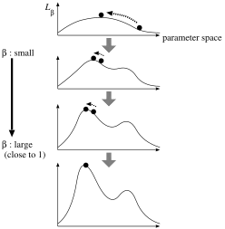
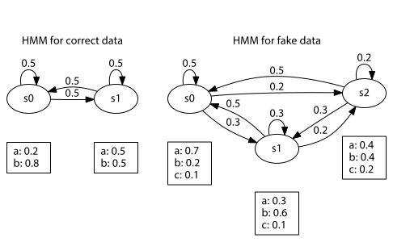

PRISM User’s Manual
(Version 2.3)
Taisuke Sato, Neng-Fa Zhou, Yoshitaka Kameya, Yusuke Izumi, Keiichi Kubota and Ryosuke Kojima
Copyright © 2019 T. Sato, N.-F. Zhou, Y. Kameya, Y. Izumi, K. Kubota, R. Kojima and AIST
The past several years have witnessed a tremendous interest in logic-based probabilistic learning as testified by the number of formalisms and systems and their applications. Logic-based probabilistic learning is a multidisciplinary research area that integrates relational or logic formalisms, probabilistic reasoning mechanisms, and machine learning and data mining principles. Logic-based probabilistic learning has found its way into many application areas including bioinformatics, diagnosis and troubleshooting, stochastic language processing, information retrieval, linkage analysis and discovery, robot control, and probabilistic constraint solving.
PRISM (PRogramming In Statistical Modeling) is a logic-based language that integrates logic programming and probabilistic reasoning including parameter learning. It allows for the description of independent probabilistic choices and their consequences in general logic programs. PRISM supports parameter learning, i.e. for a given set of possibly incomplete observed data, PRISM can estimate the probability distributions to best explain the data. This power is suitable for applications such as learning parameters of stochastic grammars, training stochastic models for gene sequence analysis, game record analysis, user modeling, and obtaining probabilistic information for tuning systems performance. PRISM offers incomparable flexibility compared with specific statistical tools such as hidden Markov models (HMMs) (Charniak 1993; Rabiner 1989), probabilistic context free grammars (PCFGs) (Charniak 1993) and discrete Bayesian networks.
PRISM employs a proof-theoretic approach to learning. It conducts learning in two phases: the first phase searches for all the explanations for the observed data, and the second phase estimates the probability distributions by using the EM algorithm. Learning from flat explanations can be exponential in both space and time. To speed up learning, the authors proposed learning from explanation graphs and using tabling to reduce redundancy in the construction of explanation graphs. The PRISM programming system is implemented on top of B-Prolog (http://www.probp.com/), a constraint logic programming system that provides an efficient tabling system called linear tabling (Zhou and Sato 2003). Tabling shares the same idea as dynamic programming in that both approaches make full use of intermediate results of computations. Using tabling in constructing explanation graphs resembles using dynamic programming in the Baum-Welch algorithm for HMMs and the Inside-Outside algorithm for PCFGs. Thanks to the good efficiency of the tabling system and the EM learner adopted in PRISM, PRISM is comparable in performance to specific statistical tools on relatively large amounts of data. The theoretical side of PRISM is comprehensively described in (Sato and Kameya 2001). For an implementational view, please refer to (Zhou et al. 2003). Since version 2.0, the PRISM programming system turns to be an open-source software, and hence the users can freely extend the programming system or see how the programming system works.
The user is assumed to be familiar with logic programming, the basics of probability theory, and some of popular probabilistic models mentioned above. The programming system is an extension of the B-Prolog system, and only PRISM-specific built-ins are elaborated in this document. Please refer to the B-Prolog user’s manual for details about Prolog built-ins.
The latest information and resources on PRISM are available at the website below.
http://rjida.meijo-u.ac.jp/prism/
For any questions, requests and bug-reports, please send an E-mail to:
prism[AT]ccml.meijo-u.ac.jp
where [AT] is replaced with @ .
The development team would like to thank all users of this software, and greatly appreciate those who gave valuable questions, comments and suggestions.
This software gratefully uses several free software packages, including:
Public-domain modules used in B-Prolog,
Mersenne Twister (http://www.math.sci.hiroshima-u.ac.jp/~m-mat/MT/emt.html),
SPECFUN (http://www.netlib.org/specfun/),1
LAPACK (http://www.netlib.org/lapack/),
Eigen (http://eigen.tuxfamily.org/), and
libLBFGS (http://www.chokkan.org/software/liblbfgs/).
The project has been supported in part by the “Discovery Science”project, JST Basic Research Programs CREST “Advanced Media Technology for Everyday Living,” the 21st Century COE Program“Framework for Systematization and Application of Large-scale Knowledge Resources” at Tokyo Institute of Technology, Grant-in-Aid for Scientific Research (No. 17300043, No. 17700140, No. 20240016, No. 20300053 and No. 23300054) from Ministry of Education, Culture, Sports, Science and Technology of Japan, and AI research center at National Institute of Advanced Industrial Science and Technology (AIST), Japan.
This document is organized as follows:
Chapter 1 gives an overview of the PRISM language and the PRISM programming system.
Chapter 2 describes the detail of the language.
Chapter 3 explains how to use the programming system.
Chapter 4 gives the detailed descriptions of the basic built-in predicates provided by the programming system.
Chapter 5 explains how to use the utilities for variational Bayesian learning with some introductory description.
Chapter 6 explains how to use the utilities for MCMC (Markov-Chain Monte Carlo) sampling with some introductory description.
Chapter 7 explains how to use the utilities for generative CRFs (conditional random fields) with some introductory description.
Chapter 8 explains how to use the utilities for probability computation based on cyclic explanation graphs with some introductory description.
Chapter 9 explains how to use the utilities for learning to rank and ranking goals based on the probability computation in this system with some introductory description.
Chapter 10 explains how to use the utilities for parallel EM learning using MPI (Message-Passing Interface).
Chapter 11 shows several program examples with detailed explanations.
To learn PRISM, it is better to see typical usages of PRISM illustrated in Chapter 1 and 11 first, and then to run the example programs in the released package. The chapters/sections whose titles are marked with * are considered as advanced, so you can skip these sections for the first time. Chapter 2 may also be skipped until the examples have been explored, but the content of this chapter (especially §2.2, §2.3 and §2.4) is indispensable to understanding the essence of examples. Chapter 3 and 4 are expected to work as a (rough) reference manual. Chapters 5 and 10 have the facilities introduced recently, and the authors expect these chapters to be referred to (only) by the users who are interested in these extended facilities. Note that a version number like ‘2.3’ is also referred to as a generic number of the versions numbered as 2.3.\(x\), so if there is no proviso, all descriptions about version 2.3 apply to versions 2.3.\(x\).
Chapter 8 was changed to describe viterbi computation on cyclic explanation graphs, newly introduced in version 2.3.
Chapter 9 was added to describe learning to rank and ranking goals based on the probability computation in this system, newly introduced in version 2.3.
§11.10 were added to present a simple exmaple of learning to rank and ranking goals.
The descriptions on the flags related to generative conditional random fields (crf_enable, crf_golden_b, crf_init, crf_learn_mode, crf_learn_rate, crf_ls_c1, crf_ls_rho and crf_penalty) were added into §4.13.2.
Chapter 7 was added to describe generative conditional random fields (CRFs), a popular class of discriminative models, newly introduced in version 2.2.
Chapter 8 was added to describe probability computation based on cyclic explanation graphs, newly introduced in version 2.2.
§11.7 was added to present a program example for a linear-chain CRFs as an example of generative CRFs.
§11.8 and §11.9 were added to present a couple of program examples that illustrate probabilistic inferences based on cyclic explanation graphs.
PRISM is a probabilistic extension of Prolog. Syntactically, PRISM is just Prolog augmented with a probabilistic built-in predicate and declarations. There is no restriction on the use of function symbols, predicate symbols or recursion, and PRISM programs are executed in a top-down left-to-right manner just like Prolog. In this chapter, we pick up three illustrative examples to overview the major features of PRISM. These examples will also be used in the following chapters, but for brevity of descriptions, only a part is shown here. For full descriptions of these examples, please refer to Chapter 11 or the comments in the example programs included in the released package.
The most characteristic feature of PRISM is that it provides random switches to make probabilistic choices. A random switch has a name, a space of possible outcomes, and a probability distribution. The first example is a simple program that uses just one random switch:
values(coin,[head,tail]). direction(D):- msw(coin,Face), ( Face == head -> D=left ; D=right).
The predicate direction(D) indicates that a person decides the direction to go as D. The decision is made by tossing a coin: D is bound to left if the head is shown, and to right if the tail is shown. In this sense, we can say the predicate direction/1 is probabilistic. It is allowed to use disjunctions (;), the cut symbols (!) and if-then (->) statements as far as they work as expected according to the execution mechanism of the programming system.2 By combining probabilistic predicates, the user can build a probabilistic model for the task at hand.
Besides the definitions of probabilistic predicates, we need to make some declarations. The clause values(coin,[head,tail]) declares the outcome space of a switch named coin, and each call of msw(coin,Face) makes a probabilistic choice (Face will be bound to the result), just like a coin-tossing. This means that we can observe the direction he/she goes.
Now let us use this program. After installation, we can invoke the programming system just running the command ‘prism’:
% prism PRISM 2.3, (C) Sato Lab, Tokyo Institute of Technology, August, 2017 B-Prolog Version 7.8b1, All rights reserved, (C) Afany Software 1994-2012. Type 'prism_help' for usage. | ?-
where ‘%’ is the prompt symbol of some shell (on Linux or Mac OS X) or the command prompt (on Windows). In the following, removing the vertical bar, we use ‘?-’ as the prompt symbol for PRISM.
Let us assume that the program above is contained in the file named ‘direction.psm’. Then, we can load the program using a built-in prism/1 as follows:
?- prism(direction).
After loading the program, we can run the program using built-in predicates. For example, we can make a sampling by the built-in sample/1:
?- sample(direction(D)). D = left ?
The probability distributions of switches are maintained by the programming system, so they are not buried directly in the definitions of probabilistic predicates. Since version 1.9, the switches have uniform distributions by default. So the results obtained by the multiple runs of the query above should not be biased.
On the other hand, the built-in predicate set_sw/2 and its variations are available for setting probability distributions manually. For example, to make the coin biased, we may call
?- set_sw(coin,[0.7,0.3]).
which sets the probability of the head being shown to be 0.7. The status of random switches can be confirmed by show_sw/0:
?- show_sw. Switch coin: unfixed: head (0.7) tail (0.3)
At this point, the run with sample/1 will show a different probabilistic behavior from that was made before:
?- sample(direction(D)).
Let us pick up another example that models the inheritance mechanism of human’s ABO blood type. As is well-known, a human’s blood type (phenotype) is determined by his/her genotype, which is a pair of two genes (A, B or O) inherited from his/her father and mother.3 For example, when one’s genotype is AA or AO (OA), his/her phenotype will be type A. In a probabilistic context, on the other hand, we consider a pool of genes, and let \(p_a\), \(p_b\) and \(p_o\) denote the frequencies of gene A, B and O in the pool, respectively (\(p_a + p_b + p_o = 1\)). When random mating is assumed, the frequencies of phenotypes, namely, \(P_A\), \(P_B\), \(P_O\) and \(P_{AB}\), are computed by Hardy-Weinberg’s law (Crow 1986): \(P_A=p_a^2+2p_a p_o\), \(P_B=p_b^2+2p_b p_o\), \(P_O=p_o^2\) and \(P_{AB}=2p_a p_b\). To represent the distribution over phenotypes instead of these numerical equations, we may write the following PRISM program:
values(gene,[a,b,o]). bloodtype(P) :- genotype(X,Y), ( X=Y -> P=X ; X=o -> P=Y ; Y=o -> P=X ; P=ab ). genotype(X,Y) :- msw(gene,X),msw(gene,Y).
In this program, we let a switch msw(gene,X) instantiated with \({\tt X}={\tt a}\), \({\tt X}={\tt b}\) and \({\tt X}={\tt o}\) denote a random pick-up of gene X from the pool, and become true with probability \(p_a\), \(p_b\) and \(p_o\), respectively. Then, from the definition of bloodtype/1, we can say that one of bloodtype(P) with \({\tt P}={\tt a}\), \({\tt P}={\tt b}\), \({\tt P}={\tt o}\) and \({\tt P}={\tt ab}\) becomes exclusively true with probability \(P_A\), \(P_B\), \(P_O\) and \(P_{AB}\), respectively (see §2.2 for details). This implies the logical variable P in bloodtype(P) behaves as a random variable that follows the distribution over phenotypes.4
Here, just like the distribution \(\{P_A, P_B, P_O, P_{AB}\}\) is computed from the basic one \(\{p_a, p_b, p_o\}\), the probability distributions of switches form a basic distribution from which we can construct the probability distribution represented by the PRISM program. Then we consider each \(\theta_{i,v}\), the probability of a switch instance msw(\(i\),\(v\)) being true (\(i\) and \(v\) are ground terms), as a parameter of the program’s distribution. If we give appropriate parameters, a variety of probabilistic inferences are available. For example, sampling is done with the built-in predicate sample/1:
?- sample(bloodtype(X)).
In the above query, the answer X = b will be returned with probability \(P_B\), the frequency of blood type B. Also it is possible to compute the probability of a probabilistic goal (or simply, a goal):
?- prob(bloodtype(a)). Probability of bloodtype(a) is: 0.360507016168634
Instead of being set manually, the parameters can be estimated from the observed data. We call this task parameter learning or more specifically, maximum likelihood estimation (ML estimation or MLE) — given some observed data,, a bag of observed goals, we find the parameters that maximize the probability of the observed data being occurred. In the current case, the observed data should be a bag of instances of bloodtype(X), which correspond to phenotypes of (randomly sampled) humans. Also note here that we are now in a partially observing situation, that is, we cannot know which switch instances are true (i.e. which genes are inherited) for some given instances of bloodtype(X) (i.e. some phenotypes). For example, if we observed a person of blood type A, we do not know whether he has inherited two genes A from both parents, or he inherits gene A from one parent and gene O from the other. For MLE in such a situation, one solution is to use the EM (expectation-maximization) algorithm (Dempster et al. 1977),5 and the programming system provides a built-in routine of the EM algorithm.
On the other hand, for the ‘direction’ program in the last section, we are in a fully observing situation, i.e. we can know all behaviors of the random switches from the observation. Then, the EM algorithm is simply reduced to a counting procedure of the true switch instances. In PRISM, either partially observing or fully observing, by adding a couple of declarations and preparing some data, we can estimate the parameters from the data.
For example, let us consider that we have observed 40 persons of blood type A, 20 persons of B, 30 persons of O, and 10 persons of AB. To estimate the parameters from these observed data, we then invoke the learning command as follows:6
?- learn([count(bloodtype(a),40),count(bloodtype(b),20), count(bloodtype(o),30),count(bloodtype(ab),10)]).
After parameter learning, we may confirm the estimated parameters:
?- show_sw. Switch gene: unfixed: a (0.292329558535712) b (0.163020241540856) o (0.544650199923432)
It can be seen from above and the original meaning given to the program that the frequencies of genes are estimated as: \(p_a=0.292\), \(p_b=0.163\), \(p_o=0.545\). Thus in the context of population genetics, we can say that, inversely with Hardy-Weinberg’s law, the hidden frequencies of genes can be estimated from the observed frequencies of phenotypes.
The inheritance model described in this section is considerably simple since we have assumed random mates. However with the expressive power of PRISM, the cases of non-random mates can also be written (for example, as done in (Sato 1998)).
Furthermore, let us consider a PRISM version of a hidden Markov model (HMM) (Charniak 1993; Rabiner 1989). HMMs not only dominate in speech recognition but are also well-known as suited for many tasks such as part-of-speech tagging in natural language processing or biological sequence analysis. An HMM is a probabilistic finite automaton where state transitions and symbol emissions are all probabilistic.
Let us consider a two-state HMM in Figure 1.1. The HMM has the states s0 and s1, and it emits a symbol a or b at each state. Each of state transitions and symbol emissions is probabilistic, and conditioned only on the current state. It is assumed in HMMs that we can only observe a string (i.e. a sequence of emitted symbols), not the sequence of state transitions. The program is described as follows:
values(init,[s0,s1]). % Switch for state initialization values(out(_),[a,b]). % symbol emission values(tr(_),[s0,s1]). % state transition hmm(L):- % To observe a string L: str_length(N), % Get the string length as N msw(init,S), % Choose an initial state randomly hmm(1,N,S,L). % Start stochastic transition (loop) hmm(T,N,_,[]):- T>N,!. % Stop the loop hmm(T,N,S,[Ob|Y]) :- % Loop: the state is S at time T msw(out(S),Ob), % Output Ob at the state S msw(tr(S),Next), % Transit from S to Next. T1 is T+1, % Count up time hmm(T1,N,Next,Y). % Go next (recursion) str_length(10). % String length is 10
Please note the comments in the program, each states a procedural reading of the corresponding predicate call. Then we may find that a top-down execution from hmm(L), which represents the distribution for a string L, simulates a generation process that yields L, or in other words, that we observe L after a chain of probabilistic choices by switches. In this sense, it is possible to say that the program forms a generative model. Besides, it may be noticed that we are also in a partially observing situation for HMMs, since the information about states is hidden from the string L in hmm(L).
In this manual, the code shown above is called the modeling part of the program, and on the other hand, we can also write non-probabilistic clauses (i.e. usual Prolog clauses) as the utility part. For example, we define the two predicates hmm_learn/1 and set_params/0, where the former is a batch predicate for learning, and the latter is the former’s subroutine that sets some particular values of parameters at once.
hmm_learn(N):- set_params,!, % Set parameters manually get_samples(N,hmm(_),Gs),!, % Get N samples learn(Gs). % learn with these samples set_params :- set_sw(init, [0.9,0.1]), set_sw(tr(s0), [0.2,0.8]), set_sw(tr(s1), [0.8,0.2]), set_sw(out(s0),[0.5,0.5]), set_sw(out(s1),[0.6,0.4]).
get_samples/3,7 learn/1 and set_sw/2 are the built-ins provided by the system, which run the predicates in the modeling part (at meta-level), or change the status of the system including parameter values. The built-ins except msw/2 are non-probabilistic, and hence all predicates in the utility part above are also non-probabilistic. Programming with built-ins in the utility part allows users to take a variety of ways of experiments according to the application. For example, in the HMM program, we may add clauses to carry out tasks such as aligning and scoring sequences.
In the literature of applications with HMMs, several efficient algorithms are well-known. One of these algorithms is the Viterbi algorithm (Rabiner 1989), which computes the most probable sequence of (hidden) state transitions given a string. This is done by dynamic programming, and the computation time is known to be linear in the length of the given string. The programming system provides a built-in for the Viterbi algorithm, which is a generalization of the one for HMMs. For example, viterbif/1 writes the most probable sequence to the output:
?- viterbif(hmm([a,a,a,a,a,b,b,b,b,b])). hmm([a,a,a,a,a,b,b,b,b,b]) <= hmm(1,10,s0,[a,a,a,a,a,b,b,b,b,b]) & msw(init,s0) hmm(1,10,s0,[a,a,a,a,a,b,b,b,b,b]) <= hmm(2,10,s1,[a,a,a,a,b,b,b,b,b]) & msw(out(s0),a) & msw(tr(s0),s1) hmm(2,10,s1,[a,a,a,a,b,b,b,b,b]) <= hmm(3,10,s0,[a,a,a,b,b,b,b,b]) & msw(out(s1),a) & msw(tr(s1),s0) ...omitted... hmm(10,10,s1,[b]) <= hmm(11,10,s0,[]) & msw(out(s1),b) & msw(tr(s1),s0) hmm(11,10,s0,[]) Viterbi_P = 0.000117528
We then read from here that the most probable sequence is: \({\tt s0}\to{\tt s1}\to\cdots\to{\tt s1}\to{\tt s0}\) (though the last transition may be redundant).
It is shown that the algorithm implemented as the system’s built-in works as efficiently as the one specialized for HMMs (Sato and Kameya 2000). So we can handle considerably large datasets with PRISM. The efficiency comes from linear tabling (Zhou and Sato 2003), a tabling mechanism provided by B-Prolog, and an EM algorithm called the graphical EM algorithm.8 A similar mechanism is adopted for learning and probability computation mentioned above, which is also a generalization of the Baum-Welch algorithm (also known as the forward-backward algorithm) and the backward probability computation for HMMs respectively (Kameya and Sato 2000; Sato and Kameya 2000, 2001).
To realize efficient computation described in the previous section, we need to write PRISM programs which obey some restrictions. The first major one is the exclusiveness condition, in which all disjunctive paths in a proof tree are required to be probabilistically exclusive. The second one is the uniqueness condition, in which all observable goal patterns are probabilistically exclusive to each other and the sum of their probabilities needs to be unity. For parameter learning, this condition can be relaxed by assuming the missing-at-random (MAR) condition (Sato and Kameya 2001), and with the MAR condition, there is a case that we can handle the PRISM programs in which the sum of probabilities of observable patterns can exceed unity. On the other hand, the lack of probability mass with failure in the generation process (in which the sum of probabilities becomes less than one) is more serious. The uniqueness condition implies that for every observable pattern, its generation process never fails, and could be a strong restriction in our modeling. Recently, for a remedy of this, the programming system introduced a new graphical EM algorithm that takes such failures into account (Sato and Kameya 2004a, 2004b; Sato et al. 2005). This algorithm is based both on Cussens’s FAM (failure-adjusted maximization) algorithm (Cussens 2001) and FOC (First Order Compiler) (Sato 1989). With this new learning framework, we are able to introduce some constraints (which causes some failures) to generative models.
When the observed data is not so large compared to the complexity of the model (i.e. the number of parameters), there should be a risk to rely on the parameters estimated from such data. For example, let us consider that we just have a data set on blood types of 10 persons, in which only the persons of blood type B and O are recorded. Even in such a situation, it seems inappropriate to conclude that gene A does not exist at all. Instead, we may take a Bayesian approach to combine our prior knowledge (bias) with the statistics from the data in a principled way.
In Bayesian approaches, we first consider a prior distribution \(P(\theta)\) over parameters \(\theta\). In PRISM, as the built-in prior distribution, we use a Dirichlet distribution \(P(\theta)=\frac{1}{Z}\prod_{i,v}\theta_{i,v}^{\alpha_{i,v}-1}\), where each parameter \(\alpha_{i,v}\) \((>0)\) of the Dirichlet distribution corresponds to a switch instance msw(\(i\),\(v\)) and is often called a hyperparameter of the program’s distribution (\(Z\) is a normalizing constant). Then, the programming system provides two types of Bayesian learning. One is for MAP (maximum a posteriori) estimation, and the other for variational Bayesian (VB) learning.
The hyperparameters basically work as pseudo counts, i.e. the statistics on what we assume, not actually observed. Since version 2.0, the programming system provides a clearer way of handling pseudo counts. That is, in the context of MAP estimation, we consider \(\delta_{i,v}=(\alpha_{i,v}-1)\) as pseudo counts and it is recommended to configure the hyperparameters through \(\delta_{i,v}\). On the other hand, in VB learning, \(\alpha_{i,v}\) themselves are considered as pseudo counts, and it is recommended to configure \(\alpha_{i,v}\) directly. In practice, it is important that we are only allowed to have \(\delta_{i,v}\ge 0\) (i.e. \(\alpha_{i,v}\ge 1\)) in the MAP case while we can have \(\alpha_{i,v}>0\) in the VB case.
In MAP estimation, to estimate a parameter \(\theta_{i,v}\), the probability of a switch instance msw(\(i\),\(v\)) being true, we perform \(\hat{\theta}_{i,v}=(C_{i,v} + \delta_{i,v})/(\sum_{v'\in V_i}(C_{i,v'} + \delta_{i,v'}))\), where \(C_{i,v}\) is the (expected) occurrences of the switch instance msw(\(i\),\(v\)) in the data, and \(V_i\) is the set of possible outcomes of the switch named \(i\). When the pseudo count \(\delta_{i,v}=0\), this procedure is nothing but ML estimation (i.e. \(\hat{\theta}_{i,v}=C_{i,v}/\sum_{v'\in V_i}C_{i,v'}\)). When configuring \(\delta_{i,v}\) to be positive, on the other hand, we can avoid the estimated parameter \(\hat{\theta}_{i,v}\) being zero, and hence can relieve the problem of data sparseness to some extent. In the above example, we can assign a positive probability to the chance that gene A exists. Generally speaking, MAP estimation is a procedure to obtain the parameters that maximizes a posteriori probability \(P(\theta\mid\boldsymbol{G},M)\propto P(\boldsymbol{G}\mid M,\theta)P(\theta)\), where \(\boldsymbol{G}\) is the observed data, i.e. a multiset of observed goals \(G_1\), \(G_2\), …, \(G_T\), and \(M\) is the model written as a PRISM program.
It is often said, on the other hand, that variational Bayesian (VB) learning has high robustness against data sparseness in model selection and prediction (Viterbi computation). This is because VB learning gives us an a posteriori distribution \(P^\ast(\theta\mid\boldsymbol{G},M)\) and we can make inferences based on some averaged quantities with respect to \(P^\ast(\theta\mid\boldsymbol{G},M)\), instead of particular point-estimated parameters.
Now let us run the blood type program with the facilities above. To set pseudo counts (hyperparameters) in the context of MAP estimation, we may add the query below to the program:
:- set_prism_flag(default_sw_d,1.0).
The programming system provides dozens of execution flags to allow the users to change the behaviors of the built-in predicates. The query above will set a value 1.0 to the flag named ‘default_sw_d’. Under this setting, when the system tries to register a new switch gene to the internal database, its pseudo counts \(\delta_{{\tt gene},v}\) (\(v={\tt a},{\tt b},{\tt o}\)) will be all set to 1.0 (and accordingly \(\alpha_{{\tt gene},v}\) will be set to 2.0). The suffix ‘_d’ of the flag name means “for pseudo counts \(\delta_{i,v}\)”. Then, let us learn the parameters from the data in which 4 persons of blood type B and 6 persons of blood type O are recorded:
?- prism(bloodABO). : ?- learn([count(bloodtype(b),4),count(bloodtype(o),6)]). #goals: 0(2) Exporting switch information to the EM routine ... done #em-iters: 0(4) (Converged: -12.545609035) Statistics on learning: Graph size: 12 Number of switches: 1 Number of switch instances: 3 Number of iterations: 4 Final log of a posteriori prob: -12.545609035 Total learning time: 0.000 seconds Explanation search time: 0.000 seconds Total table space used: 2092 bytes Type show_sw to show the probability distributions. yes
After learning, we can confirm that a positive probability is assigned to the parameter of msw(gene,a), and that the common pseudo count 1.0 are surely set to each switch:
?- show_sw_pd. Switch gene: unfixed_p,unfixed_h: a (p: 0.043478261, d: 1.000000000) b (p: 0.242686723, d: 1.000000000) o (p: 0.713835016, d: 1.000000000) yes
The suffix ‘_pd’ of the built-in predicate show_sw_pd/0 means “for both parameters and pseudo counts \(\delta_{i,v}\)”. On the other hand, we can assign the pseudo counts manually:
?- set_sw_d(gene,[0.5,1.0,1.0]). : ?- show_sw_pd. Switch gene: unfixed_p,unfixed_h: a (p: 0.043478261, d: 0.500000000) b (p: 0.242686723, d: 1.000000000) o (p: 0.713835016, d: 1.000000000) yes
In the context of VB learning, it is recommended to configure \(\alpha_{i,v}\) directly. To conduct VB learning in this example, we use default_sw_a flag instead of the default_sw_d flag:
:- set_prism_flag(default_sw_a,0.5).
By this query, the pseudo counts \(\alpha_{{\tt gene},v}\) (\(v={\tt a},{\tt b},{\tt o}\)) of the switch gene will be all set to 0.5. The suffix ‘_a’ of the flag name means “for pseudo counts \(\alpha_{i,v}\)”. Then, VB learning is easily conducted by setting ‘vb’ to the execution flag named ‘learn_mode’ and then invoking the usual learning command (note that there is no need to modify the modeling part):
?- prism(bloodABO). : ?- set_prism_flag(learn_mode,vb). : ?- learn([count(bloodtype(b),4),count(bloodtype(o),6)]). #goals: 0(2) Exporting switch information to the EM routine ... done #vbem-iters: 0(4) (Converged: -10.083233825) Statistics on learning: Graph size: 12 Number of switches: 1 Number of switch instances: 3 Number of iterations: 4 Final variational free energy: -10.083233825 Total learning time: 0.000 seconds Explanation search time: 0.000 seconds Total table space used: 2092 bytes Type show_sw_a/show_sw_d to show the probability distributions. yes
We can see that the pseudo counts have been adjusted based on the given data, while the parameters are kept as their default values. This implies that now we have the a posteriori distribution \(P^\ast(\theta\mid D)\).
?- show_sw_pa. Switch gene: unfixed_p,unfixed_h: a (p: 0.333333333, a: 0.509135683) b (p: 0.333333333, a: 5.027009446) o (p: 0.333333333, a: 16.015080650) yes
Similarly to parameter learning, Viterbi computation based on the a posteriori distribution \(P^\ast(\theta\mid D,M)\) can be invoked with a setting for the execution flag ‘viterbi_mode’. For the HMM program, we may run the following after VB learning:
?- set_prism_flag(viterbi_mode,vb). : ?- viterbif(hmm([a,a,a,a,a,b,b,b,b,b])).
Since version 2.1, two new approximate frameworks for Bayesian learning are available. The former is called variational Bayesian Viterbi training (VB-VT) and the latter is MCMC sampling. The user can easily switch among these frameworks including variational Bayesian EM learning with his/her program unchanged.
In the programming system, a command named upprism is provided for batch execution (or non-interactive execution) of a program. For a batch execution, we first write what we would like to execute in the clause body of prism_main/0-1. In the HMM program, for example, we may run hmm_learn(100), which means to conduct EM learning with 100 observed goals (§1.3), in a batch execution:
prism_main:- hmm_learn(100).
Then, the batch execution can be started by running upprism (recall that the file name of the HMM program is ‘hmm.psm’):
% upprism hmm : loading::hmm.psm.out #goals: 0.........(94) Exporting switch information to the EM routine ... done #em-iters: 0.........100.........200.........300.........400.........500. ........600.........700.........800.........900(910) (Converged: -684.452 761975) Statistics on learning: Graph size: 5680 Number of switches: 5 Number of switch instances: 10 Number of iterations: 910 Final log likelihood: -684.452761975 Total learning time: 0.128 seconds Explanation search time: 0.008 seconds Total table space used: 349032 bytes Type show_sw or show_sw_b to show the probability distributions. yes
Furthermore, since version 1.11, a utility for parallel EM learning is available. Namely, a command named mpprism (multi-process PRISM) is used instead of upprism (uni-process PRISM). Under some additional settings for a parallel computing environment (§10.2), we can run mpprism similarly to upprism. For example, we learn the HMM program from 100 observed goals in a data-parallel fashion:
% env NPROCS=4 MACHINES=machines mpprism hmm : loading::hmm.psm.out #goals: 0.........(91) Gathering and exporting switch information ... #em-iters: 0.........100.........200.........300.........400.........500. ........600.........700.........800.(811) (Converged: -680.209735465) Statistics on learning: Graph size: 6268 Number of switches: 5 Number of switch instances: 10 Number of iterations: 811 Final log likelihood: -680.209735465 Total learning time: 0.902 seconds Explanation search time: 0.070 seconds Type show_sw or show_sw_b to show the probability distributions. yes
In the above execution, we specified the number of processors and the machine file (the file that contains the name of machines where the distributed processes work) by the environment variables NPROCS and MACHINES, respectively. Although the mechanism inside is rather complicated, we need no extra PRISM programming for parallel execution.
Generally speaking, a probabilistic model represents some probability distribution which probabilistic phenomena in the application domain are assumed to follow, and PRISM is a logic-based representation language for such probabilistic models. In this chapter, we describe the detail of the PRISM language, and the basic mechanism of the related algorithms provided as built-in predicates.
Let us first define that a probabilistic predicate is a predicate which eventually calls (at non-meta level) the built-in probabilistic predicate msw/2, i.e. random switches. Then we roughly classify the clauses in a PRISM program into the following three parts:
Modeling part: the definitions of all probabilistic predicates, and of some non-probabilistic predicates which are called from probabilistic predicates. This part corresponds to the definition of the model.
Utility part: the remaining definitions of non-probabilistic predicates. This part is a usual Prolog program that utilizes the model, and often that can be seen as a meta program of the modeling part.
Declarations: the clauses of some particular built-in predicates which contain additional information on the model (of course, they are non-probabilistic).
In the rest of this chapter, we first describe the basic semantics of PRISM programs and the currently available probabilistic inferences. Then we proceed to describe the details of each part.
PRISM is designed based on the distribution semantics (Sato 1995; Sato and Kameya 2001, 2008), a probabilistic extension of the least model semantics. In the distribution semantics, all ground atoms are considered as random variables taking on 1 (true) or 0 (false). With this semantics and the predefined probabilistic property of random switches, we can give a declarative semantics to programs. However, in the recent versions, to make an efficient implementation of tabling, we use a different specification from the original one (Sato and Kameya 1997, 2001) of random switches, in which some procedural notion is required. Here we describe msw/2 as follows:
For each ground term \(i\) in msw(\(i\),\(v\)) which is possible to appear in the program, a set of ground terms \(V_i\) should be given by the user with multi-valued switch declaration, and also \(v\in V_i\) should hold. Such an msw(\(i\),\(v\)) is hereafter called a switch instance, where \(i\) is the switch name, \(v\) the outcome or the value, and \(V_i\) the outcome space of \(i\). A collection of msw(\(i\),\(\cdot\)) forms switch \(i\).
For a switch \(i\), whose outcome space is \(V_i=\{v_1,\ldots,v_k\}\) (\(k\ge 1\)), one of the ground atoms msw(\(i\),\(v_1\)), …, msw(\(i\),\(v_k\)) is exclusively true at the same position of a proof tree, and \(\sum_{v\in V_i}\theta_{i,v}=1\) holds, where \(\theta_{i,v}\) is the probability of msw(\(i\),\(v\)) being true and is called a parameter of the program. Intuitively, a logical variable V in a predicate call of msw(\(i\),V) behaves as a random variable which takes a value \(v\) from \(V_i\) with the probability \(\theta_{i,v}\).
The truth-values of switch instances at the different positions of a proof tree are independently assigned. This means that the predicate calls of msw/2 behave independently of each other.
Hereafter, for understanding the third condition, it would be a help to introduce IDs which identify positions in the proof tree,9 and then to associate each occurrence of switch instance with the ID of the corresponding position. Then the switches at different positions will be syntactically different. The third condition is referred to as the independence condition.
The probabilistic meaning of the modeling part can be understood in a bottom-up manner.10 Now, for illustration, let us pick up again the blood type program:
bloodtype(P) :- genotype(X,Y), ( X=Y -> P=X ; X=o -> P=Y ; Y=o -> P=X ; P=ab ). genotype(X,Y) :- msw(gene,X),msw(gene,Y). values(gene,[a,b,o]).
First, one of msw(gene,X) instantiated with \({\tt X}={\tt a}\), \({\tt X}={\tt b}\) or \({\tt X}={\tt o}\) (i.e. a random pick-up of a gene X from the pool) becomes exclusively true, according to the probabilistic property of switches described above. Then we associate the parameters of switches with gene frequencies, i.e. \(\theta_{{\tt gene},{\tt a}}=p_a\), \(\theta_{{\tt gene},{\tt b}}=p_b\) and \(\theta_{{\tt gene},{\tt o}}=p_o\). Also in view of the independence of switches at different occurrences, the definition of genotype/2 satisfies the random-mate assumption on genotypes, hence the probability of each is a product of two gene frequencies. In the body of bloodtype/1’s definition, one of genotype(X,Y) with \({\tt X}={\tt a},{\tt b}\) and o, and \({\tt Y}={\tt a},{\tt b}\) and \({\tt o}\) becomes exclusive, and hence the different instances of the clause body become exclusively true. We can also see the second conjunct makes a correct many-to-one mapping from genotypes to phenotypes. Therefore we can say that one of bloodtype(P) with \({\tt P}={\tt a}\), \({\tt P}={\tt b}\), \({\tt P}={\tt o}\) and \({\tt P}={\tt ab}\) becomes exclusively true with probability \(P_A\), \(P_B\), \(P_O\), and \(P_{AB}\), respectively. In addition, from the exclusiveness discussed above, each of logical variables X and Y in genotype(X,Y) behaves just like a random variable that takes a gene as its value, whereas P in bloodtype(P) behaves like a random variable that takes a phenotype.
In PRISM, it would be easier, and so is recommended, to write a program in a top-down (consequently, a generative) manner. On the other hand, sometimes it is also crucial to inspect the program’s probabilistic meaning in a bottom-up manner, as shown above.
Before proceeding to the further details of the PRISM language, it would be worth listing what we can do with this language. First let \(P_\theta(\cdot)\) be the probability distribution specified by the program, under the parameters \(\theta\) of switches buried in the program. Then, in the PRISM programming system, the following five types of probabilistic inferences are available:
Sampling (§4.2):
Given a goal \(G\) of a probabilistic predicate, return the answer substitution \(\sigma\) with the probability \(P_\theta(G\sigma)\), or fail with the probability that \(\exists G\) is false.
Probability calculation (§4.3):
Given a goal \(G\) of a probabilistic predicate, compute \(P_\theta(G)\).
Viterbi computation (§4.5):
Given a goal \(G\) of a probabilistic predicate, find \(E^\ast=\mbox{argmax}_{E\in\{E_1,\ldots,E_K\}} P_\theta(E)\), where \(E_1,\ldots,E_K\) are the explanations for \(G\) such that \(G\Leftrightarrow E_1\lor\cdots\lor E_K\) and each \(E_k\) is a conjunction of switch instances.
Hindsight computation (§4.6):
Given a goal \(G\) of a probabilistic predicate, compute \(P_\theta(G')\) or \(P_\theta(G'\mid G)\) for each subgoal \(G'\) of \(G\).
Parameter learning (§[sec:built-in:learn]):
Given a bag \(\{G_1,G_2,\ldots,G_T\}\) of observed goals of probabilistic predicates (i.e. training data), get the parameters \(\theta\) of switches which maximizes the likelihood, e.g. \(\prod_t P_\theta(G_t)\).
The first inference task works with an execution style called the sampling execution (§2.4.1), and the rest utilize the explanation search (§2.4.2). For HMMs, the former execution style simulates the behavior of an HMM as a string generator (i.e. data sampler), and the latter simulates the behavior as an acceptor or a recognizer. For more details including their variations, please visit the corresponding sections.
We have seen a couple of examples of the modeling part (sections in Chapter 1 and §2.2). One interesting feature of PRISM is that we can (or we should) write models as executable. For various probabilistic inferences, there are two underlying execution styles called sampling execution and explanation search. So it is expected for users to write the modeling part so that it can work in these two execution styles. As far as we understand these two execution styles, it is allowed to write disjunctions (‘;’), the cut symbols (‘!’), or the if-then (‘->’) statements in a clause body.
In addition, for efficient execution of models, the system assumes that the model follows several conditions.11 However, it is often difficult for the system to check these conditions, and hence it is required to write carefully programs to satisfy the conditions (otherwise some unexpected behavior arises).
In the rest of this section, we first explore two underlying execution styles for probabilistic inferences, and then make some advanced discussions concerning to parameter learning. Finally we summarize the conditions on the modeling part to be satisfied.
Sampling execution is the underlying execution style for a sampling task (§2.3, §4.2). In the literature of Bayesian networks, this style is sometimes called forward sampling. In the recent versions, sampling execution becomes easier to understand. That is, the system only makes a top-down execution like Prolog, and determines the value \(v\) of msw(\(i\),\(v\)) on the fly according to the parameters \(\{\theta_{i,v}\}\). A sampling execution of probabilistic goal12 \(G\) is invoked by:13
?- sample(\(G\)).
Internally, msw/2 for sampling execution is essentially defined as follows:14
msw(I,V):- get_values1(I,Values), $get_probs(I,Probs), $choose(Values,Probs,V).
In the definition above, get_values1(I,Values) is declared as a multi-valued switch declaration by the user, and I should be a ground term. Then Values, a list of ground terms, will be returned based on the declaration. On the other hand, $get_probs(I,Probs) returns Probs which is a list of switch I’s parameters, and $choose(Values,Probs,V) returns V randomly from Values according to the probabilities Probs. Also note that none of get_values1/2, $get_probs/2 and $choose/3 is backtrackable.15
One typical trap in sampling execution is the independence among switches. In the previous papers, the authors often use a blood type program similar to the one below, instead of the one illustrated in this manual:
bloodtype(a) :- (genotype(a,a) ; genotype(a,o) ; genotype(o,a)). bloodtype(b) :- (genotype(b,b) ; genotype(b,o) ; genotype(o,b)). bloodtype(o) :- genotype(o,o). bloodtype(ab):- (genotype(a,b) ; genotype(b,a)). genotype(X,Y) :- msw(gene,X),msw(gene,Y). values(gene,[a,b,o]).
With this program, the following query for sampling execution sometimes fails:
?- sample(bloodtype(X)).
This is because there is a case that all predicate calls genotype(a,a), genotype(a,o), …, and genotype(b,a) in the bloodtype/1’s definition independently fail, without sharing the results of sampling msw/2. The difference between the program above and the blood type programs in the previous papers is the use of msw/3, which can share the sampling results by referring to their second arguments. For sampling execution with msw/2, we need to write a program in a purely generative manner: once we get a result of a switch sampling, the result should be passed through the predicate arguments to the predicate call which requires it as input.
Explanation search works as an underlying subroutine of built-in predicates for probabilistic inference such as probability calculation (§4.3), Viterbi computation (§4.5), hindsight computation (§4.6) and parameter learning (§[sec:built-in:learn]).16 To simulate only explanation search, we can use the built-ins probf/1-2 (§4.4). In this section, we describe the explanation search by defining several terminologies.
First, in PRISM, an explanation for a probabilistic goal \(G\) is a conjunction \(E\) of the ground switch instances, which occurs in a derivation path of a sampling execution for \(G\). In the blood type program, for example, one possible explanation of goal bloodtype(a) is:
\(\mbox{\tt msw(gene,a)}\land\mbox{\tt msw(gene,a)}.\)
(if we know a person’s blood type is A, one possibility is that he inherits two A genes from both parents.) This corresponds to a phenomenon that we will get bloodtype(a) as a solution of a sampling execution of bloodtype(X) by having msw(gene,a) twice. Each of two msw(gene,a)s above indicates an individual gene inheritance from one of the parents, so they should not be suppressed (in other words, they appear at different positions in a proof tree; see the discussion in §2.2).
Basically we can write the modeling part, keeping in mind that an explanation search finds all possible explanations for a given goal by a failure-driven loop (Sterling and Sharpiro 1986). For bloodtype(a), we have three explanations:
| \(\mbox{\tt msw(gene,a)}\land\mbox{\tt msw(gene,a)}\), |
| \(\mbox{\tt msw(gene,a)}\land\mbox{\tt msw(gene,o)}\), |
| \(\mbox{\tt msw(gene,o)}\land\mbox{\tt msw(gene,a)}\). |
Also please note here that the last two explanations correspond to different derivation paths, and so should not be suppressed. To be more specific, as mentioned in §2.2, this would be understood that, by associating switches with IDs of the positions in the proof tree, they are probabilistically exclusive. In PRISM, for the explanations \(E_1,E_2,\ldots,E_k\) for a goal \(G\), we assume that \(k\) is finite (the finiteness condition), and \(G\Leftrightarrow E_1\lor E_2\lor\ldots\lor E_k\).
In a probabilistic context, an explanation \(E\) is a conjunction of independent switch instances, and hence the probability of \(E\) is the product of the probabilities of switch instances in \(E\). Also, if we assume that possible explanations for any goal are all exclusive (i.e. the program satisfies the exclusiveness condition), the probability of a probabilistic goal \(G\) is the sum of probabilities of the explanations for \(G\). For some probabilistic inference or learning given a goal \(G\), the system makes an explanation search for \(G\) in advance of numerical computations.
Unfortunately, it is easily seen that, in general, the number of explanations for a goal can be exponential depending on the complexity of the model or the given goal (input). To compress these explanations and make them manageable, the system adopts tabling, or more specifically linear tabling (Zhou and Sato 2003), for explanation search. In tabling, every solution of a predicate call is stored into the solution table, and once we have all solutions for the predicate call, the stored solutions are used for the later calls. After the explanation search by tabling, the stored solutions are converted to a data structure called explanation graphs, and then the system performs probabilistic computation on these graphs. Furthermore, explanation graphs can be seen as AND/OR graphs consisting of propositional (i.e. ground or existentially quantified) formulas, and tabling itself can be understood as a kind of propositionalization procedure in that it receives first-order expressions (i.e. a PRISM program) and observed goals as input, and generates as output propositional AND/OR graphs that explain observed goals.
For example, let us consider the HMM program in §1.3, with the string length being changed to 3. In this program, we have the following 16 explanations17 for \(G=\mbox{\tt hmm([a,b,b])}\):
\[\begin{eqnarray*} E_1&=&\mbox{\tt msw(init,s0)}\land\mbox{\tt msw(out(s0),a)}\land\mbox{\tt msw(tr(s0),s0)}\land\\ &&\hspace{1em}\mbox{\tt msw(out(s0),b)}\land\mbox{\tt msw(tr(s0),s0)}\land\mbox{\tt msw(out(s0),b)}\land \mbox{\tt msw(tr(s0),s0)},\\ &&\\ E_2&=&\mbox{\tt msw(init,s0)}\land\mbox{\tt msw(out(s0),a)}\land\mbox{\tt msw(tr(s0),s0)}\land\\ &&\hspace{1em}\mbox{\tt msw(out(s0),b)}\land\mbox{\tt msw(tr(s0),s0)}\land\mbox{\tt msw(out(s0),b)}\land \mbox{\tt msw(tr(s0),s1)},\\ &&\vdots\\ E_{16}&=&\mbox{\tt msw(init,s1)}\land\mbox{\tt msw(out(s1),a)}\land\mbox{\tt msw(tr(s1),s1)}\land\\ &&\hspace{1em}\mbox{\tt msw(out(s1),b)}\land\mbox{\tt msw(tr(s1),s1)}\land\mbox{\tt msw(out(s1),b)}\land \mbox{\tt msw(tr(s1),s1)}. \end{eqnarray*}\]
Then we have \(G\Leftrightarrow E_1\lor E_2\lor\cdots\lor E_{16}\), and this iff-formula can be converted to a conjunction of iff-formulas below, which can be derived from Clark’s completion (Clark 1978) constructed from the definitions of probabilistic predicates.
\[\begin{eqnarray*} \mbox{\tt hmm([a,b,b])} &\Leftrightarrow& (\mbox{\tt msw(init,s0)}\land \mbox{\tt hmm(1,3,s0,[a,b,b])})\\ &&\lor\hspace{1em}(\mbox{\tt msw(init,s1)}\land \mbox{\tt hmm(1,3,s1,[a,b,b])})\\ \mbox{\tt hmm(1,3,s0,[a,b,b])} &\Leftrightarrow& (\mbox{\tt msw(out(s0),a)}\land \mbox{\tt msw(tr(s0),s0)}\land \mbox{\tt hmm(2,3,s0,[b,b])})\\ &&\lor\hspace{1em}(\mbox{\tt msw(tr(s0),s1)}\land \mbox{\tt msw(out(s0),a)}\land \mbox{\tt hmm(2,3,s1,[b,b])})\\ \mbox{\tt hmm(1,3,s1,[a,b,b])} &\Leftrightarrow& (\mbox{\tt msw(out(s1),a)}\land \mbox{\tt msw(tr(s1),s0)}\land \mbox{\tt hmm(2,3,s0,[b,b])})\\ &&\lor\hspace{1em}(\mbox{\tt msw(out(s1),a)}\land \mbox{\tt msw(tr(s1),s1)}\land \mbox{\tt hmm(2,3,s1,[b,b])})\\ \mbox{\tt hmm(2,3,s0,[b,b])} &\Leftrightarrow& (\mbox{\tt msw(tr(s0),s0)}\land \mbox{\tt msw(out(s0),b)}\land \mbox{\tt hmm(3,3,s0,[b])} )\\ &&\lor\hspace{1em}( \mbox{\tt msw(out(s0),b)}\land \mbox{\tt msw(tr(s0),s1)}\land \mbox{\tt hmm(3,3,s1,[b])} )\\ &\vdots&\\ \mbox{\tt hmm(3,3,s1,[b])} &\Leftrightarrow& (\mbox{\tt msw(out(s1),b)}\land \mbox{\tt msw(tr(s1),s0)})\\ &&\lor\hspace{1em}(\mbox{\tt msw(out(s1),b)}\land \mbox{\tt msw(tr(s1),s1)}) \end{eqnarray*}\]
In this converted iff-formula, the ground atoms appearing on the left hand side are called subgoals. Each conjunction on the right hand side of each iff-formula whose left hand side is \(G'\) is called a sub-explanation for \(G'\). It is easy to see that a sub-explanation includes subgoals as well as switch instances, and that \(G'\) depends on the subgoals appearing in the sub-explanations for \(G'\). It should be noticed that, to make an exact probability computation by dynamic programming possible, the system assumes that these dependencies cannot form a cycle. This condition is hereafter called the acyclicity condition. Assuming this condition, we treat the converted iff-formulas as ordered.
As mentioned above, in explanation search, the system tries to find all possible explanations. With tabling, each subgoal solved in the search process is stored into a table, together with its sub-explanation, and after the search terminates, the explanation graphs are constructed from the stored information. Finally the routines for probabilistic inference including learning works on the explanation graphs. The structure of explanation graphs are isomorphic to the ordered iff-formula described above. Some may notice that a subgoal hmm(2,3,s0,[b,b]) is found in both sub-explanations for hmm(1,,s0,b,b]) and hmm(1,,s1,b,b]). In this data structure, a substructure can be shared by the upper substructures to avoid redundant computations. In other words, we can enjoy the efficiency which comes from dynamic programming. The programming system provides the built-in probf/2 (§4.4) to get an explanation graph as a Prolog term.
Besides, at a more detailed level, we have a different definition of msw/2 for explanation search:18
msw(I,V):- get_values1(I,Values),member(V,Values).
Again, it is assumed that, in a predicate call of get_values1(I,Values), I is a ground term. One may find that there are no probabilistic predicates in the body that work at random. This is because the explanation search only aims to enumerate all possibilities that a given goal holds, and it requires no probabilistic consideration.
It is crucial to notice that the blood type program shown in §2.4.1 can work for explanation search, while it does not for sampling execution. On the other hand, the one shown in §1.2 works in both ways. It would be fine for the modeling part to work for both sampling execution and explanation search, but if it is difficult or inefficient, we need to write the modeling part in two styles — one is specialized for sampling execution, and the other for explanation search.
In §2.2, it is mentioned that the random switches appearing at different positions in a proof tree behave independently of each other. On the other hand, some may wonder how we can make the next choice conditioned on the previous choice(s). To consider about this question, let us consider again the HMM program picked up in §1.3:
values(init,[s0,s1]). % Switch for state initialization values(out(_),[a,b]). % symbol emission values(tr(_),[s0,s1]). % state transition hmm(L):- % To observe a string L: str_length(N), % Get the string length as N msw(init,S), % Choose an initial state randomly hmm(1,N,S,L). % Start stochastic transition (loop) hmm(T,N,_,[]):- T>N,!. % Stop the loop hmm(T,N,S,[Ob|Y]) :- % Loop: the state is S at time T msw(out(S),Ob), % Output Ob at the state S msw(tr(S),Next), % Transit from S to Next. T1 is T+1, % Count up time hmm(T1,N,Next,Y). % Go next (recursion) str_length(10). % String length is 10
Then, we get a trace of sampling execution (§2.4.1) of hmm(L) as shown in Figure 2.1 (see §3.6 for the usage of the trace mode). From this trace and the definition of hmm/4, it can be seen that, in the first recursive call of hmm/4, we use random switches out(\(S\)) and tr(\(S\)) where the current state \(S\) is the outcome of the switch init. Also in the \(T\)-th recursive call (\(T>2\)), random switches out(\(S\)) and tr(\(S\)) are used, where \(S\) is chosen by the switch tr(\(S'\)) used in the \((T-1)\)-th recursive call. For instance, in the first recursive call of hmm/4 (beginning from Line 14 in Figure 2.1), we obtain s0 as a sampled value of the switch tr(s1) (Lines 19–20). Then, in the second recursive call, letting the current state \(S={\tt s0}\), we use switches out(s0) and tr(s0), and get the value b and s0, respectively (Lines 26–27 and Lines 28–29).
| 1 | ?- prism([consult],hmm). |
| 2 | : |
| 3 | ?- trace. |
| 4 | : |
| 5 | {Trace mode} |
| 6 | ?- sample(hmm(L)). |
| 7 | |
| 8 | Call: (0) sample(hmm(_c60)) ? |
| 9 | Call: (2) hmm(_c60) ? |
| 10 | Call: (3) str_length(_d20) ? |
| 11 | Exit: (3) str_length(10) ? |
| 12 | Call: (4) msw(init,_d3c):_e34 ? |
| 13 | Exit: (4) msw(init,s1):0.5 ? \(\cdots\) switch init takes a value s1 |
| 14 | Call: (7) hmm(1,10,s1,_c60) ? \(\cdots\) first recursive call of hmm/4 |
| 15 | Call: (8) 1>10 ? |
| 16 | Fail: (8) 1>10 ? |
| 17 | Call: (9) msw(out(s1),_f24):_1060 ? |
| 18 | Exit: (9) msw(out(s1),a):0.5 ? \(\cdots\) switch out(s1) takes a value a |
| 19 | Call: (12) msw(tr(s1),_f6c):_11bc ? |
| 20 | Exit: (12) msw(tr(s1),s0):0.5 ? \(\cdots\) switch tr(s1) takes a value s0 |
| 21 | Call: (15) _f88 is 1+1 ? |
| 22 | Exit: (15) 2 is 1+1 ? |
| 23 | Call: (16) hmm(2,10,s0,_f28) ? \(\cdots\) second recursive call of hmm/4 |
| 24 | Call: (17) 2>10 ? |
| 25 | Fail: (17) 2>10 ? |
| 26 | Call: (18) msw(out(s0),_12cc):_1408 ? |
| 27 | Exit: (18) msw(out(s0),b):0.5 ? \(\cdots\) switch out(s0) takes a value b |
| 28 | Call: (21) msw(tr(s0),_1314):_1574 ? |
| 29 | Exit: (21) msw(tr(s0),s0):0.5 ? \(\cdots\) switch tr(s0) takes a value s0 |
| 30 | Call: (24) _1330 is 2+1 ? |
| 31 | Exit: (24) 3 is 2+1 ? |
| 32 | Call: (25) hmm(3,10,s0,_12d0) ? \(\cdots\) third recursive call of hmm/4 |
| 33 | Call: (26) 3>10 ? |
| 34 | Fail: (26) 3>10 ? |
| 35 | Call: (27) msw(out(s0),_1684):_17c0 ? |
| 36 | Exit: (27) msw(out(s0),a):0.5 ? \(\cdots\) switch out(s0) takes a value b |
| 37 | Call: (30) msw(tr(s0),_16cc):_191c ? |
| 38 | Exit: (30) msw(tr(s0),s1):0.5 ? \(\cdots\) switch tr(s0) takes a value s0 |
| 39 | Call: (33) _16e8 is 3+1 ? |
| 40 | Exit: (33) 4 is 3+1 ? |
| 41 | Call: (34) hmm(4,10,s1,_1688) ? \(\cdots\) fourth recursive call of hmm/4 |
| 42 | Call: (35) 4>10 ? |
| 43 | : |
hmm(L).We can say from the above example that, to make a choice \(C\) depending on the results \(R_1\), \(R_2\), …, \(R_K\) of previous choices, it is sufficient to use a switch named \(c\)(\(r_1\),\(r_2\),…,\(r_K\)), where \(c\) is a functor name that corresponds to the choice \(C\) and \(r_k\) is a ground term that corresponds to the results \(R_k\) (\(1\le k\le K\)). Of course, the switch name can be an arbitrary ground term, e.g. choose(\(c\),[\(r_1\),\(r_2\),…,\(r_K\)]), as long as it uniquely refers to the choice \(C\) that depends on \(R_1\), \(R_2\), …, \(R_K\). To summarize, in PRISM, it is only allowed to use independent random switches, but we can represent dependent choices by using different random switches according to the context, i.e. the results of some of the previous choices.
Keeping this discussion in mind, we can write a Mealy-type HMM,19 in which each output probability depends on the state transition (i.e. both the current state and the next state), by modifying only a few lines:
values(init,[s0,s1]). values(out(_,_),[a,b]). % modified values(tr(_),[s0,s1]). hmm(L):- str_length(N), msw(init,S), hmm(1,N,S,L). hmm(T,N,_,[]):- T>N,!. hmm(T,N,S,[Ob|Y]) :- msw(tr(S),Next), % modified msw(out(S,Next),Ob), % modified T1 is T+1, hmm(T1,N,Next,Y). str_length(10).
Note here that, in the recursive clause of hmm/4, the switch out(S,Next) should be called after Next is determined as a ground term s0 or s1 by the switch tr(S). The Bayesian network programs shown in §11.3 are another typical example.
For an efficient execution of explanation search, the argument patterns of the subgoals to be tabled should be kept minimal. For example, let us consider the following HMM program where the predicates hmm/{2,5} have an auxiliary argument denoted by Seq to record a sequence of state transitions:
hmm(L,Seq):- % To observe a string L: str_length(N), % Get the string length as N msw(init,S), % Choose an initial state randomly hmm(1,N,S,Seq,L). % Start stochastic transition (loop) hmm(T,N,_,[],[]):- T>N,!. % Stop the loop hmm(T,N,S,[S|Seq],[Ob|Y]) :- % Loop: the state is S at time T msw(out(S),Ob), % Output Ob at the state S msw(tr(S),Next), % Transit from S to Next. T1 is T+1, % Count up time hmm(T1,N,Next,Seq,Y). % Go next (recursion)
This program works fine in sampling execution, as shown below, but a performance problem will arise in explanation search, especially for longer strings.
?- sample(hmm(L,Seq)). L = [b,b,a,b,a,a,a,a,b,b] Seq = [s1,s0,s0,s1,s1,s0,s1,s0,s1,s0] ?
The reason is that the added argument increases the number of different subgoal patterns of hmm/5 and prevents effective substructure sharing in tabling (§2.4.2). For instance, even for a short string [a,b,b], we have many unshared iff-formulas as follows:
\[\begin{eqnarray*} &\vdots&\\ \lefteqn{\mbox{\tt hmm(1,3,s0,[s0,s0,s0],[a,b,b])}}\\ &\Leftrightarrow& (\mbox{\tt msw(out(s0),a)}\land \mbox{\tt msw(tr(s0),s0)}\land \mbox{\tt hmm(2,3,s0,[s0,s0],[b,b])})\\ &&\lor\hspace{1em}(\mbox{\tt msw(tr(s0),s1)}\land \mbox{\tt msw(out(s0),a)}\land \mbox{\tt hmm(2,3,s1,[s0,s0],[b,b])}) \end{eqnarray*}\]
\[\begin{eqnarray*} \lefteqn{\mbox{\tt hmm(1,3,s0,[s0,s0,s1],[a,b,b])}}\\ &\Leftrightarrow& (\mbox{\tt msw(out(s0),a)}\land \mbox{\tt msw(tr(s0),s0)}\land \mbox{\tt hmm(2,3,s0,[s0,s1],[b,b])})\\ &&\lor\hspace{1em}(\mbox{\tt msw(tr(s0),s1)}\land \mbox{\tt msw(out(s0),a)}\land \mbox{\tt hmm(2,3,s1,[s0,s1],[b,b])})\\ \lefteqn{\mbox{\tt hmm(1,3,s0,[s0,s1,s0],[a,b,b])}}\\ &\Leftrightarrow& (\mbox{\tt msw(out(s0),a)}\land \mbox{\tt msw(tr(s0),s0)}\land \mbox{\tt hmm(2,3,s0,[s1,s0],[b,b])})\\ &&\lor\hspace{1em}(\mbox{\tt msw(tr(s0),s1)}\land \mbox{\tt msw(out(s0),a)}\land \mbox{\tt hmm(2,3,s1,[s1,s0],[b,b])})\\ &\vdots&\\ \end{eqnarray*}\]
We see from above that the added 4th argument of hmm/5 undesirably segments the subgoal hmm(1,3,s0,) in the iff-formulas shown in page . Therefore we should keep the subgoal patterns minimal, by avoiding the use of auxiliary arguments like the 4th argument of hmm/5.
Fortunately, even when removing such auxiliary arguments, the patterns of the subgoals or the random switches in an explanation have sufficiently rich information in most cases. For example, in the HMM program in §1.3, the following utility predicate viterbi_states/2 easily extracts a sequence of state transitions from the most probable explanation obtained by a Viterbi inference:
viterbi_states(L,Seq):- viterbif(hmm(L),_,E), % Get the most probable explanation E viterbi_subgoals(E,Gs), % Extract the subgoals Gs from E maplist(hmm(_,_,S,_),S,true,Gs,Seq). % Extract the sequence Seq of the states appearing in Gs
where viterbif/3 (§4.5.1), viterbi_subgoals/2 (§4.5.2) and maplist/5 (§4.16) are the built-in predicates of the programming system. We may run this utility predicate as follows:
?- viterbi_states([a,a,a,a,a,b,b,b,b,b],States). States = [s0,s1,s0,s1,s0,s1,s0,s1,s0,s1,s0] ?
As described before, the programming system runs linear tabling for explanation search, in which every solution of a predicate call is stored into the solution table, and the stored solutions are consumed in later calls. In linear tabling, two strategies have been proposed in the consumption of solutions. The lazy strategy postpones the consumption of solutions until no solutions can be produced by the application of the rules (the clauses with non-empty bodies), while the eager strategy puts priority on the consumption of solutions over rule applications. Please consult (Zhou et al. 2008) for a detailed description on these strategies. The programming system adopts the lazy strategy since it is suitable for exhaustive search. On the other hand, we need to note that, for example, the cut operator in “p(X),!,q(X)” does not work in the lazy strategy in a usual sense, since the programming system will try to find all solutions for p(X) before reaching the cut operator.
A known problem in the current programming system is that it immediately crashes when some tabled goal contains an infinite Prolog term, such as the one created by X = [a|X]. To be more specific, for such a case, a recursively defined hash function cannot terminate, and the depth of recursion easily excesses the limit of the call stack. Like other Prolog systems, the programming system does not perform occur check, so we should be sure that infinite terms do not appear in the program.
As previously mentioned, a PRISM program basically describes a probabilistic generation process of the data at hand. On the other hand, there could be a case where failures may be caused in the process by some constraints. In a probabilistic context, this implies that some probability mass is lost, and hence we cannot directly apply a traditional learning algorithm which assumes the no-failure condition, i.e. there is no failure in the generation process. However it is sometimes difficult to write a program without failures. In such a case, the difficulty could be resolved by using a special learning routine.
In usual maximum likelihood (ML) estimation, we try to find the parameters \(\theta\) that maximize the likelihood \(\prod_t P_\theta(G_t)\), the product of the probabilities of the observed data \(G_t\) being generated.20 Instead of this, we exclude the probability mass which is lost by failures, and try to maximize \(\prod_t P_\theta(G_t\mid {\it succ})\), the product of the conditional probabilities of the observed data being generated under the condition that no failure arises (indicated by succ).
To be more specific, let us consider a program which considers the agreement in coin flipping.21 The modeling part is written as follows:
values(coin(_),[head,tail]). failure :- not(success). success :- agree(_). agree(A):- msw(coin(a),A), msw(coin(b),B), A=B.
The predicate agree(A) means that two outcomes of flipping two coins meet as A, and that we fail to observe any result when they differ. So this program violates the no-failure condition. On the other hand, the predicate success/0 denotes the event succ above since it is equivalent to \(\exists{\tt X}\;\mbox{\tt agree(X)}\), i.e. we have some observation. PRISM assumes that all possibilities in which a failure arises are denoted by a predefined predicate failure/0. In this program, and probably in many cases, failure/0 can be defined as a negation of success/0. However, in other cases, it is necessary to define failure/0 explicitly. Under this setting, the target of maximization for the system is rewritten as \(\prod_t P_\theta(G_t\mid {\it succ})=
\prod_t\{P_\theta(G_t)/P_\theta({\it succ})\}=
\prod_t\{P_\theta(G_t)/(1-P_\theta({\it fail}))\}\), where fail is the event represented by failure/0, i.e. indicates that some failure arises. Cussens’s failure-adjusted maximization (FAM) algorithm (Cussens 2001) is an EM algorithm that solves this maximization, by considering the number of failures as hidden information.
It is important to notice that not/1 in the failure/0’s definition does not mean negation as failure (NAF).22 We cannot directly simulate this negation, and hence it is eliminated by First Order Compiler (Sato 1989) when the program is loaded.23 The program above, excluding the declarations by values/2, will be compiled as:
failure:- closure_success0(f0). closure_success0(A):- closure_agree0(A). closure_agree0(_):- msw(coin(a),A), msw(coin(b),B), \+ A=B.
where \+/1 means negation as failure. To enable such a compilation, we use the predicate prismn/1, not the usual one (i.e. prism/1). Then it is also required to invoke the learning command, adding a special symbol failure to the list of observed goals. A detailed description for the usage is given in §4.10, and a program example can be found in §11.6.
| \(G^+\in{\cal G^+}\) | ||||||||||
|---|---|---|---|---|---|---|---|---|---|---|
| \(G\in{\cal G}\) | h([X,Y]) |
h([X,X]) |
h([a,X]) |
h([b,X]) |
h([X,a]) |
h([X,b]) |
h([a,a]) |
h([a,b]) |
h([b,a]) |
h([b,b]) |
h([a,a]) |
\(p_1\) | \(p_2\) | \(p_3\) | 0 | \(p_5\) | 0 | \(p_7\) | 0 | 0 | 0 |
h([a,b]) |
\(p_1\) | 0 | \(p_3\) | 0 | 0 | \(p_6\) | 0 | \(p_8\) | 0 | 0 |
h([b,a]) |
\(p_1\) | 0 | 0 | \(p_4\) | \(p_5\) | 0 | 0 | 0 | \(p_9\) | 0 |
h([b,b]) |
\(p_1\) | \(p_2\) | 0 | \(p_4\) | 0 | \(p_6\) | 0 | 0 | 0 | \(p_{10}\) |
In parameter learning, the system accepts observed goals with (existentially quantified) logical variables. However, we need to be aware that it is justified under the condition called the missing-at-random (MAR) condition, which is firstly addressed by Rubin (Rubin 1976). The discussion made in this section can be generalized to some cases where the sum of probabilities of observable goal patterns exceeds unity, but as a typical case, we will concentrate on the case of observed goals with logical variables.
First, let \({\cal G}\) be a set of observable ground atoms, and \({\cal G^+}\) be a set of atoms in \({\cal G}\) or atoms with existentially quantified logical variables, whose ground instances are in \({\cal G}\) (i.e. \({\cal G}\subseteq {\cal G^+}\)). Also let us consider that the uniqueness condition holds with \({\cal G}\) (i.e. \(\sum_{G\in{\cal G}} P_{\theta}(G)=1\) for any \(\theta\)). Furthermore, for explanatory simplicity, we assume here that every atom in \({\cal G}\) has a positive probability. For example, in the HMM program with the string length being 2, hmm([a,b]) is in \({\cal G}\), and hmm([a,X]) in \({\cal G^+}\). Here, it is easily seen that there is a many-to-many mapping on ground instantiation from \({\cal G}\) to \({\cal G^+}\), and hence the sum of probabilities of goals in \({\cal G^+}\) can exceed unity.
For such a case, logical variables can be seen as a kind of missing values, and sometimes we assume that there is a missing-data mechanism that lurks in our observation process where some part of data turns to be missing. To be more specific, the missing-data mechanism is modeled as \(P_{\phi}(G^+|G)\), a conditional distribution of final observations \(G^+\in {\cal G^+}\) on events \(G\in{\cal G}\), which are fully informative but hidden from us (\(\phi\) are the distribution parameters). Trivially, \(P_{\phi}(G^+|G)=0\) holds where \(G\) is not the instance of \(G^+\). Then we further assume the MAR condition and the parameter distinctness condition, respectively, as follows:24
For an actual observation \(G^+\in {\cal G^+}\) and some \(\phi\), \(P_{\phi}(G^+|G_1)=P_{\phi}(G^+|G_2)\) holds for any ground instances \(G_1,G_2\) of \({\cal G}\).
\(\phi\) is distinct from \(\theta\).25
For the HMM program, the conditional probability table \(P_{\phi}(G^+|G)\) under the MAR condition is shown in Table 2.1, where \(p_1,p_2,\ldots,p_{10}\) (which form \(\phi\)) need to be assigned so that \(\sum_{G^+}P_{\phi}(G^+|G)=1\) holds for each \(G\in{\cal G}\). For example, we may have: \(p_1=1/2\), \(p_2=0\), \(p_3=p_4=\cdots=p_{10}=1/6\).
As we have mentioned, in this situation, the logical variables can be seen as the missing part, and one may find from Table 2.1 that the probability of \(G^+\in {\cal G^+}\) only depends on the observed part, not on the missing part26 in the case with \({\cal G^+}\). For example, we have a constant probability \(p_3\) for the different instantiations of X in hmm([a,X]).
If the MAR condition holds, it is shown that the missing-data mechanism is ignorable in making inferences for the model parameters \(\theta\) (i.e. learning \(\theta\)). The programming system blindly ignores the missing-data mechanism, but under the MAR condition, learning \(\theta\) based on the goals from \({\cal G^+}\) (goals with logical variables) is justified. Otherwise, the missing-data mechanism is said to be non-ignorable, and we may need to consider an explicit model of the observation process. One difficulty with the MAR condition is its testability. For example, a recent work by Jaeger tackles with this problem (Jaeger 2006).
For all efficient probability computations offered by the system to be realized, we have pointed out several assumptions on the modeling part. In this section, let us summarize them as follows:
Independence condition: the sampling results of the different switches are probabilistically independent, and the sampling results of a switch with different trials (i.e. at different positions in a proof tree) are also probabilistically independent.
Finiteness condition: for any observable goal27 \(G\), both the size of any explanation for \(G\) and the number of explanations for \(G\) are finite.
Exclusiveness condition: with any parameter settings, for any observable goal \(G\), the explanations for \(G\) are probabilistically exclusive to each other, and the sub-explanations for each subgoal of \(G\) are also probabilistically exclusive to each other.
Uniqueness condition: with any parameter settings, all observable goals are exclusive to each other, and the sum of probabilities of all observable goals is equal to unity. For parameter learning, the following two conditions form a relaxation of the uniqueness condition:
Missing-at-random (MAR) condition: in the observation process for the data of interest, there is a missing-data mechanism in which the probability of the data being generated does not depend on its missing part.
No-failure condition: for any observable goal \(G\), the generation process for \(G\) (i.e. a sampling execution of \(G\)) never fails.
Acyclicity condition: for any observable goal \(G\), there is no cyclic dependency with respect to the calling relationship among the subgoals, which are found in a generation process for \(G\).
It may look difficult to satisfy all the conditions above. But if we keep in mind to write terminating programs in a generative fashion with care for the exclusiveness among disjunctive paths, these conditions are likely to be satisfied. It can be seen in Chapter 11 that popular generative models including hidden Markov models, probabilistic context-free grammars or Bayesian networks are written in this fashion. If the program violates the no-failure condition, one possible solution is to utilize the system’s facility described in §2.4.4. Additionally, in some probabilistic inferences, these conditions do not always have to be satisfied jointly. For example, Viterbi computation (§4.5) and Viterbi training (§4.7.3) do not require the exclusiveness condition.
Theoretically speaking, it is sometimes misunderstood and hence is desired to note that the distribution semantics (Sato 1995; Sato and Kameya 2001, 2008) itself assumes none of the conditions above. We can say PRISM’s semantics is just a restricted version of the distribution semantics, which is conscious of efficient probability computation.
As compared to the modeling part, the utility part is quite simple — it is just a usual Prolog program with the system’s built-ins. It is also possible to write queries, each of which takes the form “:-\(Q\).” These queries are issued after the program is completely loaded.
Declarations are made with several predefined predicates to give additional information to the system — outcome spaces of switches (multi-valued switch declarations), the source of observed data (data file declarations), tabled and non-tabled predicates (table declarations), and some other program files to be included (inclusion declarations).
Since version 1.12, the target declaration (with target/1) is treated as obsolete, and hence has no effect on the program. Also as will be mentioned in §2.6.1, the data file declaration is now preferred to be replaced by an execution flag named data_source (see §4.7.5 or §4.13.2).
A data file declaration takes the form:
data(Filename).
where Filename is the filename of observed data. As in Prolog, a filename must be an atomic symbol. On the other hand, since version 1.12, the use of an execution flag (see §4.13 for handling execution flags) named data_source (§4.13.2) is more preferred. By using this execution flag, we can switch the data file on demand in the utility part, and can use the predicate data/1 for other purposes.
A multi-valued switch declaration basically takes the following form:
values(\(I\),Values).
where \(I\) denotes a switch identifier and Values is the list of ground terms indicating the possible outcomes (or the outcome space) of \(I\). For example,
values(temperature,[high,medium,low]).
declares that switch temperature has three possible outcomes: high, medium and low.
The first argument \(I\) in a switch declaration can be an arbitrary Prolog term. All switches that have matching identifiers will have a declaration list of outcomes. If there are multiple declarations for a switch, the first matching declaration is used. For instance, consider the declarations:
values(f(a,a),[1,2,3]). values(f(X,X),[a,b]). values(f(_,_),[x,y,z]).
Then, switch f(a,a) has the outcomes 1, 2 and 3, switch f(b,b) has the outcomes a and b, and switch f(a,b) has the outcomes x, y and z.
Until version 1.12, values/2 has been treated just as a non-probabilistic clause which can be called in the other part of the program (i.e. both the modeling part and the utility part). However, since version 2.0, each multi-valued switch declaration with values/2 is no more than a declaration and hence cannot be called from any other part. Instead, a built-in predicate get_values/2 is available (see §4.1.9 for details):
?- get_values(temperature,Values). Values = [high,medium,low]
This change of specification was made to add flexibility to the multi-valued switch declarations for future extensions. For backward compatibility, all appearances of values(I,Values) in the clause bodies in the program are automatically replaced with get_values(I,Values) while the program loaded.
A multi-valued switch declaration can have a non-probabilistic body that dynamically generates a list of outcomes (a list of ground terms) for the corresponding switch. For instance, in the following declaration,
values(s,Vals):- findall([X,Y],(member(X,[1,2,3]),member(Y,[a,b])),Vals).
switch s has as outcomes the pairs of terms in which one from {1, 2, 3} and another from {a, b}. From a viewpoint of efficiency, however, the above declaration would be time-consuming since the body of a multi-valued switch declaration is evaluated at each time the corresponding msw/2 is called.28
There is a case where some switches have outcome spaces that dynamically change. Let us consider a part of a program as follows:
:- dynamic s2_vals/1. values(s2,Vs):- s2_vals(Vs). % Multi-valued switch declaration s2_vals([a,b,c]). change_values(Vs):- retract(s2_vals(_)), assert(s2_vals(Vs)).
In this program fragment, the outcome space of a switch s2 is specified by s2_vals/1, a user-defined non-probabilistic predicate. Also it is easy to see that the outcome space of s2 are (indirectly) modified by calling change_values(Vs), where Vs is a list of new outcomes. For such a case, the probability distributions (or parameters) of s2 maintained by the programming system can be inconsistent, and should be problematic in many cases. By default, when some modification in the outcome space of a switch is detected, the system automatically sets the default distribution to the switch (by set_sw/1; §4.1.6), before invoking the routines that refer to the distributions of switches (e.g. sampling, probability computations, get_sw/2 and so on).
On the other hand, the bodies of the multi-valued switch declarations should not include the predicate calls that cause any side-effects, since the multi-valued switch declarations are frequently referred to inside the programming system.
In values/2, we can write a multi-valued switch declaration which includes a range specification ‘Min-Max’, where Min and Max are integers and \(\mathit{Min}\le\mathit{Max}\). For instance, the declaration
values(s,[1-10]).
is equivalent to
values(s,[1,2,3,4,5,6,7,8,9,10]).
Furthermore, we can specify two or more ranges in a list, and it is also possible to specify the skip number \(N\) in the form @\(N\) suffixed to the range specification. For instance,
values(foo,[3,8,0-3@2,7-20@5]).
is the same as values(foo,[3,8,0,2,7,12,17]).29 Inside the system, while the program loaded, the values/2 clauses including ground range specifications will be translated to the values/2 clauses with the corresponding expanded values, like above, by the built-in expand_values/2 (§4.1.4). On the other hand, the second argument of values/2 (i.e. the outcome list) are not ground, the clauses in the form “values(Sw,):- Body” will be translated into:
values(Sw,Values1):- Body,expand_values(Values,Values1).
Note, on the other hand, that some exception will occur if the program includes the clauses “values(Sw,)” where the second argument Values is not ground. Now we are in a position to have parameterized multi-valued switch declarations:
num_class(20). values(class,[1-X]):- num_class(X).
In addition, using values/3, we can set/fix parameters of switches with ground names after the program loaded. Please note however that, for the declarations of switches with non-ground names, the parameters can neither be set nor fixed. Similarly to values/2, the range specifications in values/3 will be also translated to values/3 with the corresponding expanded values. For the detailed descriptions on setting and fixing switch parameters, please visit §4.1.6 and §4.1.7, respectively. Now let us consider the examples:
values(foo(0),[1,2,3],fix@[0.2,0.7,0.1]). values(bar,[1,2,3],set@[0.2,0.7,0.1]). values(baz(a,b),[1,2,3],[0.2,0.7,0.1]). values(u_sw,[1,2,3],uniform).
In the first case, we declare a switch foo(0) whose values are 1, 2, and 3 and whose parameters are fixed to 0.2, 0.7, and 0.1 respectively. In the second case, we declare a switch bar, only setting parameters, not fixing parameters. In the third case in which set@ or fix@ prefixes are omitted, the parameters will not be fixed (i.e. the default is set@). As in the last case, we can set/fix the parameters in a distribution form.
Inside the system, to set/fix parameters, set_sw/2 (§4.1.6) or fix_sw/2 (§4.1.7) will be invoked while the program loaded. In this sense, the third argument of values/3 can be seen as a built-in directive. Note here that this directive will not be executed if the first and the third arguments of values/3 include logical variables. Also note that, for each declaration with values/3, the directive is executed only once while the program loaded — not every time the declared switch is used in the program, and thus, for the switches whose outcome spaces are dynamically changed, values/3 may not work as expected.
Furthermore, we can configure the pseudo counts of switches as well. For the switches specified with set_d@ (resp. fix_d@), the programming system will call set_sw_d/2 (resp. fix_sw_d/2) while the program loaded. Similarly, for the switches specified with set_a@ (resp. fix_a@), the programming system will call set_sw_a/2 (resp. fix_sw_a/2). The modifier d@ (resp. a@) can be used as an abbreviation of set_d@ (resp. set_a@). For example, we may declare:
values(foo(0),[1,2,3],fix_d@[1.0,2.0,0.5]). values(bar,[1,2,3],set_d@[1.0,2.0,0.5]). values(baz(a,b),[1,2,3],d@[1.0,2.0,0.5]). values(u_sw,[1,2,3],d@0.5).
Furthermore, it is possible to execute two or more directives simultaneously by connecting with ’,’/2 (the latter directives can overwrite the formers):
values(u_sw,[1,2,3],(uniform,d@0.5)).
For backward compatibility, the modifiers h@, set_h@ and fix_h@ are available as the aliases of d@, set_d@ and fix_d@, respectively.
In PRISM, all probabilistic predicates are tabled by default as long as a program is compiled (§3.3). On the other hand, the user can declare which predicates are to be tabled. The statement
:- p_table\(p\)/\(n\).
declares that the probabilistic predicate \(p\)/\(n\) is tabled, where \(p\) is the predicate name and \(n\) is the arity. In this case, please note that all other probabilistic predicates that are not declared will not be tabled.
The user can also declare predicates that need not be tabled by using the statement:
:- p_not_table\(p\)/\(n\).
The declarations p_table and p_not_table cannot co-exist in a program. Once a program contains a p_not_table declaration, all the probabilistic predicates that do not occur in any p_not_table declaration are assumed to be tabled. p_not_table seems useful in the following cases:
It is obviously inefficient (especially in space) to store the solutions for probabilistic but deterministic predicates (i.e. the predicates which only call probabilistic predicates deterministically). So it is recommended to use the p_not_table declarations for such predicates, as long as they are not referred to as subgoals.30
The solutions for tabled predicates will appear as subgoals in the explanation graphs, and we can handle such explanation graphs in various ways (by probf/2 or viterbif/3, for example). If we wish to make such explanation graphs simple and readable, it might be useful to use p_not_table for the predicates which are not important to understand the explanation graphs. Of course there is a trade-off between the readability of such explanation graphs and the efficiency in computation.
It should be noted that, when a program is loaded with the consult option (§3.3), none of probabilistic predicates will be tabled regardless of the table declarations. 31
For non-probabilistic predicates, B-Prolog’s table declaration is available (see B-Prolog’s manual for details):
:- table\(p\)/\(n\).
If probabilistic predicates are stored in several files, then all these files must be included by using the directive :- include(File) in the main file. If the filename of a PRISM program includes the dot symbol, it should be enclosed by the single quotation mark like :- include(’foo.psm’).
The mode declarations supported by B-Prolog also work for both probabilistic predicates and non-probabilistic predicates in PRISM. For a detailed description, please consult the user’s manual of B-Prolog.
With the following declaration, the programming system strips write_call/1-2, a debugging facility for logging particular predicate calls, at the compile time (see §3.6.4 for details).
:- disable_write_call.
PRISM is implemented on top of B-Prolog. The release package contains all standard functionalities of B-Prolog, and therefore it is unnecessary to install B-Prolog separately.
To install PRISM on Windows, you need to make the following steps:
Download the package prism22_win.zip.
Unzip the downloaded package under C:\ .
Append C:\prism\bin to the environment variable PATH so PRISM can be started at every working folder.32
A single united package prism22_linux.tar.gz is provided for x86-based Linux systems. The binaries are expected to work on the systems with glibc 2.3 or higher. 33 Typical steps for installation are as follows:
Download the package prism22_linux.tar.gz into your home directory.
Unpack the downloaded package using the tar command.
Append $HOME/prism/bin to the environment variable PATH so that PRISM can be started under any working directory.34
Internally, the package contains a binary for 64-bit systems. The start-up commands (prism, upprism and mpprism) automatically choose a binary suitable for your environment.
The package prism22_macx.tar.gz is provided for Mac OS X and contains a binary for Intel processors. To install the package, please follow the steps for Linux (§3.1.2). Please note that we have not tested the Mac OS X package well, since our test environment for Mac OS X is rather limited.
You need to open a command terminal first before entering PRISM. To do so on Windows, open the Start menu, then select: All Programs \(\to\) Accessories \(\to\) Command Prompt. On Linux and Mac OS X, find and start an application named Terminal.
To enter PRISM, type
prism
at the command prompt. Once the system is started, it responds with the prompt ‘| ?-’ (in this manual, we simply write ‘?-’ instead) and is ready to accept Prolog queries.
To quit the system, use the query:
?- halt.
or simply enter ^d (Control-d) when the cursor is located at an empty line. We can confirm the version of the programming system by typing get_version(Version) or print_version [no args] .
The command prism(File) compiles the program in File and loads the binary code into the system. For example, suppose ‘coin.psm’ stores a PRISM program, then the command
?- prism(coin).
compiles the program into a byte code program ‘coin.psm.out’ and loads ‘coin.psm.out’ into the system.
A program may be stored in multiple files, but only the main file may be loaded. In the main file, all the files in the program that contain probabilistic predicates must be included by using the directive ‘:- include(FileName)’ (§2.6.4). In this way, the system’s compiler will access all the probabilistic predicates when the program is loaded. Standard Prolog program files that do not contain probabilistic predicates can be compiled and loaded separately by using compile/1 and load/1 commands of B-Prolog.
The command prism(Options,File) loads the PRISM program stored in File into the system under the control of the options given in a list Options. If the file has the extension name ‘.psm’, then only the main file name needs to be given. The following options are allowed:
compile — Load the program after it is compiled (default).
consult — Load the program without compilation. This option must be specified if the program is to be debugged. Note that, when this option is specified, probabilistic predicates will not be tabled at all (see also §2.6.3).
load — Load the (compiled) binary code program with the suffix .psm.out . This option enables us to save the compilation time. To load a program containing probabilistic predicates, it is highly recommended to use this option rather than direct use of load/1 (B-Prolog’s built-in)35
v — Monitor the learning process.
nv — Do not monitor the learning process (default).
For example, by ?- prism([consult],foo), we can load the program without compilation.
In addition, we can specify the values of execution flags (§4.13) as loading options, each takes the form ‘Flagname=Value’. For example, if we want to set a value on to the log_scale flag, add log_scale=on to Options. The options ‘v’ and ‘nv’ can also be specified by ‘verb=on’ and ‘verb=off’, respectively. Even if we have a query like ‘:-set_prism_flag(,)’ in the program, this setting can be overwritten by the setting in Options. The command prism(File) described above is the same as prism([],), which means that the program is loaded with the default options and no additional flag settings.
B-Prolog, the base system of the PRISM programming system, has four memory areas: program area, control stack + heap, trail stack and table area. These areas are automatically expanded on demand, so there is no need to specify the sizes of memory areas manually.
If you already know the memory sizes used by your program, you can specify the sizes of initial memory areas by modifying the corresponding values in the start-up commands prism (a shell script on Linux) and prism.bat (a batch file on Windows), or by specifying command line options -s (control stack + heap), -b (trail stack), -t (table area) and -p (program area). For example,
prism -s 8000000
starts the programming system with 8 megawords (32 megabytes on 32-bit environments, 64 megabytes on 64-bit environments) allocated to the control stack + heap area. B-Prolog’s built-in statistics/0 will show the allocated sizes of these memory areas.
The command prism_help/0 displays the usage of the basic built-ins in the programming system (Figure 3.1). The details of these built-ins are described in Chapter 4.
prism(File) -- compile and load a program
prism(Opts,File) -- compile and load a program
msw(I,V) -- the switch I randomly outputs the value V
learn(Gs) -- learn the parameters
learn -- learn the parameters from data_source
sample(Goal) -- get a sampled instance of Goal
prob(Goal,P) -- compute a probability
probf(Goal,F) -- compute an explanation graph
viterbi(Goal,P) -- compute a Viterbi probability
viterbif(Goal,P,F) -- compute a Viterbi probability with its explanation
hindsight(Goal,Patt,Ps) -- compute hindsight probabilities
set_sw(Sw,Params) -- set parameters of a switch
get_sw(Sw,SwInfo) -- get information of a switch
set_prism_flag(Flg,Val) -- set a new value to a flag
get_prism_flag(Flg,Val) -- get the current value of a flagprism_help/0.As mentioned before, the modeling part of a PRISM program can be executed in two different styles, namely sampling execution (§2.4.1) and explanation search (§2.4.2). The system is in sampling execution if it is given a probabilistic goal or sample(Goal) (§4.2) as a top goal. In sampling execution, a goal may give different results depending on the outcomes of the switches. On the other hand, an explanation search will be invoked in advance of numerical computations in learning (with learn/0 or learn/1; §[sec:built-in:learn]), probability calculation (with prob/2 and so on; §4.3), Viterbi computation (with viterbif/3 and so on; §4.5), and hindsight computation (with hindsight/3 and so on; §4.6). probf/2 or its variation (§4.4) only makes an explanation search and outputs explanation graphs, the intermediate data structure used in the numerical computations above.
In addition, there are miscellaneous built-in predicates which handle switch parameters (set_sw/2 and so on; §4.1) or the flags for various settings of the system (set_prism_flags/2 and get_prism_flags/2; §4.13).
The programming system provides a couple of ways to debug the program — viewing explanations, tracing the program, and logging predicate calls. The user can choose one of these debugging methods according to the purpose. Also, in advance of debugging, it would be helpful to check the basic information about the program.
After a program loaded, we can get the basic information about the program by the following built-ins:
show_values/0 displays the outcomes of the switches registered (§4.1.3) at the moment.
show_prob_preds/0 displays the list of probabilistic predicates.
show_tabled_preds/0 displays the list of tabled predicates.
is_prob_pred(F/N) or is_prob_pred(F,N) succeeds when the predicate F/N is a user-defined probabilistic predicate.36
is_tabled_pred(F/N) or is_tabled_pred(F,N) succeeds when the predicate F/N is a tabled probabilistic predicate.
As described above, probabilistic inferences with some given goal \(G\) are made on the explanations for \(G\). So probf/1-2 (§4.4) should be the first choice as a static debugging tool at symbolic level since they are designed to output all explanations for \(G\). Furthermore, since version 1.12, we can check the explanations numerically by using the built-in predicates that output the explanations with the inside, outside and Viterbi probabilities (probfi/1-2, probfo/1-2 and probfv/1-2, respectively; see §4.4.4 for details).
Furthermore, programs can be executed in the trace mode. The command trace/0 switches the execution mode to the trace mode, and the command notrace/0 switches the execution mode back to the usual mode. In the trace mode, the execution steps of programs loaded with the option consult (§3.3) can be traced. To trace part of the execution of a program, use spy/1 to set spy points, i.e. “?- spy(Atom/Arity).” The spy points can be removed by “?- nospy.” To remove only one spy point, use “?- nospy(Atom/Arity).”
In (forward) sampling, the trace of a program looks the same as that of a normal Prolog program except that for the built-in msw(\(I\),\(V\)) the probability of the outcome \(V\) is shown. For example, the following trace steps show that the outcome of the trial of the switch is ‘head’, which has probability 0.5.
Call: (7) msw(coin,_580ebc):_580ff8 ? Exit: (7) msw(coin,head):0.5 ?
On the other hand, the trace mode does not work in explanation search, since in the current implementation, the built-in predicates such as prob/1-2, probf/1-2, viterbif/{1,3} and so on require a tabled probabilistic goal as input, while all user-defined probabilistic predicates will not be tabled with the consult option. This limitation needs to be removed in the future release.
In our experience, it is often difficult to identify subgoals that cause unexpected failures. Although the trace mode (§3.6.3) may help us find the culprits, it is only usable when the target program is loaded with the consult option. Also, the tracer displays all calls of any predicates (or the spied predicates in the case of using spy/1), so it might be uneasy to see the behavior of particular calls. Moreover, it is not feasible to follow the explanation search via linear tabling.
From this background, since version 1.12, the built-in predicates write_call/1-2 are provided as a new debugging aid. These predicates take a subgoal (say, a watched subgoal) as their argument, and call the subgoal with displaying the execution message of the subgoal at the events, namely, the entrance, success, reentrance and failure. The execution message shows the type of event and the watched subgoal to help us find the unexpected behavior.
write_call(Goal) calls Goal with displaying the execution message at all events (i.e. the entrance, success, reentrance and failure of the subgoal) in the default setting, or at the events specified in the write_call_events flag (§4.13.2). write_call(Opts,Goal) calls Goal with displaying a according to the specified options Opts, which is a list of zero or more of the following Prolog terms:
call, exit, redo, fail, exit+fail, all, etc. — specify the events at which the message is displayed. call, exit, redo and fail denote the entrance, success, reentrance and failure of the subgoal respectively. It is also possible to specify multiple events by connecting them with a plus sign (‘+’), such as exit+fail meaning that the message should be displayed at the return (both successful and failed) from the subgoal. all is equivalent to call+exit+redo+fail and thus denotes all of the four events. In the case of no events specified, the predicate follows the write_call_events flag.
indent(N) — indent the message by N spaces (by default, \(N=0\)).
marker(Term) — display the message with Term as the marker.
Note here that Goal is not allowed to contain any control constructs other than conjunctions (‘,’), such as cuts (‘!’), disjunctions (‘;’), negations (‘‘
+’) and conditionals (‘->’). A call of the write_call predicate succeeds when (and only when) the watched subgoal succeeds. Here are a couple of examples:
?- write_call(member(X,[1,2])). [Call] member(_830,[1,2]) [Exit] member(1,[1,2]) X = 1 ?; [Redo] member(1,[1,2]) [Exit] member(2,[1,2]) X = 2 ?; [Redo] member(2,[1,2]) [Fail] member(_830,[1,2]) no ?- write_call([exit+fail],member(X,[1,2])). [Exit] member(1,[1,2]) X = 1 ?; [Exit] member(2,[1,2]) X = 2 ?; [Fail] member(_878,[1,2]) no ?- write_call([indent(4),marker(test)],(write(hello),nl)). [Call:test] write(hello),nl hello [Exit:test] write(hello),nl yes
As a syntactic sugar, the programming system also accepts the following short forms:
(?? Goal) is equivalent to write_call(Goal).
(??* Goal) is equivalent to write_call([all],Goal).
(??> Goal) is equivalent to write_call([call],Goal).
(??< Goal) is equivalent to write_call([exit+fail],Goal).
(??+ Goal) is equivalent to write_call([exit],Goal).
(??- Goal) is equivalent to write_call([fail],Goal).
Usually, the surrounding parentheses are not required, and thus we can use these forms just by adding ‘??’ (or ‘??*’ etc.) at the left of the watched subgoals.37
A typical usage of write_call/1-2 should be to embed them in the program. write_call(Goal) appearing in the program is the same as Goal except that the execution messages are displayed as indicated. For example, a recursive clause
hmm(T,N,S,[Ob|Y]) :- msw(out(S),Ob), msw(tr(S),Next), T1 is T+1, write_call([call],hmm(T1,N,Next,Y)).
or equivalently,
hmm(T,N,S,[Ob|Y]) :- msw(out(S),Ob), msw(tr(S),Next), T1 is T+1, ??> hmm(T1,N,Next,Y).
has a watched subgoal hmm(T1,N,Next,Y), and then we can check the patterns of arguments of this recursive call. On the other hand, note that we may have a flood of execution messages when performing a huge explanation search.
The following declaration will completely strip the write_call predicates in a program, that is, every occurrence of write_call(G) in the program will be replaced with G at compilation time:
:- disable_write_call.
For instance, the above recursive clause for hmm/4 will be compiled as if it were defined as:
hmm(T,N,S,[Ob|Y]) :- msw(out(S),Ob), msw(tr(S),Next), T1 is T+1, hmm(T1,N,Next,Y).
Similarly, at runtime, the following flag setting disables the write_call predicates:
?- set_prism_flag(write_call_events,off).
The released package provides additional commands for batch execution. To enable batch execution, we need the following two steps:
Add a query we attempt to run as a batch execution to the program.
Run the command upprism at the shell prompt (Linux) or the command prompt (Windows), instead of prism.
The query for batch execution is specified in the body of prism_main/0-1. For example, for a simple learning session, we may add the following definition of prism_main/0 to the program foo.psm:
prism_main:- random_set_seed(5893421), get_data_from_somewhere(Gs), % user-defined predicate learn(Gs).
Then we run upprism specifying the program name:
upprism foo
at the shell prompt (Linux) or the command prompt (Windows). If we want to pass arguments to upprism, it is needed to define prism_main/1 instead of prism_main/0. For example, let us introduce two arguments, where the first is a seed for random numbers and the second is the data size. The corresponding batch clause could be as follows:
prism_main([Arg1,Arg2]):- parse_atom(Arg1,Seed), % parse_atom/2 is provided by B-Prolog parse_atom(Arg2,N), random_set_seed(Seed), get_data_from_somewhere(N,Gs), % assume that we'll get N data learn(Gs). % as Gs here
The command arguments will be passed to prism_main/1 as a list of atoms. Hence it is important to note that to pass integers, we need to parse the corresponding atoms in advance, that is, we need to get an integer 5893421 from an atom ’5893421’. The parsing is done by parse_atom/2, a built-in provided by B-Prolog. After this setting, we can conduct a batch execution as follows:
upprism foo 5893421 1000
If both prism_main/0 and prism_main/1 co-exist in one program, upprism will run only prism_main/1. For such a program, if we invoke upprism with no command-line arguments, prism_main([]) will be called, and so an unexpected behavior is likely to be caused. An additional setting like below might be useful:
prism_main([]) :- prism_main.
Furthermore, upprism provides some variations in the file specification:38
upprism prism:foo
This is the same as “upprism foo”, that is, the system will read a usual program file foo.psm (which has no definition of the predicate failure/0).
upprism prismn:foo
The system will read a failure program file foo.psm (which has a definition of failure/0; see §4.10).39
upprism load:foo
The system will read a (compiled) binary code file foo.psm.out . By this, we would save the compilation time.
Moreover, mpprism is available as a batch command for parallel learning. Please consult Chapter 10 for the detailed usage.
Since version 2.0, when the system encounters an error, it will raise an exception in the same way as that of B-Prolog. Also to handle exceptions, we can use B-Prolog’s built-ins catch/3 or throw/1. If you meet some exception, it is recommended to load the program again or to invoke the programming system again (of course, the latter is safer). Besides, if you meet a message beginning with “PRISM INTERNAL ERROR” or an exception term that includes prism_internal_error(Error), where Error is the error type, the problem should not have been caused by the user program, but the system. In such a case, please make a contact to the development team (see page ).
The built-in msw(I,V) succeeds if a trial of a random switch I gives an outcome V. To use a switch \(I\), there must be a multi-valued switch declaration (§2.6.2) for I in the program. Also note that, as previously mentioned, switches have different behaviors for sampling execution (§2.4.1) and explanation search (§2.4.2). To see the difference, let us pick up again the simplified definitions of msw/2 for two execution styles:
For sampling execution:
msw(I,V):- get_values1(I,Values), $get_probs(I,Probs), $choose(Values,Probs,V).
For explanation search:
msw(I,V):- get_values1(I,Values),member(V,Values).
where get_values1(I,Values) is a built-in predicate that deterministically returns the outcomes of switch I to Values (introduced in version 2.0; see §4.1.5), $get_probs(I,Probs) returns Probs which is a list of switch I’s parameters, and $choose(Values,Probs,V) returns V randomly from Values according to the probabilities Probs. We can use random switches freely as long as they behave as expected according to the definitions above and the execution style we take.
Additionally, in version 2.0.1, new built-in predicates soft_msw/2 and b_msw/2 for backtrackable sampling execution of random switches are introduced. See §4.1.11 for details.
It is also mentioned in §2.2 that the probabilistic behaviors of random switches are specified by their own probability distributions. That is, a random switch i gives an outcome v with probability \(\theta_{i,v}\), and we call \(\theta_{i,v}\) as a parameter for the switch i. These parameters can be set by using set_sw/2 (§4.1.6) or by parameter learning (§[sec:built-in:learn]). Without any particular settings, the parameters are set to the default ones specified by the default_sw flag (see §4.1.3).
Furthermore, in Bayesian approaches, we consider that the parameters \(\theta\) follow the prior distribution (a Dirichlet distribution) \(P(\theta)=\frac{1}{Z}\prod_{i,v}\theta_{i,v}^{\alpha_{i,v}-1}\) which has hyperparameters \(\alpha_{i,v}\) \((>0)\), each corresponding to a parameter \(\theta_{i,v}\) (\(Z\) is a normalizing constant). These hyperparameters need to be given in advance to the routines for maximum a posteriori (MAP) estimation (§4.7.4) or variational Bayesian (VB) learning (§5.1). Since version 2.0, the programming system provides a clearer way of handling hyperparameters. That is, in the context of MAP estimation, it is recommended to handle the hyperparameters through \(\delta_{i,v}=(\alpha_{i,v}-1)\). \(\delta_{i,v}\) are considered as pseudo counts, and can be set manually by set_sw_d/2 and its variants (§4.1.6). On the other hand, in the context of VB learning, the hyperparameters \(\alpha_{i,v}\) themselves are considered as pseudo counts and it is recommended to handle \(\alpha_{i,v}\) directly. \(\alpha_{i,v}\) can be set manually by the built-ins such as set_sw_a/2 and its variants (§4.1.6), or adjusted by variational Bayesian learning, as described in Chapter 5. The suffix ‘_d’ (resp. ‘_a’) in the predicate name indicates “for pseudo counts \(\delta_{i,v}\)” (resp. “for pseudo counts \(\alpha_{i,v}\)”). It is practically important to note that we are only allowed to have \(\delta_{i,v}\ge 0\) (accordingly, \(\alpha_{i,v}\ge 1\)) in MAP estimation while we can have \(\alpha_{i,v}>0\) in VB learning. Without any particular settings, the hyperparameters (the pseudo counts) are set to the default ones specified by the default_sw_d flag or the default_sw_a flag (see §4.1.3).
Let us consider a program which contains no query statements (that begin with ‘:-’). Just after the program loaded, the programming system will not have recognized any random switches at all. This is because the switch names in the program are not always given as ground, and the system does not know at that moment what switches will be used later (please recall that each switch is identified by a ground term). Random switches are registered to the programming system’s internal database in the following cases:
Their parameters or pseudo counts are set manually with the built-ins in §4.1.6 and §4.1.7.
Their switch information is retrieved with the built-ins in §4.1.8 and §4.1.9. The parameters or pseudo counts are automatically set to the default ones in advance.
Their parameters or pseudo counts are referred to the built-in predicates for probabilistic inferences, i.e. sampling (§4.2), probability calculation (§4.3), construction of the explanation graph (§4.4), Viterbi computation (§4.5), and hindsight computation (§4.6). The parameters or pseudo counts are automatically set to the default ones in advance.
Their parameters are explicitly set by parameter learning (§[sec:built-in:learn]).
Their hyperparameters (pseudo counts) are explicitly set by VB learning (Chapter 5).
Basically, by default, the parameters \(\theta_{i,v}\) are given as uniform, and the hyperparameters \(\alpha_{i,v}\) are given as one (equivalently, \(\delta_{i,v}\) are given as zero). The default parameter is changed by the default_sw flag, and the default hyperparameter is changed by the default_sw_d flag (in the context of MAP estimation) or by the default_sw_a flag (in the context of VB learning), respectively (see §4.13.2 for details).
Specifically, as described in §2.6.2, if a switch is declared with the ground name in values/3, the switch will have been registered after the program loaded. This is because the parameters or the hyperparameters in the third argument of values/3 will be set by set_sw/2, set_sw_d/2 or set_sw_a/2 while the program loaded.
To check which switches are currently registered, since version 2.0, the following built-in predicates are introduced:
show_reg_sw [no args] displays all names of the switches currently registered.
get_reg_sw(I) returns the name of a switch currently registered to I. On backtracking, I is bound to the name of the next registered switch.
get_reg_sw_list(Is) return the list of all names of the switches currently registered to Is.
One may see that show_reg_sw/0 and get_reg_sw/1 are just a simplified version of show_sw/0 (§4.1.8) and get_sw/1 (§4.1.9), respectively.
In PRISM, the outcome space of a random switch is usually represented in an external form, that is, by a Prolog list of possible outcomes, e.g. [high,medium,low] or [1,,,,]. Accordingly, it is sometimes tedious to specify such outcome space when the size of the space is very large or the space dynamically changes. By using expand_values/2, on the other hand, a list of range specifications [1-4,7-10@2] is converted into [1,2,3,4,7,9], the list of the integers included in the ranges. With a similar motivation, since version 2.0, the built-in predicates expand_probs/2-3 and expand_pseudo_counts/2-3 are respectively introduced to specify parameters and hyperparameters (pseudo counts) easily.
expand_values(Values,ExpandedValues) converts a list Values that contains range specifications into the list ExpandedValues where each range specification in Values is expanded into the integers included in the range. A range specification appearing in Values is a Prolog term of the form \(\mathit{Min}\)-\(\mathit{Max}\) or \(\mathit{Min}\)-\(\mathit{Max}\)@\(\mathit{Step}\), where \(\mathit{Min}\), \(\mathit{Max}\) and \(\mathit{Step}\) are all integers such that \(\mathit{Min}\le\mathit{Max}\) and \(\mathit{Step}>0\). A range specification \(\mathit{Min}\)-\(\mathit{Max}\)@\(\mathit{Step}\) is expanded into the integers \(i=\mathit{Min}+k\cdot\mathit{Step}\) such that \(i\le\mathit{Max}\) and \(k\) is a non-negative integer, and a range specification \(\mathit{Min}\)-\(\mathit{Max}\) is interpreted as \(\mathit{Min}\)-\(\mathit{Max}\)@1. On the other hand, the elements in Values which are not range specifications are added into ExpandedValues as they are. For example, for the query ?- expand_values([a,1-4,b,7-10@2],Vals), we have the answer Vals = [a,1,2,3,4,b,7,9].
expand_probs(Dist,N,Probs) creates a list Probs of probabilities of N outcomes specified by a specification Dist of a distribution (\(N>0\)):
If Dist is a list of probabilities (e.g. [0.1,,]) or probabilities separated by ‘+’ (e.g. 0.1++0.4), the system just returns a list of the same probabilities Probs (e.g. [0.1,,], where the order is also preserved). Of course the probabilities should sum up to unity. The predicate fails if Dist does not contain \(N\) probabilities, but we do not have to mind it by using expand_probs(,Probs) instead. For example, a query ?- expand_probs(0.1++,Ps) returns Ps = ,].
If Dist is a ratio of non-negative numbers where the delimiter is ‘:’, the system returns a list of probabilities each of which is proportional to the corresponding number in Dist. The predicate fails if Dist does not contain \(N\) numbers, but we do not have to mind it by using expand_probs(Dist,Probs) instead. For example, ?- expand_probs(1:5:2,Ps) returns Ps = [0.125,,].
If Dist is an atom uniform, the system returns a list of size \(N\) whose elements are all \(1/N\). Note that \(N\) is mandatory here. For example, ?- expand_probs(uniform,5,Ps) returns Ps = [0.2,,,,].
If Dist takes the form f_geometric(Base,Type), the system returns a list of probabilities, which is an external representation of a finite geometric distribution40 over \(N\) outcomes, whose base is Base and whose type is Type. Note that \(N\) is mandatory, and if Type is asc (resp. desc), the probabilities are placed in ascending (resp. descending) order. Base is a floating-point number greater than one. For example, ?- expand_probs(f_geometric(3,asc),4,Ps) returns Ps = [0.025,,,], where \(0.025 = 3^0/(3^0+3^1+3^2+3^3)\), \(0.075 = 3^1/(3^0+3^1+3^2+3^3)\), \(0.225 = 3^2/(3^0+3^1+3^2+3^3)\) and \(0.675 = 3^3/(3^0+3^1+3^2+3^3)\). The default values for Base and Type are 2 and desc, respectively. That is, if Dist is f_geometric(Base), it will be interpreted as f_geometric(Base,desc), and if Dist is f_geometric, it will be interpreted as f_geometric(2,desc).
If Dist is an atom random, the system returns a list of \(N\) probabilities that are randomly assigned. Note that \(N\) is mandatory. For example, ?- expand_probs(random,3,Ps) may return Ps = [0.372662008331793,,].
If Dist is an atom noisy_u, the system returns a list of \(N\) probabilities that are drawn from a Gaussian distribution whose mean is \(1/N\) and whose variance is \(\frac{1}{N}\sigma\), where \(\sigma\) is the value specified by the std_ratio flag. The drawn values are normalized, and if there are some negative drawn values, they are forcedly set to very small positive number before the normalization (such a situation seems to hardly occur with the default setting of the std_ratio flag). Also note that \(N\) is mandatory. For example, ?- expand_probs(noisy_u,,Ps) may return Ps = [0.30982725282602,,].
If Dist is an atom default, the steam returns a list of \(N\) probabilities which is an external representation of the distribution specified by the default_sw flag (§4.13). \(N\) is mandatory here. For example, when the default_sw flag is set to uniform, a query ?- expand_probs(default,,Ps) returns Ps = [0.25,,,].
expand_pseudo_counts(Spec,N,Counts) creates a list Counts of pseudo counts of size N specified by Spec (\(N>0\)).
If Spec is a list of non-negative numbers (e.g. [1.0,,]), the system just returns Spec to Counts. The predicate fails if Spec does not contain \(N\) numbers, but we do not have to mind it by using expand_pseudo_counts(Spec,Counts) instead.
If Spec is a non-negative number, the system returns a list of size \(N\) whose elements are all Spec. Note that \(N\) is mandatory here. For example, ?- expand_pseudo_counts(0.5,,Cs) returns Cs = [0.5,,].
If Spec is of the form uniform(\(\delta\)), where \(\delta\) is a non-negative number, the programming system returns a list of size \(N\) whose elements are all \(\delta/N\). Note that \(N\) is mandatory here. If Spec is an atom uniform, it will be interpreted as uniform(1.0). For example, ?- expand_pseudo_counts(uniform(5),,Cs) returns Cs = [1.25,,,] and ?- expand_pseudo_counts(uniform,,Cs) returns Cs = [0.25,,,].
If Spec takes the form f_geometric(\(\delta\),,), the programming system returns a list of size \(N\) whose \(i\)-th element is \(\delta\beta^{i-1}\), where we let \(\beta=\mathit{Base}\). Here \(N\) is mandatory, \(\delta\) is a non-negative floating-point number and Base is a floating-point number greater than one. To be more concrete, a query ?- expand_pseudo_counts(f_geometric(,,asc),,Cs) returns Cs = ,]. Some simpler forms f_geometric, f_geometric(Base) and f_geometric(\(\delta\),) are interpreted as f_geometric(,,desc), f_geometric(,,desc) and f_geometric(\(\delta\),,desc), respectively.
If Spec is an atom default, the system returns a list of \(N\) pseudo counts specified by the default_sw_d flag or the the default_sw_a flag (§4.13.2). \(N\) is mandatory here. For example, when the default_sw_d flag or the default_sw_a flag is set to uniform, ?- expand_pseudo_counts(default,,Ps) returns Ps = ,,].
Inside the programming system, expand_values/2 is used to interpret the multi-valued switch declarations (§2.6.2), and expand_probs/3 and expand_pseudo_counts/3 are invoked by the set_sw predicates and the set_sw_d/set_sw_a predicates (§4.1.6), respectively.
Since version 2.0, the following built-ins are used to access the outcome spaces of random switches instead of calling values/2 directly:
get_values(I,Values) binds Values to a list of outcomes of switch I. This predicate raises an exception in the cases that there is no multi-valued switch declaration with values/2-3 (§2.6.2) anywhere in the program. If there are two or more matching multi-valued switch declarations, Values is bound to the next one on backtracking.
get_values0(I,Values) binds Values to a list of outcomes of switch I. If there is no multi-valued switch declaration anywhere in the program, this predicate fails. If there are two or more matching multi-valued switch declarations, Values is bound to the next one on backtracking.
get_values1(I,Values) deterministically binds Values to a list of outcomes of switch I. This predicate raises an exception in the cases that the switch name I is not ground, and that there is no multi-valued switch declaration matching with the switch name I. If there are two or more matching multi-valued switch declarations, the first matching one will be chosen.
get_values/2 is the closest to a direct call of values/2 in previous versions, so for backward compatibility, all appearances of values/2 in the clause bodies in the program are automatically replaced by get_values/2 while the program loaded. get_values0/2 and get_values1/2 would be useful variations, and the latter is often used inside the system (§4.1.1 for example).
The built-in set_sw(\(I\),Params) sets the parameters of outcomes of a switch I to Params where Params is a list [\(p_1\),\(p_2\),…,\(p_K\)] (recommended) or a term of the form \(p_1\)+\(p_2\)+\(\cdots\)+\(p_K\) where the numbers \(p_1\), \(p_2\), …, \(p_K\) sum up to unity (i.e. \(\sum_k p_k = 1\)). Please note that the switch name I must be ground. For example, to simulate a biased coin, we may run:
?- set_sw(coin,[0.8,0.2]).
That is, this will set 0.8 to the parameter of the first value of switch coin, and set 0.2 to the parameter of the second value, where the order of values follows the corresponding multi-valued switch declaration (§2.6.2).
It is also allowed to set parameters in a distribution form:
set_sw(I) is the same as set_sw(I,default).
set_sw(I,default) sets a distribution specified by the default_sw flag.
set_sw(I,uniform) sets a uniform distribution.
set_sw(I,f_geometric) is the same as set_sw(I,f_geometric(2,desc)).
set_sw(I,f_geometric(Base)) is the same as set_sw(I,f_geometric(Base,desc)).
set_sw(I,f_geometric(Base,Type)) sets a finite geometric distribution, where Base is its base (a floating-point number greater than one) and Type is asc or desc. For finite geometric distributions, see the description on expand_probs/3 (§4.1.4).
set_sw(I,random) sets the parameters, which sum up to one, randomly.
set_sw(I,noisy_u) sets the parameters drawn from a Gaussian distribution. For details, see the description on expand_probs/3 (§4.1.4).
We can also specify the default parameters in a distribution form. For example,
?- set_prism_flag(default_sw,uniform).
makes the default parameters to be uniform (see §4.13 for handling execution flags). Then, if we attempt a sampling, or a probability computation, the parameters of switches that has not been registered yet will be set to be uniform on the fly (§4.1.3).
Since the default value of the default_sw flag is ‘uniform’, we can use switches which follow a uniform distribution just after invoking the system. The other available values for the flag are ‘none’, ‘f_geometric(Base)’ (Base is the base, an integer greater than one), and so on. The first one means that we have no default parameters, and hence that we cannot use a random switch until its parameters are given by parameter learning (§[sec:built-in:learn]) or explicitly by manual (e.g. set_sw/1-2). The second one stands for a finite geometric distribution.
Also, the following predicates set the parameters to one or more switches that have been registered to the internal database at that time (see §4.1.3):
set_sw_all(Patt) sets a default distribution to all switches matching with Patt (i.e. all switches whose names unify with Patt).
set_sw_all(Patt,Dist) sets a distribution Dist to all switches matching with Patt.
set_sw_all [no args] is the same as set_sw_all(_).
In the context of MAP estimation (§4.7.4), pseudo counts \(\delta_{i,v}\) \((=\alpha_{i,v}-1)\) of random switches msw(\(i\),\(v\)) (§4.1.2) can be set by set_sw_d/1-2 and set_sw_all_d/0-2:
set_sw_d(\(I\)) is the same as set_sw_d(\(I\),default).
set_sw_d(\(I\),[\(\zeta_{1}\),\(\zeta_{2}\),…,\(\zeta_{K}\)]) sets the pseudo counts \(\delta_{I,v}=\zeta_k\) where \(K\) is the number of possible outcomes of switch \(I\), \(v\) is the \(k\)-th outcome of switch \(I\). \(\zeta_{k}\) should be a non-negative floating-point number (\(1\le k\le K\)).
set_sw_d(\(I\),\(\zeta\)) is the same as set_sw_d(\(I\),[\(\zeta\),\(\zeta\),…,\(\zeta\)]), where \(\zeta\) is a non-negative floating-point number.
set_sw_d(\(I\),uniform(\(\zeta\))) is the same as set_sw_d(\(I\),[\(\zeta/K\),\(\zeta/K\),…,\(\zeta/K\)]), where \(\zeta\) is a non-negative floating-point number, \(K\) is the number of possible outcomes of switch \(I\).
set_sw_d(\(I\),uniform) is the same as set_sw_d(\(I\),uniform(1.0)).41
set_sw_d(\(I\),default) sets the default pseudo counts specified by the default_sw_d flag. If the default_sw_d flag is disabled at the time, this is equivalent to set_sw_a(\(I\),default).
set_sw_all_d(Patt,PseudoCs) or set_sw_d_all(Patt,PseudoCs) sets the pseudo counts PseudoCs to all switches matching with Patt, where PseudoCs is a Prolog term allowed to be the second argument of set_sw_d/2.
set_sw_all_d(Patt) and set_sw_d_all(Patt) are the same as set_sw_all_d(Patt,default).
set_sw_all_d and set_sw_d_all [no args] are the same as set_sw_all_d(_).
In addition, for backward compatibility, set_sw_h/1-2 and set_sw_all_h/0-2 are available as the aliases of set_sw_d/1-2 and set_sw_all_d/0-2, respectively.
In the context of variational Bayesian learning (Chapter 5), pseudo counts (hyperparameters) \(\alpha_{i,v}\) of random switches msw(\(i\),\(v\)) (§4.1.2) can be set by set_sw_a/1-2 and set_sw_all_a/0-2:
set_sw_a(\(I\)) is the same as set_sw_a(\(I\),default).
set_sw_a(\(I\),[\(\zeta_{1}\),\(\zeta_{2}\),…,\(\zeta_{K}\)]) sets the pseudo counts \(\alpha_{I,v}=\zeta_k\) where \(K\) is the number of possible outcomes of switch \(I\), \(v\) is the \(k\)-th outcome of switch \(I\), and \(\zeta_{k}\) should be a positive floating-point number (\(1\le k\le K\)).
set_sw_a(\(I\),\(\zeta\)) is the same as set_sw_a(\(I\),[\(\zeta\),\(\zeta\),…,\(\zeta\)]), where \(\zeta\) is a positive floating-point number.
set_sw_a(\(I\),uniform(\(\zeta\))) is the same as set_sw_a(\(I\),[\(\zeta/K\),\(\zeta/K\),…,\(\zeta/K\)]), where \(\zeta\) is a positive floating-point number, \(K\) is the number of possible outcomes of switch \(I\).
set_sw_a(\(I\),uniform) is the same as set_sw_a(\(I\),uniform(1.0)).
set_sw_a(\(I\),default) sets the default pseudo counts specified by the default_sw_a flag. If the default_sw_a flag is disabled at the time, this is equivalent to set_sw_d(\(I\),default).
set_sw_all_a(Patt,PseudoCs) or set_sw_a_all(Patt,PseudoCs) sets the pseudo counts PseudoCs to all switches matching with Patt, where PseudoCs is a Prolog term allowed to be the second argument of set_sw_a/2.
set_sw_all_a(Patt) and set_sw_a_all(Patt) are the same as set_sw_all_a(Patt,default).
set_sw_all_a and set_sw_a_all [no args] are the same as set_sw_all_a(_).
Since version 2.0, two execution flags default_sw_d and default_sw_a have been introduced to make the default setting of pseudo counts. As described above, the former is mainly used in the context of MAP estimation while the latter is used together with variational Bayesian learning. To avoid the inconsistency between these two flags, they are designed to be exclusive — when one of these two flags is set some value, it will be enabled and the other flag will be disabled. Then, both set_sw_d(I,default) and set_sw_a(I,default) will follow the setting by the enabled flag.
For example, if the user set 0.5 to the default_sw_d flag, then the default_sw_a flag will be disabled. After that, the following queries are all equivalent and they will configure \(\delta_{{\tt foo},v}=0.5\) (and accordingly \(\alpha_{{\tt foo},v}=1.5\)):
?- set_sw_a(foo,default). ?- set_sw_d(foo,default). ?- set_sw_a(foo). ?- set_sw_d(foo).
On the other hand, if the user set 0.5 to the default_sw_a flag, then the default_sw_d flag will be disabled, and the above queries will configure \(\alpha_{{\tt foo},v}=0.5\) (and accordingly \(\delta_{{\tt foo},v}=-0.5\)).
This mechanism may look complicated, but if the user use the \(\ast\)_sw_d predicates and the default_sw_d flag (resp. the \(\ast\)_sw_a predicates and the default_sw_a flag) consistently in the context of MAP estimation (resp. variational Bayesian learning), it should not cause confusion.
Sometimes we need constant parameters which are not updated during learning. For example, letting \(g\) be a gene of interest, we may want the probability of \(g\) being selected from one parent to be constant at 1/2. To handle with such situations, the programming system provides a couple of built-in predicates that fix the parameters of some particular switches:
fix_sw(I) fixes the parameters of all switches matching with I (i.e. all switches whose names unify with I). Then, the parameters of these switches cannot be updated and will be kept unchanged during learning. These switches are said to be fixed. In addition, if I is given as a list of switch names, the programming system calls fix_sw/2 for each of them.
fix_sw(I,Params) sets the parameters Params to a switch I, as done in set_sw/2, and then fixes the parameters. Please note that I in fix_sw(I,Params) should be ground, while I in fix_sw(I) does not need to be ground. Since version 2.0, in each call of fix_sw(I,Params), the programming system unfixes the parameters of switch I first, and then fixes them at Params.
unfix_sw(\(I\)) makes changeable the parameters of all switches matching with \(I\).
Furthermore, we can also fix the hyperparameters (pseudo counts) of switches. In the context of MAP estimation, it is recommended to the following built-ins (here ‘pseudo counts’ indicate \(\delta_{i,v}\); see §4.1.2):
fix_sw_d(I) fixes the pseudo counts of all switches matching with I. Then, the pseudo counts of these switches cannot be updated and will be kept unchanged during VB learning (§5.2.1, §5.2.2). In addition, if I is a list of switch names, the programming system calls fix_sw_d/2 for each of them.
fix_sw_d(I,PseudoCs) sets the pseudo counts PseudoCs to a switch I, as done in set_sw_d/2, and then fixes the pseudo counts. Similarly to fix_sw/2, I should be ground here, and the system unfixes the pseudo counts of switch I first, and then fixes them at PseudoCs.
unfix_sw_d(\(I\)) makes changeable the pseudo counts of all switches matching with \(I\).
On the other hand, in the context of variational Bayesian (VB) learning, it is recommended to the following built-ins (here ‘pseudo counts’ indicate \(\alpha_{i,v}\); see §4.1.2):
fix_sw_a(I) fixes the pseudo counts of all switches matching with I. Then, the pseudo counts of these switches cannot be updated and will be kept unchanged during VB learning (§5.2.1, §5.2.2). In addition, if I is a list of switch names, the programming system calls fix_sw_a/2 for each of them.
fix_sw_a(I,PseudoCs) sets the pseudo counts PseudoCs to a switch I, as done in set_sw_a/2, and then fixes the pseudo counts. Similarly to fix_sw/2, I should be ground here, and the system unfixes the pseudo counts of switch I first, and then fixes them at PseudoCs.
unfix_sw_a(\(I\)) makes changeable the pseudo counts of all switches matching with \(I\).
Inside the system, two built-ins fix_sw_d/1 and fix_sw_a/1 behave in the same way, and this also applies to unfix_sw_d/1 and unfix_sw_a/1. For backward compatibility, fix_sw_h/1-2 and unfix_sw_h/1 are available as the the aliases of fix_sw_d/1-2 and unfix_sw_d/1, respectively.
The programming system provides the built-in predicates for displaying the current status of switches. This information is hereafter called switch information, and is displayed for the switches that have been registered into the internal database at that time (see §4.1.3).
show_sw [no args] displays information about the parameters of all switches. For example, in the ‘direction’ program (§1.1), we may run:
?- show_sw. Switch coin: head (0.8) tail (0.2)
show_sw(I) displays information about the parameters of the switches whose names match with I. For example:
?- show_sw(coin). Switch coin: head (0.8) tail (0.2)
Also we can display the pseudo counts of the switches. In the context of MAP estimation, it is recommended to use the built-in predicates that that display pseudo counts \(\delta_{i,v}\) of msw(\(i\),\(v\)) (§4.1.2):
show_sw_d [no args] displays information about the pseudo counts of all switches.
show_sw_d(I) displays information about the pseudo counts of the switches whose names match with I.
show_sw_pd [no args] displays information about both the parameters and the pseudo counts of all switches.
show_sw_pd(I) displays information about both the parameters and the pseudo counts of the switches whose names match with I.
The suffix ‘_pd’ indicates “for both parameters and pseudo counts \(\delta_{i,v}\)”. On the other hand, in the context of variational Bayesian learning, it is recommended to use the built-in predicates that display pseudo counts (hyperparameters) \(\alpha_{i,v}\) of msw(\(i\),\(v\)) (§4.1.2):
show_sw_a [no args] displays information about the pseudo counts of all switches.
show_sw_a(I) displays information about the pseudo counts of the switches whose names match with I.
show_sw_pa [no args] displays information about both the parameters and the pseudo counts of all switches.
show_sw_pa(I) displays information about both the parameters and the pseudo counts of the switches whose names match with I.
The suffix ‘_pa’ indicates “for both parameters and pseudo counts \(\alpha_{i,v}\)”. In addition, for backward compatibility, show_sw_h/0-1 and show_sw_b/0-1 are respectively available as the aliases of show_sw_d/0-1 and show_sw_pd/0-1.
The switch information can be obtained as Prolog terms by the following built-ins:
get_sw(I,Info) binds Info to a Prolog term in the form [Status,Vals,Params] that contains information about switch I:
Status is either fixed or unfixed. The former (resp. the latter) indicates that the parameters of switch I is fixed (resp. unfixed).
Vals is a list of possible outcomes of switch I.
Params is a list of the parameters of switch I.
For example, we may run:
?- get_sw(coin,Info) Info = [unfixed,[head,tail],[0.8,0.2]]
get_sw(Info) binds Info to a Prolog term in the form switch(,,,) where I is the identifier, Status is either fixed or unfixed, Vals is a list of possible outcomes, and Params is a list of the parameters. On backtracking, Info is bound to the one about the next switch.
get_sw(I,Status,Vals,Params) is the same as get_sw(I,,]).
get_sw(I,Status,Vals,Params,Ĉs) additionally returns the expected occurrences Ĉs of switch I, which are computed in EM learning for maximum likelihood estimation or MAP estimation (§[sec:built-in:learn]).42 This predicate works after EM learning for maximum likelihood estimation or MAP estimation, but fails after VB-EM learning.
We can also obtain the pseudo counts of the switches as Prolog terms. In the context of MAP estimation, it is recommended to use the built-in predicates that that return pseudo counts \(\delta_{i,v}\) of msw(\(i\),\(v\)) (§4.1.2):
get_sw_d(I,Info) binds Info to a Prolog term in the form [Status,Vals,PseudoCs] that contains information about switch I:
Status is either fixed_h or unfixed_h. The former (resp. the latter) indicates that the pseudo counts of switch I is fixed (resp. unfixed).
Vals is a list of possible outcomes of switch I.
PseudoCs is a list of the pseudo counts \(\delta_{I,v}\) of switch I.
get_sw_d(Info) binds Info to a Prolog term in the form switch(I,Status,Vals,PseudoCs) where I is the identifier, Status is either fixed_h or unfixed_h, Vals is a list of possible outcomes, and PseudoCs is a list of the pseudo counts. On backtracking, Info is bound to the one about the next switch.
get_sw_d(I,Status,Vals,PseudoCs) is the same as get_sw_d(I,,]).
get_sw_d(I,Status,Vals,PseudoCs,Ĉs) additionally returns the expected occurrences Ĉs of switch I, which are computed in EM learning for maximum likelihood estimation or MAP estimation (§[sec:built-in:learn]). This predicate works after EM learning for maximum likelihood estimation or MAP estimation, but fails after VB-EM learning.
get_sw_pd(I,Info) binds Info to a Prolog term in the form [[StatusP,StatusH],Vals,Params,] that contains information about switch I, that is:
StatusP is either fixed or unfixed. The former (resp. the latter) indicates that the parameters of switch I is fixed (resp. unfixed).
StatusH is either fixed_h or unfixed_h. The former (resp. the latter) indicates that the pseudo counts of switch I is fixed (resp. unfixed).
Vals is a list of possible outcomes of switch I.
Params is a list of the parameters of switch I.
PseudoCs is a list of the pseudo counts \(\delta_{I,v}\) of switch I.
get_sw_pd(Info) binds Info to a Prolog term in the form switch(,],,,) where I is the identifier, StatusP is either fixed or unfixed, StatusH is either fixed_h or unfixed_h, Vals is a list of possible outcomes, Params is a list of the parameters, and PseudoCs is a list of the pseudo counts \(\delta_{I,v}\). On backtracking, Info is bound to the one about the next switch.
get_sw_pd(I,[StatP,StatH],Vals,Ps,PseudoCs) is the same as get_sw_pd(I,],,,]).
get_sw_pd(I,[StatP,StatH],Vals,Ps,PseudoCs,Ĉs) additionally returns the expected occurrences Ĉs of switch I, which are computed in EM learning for maximum likelihood estimation or MAP estimation (§[sec:built-in:learn]). This predicate works after EM learning for maximum likelihood estimation or MAP estimation, but fails after VB-EM learning.
On the other hand, in the context of variational Bayesian learning, it is recommended to use the built-in predicates that that return pseudo counts (hyperparameters) \(\alpha_{i,v}\) of msw(\(i\),\(v\)) (§4.1.2):
get_sw_a(I,Info) binds Info to a Prolog term in the form [Status,Vals,PseudoCs] that contains information about switch I:
Status is either fixed_h or unfixed_h. The former (resp. the latter) indicates that the pseudo counts of switch I is fixed (resp. unfixed).
Vals is a list of possible outcomes of switch I.
PseudoCs is a list of the pseudo counts \(\alpha_{I,v}\) of switch I.
get_sw_a(Info) binds Info to a Prolog term in the form switch(I,Status,Vals,PseudoCs) where I is the identifier, Status is either fixed_h or unfixed_h, Vals is a list of possible outcomes, and PseudoCs is a list of the pseudo counts \(\alpha_{I,v}\). On backtracking, Info is bound to the one about the next switch.
get_sw_a(I,Status,Vals,PseudoCs) is the same as get_sw_a(I,,]).
get_sw_a(I,Status,Vals,PseudoCs,C̃s) additionally returns the expected occurrences C̃s of switch I, which are computed in VB-EM learning (§5.1.2). This predicate works after VB-EM learning, but fails after EM learning for maximum likelihood estimation or MAP estimation.
get_sw_pa(I,Info) binds Info to a Prolog term in the form [[StatusP,],,,] that contains information about switch I, that is:
StatusP is either fixed or unfixed. The former (resp. the latter) indicates that the parameters of switch I is fixed (resp. unfixed).
StatusH is either fixed_h or unfixed_h. The former (resp. the latter) indicates that the pseudo counts of switch I is fixed (resp. unfixed).
Vals is a list of possible outcomes of switch I.
Params is a list of the parameters of switch I.
PseudoCs is a list of the pseudo counts \(\alpha_{I,v}\) of switch I.
get_sw_pa(Info) binds Info to a Prolog term in the form switch(I,],,,) where I is the identifier, StatusP is either fixed or unfixed, StatusH is either fixed_h or unfixed_h, Vals is a list of possible outcomes, Params is a list of the parameters, and PseudoCs is a list of the pseudo counts \(\alpha_{I,v}\). On backtracking, Info is bound to the one about the next switch.
get_sw_pa(I,[StatP,StatH],Vals,Ps,PseudoCs) is the same as get_sw_pa(I,],,,]).
get_sw_pa(I,[StatP,StatH],Vals,Ps,PseudoCs,C̃s) additionally returns the expected occurrences C̃s of switch I, which are computed in VB-EM learning (§5.1.2). This predicate works after VB-EM learning, but fails after EM learning for maximum likelihood estimation or MAP estimation.
For backward compatibility, get_sw_h/{1,2,4} and get_sw_b/{1,2,5} are available as the aliases of get_sw_d/{1,2,4} and get_sw_pd/{1,2,5}, respectively. On the other hand, due to the difficulty in keeping the backward compatibility, get_sw_h/5 and get_sw_b/6 are not available since version 2.0.
By using the following built-ins, all switch information can be saved into, or restored from, a file:
save_sw(File) saves all switch information about the parameters into the file File.
save_sw [no args] is the same as save_sw(’Saved_SW’).
restore_sw(File) restores all switch information about the parameters from the file File.
restore_sw [no args] is the same as restore_sw(’Saved_SW’).
We can also save the pseudo counts of the switches into a file. In the context of MAP estimation, it is recommended to use the built-in predicates that save/restore pseudo counts \(\delta_{i,v}\) of msw(\(i\),\(v\)) (§4.1.2):
save_sw_d(File) saves all switch information about the pseudo counts \(\delta_{i,v}\) into the file File.
save_sw_d [no args] is the same as save_sw_d(’Saved_SW_D’).
save_sw_pd(File1,File2) is the same as (save_sw(File1),save_sw_d(File2)).
save_sw_pd [no args] is the same as (save_sw,save_sw_d).
restore_sw_d(File) restores all switch information about the pseudo counts \(\delta_{i,v}\) from the file File.
restore_sw_d [no args] is the same as restore_sw_d(’Saved_SW_D’).
restore_sw_pd(File1,File2) is the same as (restore_sw(File1),restore_sw_d(File2)).
restore_sw_pd [no args] is the same as (restore_sw,restore_sw_d).
On the other hand, in the context of variational Bayesian learning, it is recommended to use the built-in predicates that save/restore pseudo counts (hyperparameters) \(\alpha_{i,v}\) of msw(\(i\),\(v\)) (§4.1.2):
save_sw_a(File) saves all switch information about the pseudo counts \(\alpha_{i,v}\) into the file File.
save_sw_a [no args] is the same as save_sw_a(’Saved_SW_A’).
save_sw_pa(File1,File2) is the same as (save_sw(File1),save_sw_a(File2)).
save_sw_pa [no args] is the same as (save_sw,save_sw_a).
restore_sw_a(File) restores all switch information about the pseudo counts \(\alpha_{i,v}\) from the file File.
restore_sw_a [no args] is the same as restore_sw_a(’Saved_SW_A’).
restore_sw_pa(File1,File2) is the same as (restore_sw(File1),restore_sw_a(File2)).
restore_sw_pa [no args] is the same as (restore_sw,restore_sw_a).
For backward compatibility, the built-ins save_sw_h/0-1, save_sw_b/{0,2}, restore_sw_h/0-1 and restore_sw_b/{0,2} are available as the aliases of save_sw_d/0-1, save_sw_pd/{0,2}, restore_sw_d/0-1 and restore_sw_pd/{0,2}, respectively. However, it should be noted that the default filename for saving/restoring pseudo counts has been changed in version 2.0.
As described in §4.1.1, for sampling execution, msw/2 is defined as a deterministic predicate. That is, once an outcome has been sampled by msw/2, we can get no alternative outcomes by backtracking. On the other hand, since version 2.0.1, a built-in predicate soft_msw/2 for backtrackable sampling execution is available.43
A simplified definition of soft_msw/2 is given as follows:
soft_msw(I,V):- get_values1(I,Values), $get_probs(I,Probs), $b_choose(Values,Probs,V).
Here $b_choose/3 is a backtrackable version of $choose/3 (§4.1.1). In addition, b_msw/2 is available as an alias of soft_msw/2.
To illustrate the behavior of soft_msw/2, let us consider a random switch named sw1, which has three possible outcomes. The switch sw1 outputs the outcome a with probability 0.5, b with probability 0.2 and c with probability 0.3:
values(sw1,[a,b,c],[0.5,0.2,0.3]).
When we sample an outcome of sw1 with msw/2, the programming system deterministically returns the sampled outcome:
?- sample(msw(sw1,X)). X = a yes
The sampling of the switch sw1 with soft_msw/2 will also return an outcome in a similar way. For example, the switch returns an outcome a with probability 0.5:
?- sample(soft_msw(sw1,X)). X = a ?
On the other hand, differently from the above case, we can sample an alternative outcome by backtracking:
?- sample(soft_msw(sw1,X)). X = a ?; X = c ?
On this backtracking, we obtain X = c with the probability \(0.3 / (0.2 + 0.3) = 0.6\). Generally speaking, the sampling for the alternatives which have not been sampled yet is made according to the probabilities normalized among these alternatives. Eventually, repeating backtracking, we obtain all outcomes:
?- sample(soft_msw(sw1,X)). X = a ?; X = c ?; X = b ?; no
soft_msw/2 and b_msw/2 can be used in the program. In sampling execution, the random switches specified by soft_msw/2 and b_msw/2 behave as above, and in explanation search, they behave as if they are specified by msw/2.
An execution with sample(Goal) (or a direct execution of Goal) simulates a sampling execution. A more detailed description of sampling execution is found in §2.4.1. For example, for the program in §1.1, we may have a result of sampling execution such as:
?- sample(direction(D)). D = left ?
Of course, the result changes at random, and follows the distribution specified by the program.
Besides, there are some built-ins for getting two or more samples. get_samples(N,G,Gs) returns a list Gs which contains the results of sampling G for N times. For example:
?- get_samples(10,direction(D),Gs). Gs = [direction(right),direction(left),direction(right), direction(left),direction(right),direction(right), direction(right),direction(right),direction(left), direction(right)] ?
Inside the system, on each trial of sampling, a copy \(G'\) of the target goal G is created and called by sample(\(G'\)). Please note that if one of N trials ends in failure, this predicate totally fails.
On the other hand, get_samples_c(N,G,C,Gs) tries to make sampling \(G\) under the constraint C for \(N\) times, and returns a list Gs which only contains the successful results of sampling. Note here that this predicate never fails by sampling, and if some trial ends in failure, nothing is added to Gs (thus the size of Gs can be less than \(N\)). Internally, this predicate first creates a copy [\(G'\),\(C'\)] of [\(G\),\(C\)], and then executes sample(\(G'\)) and call(\(C'\)) in this order. In addition, get_samples_c/4 writes the numbers of successful and failed trials to the current output stream. For example,
?- get_samples_c(10,pcfg(Ws),(length(Ws,L),L<5),Gs).
will return to Gs a list of sampled pcfg(Ws) where the length of Ws is less than 5. get_samples_c(,,) is the same as get_samples_c(N,G,true,Gs). For example, let us consider the following queries:
?- get_samples(100,hmm([a|_]),Gs). ?- get_samples_c(100,hmm([a|_]),Gs). ?- get_samples_c(100,hmm([a|_]),true,Gs). ?- get_samples_c(100,hmm(Xs),Xs=[a|_],Gs).
The second and the third queries show the same behavior. On the other hand, the first query may fail due to the failure at some trial of sampling. Furthermore, the last query could yield a different result from the one for the second query (even with the same random seed), since they build different proof trees.44
The built-in get_samples_c(,,,,]) behaves similarly to get_samples_c(,,,), except returning the numbers of successful and failed trials to SN and FN, respectively. Furthermore, the programming system provides a couple of variations for get_samples_c/3-5. If we specify the first argument in the form [N,M], the predicates will try to make sampling for N times at maximum to get M samples. If we specify [inf,M], then the system tries to get M samples with no limit on the number of trials. For example, we can always get 100 samples with the following query:
?- get_samples_c([inf,100],pcfg(Ws),(length(Ws,L),L<5),Gs).
However it should be noticed here that there is a risk of entering an almost infinite loop in the use of ‘inf’ if the goal G (or G under the constraint C) is unlikely to succeed.
As discussed in §2.4.1 and §2.4.2, sometimes we need to write models in two different styles for sampling and explanation search with different sets of predicates. For example, we may use a predicate foo_s/1 for sampling, and use foo/1 for explanation search. To get training data for foo/1 by sampling foo_s/1 in an artificial experiment, we may replace the predicate name of sampled goals by modifying the second argument as follows:
?- get_samples_c(100,[foo_s(Ws),foo(Ws)],true,Gs).
For a tabled probabilistic goal Goal, the built-in prob(Goal,Prob) calculates the probability Prob with which Goal becomes true. For a switch instance msw(I,V), the probability is 1.0 if V is a variable, and the probability assigned to the outcome V if V is one of the outcomes of switch I. For example, for the program in §1.1, we have:
?- prob(direction(left),P). P = 0.5
The built-in prob(Goal) is the same as prob(Goal,Prob) except that the computed probability Prob is sent to the current output stream. Note here that, when enabling the methods for avoiding underflow (§4.11), prob/1-2 returns the logarithm of probabilities. log_prob(Goal) and log_prob(Goal,P) are the same as prob(Goal) and prob(Goal,P), respectively, except that they always return the log-scaled probability of the goal \(G\). If there is no explanation for Goal, the call of these predicates will fail.
For a tabled probabilistic goal \(G\), the built-in probf(\(G\),EGraph) returns the explanation graph EGraph for \(G\) as a Prolog term. An explanation graph is represented as a list of nodes, each corresponds to one of the ordered iff-formulas in §2.4.2. Each node takes the form node(\(G'\),Paths) where \(G'\) is a subgoal of \(G\) and Paths is a list of explanation paths that explain \(G'\). With the terminology in §2.4.2, one of these paths corresponds to a sub-explanation \(E'\) for \(G'\). Each path takes the form path(Subgoals,Switches) where Subgoals is a list of subgoals found in \(E'\), and Switches is a list of switch instances also found in \(E'\). If there is no explanation for \(G\), the call of probf(\(G\),EGraph) will fail. Also, if we have subgoals which include logical variables, all of these variables will be treated as the distinct ones, for implementational reasons.
For example, in the HMM program with string length being 2, the explanation graph for hmm([a,b]) is obtained as follows:
?- probf(hmm([a,b]),EGraph). EGraph = [node(hmm([a,b]), [path([hmm(1,2,s0,[a,b])],[msw(init,s0)]), path([hmm(1,2,s1,[a,b])],[msw(init,s1)])]), node(hmm(1,2,s0,[a,b]), [path([hmm(2,2,s0,[b])],[msw(out(s0),a),msw(tr(s0),s0)]), path([hmm(2,2,s1,[b])],[msw(out(s0),a),msw(tr(s0),s1)])]), node(hmm(1,2,s1,[a,b]), [path([hmm(2,2,s0,[b])],[msw(out(s1),a),msw(tr(s1),s0)]), path([hmm(2,2,s1,[b])],[msw(out(s1),a),msw(tr(s1),s1)])]), node(hmm(2,2,s0,[b]), [path([hmm(3,2,s0,[])],[msw(out(s0),b),msw(tr(s0),s0)]), path([hmm(3,2,s1,[])],[msw(out(s0),b),msw(tr(s0),s1)])]), node(hmm(2,2,s1,[b]), [path([hmm(3,2,s0,[])],[msw(out(s1),b),msw(tr(s1),s0)]), path([hmm(3,2,s1,[])],[msw(out(s1),b),msw(tr(s1),s1)])]), node(hmm(3,2,s0,[]),[path([],[])]), node(hmm(3,2,s1,[]),[path([],[])])]
Be warned that the result was manually beautified by the authors for making the data structure clear. Also the last two node terms indicate that hmm(3,2,s0,[]) and hmm(3,2,s1,[]) are always true.45
Usually, the results by probf/2 are appropriate to be handled by the program, but too complicated for humans to understand. For post-processing such Prolog-term representation of an explanation graph, we may use strip_switches(\(\mathit{EGraph}\),\(\mathit{EGraph}'\)), which drops all switch instances from \(\mathit{EGraph}\) and then returns the resultant graph as \(\mathit{EGraph}'\). Furthermore, the built-in probf(Goal) finds and displays the explanation graph for Goal in a human-readable form. For the same goal as above, we have:
?- probf(hmm([a,b])). hmm([a,b]) <=> hmm(1,2,s0,[a,b]) & msw(init,s0) v hmm(1,2,s1,[a,b]) & msw(init,s1) hmm(1,2,s0,[a,b]) <=> hmm(2,2,s0,[b]) & msw(out(s0),a) & msw(tr(s0),s0) v hmm(2,2,s1,[b]) & msw(out(s0),a) & msw(tr(s0),s1) hmm(1,2,s1,[a,b]) <=> hmm(2,2,s0,[b]) & msw(out(s1),a) & msw(tr(s1),s0) v hmm(2,2,s1,[b]) & msw(out(s1),a) & msw(tr(s1),s1) hmm(2,2,s0,[b]) <=> hmm(3,2,s0,[]) & msw(out(s0),b) & msw(tr(s0),s0) v hmm(3,2,s1,[]) & msw(out(s0),b) & msw(tr(s0),s1) hmm(2,2,s1,[b]) <=> hmm(3,2,s0,[]) & msw(out(s1),b) & msw(tr(s1),s0) v hmm(3,2,s1,[]) & msw(out(s1),b) & msw(tr(s1),s1) hmm(3,2,s0,[]) hmm(3,2,s1,[])
We may notice that this output corresponds to the ordered iff-formula described in §2.4.2. The last two formulas say that subgoals hmm(3,2,s0,[]) and hmm(3,2,s1,[]) are always true.
The built-in predicate probef(Goal) is the same as probf(Goal) except that all subgoals and switches in explanations are encoded. Also probef(Goal,EGraph) is the same as probf(Goal,) except that all the subgoals and switches in the graph are encoded. In these predicates, each subgoal has a unique number and so does each switch instance (i.e. they are encoded) . The subgoal table stores the correspondence between subgoals and their numbers, and the switch table stores the correspondence between switch instances and their numbers. The following built-ins are provided to get the tables:
get_subgoal_hashtable(Table) gets the subgoal hashtable which can be used to decode encoded subgoals in explanation graphs.
get_switch_hashtable(Table) gets the switch hashtable which can be used to decode encoded switches in explanation graphs.
Some pretty-printing routines used internally in probf/1 are also available as built-ins. print_graph(Graph) prints an explanation graph Graph (as a Prolog term with functors node and path, as illustrated above) to the current output stream. print_graph(Graph,Options) is the same as print_graph(Graph) except it replaces connectives with the ones specified in Options. Options may contain and(\(C_1\)), or(\(C_2\)) and lr(\(C_3\)), which indicates the AND connectives will be replaced with \(C_1\), the OR connectives with \(C_2\), and the primary connectives with \(C_3\), respectively. For example, we can have:
?- probf(hmm([a,b]),EGraph),print_graph(EGraph,[lr('iff')]). hmm([a,b]) iff hmm(1,2,s0,[a,b]) & msw(init,s0) v hmm(1,2,s1,[a,b]) & msw(init,s1) hmm(1,2,s0,[a,b]) iff hmm(2,2,s0,[b]) & msw(out(s0),a) & msw(tr(s0),s0) v hmm(2,2,s1,[b]) & msw(out(s0),a) & msw(tr(s0),s1) hmm(1,2,s1,[a,b]) iff hmm(2,2,s0,[b]) & msw(out(s1),a) & msw(tr(s1),s0) v hmm(2,2,s1,[b]) & msw(out(s1),a) & msw(tr(s1),s1) hmm(2,2,s0,[b]) iff hmm(3,2,s0,[]) & msw(out(s0),b) & msw(tr(s0),s0) v hmm(3,2,s1,[]) & msw(out(s0),b) & msw(tr(s0),s1) hmm(2,2,s1,[b]) iff hmm(3,2,s0,[]) & msw(out(s1),b) & msw(tr(s1),s0) v hmm(3,2,s1,[]) & msw(out(s1),b) & msw(tr(s1),s1) hmm(3,2,s0,[]) hmm(3,2,s1,[])
print_graph(Stream,Graph,Options) is the same as print_graph(Graph,Options) except the output is set to Stream.
Several built-in predicates are also available to obtain explanation graphs together with probabilities. By these built-ins, we can inspect the explanations for a particular probabilistic goal at a numerical level. Especially, a violation of some of the modeling assumptions in PRISM (§2.4.6) can be checked using these built-ins. Another usage is to see how dynamic programming based probability computations work. For example, we can understand the behavior of the forward or the backward algorithm for HMMs. These built-ins were introduced in version 1.12, and the output format was extended in version 2.0.
For a tabled probabilistic goal \(G\), probfi(\(G\),EGraph) returns the explanation graph for \(G\) as a Prolog term to EGraph along with the inside probabilities of all subgoals. The returned graph is represented as a list of nodes, each of which takes the form node(\(G'\),\({\it Paths}\),\({\it Prob}'\)) where \(G'\) is a subgoal of \(G\), \({\it Paths}\) is a list of explanation paths (sub-explanations) for \(G'\), and \({\it Prob}'\) is the inside probability of \(G'\). Each explanation path takes the form path(GNodes,SNodes,\({\it PathProb}\)). GNodes is a list of subgoal nodes, each of which takes the form gnode(\(G''\),\({\it Prob}''\)) where \(G''\) and \({\it Prob}''\) are a subgoal occurring in the path and its inside probability, respectively. SNodes is a list of switch nodes, each of which takes the form snode(Sw,Param) where Sw and Param are a switch instance occurring in the explanation path and its parameter, respectively. \({\it PathProb}\) is the inside probability of the explanation path, i.e. the product of the inside probabilities or the parameters appearing GNodes and SNodes. For example, in the HMM program, we may run:
?- probfi(hmm([a,b],EGraph). EGraph = [node(hmm([a,b]), [path([gnode(hmm(1,2,s0,[a,b]),0.255905908488921)], [snode(msw(init,s0),0.207377412241521)], 0.053069105079748), path([gnode(hmm(1,2,s1,[a,b]),0.185292158172328)], [snode(msw(init,s1),0.792622587758479)], 0.146866749901904)], 0.199935854981652), node(hmm(1,2,s0,[a,b]), [path([gnode(hmm(2,2,s0,[b]),0.231748454480656)], [snode(msw(out(s0),a),0.768251545519344), snode(msw(tr(s0),s0),0.720379033510596)], 0.128257081541387), path([gnode(hmm(2,2,s1,[b]),0.594215057955413)], [snode(msw(out(s0),a),0.768251545519344), snode(msw(tr(s0),s1),0.279620966489404)], 0.127648826947534)], 0.255905908488921), node(hmm(1,2,s1,[a,b]), [path([gnode(hmm(2,2,s0,[b]),0.231748454480656)], [snode(msw(out(s1),a),0.405784942044587), snode(msw(tr(s1),s0),0.379589611329194)], 0.03569661964052), path([gnode(hmm(2,2,s1,[b]),0.594215057955413)], [snode(msw(out(s1),a),0.405784942044587), snode(msw(tr(s1),s1),0.620410388670806)], 0.149595538531808)], 0.185292158172328), node(hmm(2,2,s0,[b]), [path([gnode(hmm(3,2,s0,[]),1.0)], [snode(msw(out(s0),b),0.231748454480656), snode(msw(tr(s0),s0),0.720379033510596)], 0.166946727656349), path([gnode(hmm(3,2,s1,[]),1.0)], [snode(msw(out(s0),b),0.231748454480656), snode(msw(tr(s0),s1),0.279620966489404)], 0.064801726824307)], 0.231748454480656), node(hmm(2,2,s1,[b]), [path([gnode(hmm(3,2,s0,[]),1.0)], [snode(msw(out(s1),b),0.594215057955413), snode(msw(tr(s1),s0),0.379589611329194)], 0.22555786289525), path([gnode(hmm(3,2,s1,[]),1.0)], [snode(msw(out(s1),b),0.594215057955413), snode(msw(tr(s1),s1),0.620410388670806)], 0.368657195060163)], 0.594215057955413), node(hmm(3,2,s0,[]), [path([],[],1.0)], 1.0), node(hmm(3,2,s1,[]), [path([],[],1.0)], 1.0) ] ?
The above result was manually beautified by the authors. Note that, from the probabilistic meaning of the HMM program, the inside probabilities (resp. 0.255905908488921, 0.185292158172328, …) of tabled subgoals (resp. hmm(1,,s0,b]), hmm(1,,s1,b]), …) correspond to the backward probabilities used in the Baum-Welch algorithm. In addition, the resulting Prolog term EGraph can be passed into print_graph/1-3 (§4.4.3) for a human-readable form.
probfi(\(G\),EGraph) has the following three variants:
probfo(\(G\),EGraph) returns the outside probabilities instead of the inside probabilities for subgoals/paths, and the expected occurrences instead of parameters for switch instances.
probfv(\(G\),EGraph) returns the Viterbi probabilities (§4.5.1) for subgoals/paths, and the parameters for switch instances.
probfio(\(G\),EGraph) returns pairs of the inside and the outside probabilities for subgoals/paths, and pairs of expected occurrences and parameters for switch instances. Each pair is represented by a two-element list [InProb,OutProb].
The programming system also provides the following built-in predicates:
probfi(\(G\)) finds and displays the explanation graph for \(G\) with the inside probabilities of subgoals. probfo/1, probfv/1 and probfio/1 are also available.
probefi(\(G\)) and probefi(\(G\),EGraph) do the same things as probfi/1-2, but they display or return an encoded explanation graph (§4.4.2). probefo/1-2, probefv/1-2 and probefio/1-2 are also available.
Similarly to probf/1-2, the call of the predicates above will fail if there is no explanation for the given goal \(G\).
By the Viterbi computation, we mean to get the most probable explanation \(E^\ast\) for a given goal \(G\), that is, \(E^\ast=\mathrm{arg}\max_{E\in\psi(G)} P(E)\), where \(\psi(G)\) is a set of explanations for \(G\). Also the probability of \(E^\ast\) can be obtained. Here we call them respectively the Viterbi explanation and the Viterbi probability of \(G\). Currently the following built-in predicates are available for a tabled probabilistic goal \(G\):
viterbi(\(G\)) displays the Viterbi probability of \(G\).
viterbi(\(G\),\(P\)) returns the Viterbi probability of \(G\) to \(P\).
viterbif(\(G\)) displays the Viterbi probability and the Viterbi explanation for \(G\).
viterbif(\(G\),\(P\),Expl) returns the Viterbi probability of \(G\) to \(P\), and a Prolog-term representation of the Viterbi explanation \(E^\ast\) for \(G\) to Expl.
viterbig(\(G\)) is the same as viterbi(\(G\)) except that \(G\) is unified with its instantiation found in the most probable explanation path (sub-explanation) when \(G\) is non-ground.
viterbig(\(G\),\(P\)) is the same as viterbi(\(G\),\(P\)) except that \(G\) is unified with its instantiation found in the most probable explanation path (sub-explanation) when \(G\) is non-ground.
viterbig(\(G\),\(P\),Expl) is the same as viterbif(\(G\),\(P\),Expl) except that \(G\) is unified with its instantiation found in the most probable explanation path (sub-explanation) when \(G\) is non-ground.
If there is no explanation for \(G\), the call of the predicates above will fail. A Prolog-term representation of a Viterbi explanation takes the same form as a usual explanation graph except that a node has exactly one explanation path (sub-explanation). That is, it takes the form:
[node(\(G'_1\),[path(\({\it GL}_1\),\({\it SL}_1\))]),…, node(\(G'_n\),[path(\({\it GL}_n\),\({\it SL}_n\))])],
where \(G'_i\) is a subgoal in the explanation path for \(G\), and \(G'_i\) is directly explained by subgoals \({\it GL}_i\) and switches \({\it SL}_i\). This Prolog term can be printed in a human-readable form by using print_graph/1-2 (see §4.4). If \(G'_i\) is known to be true, both \({\it GL}_i\) and \({\it SL}_i\) are bound to [].46
In practical situations, we often suffer from the problem of underflow for a very long Viterbi explanation. Setting ‘on’ to the log_scale flag enables log-scaled Viterbi computation in which all probabilities are contained in logarithmic scale (see §4.13 for details), and then the problem of underflow will be cleared.
Since version 1.11, two post-processing built-ins for Viterbi computation are available:
viterbi_subgoals(Expl,Goals) extracts the subgoals \(G'_1\),…,\(G'_n\) in the explanation Expl, and returns them as a list Goals.
viterbi_switches(Expl,Sws) extracts the switch instances in the explanation Expl, and returns them as a list Sws (i.e. returns the concatenation of \({\it SL}_1\),…,\({\it SL}_n\)).
Furthermore, built-in predicates for computing top-\(N\) Viterbi explanations or top-\(N\) Viterbi probabilities are available. That is, we can obtain \(N\) explanations with the highest probabilities, where the number \(N\) can be specified in the query. This procedure is sometimes called top-\(N\) Viterbi computation or \(N\)-Viterbi computation in short. The following is a list of built-ins for top-\(N\) Viterbi computation:
n_viterbi(\(N\),\(G\)) displays the top-\(N\) Viterbi probabilities of the goal \(G\).
n_viterbi(\(N\),\(G\),Ps) returns the top-\(N\) Viterbi probabilities of the goal \(G\) as a list Ps.
n_viterbif(\(N\),\(G\)) displays the top-\(N\) Viterbi explanations for the goal \(G\).
n_viterbif(\(N\),\(G\),VPathL) returns Prolog-term representations of the top-\(N\) Viterbi explanations for the goal \(G\) as a list VPathL. Each element in VPathL takes the form v_expl(\(K\),P,Expl), where Expl is the \(K\)-th ranked explanation and P is its generative probability.
n_viterbig(\(N\),\(G\),P,Expl) unifies \(G\) with its instantiation found in the most probable explanation path (sub-explanation) when \(G\) is non-ground. This built-in also returns the corresponding Viterbi probability and the corresponding Viterbi explanation to P and Expl, respectively. On backtracking, this built-in returns the answers w.r.t. the second most probable explanation path, the third most probable path, and so on, in turn.
n_viterbig(\(N\),\(G\)) is the same as n_viterbig(\(N\),\(G\),_,_) when \(G\) is non-ground, and is the same as n_viterbi(\(N\),\(G\)) when \(G\) is ground, except that the Viterbi probability will be displayed.
n_viterbig(\(N\),\(G\),P) is the same as n_viterbig(\(N\),\(G\),P,_) when the goal \(G\) is non-ground, or returns top-\(N\) Viterbi probabilities of \(G\) to P one by one on backtracking when \(G\) is ground.
Note that \(G\) should be a tabled probabilistic goal. Since the implementation of these \(N\)-Viterbi routines is different from (and is more complicated than) that of the basic Viterbi routines such as viterbif/1 (§4.5.1), the efficiency (both time and space) of the \(N\)-Viterbi routines seems inferior to that of the basic ones. So it is recommended to use the basic ones if you only need to the most probable explanation (i.e. \(N=1\)). Besides, for the same reason, the results from n_viterbif(1,\(G\)) and viterbif(\(G\)) can be different if there are more than one Viterbi explanation of \(G\) with the same generative probability.
Each of Viterbi explanations can also be represented in the form of a tree. Namely, each node of a tree corresponds to either a subgoal or a switch instance and the parent node corresponds to the caller. We refer to such trees by Viterbi trees.
viterbi_tree(Expl,Tree) returns a Prolog-term representation Tree of the Viterbi tree based on the Viterbi explanation Expl. Each subgoal \(G_i'\) is represented by a list [\(G_i'\),\(C_{i,1}\),...,\(C_{i,n_i}\)] if the subgoal has other subgoals and/or switch instances in its explanation path (sub-explanation), or just \(G_i'\) itself otherwise. Each switch instance is represented by a term msw(I,V). Here, \(C_{i,j}\) denotes the term that represents the node corresponding to a subgoal or a switch instance in the \(G_i'\)’s explanation path (\(\mathit{GL}_i\) and \(\mathit{SL}_i\)). The following example shows one of possible Viterbi trees for hmm([a,b]) in the HMM program with the string length of two:
?- viterbif(hmm([a,b]),_,_EG),viterbi_tree(_EG,Tree). Tree = [hmm([a,b]),[hmm(1,2,s0,[a,b]),[hmm(2,2,s1,[b]),hmm(3,2,s0, []),msw(out(s1),b),msw(tr(s1),s0)],msw(out(s0),a),msw(tr(s0),s1)], msw(init,s0)] ?
While this term is suitable to be processed by programs, it is not easily understood by humans. So the programming system also provides a pretty-printing routine. print_tree(Tree) prints the Viterbi tree represented by a Prolog term Tree to the current output stream. print_tree(Tree,Opts) is the same as print_tree(Tree) except it accepts a list Opts of options. print_tree(Stream,Tree,Opts) is the same as print_tree(Tree,Opts) except the output is produced to Stream rather than the current output stream. Currently the only available option is indent(N), which changes the indent level to N (3 in default). For example, the Viterbi tree presented above is printed as shown below:
?- viterbif(hmm([a,b]),_,_EG),viterbi_tree(_EG,_Tree),print_tree(_Tree). hmm([a,b]) | hmm(1,2,s1,[a,b]) | | hmm(2,2,s1,[b]) | | | hmm(3,2,s1,[]) | | | msw(out(s1),b) | | | msw(tr(s1),s1) | | msw(out(s1),a) | | msw(tr(s1),s1) | msw(init,s1)
The following built-in predicates are also available to perform the Viterbi computation and obtain the tree at the same time:
viterbit(G) displays the Viterbi probability and tree for the goal G.
viterbit(G,P,Tree) returns the Viterbi probability and a Prolog-term representation of the Viterbi tree for the goal G to P and Tree respectively.
n_viterbit(N,G) displays the top-\(N\) Viterbi probabilities and trees for the goal G.
n_viterbit(N,G,VTreeL) returns Prolog-term representations of the top-\(N\) Viterbi trees for the goal G as a list VTreeL. Each element in VTreeL takes the form v_tree(K,P,Tree) where Tree is the tree based on the K-th ranked explanation and P is its generative probability.
A hindsight probability is \(P_\theta(G')\), the probability of a subgoal \(G'\) for a given top-goal \(G\).47 Inside the system, the hindsight probability of a subgoal \(G'\) is computed as a product of the inside probability and the outside probability of \(G'\). For illustration, let us consider the HMM program (§1.3) with string length being 4. In an HMM given some sequence, we may want to compute the probability distribution on states for every time step. The programming system computes such a probability distribution as hindsight probabilities. That is, we get the distribution at time step 2 as follows:
?- hindsight(hmm([a,b,a,b]),hmm(2,_,_,_)). hindsight probabilities: hmm(2,4,s0,[b,a,b]): 0.013880247702822 hmm(2,4,s1,[b,a,b]): 0.054497179729564
We read from above that, given a string [a,b,a,b], the probability of the hidden state being s0 at time step 2 is about 0.0139, whereas the probability of the hidden state being s1 is about 0.0545. Generally speaking, for a tabled probabilistic goal G, hindsight(G,GPatt) writes the hindsight probabilities of G’s subgoals that match with GPatt to the current output. In a similar way, hindsight(G,GPatt,Ps) returns the list of pairs of subgoal and its hindsight probability to Ps:
?- hindsight(hmm([a,b,a,b]),hmm(2,_,_,_),Ps). Ps = [[hmm(2,4,s0,[b,a,b]),0.013880247702822], [hmm(2,4,s1,[b,a,b]),0.054497179729564]] ?
When omitting the matching pattern GPatt, hindsight(G) writes the hindsight probabilities for all subgoals of G to the current output.
?- hindsight(hmm([a,b,a,b])). hindsight probabilities: hmm(1,4,s0,[a,b,a,b]): 0.058058181772934 hmm(1,4,s1,[a,b,a,b]): 0.010319245659452 hmm(2,4,s0,[b,a,b]): 0.013880247702822 hmm(2,4,s1,[b,a,b]): 0.054497179729564 hmm(3,4,s0,[a,b]): 0.062748214275926 hmm(3,4,s1,[a,b]): 0.005629213156460 hmm(4,4,s0,[b]): 0.015964697775827 hmm(4,4,s1,[b]): 0.052412729656559 hmm(5,4,s0,[]): 0.047234593867704 hmm(5,4,s1,[]): 0.021142833564682
It should be noted that, if you want the list of all pairs of subgoal and its hindsight probability, we need to run hindsight(G,_,Ps) (not hindsight(G,Ps), in which Ps will be interpreted as the matching pattern).
Furthermore, sometimes it is required to compute the sum of hindsight probabilities of several particular subgoals. Although this procedure may be implemented by the user with hindsight/1-3 and additional Prolog routines, for ease of programming, the system provides a built-in utility of such summation (marginalization).
To illustrate this utility, let us consider another example that describes an extended hidden Markov model, in which there are two state variables, only one depends on another:
values(init,[s0,s1,s2]). values(out(_),[a,b]). values(tr(_),[s0,s1,s2]). values(tr(_,_),[s0,s1,s2]). hmm(L):- str_length(N), msw(init,S1), msw(init,S2), hmm(1,N,S1,S2,L). hmm(T,N,S1,S2,[]) :-T>N,!. hmm(T,N,S1,S2,[Ob|Y]) :- msw(out(S2),Ob), msw(tr(S1),Next1), % Transition in S1 depends on S1 itself msw(tr(S1,S2),Next2), % Transition in S2 depends both on S1 and S2 T1 is T+1, hmm(T1,N,Next1,Next2,Y). str_length(4).
Each state variable takes on three values (s0, s1 and s2), and the state of the HMM itself is determined as a combination of the values of the two variables (hence we can say that the number of possible states is (\(3\times 3=\)) 9). Under some parameter configuration (e.g. after learning), we can compute the hindsight probabilities for all subgoals.
?- hindsight(hmm([a,b,a,b])). hindsight probabilities: hmm(1,4,s0,s0,[a,b,a,b]): 0.129277300817752 hmm(1,4,s0,s1,[a,b,a,b]): 0.000547187686019 hmm(1,4,s0,s2,[a,b,a,b]): 0.001995647575806 : hmm(5,4,s2,s0,[]): 0.038066015885796 hmm(5,4,s2,s1,[]): 0.030640117459401 hmm(5,4,s2,s2,[]): 0.013513864959245
Now let us suppose that we want to marginalize out the second state variable (i.e. the fourth argument). It is achieved by running hindsight_agg/2 as follows:
?- hindsight_agg(hmm([a,b,a,b]),hmm(integer,_,query,_,_)). hindsight probabilities: hmm(1,*,s0,*,*): 0.131820136079577 hmm(1,*,s1,*,*): 0.012972174566148 hmm(1,*,s2,*,*): 0.050479679093070 hmm(2,*,s0,*,*): 0.031258649883958 hmm(2,*,s1,*,*): 0.116570845419607 hmm(2,*,s2,*,*): 0.047442494435231 : hmm(5,*,s0,*,*): 0.041483563280137 hmm(5,*,s1,*,*): 0.071568428154217 hmm(5,*,s2,*,*): 0.082219998304441
In the above, hmm(integer,_,query,_,_) is a control statement that means “group subgoals according to the first (integer) argument, and then, within each group, sum up the hindsight probabilities among the subgoals that has the same pattern in the argument specified by query (i.e. the third argument). In general, query is a reserved Prolog atom that specifies an argument of interest, and the arguments specified by unbound variables are ineffective in grouping and then bundled up in summation.
For the control of grouping, six reserved Prolog atoms are defined: integer, atom, compound, length, d_length, depth. A null list [] matches with compound and length. The first three symbols just mean grouping by exact matching48 for the integer argument, the argument with an atoms, and the argument with a compound term, respectively. On the other hand, length will make groups according to the length of a list in the corresponding argument. Similarly, d_length considers the length of a difference list (which is assumed to take the form \(D_0\)-\(D_1\)), and depth considers the term depth. The last three symbols would be useful if we have no appropriate argument for exact matching. For example, we can make grouping by the list length in the fifth argument, instead of the first argument (L-\(n\) means that the length is \(n\)):
?- hindsight_agg(hmm([a,b,a,b]),hmm(_,_,query,_,length)). hindsight probabilities: hmm(*,*,s0,*,L-0): 0.041483563280137 hmm(*,*,s1,*,L-0): 0.071568428154217 hmm(*,*,s2,*,L-0): 0.082219998304441 : hmm(*,*,s0,*,L-4): 0.131820136079577 hmm(*,*,s1,*,L-4): 0.012972174566148 hmm(*,*,s2,*,L-4): 0.050479679093070
The arguments in the control statement, which are neither variable nor reserved Prolog atoms, will be used for filtering, that is, they are considered as matching patterns, just as in hindsight/1-3. For example, to get the distribution at time step 3, we run:
?- hindsight_agg(hmm([a,b,a,b]),hmm(2,_,query,_,_)). hindsight probabilities: hmm(2,*,s0,*,*): 0.031258649883958 hmm(2,*,s1,*,*): 0.116570845419607 hmm(2,*,s2,*,*): 0.047442494435231
Besides, hindsight_agg(G,GPatt,Ps) will return to Ps a Prolog term representing the above computed results, where ‘*’ can be handled just as a Prolog atom.
By default, each group in the computed result is sorted in the Prolog’s standard order with respect to the subgoals. When setting ‘by_prob’ to the sort_hindsight flag (§4.13), the group will be sorted by the magnitude of the hindsight probabilities.
Furthermore, chindsight/1-3 and chindsight_agg/2-3 compute the conditional hindsight probabilities \(P_\theta(G'|G)=P_\theta(G')/P_\theta(G)\) instead of \(P_\theta(G')\), where \(G\) is a given top-goal and \(G'\) is its subgoal.49 The usages for them are respectively the same as those for the hindsight or the hindsight_agg predicates with the same arity. Conditional hindsight probabilities can be seen as a restricted version of conditional probabilities. For instance, in the example program which represents a Bayesian network (§11.3), we compute conditional probabilities on the network by using conditional hindsight probabilities.
One interesting use of the hindsight predicates is to compute the probabilities of several goals all at once. For example, in the HMM program, let us compute the conditional distribution on the strings that have a prefix ‘ab’. To do this, we compute the hindsight probabilities of subgoals of hmm([a,b,_,_]), which take the form hmm(_):
?- chindsight(hmm([a,b,_,_]),hmm(_)). conditional hindsight probabilities: hmm([a,b,a,a]): 0.150882383997529 hmm([a,b,a,b]): 0.375321053537642 hmm([a,b,b,a]): 0.162375115518536 hmm([a,b,b,b]): 0.311421446946293
On the other hand, in the blood type program, we may compute the distribution over blood types:
?- hindsight(bloodtype(_),bloodtype(_)). hindsight probabilities: bloodtype(a): 0.403912166491685 bloodtype(ab): 0.095321638418523 bloodtype(b): 0.204152312431112 bloodtype(o): 0.296613882658681
Furthermore, by giving ‘by_prob’ to the sort_hindsight flag (§4.13), we can list goals in descending order of their probabilities:
?- set_prism_flag(sort_hindsight,by_prob). : ?- hindsight(bloodtype(_),bloodtype(_)). hindsight probabilities: bloodtype(a): 0.403912166491685 bloodtype(o): 0.296613882658681 bloodtype(b): 0.204152312431112 bloodtype(ab): 0.095321638418523
It is obvious that, since we use a top goal which contains logical variables, the computational cost (especially the size of memory consumption) can be very large for some programs.
The programming system supports parameter learning called maximum likelihood estimation (ML estimation). That is, we can learn the parameters \(\theta\) of switches buried in a program from data. More concretely, in the standard ML estimation, the system tries to find the parameters \(\theta\) that maximize the likelihood defined as \(\prod_t P_\theta(G_t)\), the product of probabilities of given observed goals \(\{G_1,G_2,\ldots,G_T\}\) (i.e. training data).50
If we know that there is just one way to yield each observation \(G_t\), ML estimation of the parameters \(\theta\) is quite easy. In such a case, \(G_t\) has only one explanation \(E_t\) (a conjunction of switch instances which used to generate \(G_t\); see §2.4.2 for illustrated details of explanations), and hence it is only required to count up \(C_{i,v}\), the number of occurrences of msw(\(i\),\(v\)) among all \(E_t\), and then to get the estimate \(\hat{\theta}_{i,v}=C_{i,v}/\sum_{v'} C_{i,v'}\) of the parameters of the switch.
The situation above is frequently seen in supervised learning where we say each observation \(G_t\) is a complete data. In partially observing situation such as unsupervised or semi-supervised learning, on the other hand, we can consider two or more ways to yield \(G_t\) (i.e. \(G_t\) has two or more explanations). To deal with such partially observed goals (incomplete data) as observations, the programming system provides the utility of EM learning and Viterbi training (VT). In the next two sections, we explain these learning frameworks in turn.
In the system, EM learning is conducted in two phases: the first phase searches for all explanations for observed data \(G_t\) (i.e. make an explanation search for \(G_t\); see §2.4.2), and the second phase finds an ML estimate of \(\theta\) by using the EM algorithm. The EM algorithm is an iterative algorithm:
Initialization step:
Initialize the parameters as \(\theta^{(0)}\), and then iterate the next two steps until the likelihood \(\prod_t P_\theta(G_t)\) (or its logarithm) converges.
Expectation step:
For each msw(\(i\),\(v\)), compute \(\hat{C}_{i,v}\), the expected occurrences of msw(\(i\),\(v\)) under the parameters \(\theta^{(m)}\).
Maximization step:
Using the expected occurrences, update each parameter by \(\theta^{(m+1)}_{i,v}=\hat{C}_{i,v}/\sum_{v'}\hat{C}_{i,v'}\) and then increment \(m\) by one.
When the likelihood converges, the system stores the estimated parameters to its internal database, and then we can make further probabilistic inferences based on these estimated parameters. The threshold \(\varepsilon\) is used for judging convergence, that is, if the difference between the likelihood under the updated parameters and one under the original parameters is less than \(\varepsilon\) (i.e. sufficiently small), we can think that the likelihood converges. The value of \(\varepsilon\) can be configured by the epsilon flag (see §4.13; the default is \(10^{-4}\)).
Viterbi training (VT) has been known from early researches on speech recognition (Juang and Rabiner 1990) and statistical natural language processing (Marcken 1995), and recently, is paid attention again in unsupervised learning tasks for natural languages (Cohen and Smith 2010; Spitkovsky et al. 2010). Viterbi training is also known under the names of hard EM, classification EM, Viterbi EM and so on. A typical instance of Viterbi training should be the K-means clustering algorithm, where the underlying model is a Gaussian mixture with equal class probabilities and a common covariance matrix of the form \(\sigma^2I\) (Celeux and Govaert 1992). A detailed description of Viterbi training for PRISM programs is provided in (Sato and Kubota 2012). Currently, Viterbi training is not applicable to the programs with failure (§2.4.4).
Viterbi training, as the name suggests, includes Viterbi computation in its procedure. The most important difference between Viterbi training and EM learning (or the standard ML estimation) is that they maximize the different likelihood functions. To be more specific, given a bag \(\{G_1,G_2,\ldots,G_T\}\) of observed goals, the likelihood function used in Viterbi training is \(\prod_t P_\theta(E^\ast_t)\) where \(E^\ast_t\) is defined as the most probable explanation (or Viterbi explanation) for the goal \(G_t\). On the other hand, Viterbi training is an iterative algorithm like EM learning:
Initialization step:
Initialize the parameters as \(\theta^{(0)}\), and then iterate the next two steps until the likelihood \(\prod_t P_\theta(E^\ast_t)\) (or its logarithm) converges.
Viterbi-computation step:
Compute \(E^\ast_t\) by Viterbi computation based on the current parameter \(\theta^{(m)}\) for each \(G_t\) (\(1\le t\le T\)), and then count the (exact) occurrences \(C^\ast_{i,v}\) of msw(\(i\),\(v\)) in \(\{E^\ast_1,E^\ast_2,\ldots,E^\ast_T\}\).
Maximization step:
Using the counted occurrences, update each parameter by \(\theta^{(m+1)}_{i,v}=C^\ast_{i,v}/\sum_{v'}C^\ast_{i,v'}\) and then increment \(m\) by one.
From our experience, we would like to add three remarks. First, Viterbi training converges more quickly than EM learning, presumably because it is easier to obtain the same Viterbi explanations at both the \(m\)-th and the \((m+1)\)-th iterations than to obtain very similar parameters at these iterations. Second, Viterbi training is sensitive to the initial parameters, and thus it is strongly recommended to conduct as many random restarts (§4.7.7) as time permits. Third, from the definition of the likelihood, Viterbi training is a reasonable choice for the situations where we eventually need only the most probable explanation for each goal. For example, in an experiment on statistical parsing (Sato and Kubota 2012), Viterbi training tends to bring good parameters to obtain the best parse for a given sentence. This point of view also indicates that Viterbi training does not necessarily require the exclusiveness condition (§2.4.6) which is mandatory for EM learning.
As mentioned in §1.5, the programming system also supports maximum a posteriori estimation (MAP estimation) for parameter learning, which tries to find parameters \(\theta\) that maximize, \(P(\theta\mid G_1,\ldots,G_T)\propto P(\theta)\prod_t P_\theta(G_t)\), the a posteriori probability of the parameters given training data from a Bayesian point of view.51 In MAP estimation, the system assumes the prior distribution \(P(\theta)\) follows a Dirichlet distribution \(P(\theta)=\frac{1}{Z}\prod_{i,v}\theta_{i,v}^{\alpha_{i,v}-1}\), where \(Z\) is a normalizing constant and each \(\alpha_{i,v}\) is a hyperparameter of the Dirichlet distribution, which corresponds to msw(\(i\),\(v\)). Then in estimating parameters, it introduces \(\delta_{i,v}=(\alpha_{i,v}-1)\), as a pseudo count for each msw(\(i\),\(v\)).
The term ‘pseudo count’ comes from the fact that, in the complete-data case, each parameter is estimated by \(\hat{\theta}_{i,v}=(C_{i,v}+\delta_{i,v})/(\sum_{v'}(C_{i,v'} + \delta_{i,v'}))\). Similarly, in the incomplete-data case, each parameter is updated by the EM algorithm with \(\hat{\theta}_{i,v}=(\hat{C}_{i,v}+\delta_{i,v})/(\sum_{v'}(\hat{C}_{i,v'}+\delta_{i,v'}))\), until the a posteriori probability converges. Practically speaking, even for small training data (compared to the number of parameters to be estimated), with all pseudo counts being positive, all estimated parameters are guaranteed to be positive, and hence we can escape from the problem of so-called data sparseness or zero frequency. If all pseudo count are zero, the MAP estimation is just an ML estimation, and it is sometimes called Laplace smoothing when all pseudo counts are set to be unity. To configure these pseudo counts individually, it is recommended to use the built-in predicates named \(\ast\)_sw_d or \(\ast\)_sw_pd described in §4.1.
The built-in learn(Goals) takes Goals, a list of observed goals, and estimates the parameters of the switches to maximize the likelihood of the goals. For example, in the direction program (§1.1), we make the program learn with three observed goals:
?- learn([direction(left),direction(right),direction(left)]).
Then we may receive messages like:
#goals: 0(2) Exporting switch information to the EM routine ... #em-iters: 0(2) (Converged: -1.909542505) Statistics on learning: Graph size: 2 Number of switches: 1 Number of switch instances: 2 Number of iterations: 2 Final log likelihood: -1.909542505 Total learning time: 0.004 seconds Explanation search time: 0.004 seconds Total table space used: 1088 bytes Type show_sw or show_sw_b to show the probability distributions.
The line beginning with #goals shows the number of distinct goals whose explanation searches have been done. The lines beginning with #iterations show the number of EM iterations. Since each of direction(left) and direction(right) has just one explanation msw(coin,head) and msw(coin,tail) respectively (i.e. they are complete data), EM learning finishes with only two iterations. After learning, the statistics on learning are displayed. These statistics can also be obtained as Prolog terms (see §4.8). We may confirm the estimated parameters by show_sw/0 (§4.1.8):
?- show_sw. Switch coin: unfixed: head (0.666666666666667) tail (0.333333333333333)
This result indicates that the estimated parameters are \(\hat{\theta}_{{\tt coin},{\tt head}}=2/3\) and \(\hat{\theta}_{{\tt coin},{\tt tail}}=1/3\). This is obviously because, for the whole training data, we have the explanation msw(coin,head) for two goals, and msw(coin,tail) for one goal.
The built-in learn/0 can be used only when the program gives the data_source flag (§4.13.2) which specifies the location of the observed goals. The built-in predicate learn [no args] is the same as learn(Goals) except that the observed goals are read from the file specified by the data_source flag. For example, assume the file ‘direction.dat’ contains the following two unit clauses:
direction(left). direction(right).
and the program contains a query statement for the data_source flag:
:- set_prism_flag(data_source,file('direction.dat')).
Then running the command learn/0 is equivalent to:
?- learn([direction(left),direction(right)]).
Furthermore, we can specify the data by goal-count pairs by using count/2. That is, the data
count(direction(left),3). count(direction(right),2).
are equally treated as below:
direction(left). direction(left). direction(left). direction(right). direction(right).
Such goal-count pairs can also be given to learn/1:
?- learn([count(direction(left),3),count(direction(right),4)]).
Furthermore, an infix version of count/2, times/2 is also available (as the operator, the priority is set to 1160):
?- learn([(3 times direction(left)),(4 times direction(right))]).
In the programming system, the default learning method is ML estimation (§4.7.1). On the other hand, as mentioned above, we can enable MAP estimation (§4.7.4) by setting the pseudo count \(\delta_{I,V}\), which is greater than zero, for each switch instance msw(\(I\),\(V\)). For example, let us set all pseudo counts as 0.5. There are two typical cases:
No random switches have been registered into the internal database yet (§4.1.3). In such a case, we set the default pseudo counts as follows:
?- set_prism_flag(default_sw_d,0.5).
With this setting, the pseudo counts of the switches found (and registered) in the next learning will be all set to 0.5.
The switches whose parameters are the target of learning have already been registered. In such a case, we use set_sw_all_d/2 to change the pseudo counts of these switches as follows:
?- set_sw_all_d(Patt,0.5).
In the query above, Patt is the matching pattern of the target switches. See §4.1.6 for the detailed usage of set_sw_all_d/2 and other built-ins for setting the pseudo counts of switches.
Note that the settings above can co-exist. Finally, the learning command is invoked in the same way as that of ML estimation:
?- learn([direction(left),direction(right),direction(left)]). #goals: 0(2) Exporting switch information to the EM routine ... #em-iters: 0(2) (Converged: -2.646252953) Statistics on learning: Graph size: 2 Number of switches: 1 Number of switch instances: 2 Number of iterations: 2 Final log of a posteriori prob: -2.646252953 Total learning time: 0.004 seconds Explanation search time: 0.000 seconds Total table space used: 1088 bytes Type show_sw or show_sw_b to show the probability distributions.
It may be confusing that ‘log of a posteriori prob’ in the messages above is indeed the log of unnormalized a posteriori probability of the observed goals (i.e. the sum of the log-likelihood and the log-scaled prior probability52), which is the essential target of maximization. Finally we find the estimated parameters are \(\hat{\theta}_{{\tt coin},{\tt head}}=(2+0.5)/(3 + 2\ast 0.5)=0.625\) and \(\hat{\theta}_{{\tt coin},{\tt tail}}=(1+0.5)/(3 + 2\ast 0.5)=0.375\).
?- show_sw. Switch coin: unfixed_p: head (p: 0.625000000) tail (p: 0.375000000)
Let us recall that the above example is a program with complete data. When EM learning is conducted with incomplete data, the procedure is the same as above, but the larger number of iterations may be required for complex models or large data. If some parameters are fixed (§4.1.7), they will not be updated in the process of learning. Please note however that it is not allowed to fix any parameters at zero in MAP estimation (if we have some parameter being zero, then the prior probability becomes zero, and in turn, its logarithm becomes \(-\infty\)).
Switching into Viterbi training is quite easy — we have only to set the learn_mode flag as ‘ml_vt’. The usage of the related built-in predicates and execution flags are the same as those in the previous section (§4.7.5). To get back to EM learning, please set the learn_mode flag as ‘ml’. The learn_mode flag is also used for switching into variational Bayesian learning (Chapter 5).
It is only guaranteed in a run of EM learning and Viterbi training that each iteration monotonically increases the likelihood (or the a posteriori probability), and hence we often face the problem of being trapped in undesirable local maxima. In the current version, the system provides two solutions. The first one is quite simple. That is, we try multiple runs of EM learning and Viterbi training by restarting with different initial parameters. The final estimates are the ones with the highest likelihood (or the a posteriori probability) among all trials. The number of such trials can be specified by the restart flag (see §4.13). For example, if you wish to make restarts for 10 times, just type:
?- set_prism_flag(restart,10).

Another solution for avoiding undesirable local maxima is to use the deterministic annealing EM (DAEM) algorithm (Ueda and Nakano 1998). It is easy to see that, in the usual EM algorithm, the final estimate of the parameters depends on the choice of initial parameters. On the other hand, the DAEM algorithm is designed to reduce an undesirable influence from the initial parameters in the early stage of EM iterations. In the rest of this section, we briefly describe the DAEM algorithm.
Let us consider first that we have the observed data (a multiset of observed goals) \(D=\{G_1,G_2,\ldots,G_T\}\), and \(\psi(G_t)\) is the set of explanations for the \(t\)-th observed goal. Then, from analogy to statistical mechanics, the free energy is introduced as: \[\begin{equation} \mathcal{F}_\beta=-\frac{1}{\beta}\sum_{t=1}^T\log\sum_{E\in\psi(G_t)} P_\theta(E)^\beta, \end{equation}\] where \(\beta\) is the inverse temperature which controls the influence from the initial parameters. The DAEM algorithm is derived so that it tries to minimize the free energy \(\mathcal{F}_\beta\) at each temperature \(1/\beta\). Figure 4.1 shows an expected behavior of the DAEM algorithm, where \(L_\beta\) is introduced as \(-\mathcal{F}_\beta\) (then we will try to maximize \(L_\beta\)). In the DAEM algorithm, we start from the small \(\beta\), under which \(L_\beta\) is expected to have a smooth shape, and hopefully has only one local maximum (i.e. the global maximum). So under the smaller \(\beta\), we may be able to find the global maximum or good local maxima. When \(\beta\) increases, on the other hand, the shape of \(L_\beta\) changes (becomes sharper), and hence we should continue to update the parameters by EM iterations. Please note that the starting point of these EM iterations is expected to be more promising than the initial parameters. Finally we perform EM iterations at \(\beta = 1\), which is equivalent to the usual EM iterations.
For an effective use of the DAEM algorithm, the annealing schedule is important. In PRISM, following (Ueda and Nakano 1998), we start from \(\beta_0=\beta_\mathrm{init}\) and then update \(\beta\) by the update rule \(\beta_{t+1}\leftarrow\beta_t\cdot\beta_\mathrm{rate}\), where \(\beta_\mathrm{init}\) and \(\beta_\mathrm{rate}\) are given by the user (the default values are 0.1 and 1.5, respectively). In our experience, the appropriate annealing schedule seems to vary depending on the model and the observed data.
The DAEM algorithm will be enabled when the daem flag is set as ‘on’, and controlled by the itemp_init and the itemp_rate flags which correspond to \(\beta_\mathrm{init}\) (the initial value) and \(\beta_\mathrm{rate}\) (the increasing rate), respectively. For example, the followings will enable the DAEM algorithm with \(\beta_\mathrm{init}=0.3\) and \(\beta_\mathrm{rate}=1.2\).
?- set_prism_flag(daem,on). ?- set_prism_flag(itemp_init,0.3). ?- set_prism_flag(itemp_rate,1.2).
While the DAEM algorithm running, the programming system displays an asterisk (‘’) in the line beginning with ‘#em-iters’ at the moment the inverse temperature is updated. For example, in the HMM program, we will see the messages as follows:
?- prism(hmm). : ?- set_prism_flag(daem,on). : ?- set_prism_flag(itemp_init,0.3). : ?- set_prism_flag(itemp_rate,1.2). : ?- hmm_learn(100). #goals: 0.........(92) Exporting switch information to the EM routine ... done #em-iters: *0*****.**(13) (Converged: -687.729389314) Statistics on learning: Graph size: 5420 Number of switches: 5 Number of switch instances: 10 Number of iterations: 13 Final log likelihood: -687.729389314 Total learning time: 0.032 seconds Explanation search time: 0.008 seconds Total table space used: 369180 bytes Type show_sw or show_sw_b to show the probability distributions. yes
On the other hand, when the show_itemp flag (§4.13.2) turned ‘on’, the system will display ‘<\(\beta_t\)>’ (\(t=0,1,\ldots\)) instead of asterisks.
graph_statistics(Name,Stat) |
|
|---|---|
| Name | Stat |
num_subgraphs |
Number of subgraphs in the explanation graphs |
num_nodes |
Total number of nodes in the explanation graphs |
(the sum of num_goal_nodes and num_switch_nodes) |
|
num_goal_nodes |
Number of subgoal nodes |
num_switch_nodes |
Number of switch nodes |
avg_shared |
Average number of nodes which share a particular node (note: this average value |
| can be misleading if there is a node which is shared by extremely many nodes) | |
learn_statistics(Name,Stat) |
|
| Name | Stat |
log_likelihood |
Log likelihood (only available in ML/MAP) |
log_post |
Log of unnormalized a posteriori probability (in MAP) |
log_prior |
Log of a priori probability (in MAP) |
lambda |
Same as log_likelihood (in ML) or log_post (in MAP) |
num_switches |
Number of occurred switches in the last learning |
num_switch_values |
Number of occurred switch values in the last learning |
num_parameters |
Number of free parameters in the last learning |
num_iterations |
Number of EM/VT iterations in the last learning |
goals |
List of goals used in the last learning |
goal_counts |
List of goal-count pairs used in the last learning |
bic |
Bayesian Information Criterion (in ML/MAP, see §4.9) |
cs |
Cheeseman-Stutz score (in MAP, see §4.9) |
free_energy |
Variational free energy (in VB, see §5.1) |
learn_time |
Total time consumed by the built-in (in seconds, including miscellaneous jobs) |
learn_search_time |
Time consumed by the explanation search (in seconds) |
em_time |
Time consumed by the EM/VT algorithm (in seconds) |
infer_statistics(Name,Stat) |
|
| Name | Stat |
infer_time |
Total time consumed by the built-in (in seconds, including miscellaneous jobs) |
infer_search_time |
Time consumed by the explanation search (in seconds) |
infer_calc_time |
Time consumed by the numerical calculation (in seconds) |
mcmc_statistics(Name,Stat) |
|
| Name | Stat |
mcmc_sample_time |
Total time consumed by MCMC sampling (in seconds, including miscellaneous jobs) |
mcmc_marg_time |
Time consumed for the estimated log marginal liklihood (in seconds) |
mcmc_pred_time |
Time consumed for Viterbi explanation based on the MCMC samples (in seconds) |
mcmc_exact_time |
Time consumed for the exact log marginal likelihood (in seconds) |
The built-in predicates graph_statistics/0, learn_statistics/0, infer_statistics/0 and mcmc_statistics/0 display the statistics on the explanation graphs, on learning, on the probabilistic inferences other than learning and on MCMC sampling. Besides, prism_statistics/0 displays all statistics displayed by the above four built-ins. To get an individual statistic, we can respectively use graph_statistics(Name,), learn_statistics(Name,), infer_statistics(Name,), mcmc_statistics(Name,), and prism_statistics(Name,), where Name is the name of a statistic and Stat is the value of the statistic. For example, to get the time consumed by learning, we may run:
?- prism_statistics(learn_time,T).
When calling prism_statistics(Name,Stat) with Name being unbound, we can get all available statistics one after another by backtracking (this behavior also applies to the built-ins graph_statistics/2, learn_statistics/2 and infer_statistics/2). The available statistics are shown in Table 4.1.53 Combining these statistics with the facilities for saving/restoring switch information (§4.1.10), it is possible to a customized routine for multiple runs of the EM algorithm (§4.7.7).
In addition, the observed goals (with their counts and frequencies) used in the last learning is displayed by show_goals, and can be obtained as Prolog terms by get_goals/1 and get_goal_counts/1:
?- show_goals. Goal direction(right) (count=1, freq=33.333%) Goal direction(left) (count=2, freq=66.667%) Total_count=3 ?- get_goals(Gs). Gs = [direction(left),direction(right)] ? ?- get_goal_counts(GCs). GCs = [[direction(left),2,66.666666666666657], [direction(right),1,33.333333333333329]] ?
In practical applications, we often face a problem of model selection — that is, we need to select the model that fits best the data at hand, from possible candidates. Since version 1.10, the programming system provides the following Bayesian scores:
Bayesian Information Criterion (BIC) (Schwarz 1978),
The Cheeseman-Stutz (CS) score (Cheeseman and Stutz 1995),
The variational (negative) free energy,
The estimated log marginal likelihood.
The first two are used after ML (§4.7.1) or MAP (§4.7.4) estimation, whereas the third one is used after variational Bayesian learning (Chapter 5) and the last one is used after MCMC sampling (Chapter 6). Generally speaking, the first three Bayesian scores are known to be ‘deterministic’ approximations of \(\log P(\boldsymbol{G}\mid M)\), log of the marginal likelihood of the observed data \(\boldsymbol{G}\) under the model \(M\), and so in model selection with some Bayesian score (BIC, for example), we compare the model candidates according to the score (i.e. the model with the larger score is considered to be better). On the other hand, since version 2.1, the programming system provides built-in predicates for MCMC sampling, by which we can obtain a sample-based approximation of log of the marginal likelihood (see Chapter §6 for details).
To be more concrete, let us consider first that the joint distribution \(P(\boldsymbol{G},M,\theta)\) of the observed data \(\boldsymbol{G}\), a probabilistic model \(M\), and its parameters \(\theta\). In PRISM, \(\boldsymbol{G}\) is a multiset of observed goals \(G_1,G_2,\ldots,G_T\), and \(M\) corresponds to the modeling part of a PRISM program. \(P(\boldsymbol{G},M,\theta)\) is then factored as \(P(\boldsymbol{G}\mid M,\theta)P(\theta\mid M)P(M)\) by the chain rule, where \(P(M)\) is the prior distribution of the model \(M\), \(P(\theta\mid M)\) is the a posteriori distribution of the parameters \(\theta\) of the model \(M\), and \(P(\boldsymbol{G}\mid M,\theta)\) is the likelihood of the data \(\boldsymbol{G}\) based on the model \(M\) with the parameters \(\theta\). Then, in model selection, our goal is to find the most probable model \(M^\ast\) based on the data \(\boldsymbol{G}\) at hand, that is, we attempt to find \(M^\ast\) such that: \[M^\ast =\mathrm{argmax}_M\; P(M\mid\boldsymbol{G}) =\mathrm{argmax}_M\; \frac{P(\boldsymbol{G}\mid M)P(M)}{P(\boldsymbol{G})} =\mathrm{argmax}_M\; P(\boldsymbol{G}\mid M),\] where we assume \(P(M)\) to be uniform for simplicity. Now the goal is reduced to finding \(M\;(=M^\ast)\) that maximizes \(P(\boldsymbol{G}\mid M)\). \(P(\boldsymbol{G}\mid M)\) is commonly called the marginal likelihood of \(\boldsymbol{G}\) given \(M\), and is used as a Bayesian score for model selection. The marginal likelihood can be interpreted as the expectation (or the average) of the likelihood \(P(\boldsymbol{G}\mid M,\theta)\) with respect to the prior distribution \(P(\theta\mid M)\)54: \[P(\boldsymbol{G}\mid M) =\textstyle \int_{\Theta} P(\boldsymbol{G},\theta\mid M) d\theta =\textstyle \int_{\Theta} P(\boldsymbol{G}\mid M,\theta)P(\theta\mid M) d\theta =\langle P(\boldsymbol{G}\mid M,\theta)\rangle_{P(\theta\mid M)}~.\]
If the observed data were complete data \(\boldsymbol{G}_c\), where each element in \(\boldsymbol{G}_c\) is a pair \((G_t,E_t)\) of the \(t\)-th goal \(G_t\) and its unique explanation \(E_t\), then \(P(\boldsymbol{G}_c\mid M)\) is obtained in closed form (see (Cooper and Herskovits 1992) for the case with a Bayesian network). On the other hand, when the observed data is incomplete, as in the case with mixture models, the integral in the above equation is difficult to compute. As mentioned above, BIC and the CS score are the approximations of log of the marginal likelihood, which are defined as: \[\begin{eqnarray*}
\mathit{Score}_{\mathrm{BIC}}(M)
&\stackrel{\mathrm{def}}{=}&\log P(\boldsymbol{G}\mid M,\hat{\theta}_{\mathrm{MAP}})-\frac{|\theta|}{2}\log N\\
\mathit{Score}_{\mathrm{CS}}(M)
&\stackrel{\mathrm{def}}{=}&\log P(\tilde{\boldsymbol{G}}_c\mid M)- \log P(\tilde{\boldsymbol{G}}_c\mid M,\hat{\theta}_{\mathrm{MAP}})
+ \log P(\boldsymbol{G}\mid M,\hat{\theta}_{\mathrm{MAP}}),
\end{eqnarray*}\] where \(N\) is the total size of dataset, \(|\theta|\) denotes the number of free parameters, \(\hat{\theta}_{\mathrm{MAP}}\) is the MAP estimate of the parameters, and \(\tilde{\boldsymbol{G}}_c\) is the pseudo complete data whose sufficient statistics are the expected occurrences of random switches obtained by the EM algorithm. See (Chickering and Heckerman 1997) for more detailed descriptions about BIC and the CS score. In the programming system, learn_statistics(bic,) or learn_statistics(cs,) (§4.8) will provide us BIC and the CS score after ML or MAP learning (§4.7.5) with some observed goals \(\boldsymbol{G}\). The definitions of the variational free energy and another approximation of the marginal likelihood via MCMC sampling will be shown in Chapter 5 and Chapter 6, respectively.
The programming system provides a facility of dealing with failure in generative models. The background and general descriptions are given in §1.4 and §2.4.4, and so in this section, we will concentrate on the usage of this facility.
For example, let us consider again the program which takes into account the agreement in the results of coin-tossings, and suppose that the program is contained in the file named ‘agree.psm’:
values(coin(_),[head,tail]). failure :- not(success). success :- agree(_). agree(A):- msw(coin(a),A), msw(coin(b),B), A=B.
See §2.4.4 for a detailed reading of this program. Like the program above, for the model that may cause failures, we need to define the predicate failure/0 which describes all generation processes leading to failure. In a probabilistic context, the sum of probabilities of successful generation processes and the probability that failure/0 holds (called the failure probability) should always sum to unity. Of course it is possible to define failure/0 in a usual manner of PRISM programming, but the definition should be much simpler if we can appropriately use the negation not/1 as above.
When some negation not/1 occurs in a program, the system first attempts to eliminate it from the program by applying a certain type of program transformation, called First Order Compiler (FOC) (Sato 1989), to produce an ordinary PRISM program. If this transformation is successful, PRISM then loads the transformed program into memory. prismn(File) carries out this two-staged process automatically (please note that ‘n’ is added to the last of the predicate name). File must include a definition of the failure/0 predicate described above.
By default, the transformed program is stored into the file ‘temp’ under the current working directory. If you prefer another file, say TempFile, prismn(File,TempFile) should be used instead. For example, for the agreement program above, the query
?- prismn(agree).
loads ‘agree.psm’ into memory. The user can check the result of the transformation by FOC, looking at the file ‘temp’. To estimate the parameters of switches for this program, include a special symbol failure as data:
?- learn([failure,agree(heads),agree(heads),agree(tails)]).
For a batch execution (§3.7) of the program that deals with failures, we need to run a command ‘upprism prismn:foo’ instead of ‘upprism foo’.
foc/2 is the built-in predicate internally invoked by prismn/1-2. That is, foc(File,TempFile) eliminates negation (or more generally universally quantified implications) and generates executable code into TempFile. For example, we can find the program ‘max’ under the ‘exs_foc’ directory obtained by extracting the package. With the following query, we transform ‘max’ into ‘temp’, and load the translated program:
?- foc(max,temp),[temp].
Allowing negation in the clause body is equivalent to allowing arbitrary first-order formulas as goals which are obviously impossible to solve in general. So foc/2 may fail depending on the source program. Users are advised to look into the examples of foc/2 usage under the ‘foc’ directory.
It is unfortunate that the deterministic annealing EM (DAEM) algorithm (§4.7.8) does not work with the failure-adjusted maximization (FAM) algorithm. This is because, under \(\beta<1\) (\(\beta\) is the inverse temperature used in the DAEM algorithm), the failure probability can exceed unity, whereas the FAM algorithm is derived from the property of a negative binomial distribution under the condition that the failure probability is less than unity (Cussens 2001).
For large data, such as very long sequential data, we often suffer from a problem that the probability of some explanation goes into underflow. In version 2.0, the mechanism for avoiding underflow is simplified, i.e. we just switch between logarithmic scale and non-logarithmic scale for the probabilities being kept in the programming system. The default scale is non-logarithmic.
For Viterbi computation (§2.3 or §4.5), the log-scaled probability of the Viterbi explanation is just computed as the sum of the log-scaled probabilities of the switch instances in the explanation. For the probabilistic inferences other than Viterbi computation, the log-scaled probability computation is performed by calling the logarithmic function and the exponential function alternately. Although log-scaled probability computation is safe in most cases, we should care about two points. First, log-scaled probability computation requires some additional computation time for the logarithmic function and the exponential function. The second point is that we often need to combine the log-scaled probability computation with MAP estimation (§4.7.4) to avoid a numerical problem that the programming system may take a logarithm of zero probabilities. With MAP estimation, on the other hand, we can avoid having such zero probabilities. If you do not prefer the side-effect from MAP estimation, it is recommended to set very small pseudo counts (e.g. \(1.0\times 10^{-6}\)).
To enable the log-scaled probability computation, please set ‘on’ to the log_scale flag (the default value is off). Then the returned probability is in logarithmic scale. This setting is equivalent to simultaneously setting ‘on’ to the log_viterbi flag and ‘log_exp’ to the scaling flag in previous versions of the programming system. See §4.13 for a general description on handling execution flags.
Since version 1.10, when the clean_table flag is set as ‘off’ (see §4.13 for a general description on handling execution flags), the programming system will come not to clean up the solution table. On the other hand, if this flag is set as ‘on’, which is the default, the programming system will automatically clean up all past results of explanation search (say, solutions) in the solution table55 when invoking a routine that performs explanation search, i.e. the routine for probability calculation (prob/2 and its variants; §4.3), explanation graph construction (probf/2 and its variants; §4.4), Viterbi computation (viterbif/2 and its variants; §4.5), hindsight computation (hindsight/1 and its variants; §4.6) and learning (learn/0 and its variants; §[sec:built-in:learn]).
Keeping and reusing the past solutions can be significantly useful when we compute the probabilities of some specific goal repeatedly with different parameter settings. Of course, the efficiency is gained at the price of memory space, so we need to care about the size of the used memory (i.e. the table area).
The programming system provides dozens of execution flags for allowing us to change its behavior. The below is the usage of these execution flags:
Setting flags:
The execution flags are set by the command set_prism_flag(FlagName,Value). There are a couple of typical usages:
At loading time:
The execution flags can be specified by the loading command prism/2 (§3.3):
?- prism([FlagName=Value],Filename).
The programming systems will then behave under the setting FlagName=Value.
At the query prompt:
We can of course interactively set the execution flags at the query prompt:
?- set_prism_flag(FlagName,Value).
The programming systems will then behave under the setting FlagName=Value.
In the query statements in the program:
When writing set_prism_flag/2 in some query statements in a program, these queries will be evaluated while loading. They can be thought of as the default flag settings for the program. Here is an example:
: :- set_prism_flag(default_sw_d,1.0). :- set_prism_flag(log_scale,on). :
In a batch routine:
It is often convenient to write set_prism_flag/2 in a batch predicate like go/1 shown below:
go(R) :- % R is the number of random restarts set_prism_flag(restart,R), learn.
Then, we can run “?- go(R)” with various R.
Printing flags:
show_prism_flags/0 or more shortly show_flags/0 prints the current values of flags.
Getting flag values:
By get_prism_flag(FlagName,X), we can get the current value of FlagName as X. If we call this with FlagName being unbound, all available flags and their values are retrieved one after another by backtracking.
Resetting flags:
reset_prism_flags/0 resets all flags to their default values.
Here we list the available execution flags in the alphabetical order. Please note that this list also includes ones for the functions described in later chapters.
clean_table (possible values: on and off; default: on) — the flag for automatic cleaning of the solution table (see §[sec:built-in:table] for details). If this flag is set as ‘on’, the programming system will automatically clean up all past solutions in the solution table when invoking any routine that executes the explanation search. On the other hand, with this flag turned ‘off’, we can keep the past solutions.
crf_enable (possible values: on, off, default: on) — this flag enables the use of built-in predicates for generative CRFs (§7).
crf_golden_b (possible value: non-negative float, default: 1.0) — this flag sets a parameter used in golden section line search in learning generative CRFs (§7). Search is done between 0 and the value set by the flag.
crf_init (possible values: none, noisy_u, random and zero, default: zero) — this flag specifies how to initialize the weights \(\lambda\) in learning generative CRFs (§7). There are four options: none, noisy_u, random and zero. zero means initialization to 0.
crf_learn_mode (possible values: fg and lbfgs, default: lbfgs) — the crf_learn_mode flag specifies a learning mode, either fg or lbfgs, for generative CRFs (§7). The fg mode applies the steepest descent method for minimization which is a line search method. Starting from an initial value \(\lambda_0\), the weights \(\lambda_{n}\) are iteratively updated at step \(n\) by \[\begin{eqnarray*}
\lambda_{n+1} & = & \lambda_{n} + \alpha_n d_n \\
d_n & = & \nabla{\cal L}(\lambda_n \mid D),
\end{eqnarray*}\] where \(\alpha_n\), learning rate, is controlled by the crf_learn_rate flag. The lbfgs mode uses L-BFGS, a powerful quasi-Newton method, to minimize \(-{\cal L}(\lambda\mid D)\). Usually L-BFGS converges more quickly than the steepest descent method. However the convergence may be sensitive to initialization and as an alternative the steepest descent method is offered.
crf_learn_rate (possible values: backtrack and golden, default: backtrack) — this flag controls a learning rate \(\alpha_n\) when the crf_learn_mode flag is set to fg, the steepest descent algorithm. \(\alpha_n\) is determined by line search: \(\alpha_n = \operatornamewithlimits{argmin}_\alpha {\cal L}(\lambda_n + \alpha d_n \mid D)\). If the crf_learn_mode flag is set to backtrack, backtracking line search is used to perform \({\rm argmin}_\alpha\). Likewise golden performs golden section line search.
crf_ls_c1 (possible value: floating-point number in \([0, 1]\), default: 0.5) — this flag sets another parameter used in backtracking line search in learning generative CRFs (§7).
crf_ls_rho (possible value: floating-point number in \([0, 1]\), default: 0.5) — this flag sets a parameter used in backtracking line search in learning generative CRFs (§7).
crf_penalty (possible value: any floating-point number, default: 0.0) — this flag determines \(\mu\) in the penalty term \(\frac{\mu}{2}\sum_{k=1}^{K}\lambda_k^2\) in learning generative CRFs (§7).
sgd_penalty (possible value: any floating-point number, default: 0.01) — this flag determines a coefficient of the \(L_2\) penalty term, for learning to rank (§9).
sgd_learning_rate (possible value: any floating-point number, default: 0.01) — this flag determines the learning rate (or its initial value when the adaptive method is used) of stochastic gradient decent, for learning to rank (§9).
sgd_optimizer (possible values: sgd, adadeleta and adam, default: adam) — the sgd_optimizer flag specifies the algorithm to optimize the learning rate, for learning to rank (§9).
daem (possible values: on and off; default: off) — the flag for enabling the deterministic annealing EM (DAEM) algorithm (see §4.7.8). If this flag is set as ‘on’, the programming system will invoke the DAEM algorithm while EM learning. On the other hand, with this flag turned ‘off’, it will be disabled.
data_source (possible values: data/1, file(Filename), none; default: data/1) — the data file for learn/0 (§4.7.5). If this flag is set as data/1, the observed goals are read from the file specified by the data file declaration (§2.6.1) as in the versions earlier than 1.12. If file(Filename), the observed goals are read from Filename. If none, the programming system assumes that there is no data file available for learn/0 and thus raises an error when learn/0 is called. By setting file(Filename) or none, you can use data/1 as a user predicate for the purposes other than data file declaration.
default_sw (possible values: none, uniform, f_geometric, f_geometric(Base),
f_geometric(Base, ), and random; default: uniform) — the default distribution for parameters. If none is set, we have no default distribution for parameters, and hence as in the versions earlier than 1.9, we cannot make sampling or probability computation without an explicit parameter setting (via set_sw/2, and so on) or learning. uniform means that the default distribution for each switch is a uniform distribution. f_geometric(, Type) means the default distribution for each switch is a finite geometric distribution where Base is its base (a floating-point number greater than one) and Type is asc (ascending order) or desc (descending order). For example, when the flag is set as f_geometric(2,asc), the parameters of some three-valued switch are set to 0.142\(\cdots\) (\(= 2^0/(2^0+2^1+2^2)\)), 0.285\(\cdots\) (\(= 2^1/(2^0+2^1+2^2)\)), and 0.574\(\cdots\) (\(= 2^2/(2^0+2^1+2^2)\)), according to the order of values specified in the corresponding multi-valued switch declaration (values/2-3). f_geometric(Base) is the same as f_geometric(Base,desc), and f_geometric is the same as f_geometric(2,desc). random means that the default distribution for each switch is set at random.
default_sw_a (possible values: none, uniform, uniform(\(\zeta\)), \(\zeta\) (\(\zeta\) is a positive float); default: disabled — see below) — the default value for pseudo counts (hyperparameters) \(\alpha_{i,v}\) used in variational Bayesian learning. If none is set, we have no default distribution for pseudo counts, and hence we cannot perform probabilistic inferences unless giving the pseudo counts, by set_sw_a/2 or variational Bayesian learning (§5.2.1, §5.2.2). uniform (resp. uniform(\(\zeta\))) means that each pseudo count will be set as \(1/K\) (resp. \(\zeta/K\)) by default, where \(K\) is the number of possible values of the corresponding switch. If a positive floating-point number \(\zeta\) is set to this flag, the system use \(\zeta\) as the default value of each pseudo count. This flag will be disabled if the default_sw_d flag is set to some value. This flag is disabled just after the programming system invoked.
default_sw_d (possible values: none, uniform, uniform(\(\zeta\)), \(\zeta\) (\(\zeta\) is a non-negative float); default: 0.0) — the default value for pseudo counts \(\delta_{i,v}\) used in MAP estimation. If none is set, we have no default distribution for pseudo counts, and hence we cannot perform probabilistic inferences unless giving the pseudo counts by set_sw_d/2 (or variational Bayesian learning). uniform (resp. uniform(\(\zeta\))) means that each pseudo count will be set as \(1/K\) (resp. \(\zeta/K\)) by default, where \(K\) is the number of possible values of the corresponding switch. If a non-negative floating-point number \(\zeta\) is set to this flag, the system use \(\zeta\) as the default value of each pseudo count. This flag will be disabled if the default_sw_a flag is set to some value. This flag is enabled just after the programming system invoked.
em_progress (possible value: positive integer; default: 10) — the frequency of printing the progress message (i.e. the dot symbol) in the EM algorithm (§4.7.1).
epsilon (possible value: non-negative float; default: 1.0e-4) — the threshold \(\varepsilon\) for judging convergence in the EM algorithm (see §4.7.1).
error_on_cycle (possible values: on and off; default: on) — the flag for checking cycles in the calling relationship. By default or when this flag is set as ‘on’, the programming system checks the existence of a cycle in the calling relationship, and if any cycle exists, the system will stop immediately. When this flag is set as ‘off’, the system does not check such acyclicity and we are able to obtain an explanation graph that violates the acyclicity condition. Of course this flag is very experimental and seems not to be used in usual cases.
explicit_empty_expls (possible values: on and off; default: on) — The built-in predicate probf/2 (§4.4) outputs an explanation graph which is a list of Prolog terms taking the form node(\(G\),Es) where \(G\) is a subgoal and Es is a list of \(G\)’s explanations. If \(G\) is known to be always true, Es is bound to [path([],[])] since version 2.0. On the other hand, when setting off to this flag, Es will be bound to [] as done in the earlier versions.
fix_init_order (possible values: on and off; default: on) — the flag for fixing the order of parameter initialization among switches. For an implementational reason, in the EM algorithm (§4.7.1), the order of parameter initialization among switches can vary according to the platform, and hence we may have different learning results among the various platforms. Turning this flag ‘on’ fixes the initialization order in some manner, and will yield the same learning result.
force_gc (possible values: on and off; default: on) — the flag for performing garbage collection after the every call of the built-ins probf/1-2 (and their variants), viterbif/{1,3}, hindsight/2-3 and chindsight/2-3. This flag is just experimental. For the stability of the programming system, this flag is activated by default, but if you have a sufficient space for control stack and heap, garbage collection could be skipped.
init (possible values: none, random and noisy_u; default: random) — the initialization method in the EM algorithm (§4.7.1). none means no initialization, random means that the parameters are initialized almost at random, and noisy_u means that the parameters are initialized to be uniform with (small) Gaussian noises. The variance of Gaussian noises can be changed by the std_ratio flag.
itemp_init (possible value: floating-point number \(b\) such that \(0<b\le 1\); default: 0.1) — the initial value \(\beta_\mathrm{init}\) of the inverse temperature \(\beta\) used in the deterministic annealing EM (DAEM) algorithm (§4.7.8).
itemp_rate (possible value: floating-point number \(b\) such that \(b>1\); default: 1.5) — the increasing rate \(\beta_\mathrm{rate}\) of the inverse temperature \(\beta\) used in the DAEM algorithm (§4.7.8).
learn_message (possible values: see below; default: all) — the flag for controlling the messages being displayed while EM learning is conducted (by learn/0-1; §[sec:built-in:learn]). Currently, there are four types of messages:
The message on the progress of explanation search
The message on the progress of the EM algorithm (the numeric part)
The message on the summary statistics
Some other miscellaneous messages
These messages are enabled by giving search, em, stats and misc, respectively, to this flag. We can specify the combination of these flag values by concatenating with ‘+’. For example, if the value search+em is given, learn/0-1 will only show the messages on the progress of explanation search and EM learning. In addition, all is an abbreviation of search+em+stats+misc, and if none is given, learn/0-1 will show no message. By default, all types of messages will be displayed similarly to the earlier versions.
learn_mode (possible values: ml, vb, both, ml_vt, vb_vt and both_vt; default: ml) — the underlying statistical framework for parameter learning. The values ml, vb and both are related to EM learning. If this flag is set as ‘ml’, the system will conduct the EM algorithm for ML/MAP estimation (§4.7.2), by which we can get point-estimated parameters of random switches. If this flag is set as ‘vb’, the system will conduct VB-EM algorithm (§5.2.1), by which we can get adjusted pseudo counts (or equivalently, the hyperparameters) of switches. With ‘both’, we can get both point-estimated parameters and adjusted hyperparameters by EM learning. The remaining values ml_vt, vb_vt and both_vt are related to Viterbi training. If this flag is set as ‘ml_vt’, the system will conduct Viterbi training in the ML/MAP setting (§4.7.3), by which we can get point-estimated parameters of random switches. If this flag is set as ‘vb_vt’, the system will conduct VB-VT algorithm (§5.2.2), by which we can get adjusted pseudo counts (or equivalently, the hyperparameters) of switches. With ‘both_vt’, we can get both point-estimated parameters and adjusted hyperparameters by Viterbi training.
log_scale (possible values: on and off; default: off) — the flag for enabling/disabling the log-scaled probability computation (§4.11). For large data, we often suffer from the problem that the probability of some explanation goes into underflow. By turning this flag on (setting ‘on’ to this flag), we can avoid this problem by using the log-scaled probabilities. This is equivalent to simultaneously setting ‘on’ to the log_viterbi flag and ‘log_exp’ to the scaling flag in the previous versions of the programming system. In learning, it is highly recommended to combine log-scaled probability computation with MAP estimation (see §4.11).
max_iterate (possible value: positive integer, default and inf; default: default) — the maximum number of EM iterations to be performed. In the EM algorithm (§4.7.1), sometimes we need a large number of iterations until convergence. For such a case, we can stop the EM algorithm before convergence by this flag. ‘default’ means that the maximum number of iterations is the system’s default value (10000, in the current version). With ‘inf’, the system do not put any limit on the number of iterations.
mcmc_b (possible value: non-negative integer, default: 1000) — the length of so-called ‘burn-in’ period in MCMC sampling (\(H_{\mbox{\footnotesize burn-in}}\) in §6.1.2).
mcmc_e (possible value: non-negative integer, default: 2000) — the length of the Markov chain in MCMC sampling (\(H\) in §6.1.2).
mcmc_message (possible values: see below; default: all) — the flag controlling the messages being displayed while MCMC sampling is conducted by mcmc/1-2 (§6.2.3). Note that this flag cannot be applied to the ‘batch’ predicates related to MCMC sampling (i.e. the built-ins in §6.2.1 and §6.2.2). Currently, there are five types of messages:
The message on the progress of explanation search
The message on the progress of the VB-EM algorithm (the numeric part)
The message on the progress of MCMC sampling
The message on the summary statistics
Some other miscellaneous messages
See §6.1.2 for the entire procedure of MCMC sampling. These messages are enabled by giving search, em, mcmc, stats and misc, respectively, to this flag. We can specify the combination of these flag values by concatenating with ‘+’. For example, if the value em+mcmc is given, mcmc/1-2 will only show the messages on the progress of the VB-EM algorithm and MCMC sampling. In addition, all is an abbreviation of search+em+mcmc+stats+misc, and if none is given, mcmc/1-2 will show no message. By default, all types of messages will be displayed.
mcmc_progress (possible value: positive integer, default: 100) — the frequency of printing the progress message (i.e. the dot symbol) in MCMC sampling (§6.1.2).
mcmc_s (possible value: positive integer, default: 5) — the length of the cycle of picking up a sample in MCMC sampling (\(H_{\mbox{\footnotesize skip}}\) in §6.1.2).
rerank (possible value: positive integer; default: 10) — the number of intermediate candidates in reranking for the Viterbi computation based on the hyperparameters (§5.2.3).
reset_hparams (possible values: on and off; default: on) — the flag on resetting of the pseudo counts (hyperparameters) in the repeated runs of VB-EM algorithm (§5.2.1) and VB-VT algorithm (§5.2.2). By default or if this flag is set as ‘on’, the programming system will reset the pseudo counts with the default values (internally, it calls set_sw_all_a/0; §4.1.6) in advance of these learning algorithms. If this flag is set as ‘off’, on the other hand, it can be observed that the pseudo counts monotonically increases as we repeatedly run VB learning (this behavior might be common in Bayesian learning).
restart (possible value: positive integer; default: 1) — the number of restarts (§4.7.7). Generally speaking, the EM algorithm (§4.7.1) only finds a local ML/MAP estimate, so we often restart the EM algorithm for several times with different initial parameters, and get the best parameters (i.e. with the highest log-likelihood or log of a posteriori probability) among these restarts. This flag is also applicable to VB-EM algorithm (§5.2.1) and VB-VT algorithm (§5.2.2).
search_progress (possible value: non-negative integer; default: 10) — the frequency of printing the progress message (i.e. the dot symbol) in explanation search and in constructing explanation graphs. if 0 is set, the progress message will be suppressed.
show_itemp (possible values: on and off; default: off) — the flag for showing the inverse temperature in the DAEM algorithm (§4.7.8). If this flag is set as ‘on’, the programming system displays the inverse temperature like ‘<0.100>’ each time it is updated. Otherwise, each update is indicated by an asterisk (‘’).
sort_hindsight (possible values: by_goal and by_prob; default: by_goal) — the flag for the mode on sorting the results of hindsight computation (§4.6). With by_goal, the result will be sorted in the Prolog’s standard order with respect to the subgoals. With by_prob, the result will be ordered by the magnitude of the hindsight probability.
std_ratio (possible value: non-negative float; default: 0.2) — the control parameter for the variance of Gaussian noises used in initialization of switch parameters in the EM algorithm (§4.7.1; see also the description on the init flag). When we initialize parameters with a \(k\)-valued switch according to a uniform distribution with Gaussian noises from \(N(1/k,(\mbox{\tt std\_ratio}/k)^2)\). The parameters will be normalized at the end of initialization. Note that this flag works differently in VB-learning (see §5.2.4 for details).
verb (possible values: none, graph, em and full; default: none) — the flag for extra messages in EM learning (§4.7.1). ‘none’ means that no extra message will be displayed. If this flag is set as ‘graph’, the explanation graphs will be displayed after the explanation search. By ‘em’, we can get the more detailed information about the EM algorithm. If ‘full’ is set, we will see both the explanation graphs and the information about EM.
viterbi_mode (possible values: ml and vb; default: ml) — the underlying statistical framework for Viterbi computation. If this flag is set as ‘ml’, the system will conduct the Viterbi computation based on the current parameter values (§4.5). If ‘vb’ is set, on the other hand, the system will conduct the Viterbi computation for VB learning based on the current hyperparameters (§5.2.3).
warn (possible values: on and off; default: off) — the flag for enabling/disabling warning messages.
write_call_events (possible values: Prolog atoms representing events (§3.6.4), none and off; default: all) — the default events at which the execution messages are displayed by write_call/1-2 . If this flag is set as none, the message is not displayed unless some events are specified in the options of write_call/2. If this flag is set as off, the message will not be displayed regardless of the options passed to write_call/2.
rank_loss (possible values: hinge, square, exp and log, default: hinge) — this flag specifies the pairwise loss function (§9.1) for learning to rank (Chapter 9).
rank_loss_c (possible value: any floating-point number, default: 1) — this flag determines a parameter \(c\) in Eq. \(\ref{eq:rank_loss_h}\) and \(\ref{eq:rank_loss_sq}\) for learning to rank (Chapter 9).
sgd_adam_beta (possible value: any floating-point number, default: 0.9) — this flag determines a parameter \(beta\) in Eq. \(\ref{eq:adam}\) of Adam for learning to rank (Chapter 9).
sgd_adam_epsilon (possible value: any floating-point number, default: 1.0e-08) — this flag determines a parameter \(epsilon\) in Eq. \(\ref{eq:adam}\) of Adam for learning to rank (Chapter 9).
sgd_adam_gamma (possible value: any floating-point number, default: 0.999) — this flag determines the parameter \(gamma\) in Eq. \(\ref{eq:adam}\) of Adam for learning to rank (Chapter 9).
sgd_adadelta_epsilon (possible value: any floating-point number, default: 1.0e-08) — this flag determines the parameter \(epsilon\) in Eq. \(\ref{eq:adadelta}\) of Adadelta for learning to rank (Chapter 9).
sgd_adadelta_gamma (possible value: any floating-point number, default: 0.95) — this flag determines the parameter \(gamma\) in Eq. \(\ref{eq:adadelta}\) of Adadelta learning rate for learning to rank (Chapter 9).
sgd_learning_rate (possible value: any floating-point number, default: 0.0001) — this flag determines the learning rate (or its parameter when adaptive methods are used) of stochastic gradient decent for learning to rank (Chapter 9).
sgd_optimizer (possible values: sgd, adadeleta and adam, default: adam) — the sgd_optimizer flag specifies the algorithm to optimize the learning rate, for learning to rank (Chapter 9).
sgd_penalty (possible value: any floating-point number, default: 0.01) — this flag determines the coefficient of the \(L_2\) penalty for learning to rank (Chapter 9).
num_minibatch (possible value: any positive integer, default: 1) — this flag determines the number of minibatch in learning to rank (Chapter 9). The size of minibatch (the number of samples in a minibatch) is automatically determined by equally dividing the data. Because the default value is one, the data is not divided into minibatches by default. Note that the loss function does not always decrease while optimizing parameters when the number of minibatches is greater than one; therefore, this system does not notify rising the loss as an error. When the specified num_minibatch is greater than the number of data, num_minibatch is set as the number of data.
The programming system contains an implementation of the Mersenne Twister (http://www.math.sci.hiroshima-u.ac.jp/~m-mat/MT/emt.html) for a random number generator. This generator is internally used in sampling (§4.2) and the initialization step of parameter learning (§[sec:built-in:learn]), and can be accessed by the built-in predicates described in this section. These built-in predicates have the names beginning with ‘random_’.
In a pseudo random number generator, including Mersenne Twister, the sequence of generated random numbers is solely determined by the random seed with which the generator is initialized. To enable us to control the sequence, the programming system provides a couple of built-ins for getting and setting the random seed:
random_get_seed(Seed) returns the random seed set by the most recent call to random_set_seed/0-1.
random_set_seed [no args] initializes the generator with a seed determined according to the current system time. This predicate is called by the programming system during its start-up.
random_set_seed(Seed) initializes the generator with Seed.
There are also built-ins to save and restore the internal state of the generator, with which we can reproduce the sequence from an arbitrary point:
random_get_state(State) returns the present internal state of the generator as a ground term State. This term can be stored into files and dynamic predicates.
random_set_state(State) restores the internal state of the generator to State. The argument should be a term obtained by random_get_state/1.
Here is the list of built-ins for generating random numbers:
random_int(Max,N) returns a random integer N such that \(0 \le N < {\it Max}\).
random_int(Min,Max,N) returns a random integer N such that \({\it Min} \le N < {\it Max}\).
random_int_incl(Min,Max,N) returns a random integer N such that \({\it Min} \le N \le {\it Max}\).
random_int_excl(Min,Max,N) returns a random integer N such that \({\it Min} < N < {\it Max}\).
random_uniform(X) returns a random floating-point number X in \([0,1)\) under the uniform distribution.
random_uniform(Max,X) returns a random floating-point number X in \([0,{\it Max})\) under the uniform distribution.
random_uniform(Min,Max,X) returns a random floating-point number X in \([{\it Min},{\it Max})\) under the uniform distribution.
random_gaussian(X) returns a random floating-point number X under a normal distribution with the mean 0 and the standard deviation 1.
random_gaussian(Mu,Sigma,X) returns a random floating-point number X under a normal distribution with the mean Mu and the standard deviation Sigma.
It is possible to make random choices by sampling on random switches (msw/2). However, this way is sometimes inconvenient, in particular when the choices are not a part of the model. That is, we should give the outcome spaces and the distributions to random switches (by set_sw/2) in advance. To provide a quick way for random choices, the programming system provides the following built-in predicates:
random_select(Values,V) chooses V randomly from Values according to the uniform distribution.
random_select(Values,Dist,V) chooses V randomly from Values according to the distribution Dist.
Values and Dist should be specified in the same manner as values/2-3 (§2.6.2) and set_sw/2 (§4.1.6) respectively, optionally with extended forms (e.g. ‘[1-20,25-50@5]’; see §4.1.4) and/or distribution forms (e.g. ‘uniform’, ‘f_geometric’, and so on; also see §4.1.4). Note that random_select/2 always follows the uniform distribution, not the distribution indicated by the flag default_sw (§4.13.2).
For example, using random_select/3 as shown below, we may sample the phenotypes of blood types according to the distribution \(P_{\mathrm{A}}=0.4\), \(P_{\mathrm{B}}=0.2\), \(P_{\mathrm{O}}=0.3\) and \(P_{\mathrm{AB}}=0.1\):
?- random_select([a,b,o,ab],[0.4,0.2,0.3,0.1],X). X = a ? ?- random_select([a,b,o,ab],[0.4,0.2,0.3,0.1],X). X = o ? ?- random_select([a,b,o,ab],[0.4,0.2,0.3,0.1],X). X = b ?
In addition to those mentioned in the previous subsections, the following built-in predicates are provided as more advanced random routines:
random_multiselect(List,N,Output) simultaneously chooses N elements from List uniformly at random.
random_group(List,N,Output) randomly divides all elements in List into N groups. Output is a (nested) list of N groups, where each group is represented by a list of elements belonging to that group.
random_shuffle(List,Output) randomly reorders the elements in List.
Here are a couple of usage examples:
?- random_multiselect([1,2,3,4,5,6,7,8,9,10],3,Out). Out = [1,5,6] ? ?- random_group([1,2,3,4,5,6,7,8,9,10],3,Out). Out = [[4,5],[1,2,6,8],[3,7,9,10]] ? ?- random_shuffle([1,2,3,4,5,6,7,8,9,10],Out). Out = [3,7,8,9,5,1,2,4,10,6] ?
Dozens of built-in predicates are available for calculating statistical measures (such as average and variance) of a given sequence of values, as listed in Table 4.2. Each predicate takes one input argument List for a list of values and one output argument Y for the calculated statistical measure. All values in List are expected to be numeric except for the predicates returning the mode.
| Predicate | Op | Description | Formula |
|---|---|---|---|
sumlist(List,Y) |
sum |
sum [B-Prolog’s built-in] | \(\sum_i x_i\) |
avglist(List,Y) |
avg |
average (arithmetic mean) | \(\bar{x} \equiv \sum_i x_i \mathbin{\big/}n\) |
meanlist(List,Y) |
mean |
average (arithmetic mean) | \(\bar{x} \equiv \sum_i x_i \mathbin{\big/}n\) |
gmeanlist(List,Y) |
gmean |
geometric mean | \(\left( \prod_i x_i \right)^{1/n}\) |
hmeanlist(List,Y) |
hmean |
harmonic mean | \(\left( \sum_i 1 / x_i \right)^{-1} \cdot n\) |
varlistp(List,Y) |
varp |
variance | \(m_2 \equiv \sum_i ( x_i - \bar{x} )^2 \mathbin{\big/}n\) |
varlist(List,Y) |
var |
variance (estimator) | \(k_2 \equiv \sum_i ( x_i - \bar{x} )^2 \mathbin{\big/}(n - 1)\) |
stdlistp(List,Y) |
stdp |
standard deviation | \(m_2^{1/2}\) |
stdlist(List,Y) |
std |
standard deviation (estimator) | \(k_2^{1/2}\) |
semlistp(List,Y) |
semp |
standard error of the mean | \((m_2 / n)^{1/2}\) |
semlist(List,Y) |
sem |
standard error of the mean (estimator) | \((k_2 / n)^{1/2}\) |
skewlistp(List,Y) |
skewp |
skewness | \(m_3 \mathbin{\big/}m_2^{3/2}\) |
skewlist(List,Y) |
skew |
skewness (estimator) | \(k_3 \mathbin{\big/}k_2^{3/2}\) |
kurtlistp(List,Y) |
kurtp |
kurtosis | \(\bigl( m_4 \mathbin{\big/}m_2^2 \bigr) - 3\) |
kurtlist(List,Y) |
kurt |
kurtosis (estimator) | \(k_4 \mathbin{\big/}k_2^2\) |
modelist(List,Y) |
mode |
mode (see §4.15) | — |
amodelist(List,Y) |
amode |
mode (see §4.15) | — |
rmodelist(List,Y) |
rmode |
mode (see §4.15) | — |
pmodelist(List,Y) |
pmode |
probabilistic mode (see §4.15) | — |
medianlist(List,Y) |
median |
median | — |
minlist(List,Y) |
min |
minimum | \(\min \{x_i\}\) |
maxlist(List,Y) |
max |
maximum | \(\max \{x_i\}\) |
length(List,Y) |
len |
length [B-Prolog’s built-in] | \(n\) |
In Table 4.2, \(n\) denotes the length of List; \(x_i\) denotes the \(i\)-th value in List (\(1 \le i \le n\)); \(\bar{x}\) denotes the sample mean; \(m_r\) denotes the \(r\)-th sample central moment; and \(k_r\) denotes the \(r\)-th \(k\)-statistic or the unique symmetric unbiased estimator of the \(r\)-th cumulant (Weisstein, n.d.).
There are four variants available for obtaining the mode as follows:
modelist(List,Y) returns a single value with the highest frequency. If multiple values have the highest frequency, this predicate returns the value coming first in the standard order. 56
amodelist(List,Y) returns a list containing all values with the highest frequency. The values in the resultant list are sorted by the standard order.
rmodelist(List,Y) returns one of the values with the highest frequency. If multiple values have the highest frequency, this predicate chooses one of them randomly.
pmodelist(List,Y) chooses one element according to the frequencies in List. 57
In addition, the programming system provides the built-in agglist(List,Queries) that allows us to calculate two or more statistical measures at once. Queries is a list of queries each having the form Op=Y, where Op is one of those listed in the column ‘Op’ of Table 4.2 and Y is unified with the corresponding statistics. For example: 58
?- agglist([48,64,40,30,82],[mean=Avg,var=Var,std=Std]). Var = 421.199999999999932 Avg = 52.799999999999997 Std = 20.523157651784484 ?
The programming system provides several built-in predicates that implement the map function in functional programming languages, as well as the reduction operation. 59 In addition, it is highly recommended to use the extended syntactic constructs for ‘foreach’ and list comprehensions which are newly introduced in B-Prolog 7.4 (http://www.probp.com/download/loops.pdf). These syntactic constructs are compiled at loading time, whereas the current implementation of the maplist predicates uses the assert/retract utility for evaluation of the Body argument. Here is a list of the built-in predicates:
maplist(X,Body,Xs) succeeds when Xs is a list, and Body succeeds for every element of Xs. Body is the body of a deterministic clause that takes one argument X, which will be unified with each element from Xs.
maplist(X,Y,Body,Xs,Ys) succeeds when Xs and Ys are lists of the same size, and Body succeeds for every pair of corresponding elements in Xs and Ys. Body is the body of a deterministic clause that takes two arguments X and Y, which will be unified with each pair from Xs and Ys, respectively.
maplist(X,Y,Z,Body,Xs,Ys,Zs) succeeds when Xs, Ys and Zs are lists of the same size, and Body succeeds for every triplet of corresponding elements in Xs, Ys and Zs. Body is the body of a deterministic clause that takes three arguments X, Y and Z, which will be unified with each triplet from Xs, Ys and Zs, respectively.
maplist_func(F,Xs) succeeds when Xs is a list, and the predicate F succeeds for every element in Xs. This is equivalent to maplist(X,F(X),Xs).
maplist_func(F,Xs,Ys) succeeds when Xs and Ys are the lists of the same size, and the predicate F succeeds for every pair of corresponding elements in Xs and Ys. This is equivalent to maplist(X,Y,(X,Y),,).
maplist_func(F,Xs,Ys,Zs) succeeds when Xs, Ys and Zs are the lists of the same size, and the predicate F succeeds for every triplet of corresponding elements in Xs, Ys and Zs. This is equivalent to maplist(X,Y,Z,F(X,Y,Z),Xs,Ys,Zs).
maplist_math(Op,Xs,Ys) constructs a list by applying an algebraic unary operator Op to each value in Xs, and returns the resultant list to Ys. Xs must be a list containing only numerical values. This is equivalent to maplist(X,Y,(Y is Op(X)),Xs,Ys), but is more efficient.
maplist_math(Op,Xs,Ys,Zs) constructs a list by applying an algebraic binary operator Op to each pair of values in Xs and Ys, and returns the resultant list to Zs. Xs and Ys must be lists of the same size containing only numerical values. This is equivalent to maplist(X,Y,Z,(Z is Op(X,Y)),Xs,Ys,Zs), but is more efficient.
reducelist(\(Y\),\(X\),\(Y'\),Body,List,Init,Value) calls Body for each element of List to obtain Value, where Body is the body of a deterministic clause that takes three arguments \(Y\), \(X\) and \(Y'\). Let p(\(Y\),\(X\),\(Y'\)) refer to the given clause and \(X_i\) denote the \(i\)-th element of List, and then this predicate calls p(\(Y_{i-1}\),\(X_i\),\(Y_i\)) for \(i=1,\ldots,n\) in turn, where \(Y_0\) is given by Init and \(n\) is the length of List, and returns \(Y_n\) to Value.
reducelist_func(F,List,Init,Value) calls the predicate F for each element of List to obtain Value. This is equivalent to reducelist(Y0,X,Y1,F(Y0,X,Y1),List,Init,Value).
reducelist_math(Op,List,Init,Value) applies an algebraic binary operator Op through the elements in List to obtain Value. List must consist only of numerical values. This is equivalent to reducelist(Y0,X,Y1,(Y1 is Op(Y0,X)),,,), but is more efficient.
The following examples illustrate the usage of these predicates:
?- maplist(X,Y,(Y is X-1),[1,2,3],Ys). Ys = [0,1,2] ?- maplist(p(X),q(X),true,[p(x),p(y),p(z)],Ys). Ys = [q(x),q(y),q(z)] ?- maplist(X,Y,atom_chars(X,Y),Xs,[[f,o,o],[t,r,u,e],[x]]). Xs = [foo,true,x] ?- maplist(X,Y,Z,(Z is X*X+Y),[1,2,3],[10,20,30],Zs). Zs = [11,24,39] ?- reducelist(Y0,X,Y1,(Y1 is Y0+2**X),[1,2,3],0,Out). Out = 14 ?- reducelist_func(append,[[2],[3,4],[5]],[0,1],Out) Out = [0,1,2,3,4,5]
There are also the built-in predicates for list processing:
sublist(Sub,List) succeeds when Sub is a sublist of List. This is inspired by (Sterling and Sharpiro 1986) and equivalent to sublist(Sub,List,_,_), where sublist/4 is defined below.
sublist(Sub,List,I,J) succeeds when Sub is a list containing the \((I+1)\)-th to the \(J\)-th elements (one-based indices are used here) in List. This predicate is backtrackable.
splitlist(Prefix,Rest,List,N) succeeds when Prefix and Rest are lists, List is a concatenation of those lists, and Prefix has exactly N elements. This predicate is backtrackable.
grouplist(List,K,Sizes,Output) succeeds when the elements in List is divided into K groups according to Sizes and the result is represented by Output. Sizes is a list of K elements in which the \(i\)-th element \(N_i\) indicates the size of the \(i\)-th group. Output is a nested list in which the \(i\)-th inner list corresponds to the \(i\)-th group and contains the \((M_{i-1}+1)\)-th to the \(M_i\)-th elements in List where \(M_0 = 0\) and \(M_i = N_1+\cdots+N_i\) for \(1 \le i \le K\). This predicate is backtrackable, but K must be instantiated.
egrouplist(List,K,Output) divides the elements in List into K equal-sized groups. If the elements cannot be equally divided into the groups, the former groups will have the size larger by one than the latter groups. Output is a nested list in which the \(i\)-th inner list corresponds to the \(i\)-th group formed in the same manner as grouplist/4. List and K must be instantiated, 60 and thus this predicate is deterministic unlike grouplist/4.
countlist(Term,List,Count) counts the number of elements in List which are variants of Term, and returns the result to Count.
countlist(List,Counts) counts the occurrence for each variant appearing in List, and returns those occurrences as a list Counts. Each element in Counts has the form Term=Count and represents that variants of Term occurs Count times in List. The elements in Counts are ordered by decreasing order of Count then by the standard order of Term.
filter(Patt,Xs,Ys) leaves only the terms matching with Patt in the list Xs, and returns the resultant list to Ys. In the filtering predicates, a term T is considered to match with Patt if T is more specific than Patt, or more precisely T can be instantiated from Patt. 61 For example, the pattern f(a,_,_) matches f(a,b,c), f(a,1,_), f(a,X,g(X)), f(a,_,_), and so on, but does not f(a,b), f(a,b,c,d), f(x,y,z), g(a,b,c), f(_,_,_), a variable, etc.
filter(Patt,Xs,Ys,Count) leaves only the terms matching with Patt in the list Xs, and returns the resultant list to Ys and its length to Count.
filter_not(Patt,Xs,Ys) removes the terms matching with Patt from the list Xs, and returns the resultant list to Ys.
filter_not(Patt,Xs,Ys,Count) removes the terms matching with Patt from the list Xs, and returns the resultant list to Ys and its length to Count.
number_sort(Xs,Ys) sorts the list Xs in numerically ascending order and returns the resultant list to Ys. This is equivalent to custom_sort(A,B,(A<B),Xs,Ys), but much more efficient than custom_sort/5.
custom_sort(Cmp,Xs,Ys) sorts the list Xs according to the comparator Cmp and returns the resultant list to Ys. This is equivalent to custom_sort(A,B,(A,B),,).
custom_sort(A,B,Body,Xs,Ys) sorts the list Xs according to the comparator Body and returns the resultant list to Ys. Here Body is a clause body that succeeds when A precedes B. Body should represent a total order for the values in Xs; otherwise the result would be unpredictable. The order among equal elements are preserved (i.e. the sorting is stable).
Here are some examples:
?- sublist(Sub,[a,b,c,d,e],2,4). Sub = [c,d] ? ?- splitlist(List1,List2,[a,b,c,d,e,f],2). List1 = [a,b] List2 = [c,d,e,f] ? ?- grouplist([p,q,r,s,t,u,v,w],3,[4,2,2],Groups). Groups = [[p,q,r,s],[t,u],[v,w]] ? ?- egrouplist([p,q,r,s,t,u,v,w],3,Groups). Groups = [[p,q,r],[s,t,u],[v,w]] ? ?- countlist(a,[a,b,a,c,a,a,c,b,c],N). N = 4 ? ?- countlist(f(_),[f(A),f(B),f(x),g(_),f(x),f(g(_)),_,f(_)],N). N = 3 ? ?- countlist([a,b,a,c,a,a,c,b,c],Counts). Counts = [a=4,c=3,b=2] ? ?- countlist([f(A),f(B),f(x),g(_),f(x),f(g(_)),_,f(_)],Counts). Counts = [f(_c80)=3,f(x)=2,_c74=1,f(g(_c70))=1,g(_c8c)=1] ? ?- filter(f(_),[f(A),f(B),f(x),g(_),f(x),f(g(_)),_,f(_)],Ys). Ys = [f(A),f(B),f(x),f(x),f(g(_5c8)),f(_628)] ? ?- custom_sort(A,B,(A=X-_,B=Y-_,X<Y),[3-a,2-x,5-y,2-a,3-z],Ys). Ys = [2-x,2-a,3-a,3-z,5-y] ?
B-Prolog provides a set of built-in predicates and operators to handle arrays. These arrays can be multi-dimensional, but the index of each dimension is limited up to 65,535. Since version 1.12.1, on the other hand, the programming system provides a set of built-in predicates to handle one-dimensional arrays (fixed-size sequences) up to \((2^{28} - 1)\) elements. We call this data structure big arrays. Here are the built-in predicates for big arrays:
new_bigarray(Array,N) creates a big array of N elements.
is_bigarray(Array) succeeds when Array is a big array.
bigarray_length(Array,N) returns the size N of the big array Array.
bigarray_get(Array,I,Elem) returns the I-th element of a big array Array to Elem. The indices are 1-based.
bigarray_put(Array,I,Elem) put Elem into a big array Array as the I-th element. The indices are 1-based.
list_to_bigarray(List,Array) converts a list List to the corresponding big array Array.
bigarray_to_list(Array,List) converts a big array Array to the corresponding list List.
Similarly to B-Prolog’s built-ins for array handling, big arrays basically need to be kept in the arguments of predicate calls:
?- new_bigarray(A,5),bigarray_put(A,3,a),bigarray_get(A,3,X).
Basically, all B-Prolog’s built-ins for file IO are also available for PRISM. In addition, the programming system provides utilities for file IO.
First, the followings are the built-in predicates for loading/saving Prolog clauses:62
load_clauses(File,Clauses,Options) reads clauses in File as Clauses, with the options Options, which is a list of the following Prolog terms:
from(\(K\)) or skip(\(K\)) — read from the \(K\)-th clause (\(K\) is a zero-based index). If this option is omitted, \(K\) will be set as zero.
size(\(N\)) — read \(N\) clauses. If this option is omitted or \(N\) is ‘max’, the built-in will read clauses until reaching at the end of file.
save_clauses(File,Clauses,Options) writes clauses Clauses into File, with the options Options, which is a list of the following Prolog terms:
from(\(K\)) or skip(\(K\)) — write from the \(K\)-th element in Clauses (\(K\) is a zero-based index). If this option is omitted, \(K\) will be set as zero.
size(\(N\)) — write \(N\) elements. If this option is omitted or \(N\) is ‘max’, the built-in will write elements until reaching at the end of Clauses.
Additionally, we can load/save the data in the CSV format. To avoid complicated handling of compound terms (which use commas inside) and logical variables, the built-ins predicates currently assume that the data are represented by atomic terms (i.e. Prolog atoms or numbers). For more complex representation, please use double-quotation marks in the CSV file, and the built-in predicates provided in B-Prolog (e.g. parse_atom/2 when loading, or term2atom/2 when saving).
For loading a CSV file, the following built-ins are available:
load_csv(File,Rows) reads the lines (rows) in a CSV file File as Rows.
load_csv(File,Rows,Options) reads the lines (rows) in a CSV file File as Rows, with the options Options, which is a list of the following Prolog terms:
For example, let us consider a CSV file named foo.csv which includes three rows:
bill,14 jeff,15 peter,18
Then we can read these three rows by using load_csv/2-3 as follows:
?- load_csv('foo.csv',Rs). Rs = [csvrow([bill,14]),csvrow([jeff,15]),csvrow([peter,18])] ? ?- load_csv('foo.csv',Rs,[pred(age/n)]). Rs = [age(bill,14),age(jeff,15),age(peter,18)] ?
On the other hand, the following built-in predicates are available for saving data into a CSV file:
save_csv(File,Rows) writes the data contained in Rows into a CSV file named File. Here Rows is a list [\(R_1\),\(R_2\),…,\(R_n\)], and each \(R_i\) is a list of atomic terms. \(R_i\) corresponds to a row in the output CSV file, and each element in \(R_i\) therefore corresponds to a datum.
save_csv(File,Rows,Options) writes the data contained in Rows into a CSV file named File with the options Options. Here Rows is a list [\(R_1\),\(R_2\),…,\(R_n\)], and each \(R_i\) is a list of atomic terms. \(R_i\) corresponds to a row in the output CSV file, and each element in \(R_i\) therefore corresponds to a datum. Besides, Options is a list of the following Prolog terms:
For example, queries
?- save_csv('bar.csv',[[a,'X'],['c,d',e]]). ?- save_csv('bar.csv',[[a,'X'],['c,d',e]],[quote(double)]).
create bar.csv whose contents are as follows:
a,X "c,d",e
On the other hand, a query
?- save_csv('bar.csv',[[a,'X'],['c,d',e]],[quote(single)]).
results in:
a,’X’ ’c,d’,e
Furthermore, a query
?- save_csv('bar.csv',[[a,'X'],['c,d',e]],[quote(none)]).
results in:
a,X c,d,e
Since version 2.0, popular unary built-in predicates for probabilistic inference are available as prefix operators. These built-ins include: sample/1, prob/1, log_prob/1, probf/1, probfi/1, probfo/1, probfv/1, probfio/1, viterbi/1, viterbif/1, viterbig/1, hindsight/1 and chindsight/1. Their priorities are all set to 1150. Here are some examples:
?- sample bloodtype(X). ?- prob bloodtype(ab).
As mentioned in §1.5, Bayesian learning has high robustness against data sparseness in model selection and prediction (Viterbi computation). For model selection, an introductory description on Bayesian learning is given in §4.9. In this section, we briefly describe the background about a variational approach to Bayesian learning. The paper (Sato et al. 2009) gives a full description on this topic with some experimental results.
Before describing the details, we summarize the notions/notations on Bayesian learning in PRISM. In Bayesian learning, the model \(M\) under consideration is parametric and here the parameters are denoted by \(\theta\). In the context of PRISM, \(M\) is a PRISM program and \(\theta\) is a collection of \(\theta_{i,v}\) where \(\theta_{i,v}\) is the probability of a random switch msw(\(i\),\(v\)) being true. We consider \(\theta\) to follow a conjugate prior distribution (the Dirichlet distribution): \[\begin{eqnarray*}
P(\theta\mid M)&=&\frac{1}{Z}\prod_{i,v}\theta_{i,v}^{\alpha_{i,v}-1}\\
Z&\stackrel{\mathrm{def}}{=}&\prod_i Z_i\\
Z_i&\stackrel{\mathrm{def}}{=}&\frac{\prod_{v\in V_i}\Gamma(\alpha_{i,v})}{\Gamma(\sum_{v\in V_i}\alpha_{i,v})}.
\end{eqnarray*}\] Here \(Z\) is a normalizing constant and each \(\alpha_{i,v}\) \((>0)\) is a parameter of the prior distribution which corresponds to \(\theta_{i,v}\) (and accordingly to msw(\(i\),\(v\))). \(V_i\) is a set of possible outcomes of switch \(i\), and \(\Gamma\) is the Gamma function. These \(\alpha_{i,v}\)’s are called hyperparameters of the model \(M\).
Furthermore, in PRISM, the data \(\boldsymbol{G}\) is a multiset \(G_1,G_2,\ldots,G_T\) of the observed goals. For an observed goal \(G\), \(\psi(G)\) is a set of explanations for \(G\). If every \(G_t\) has just one explanation (i.e. \(|\psi(G_t)|=1\)), \(\boldsymbol{G}\) is said to be complete and denoted by \(\boldsymbol{G}_c\). If some \(G_t\) has two or more explanations, \(\boldsymbol{G}\) is said to be incomplete, because we cannot immediately know the actual choices by random switches from such \(G_t\). For an incomplete data \(\boldsymbol{G}\), we may consider a complete data \(\boldsymbol{G}_c=(\boldsymbol{G},\boldsymbol{E})\) by augmenting \(\boldsymbol{E}\), whose \(t\)-th element \(E_t\) is some explanation of \(G_t\) (\(E_t\in\psi(G_t)\)). \(\boldsymbol{E}\) is considered as one possible combination of the hidden explanations for \(\boldsymbol{G}\). For notational simplicity, we extend \(\psi\) to denote this by \(\boldsymbol{E}\in\psi(\boldsymbol{G})\).
To choose the best model (the best PRISM program) \(M^\ast\) that fits best the data \(\boldsymbol{G}\) at hand, we consider \(M=M^\ast\) is the model that maximizes the marginal likelihood \(P(\boldsymbol{G}\mid M)\). It has been also known that if \(\boldsymbol{G}\) is complete data \(\boldsymbol{G}_c\), \(P(\boldsymbol{G}\mid M)\) can be obtained in closed form. However, when \(\boldsymbol{G}\) is incomplete, some approximation is required. First, let us consider log of the marginal likelihood \(L(\boldsymbol{G})\stackrel{\mathrm{def}}{=}\log P(\boldsymbol{G}\mid M)\), and then we have: \[\begin{eqnarray*} L(\boldsymbol{G}) &=&\log\sum_{\boldsymbol{E}}\int_{\Theta} P(\boldsymbol{G},\boldsymbol{E},\theta\mid M) d\theta\\ &=&\log\sum_{\boldsymbol{E}}\int_{\Theta} Q(\boldsymbol{E},\theta) \frac{P(\boldsymbol{G},\boldsymbol{E},\theta\mid M)}{Q(\boldsymbol{E},\theta)} d\theta\\ &\ge&\sum_{\boldsymbol{E}}\int_{\Theta} Q(\boldsymbol{E},\theta) \log\frac{P(\boldsymbol{G},\boldsymbol{E},\theta\mid M)}{Q(\boldsymbol{E},\theta)} d\theta. \hspace{1em}\hspace{1em}\hspace{1em}\bigl(\mbox{from Jensen's inequality}\bigr) \end{eqnarray*}\] For brevity, we fix the model \(M\) for the moment, and simply write \(P(\cdot\mid M)=P(\cdot)\) and then obtain: \[L(\boldsymbol{G})\ge F[Q]\stackrel{\mathrm{def}}{=}\sum_{\boldsymbol{E}}\int_{\Theta} Q(\boldsymbol{E},\theta) \log\frac{P(\boldsymbol{G},\boldsymbol{E},\theta)}{Q(\boldsymbol{E},\theta)} d\theta\] where \(Q\) is called a test distribution over \(\Theta\) given \(\boldsymbol{G}\), and \(F[Q]\) can be seen as a lower limit of \(L(\boldsymbol{G})\) and called the variational free energy. So to get a good approximation of \(L(\boldsymbol{G})\), we attempt to find a distribution function \(Q=Q^\ast\) that maximizes a functional \(F[Q]\). In model selection, we use the variational free energy \(F[Q]\) as a model score. Besides, to get another view, we have the following by considering \(L(\boldsymbol{G})=\sum_{\boldsymbol{E}}\int_{\Theta} Q(\boldsymbol{E},\theta)\log P(\boldsymbol{G})d\theta\): \[\begin{eqnarray*} L(\boldsymbol{G})-F[Q] &=&\sum_{\boldsymbol{E}}\int_{\Theta} Q(\boldsymbol{E},\theta) \log\left\{ P(\boldsymbol{G})\cdot\frac{Q(\boldsymbol{E},\theta)}{P(\boldsymbol{G},\boldsymbol{E},\theta)} \right\}d\theta\nonumber\\ &=&\sum_{\boldsymbol{E}}\int_{\Theta} Q(\boldsymbol{E},\theta) \log\frac{Q(\boldsymbol{E},\theta)}{P(\boldsymbol{E},\theta\mid\boldsymbol{G})}d\theta \;=\;\mathrm{KL}(Q(\boldsymbol{E},\theta)\;||\;P(\boldsymbol{E},\theta\mid\boldsymbol{G})). \end{eqnarray*}\] From the above, maximizing \(F[Q]\) implies minimizing the Kullback-Leibler divergence between \(Q(\boldsymbol{E},\theta)\) and \(P(\boldsymbol{E},\theta\mid\boldsymbol{G})\). So finding \(Q^\ast\) is to make a good approximation of \(P(\boldsymbol{E},\theta\mid\boldsymbol{G})\), the conditional distribution of hidden variables and parameters.
In VB learning, we further assume \(Q(\boldsymbol{E},\theta)\approx Q(\boldsymbol{E})Q(\theta)\), and obtain a generic form of variational Bayesian EM (VB-EM) algorithm as an iterative procedure consisting of the following two updating rules: \[\begin{eqnarray*} Q^{(m)}(\boldsymbol{E})&\propto& \textstyle \exp\left(\int_{\Theta} Q^{(m)}(\theta)\log P(\boldsymbol{G},\boldsymbol{E}\mid\theta) d\theta\right),\\ Q^{(m+1)}(\theta)&\propto& \textstyle P(\theta)\exp\left(\sum_{\boldsymbol{E}}Q^{(m)}(\boldsymbol{E})\log P(\boldsymbol{G},\boldsymbol{E}\mid\theta)\right). \end{eqnarray*}\] The VB-EM algorithm for PRISM programs is then derived from the above generic procedure as follows:
Initialization step:
Initialize the hyperparameters of random switches as \(\alpha^{(0)}_{i,v}=\alpha_{i,v}+\xi_{i,v}\) where \(\alpha_{i,v}\) are the hyperparameters configured by the user and \(\xi_{i,v}\) are small positive random noises, and then iterate the next two steps until the variational free energy converges.
Expectation step:
For each msw(\(i\),\(v\)), compute \(\tilde{C}_{i,v}\), the statistics corresponding to the expected occurrences of msw(\(i\),\(v\)) under the hyperparameters \(\alpha^{(m)}_{i,v}\).
Maximization step:
Using the expected occurrences, update each hyperparameter by \(\alpha^{(m+1)}_{i,v}=\alpha^{(0)}+\tilde{C}_{i,v}\) and then increment \(m\) by one.
After VB-EM learning, we finally obtain the adjusted hyperparameters \(\alpha_{i,v}^\ast\) of random switches instead of the parameters, and the converged variational free energy which is considered as an approximation of log of the marginal likelihood. \(\alpha_{i,v}\) need to be configured in advance by the user via the built-ins such as set_sw_a/2 (§4.1). By default, the system considers that \(P(\theta)\) is uninformative, that is, \(\alpha_{i,v}=1\). Besides, as long as the user program satisfies the modeling conditions listed in §2.4.6, it is still possible to compute \(\tilde{C}_{i,v}\) in the expectation step in a dynamic programming fashion. So at least in algorithmic level, we can perform VB learning as fast as in the case of ML/MAP estimation. In this sense, the derived VB-EM algorithm can be seen as a generalization of dynamic programming based VB-EM algorithm for hidden Markov models (MacKay 1997), probabilistic context-free grammars (Kurihara and Sato 2004), and discrete directed graphical models (Bayesian networks) (Beal and Ghahramani 2006).
Since version 2.1, a couple of built-in routines for a variational Bayesian version of Viterbi training (VB-VT) are available. A detailed description of Viterbi training under the ML/MAP setting is given in §4.7.3. This learning framework was firstly proposed by Kurihara and Welling (Kurihara and Welling 2009) as an underlying theory of their Bayesian K-means algorithm, and their algorithm is now generalized for PRISM programs. Currently, VB-VT is not applicable to the programs with failure (§2.4.4).
First, in VB-VT, a marginal likelihood different from the one defined in §5.1.2 is introduced. That is, instead of \(L(\boldsymbol{G})\stackrel{\mathrm{def}}{=}\log P(\boldsymbol{G})\), we use: \[L_\mathrm{VT}(\boldsymbol{G}) \stackrel{\mathrm{def}}{=}\log\max_{\boldsymbol{E}}P(\boldsymbol{G},\boldsymbol{E}) =\log\max_{\boldsymbol{E}}\int_{\Theta}P(\boldsymbol{G},\boldsymbol{E},\theta) d\theta.\] \(\Theta\) is the parameter space and we fix the underlying model \(M\) and write \(P(\cdot\mid M)=P(\cdot)\) for brevity. This marginal likelihood \(L_\mathrm{VT}(\boldsymbol{G})\) is also written as \(\log P(\boldsymbol{G},\boldsymbol{E}^\ast)\), where \(\boldsymbol{E}^\ast\stackrel{\mathrm{def}}{=}\mathrm{argmax}_{\boldsymbol{E}}P(\boldsymbol{G},\boldsymbol{E}) =\mathrm{argmax}_{\boldsymbol{E}\in\psi(\boldsymbol{G})}\int_{\Theta} P(\boldsymbol{E},\theta)d\theta =\mathrm{argmax}_{\boldsymbol{E}\in\psi(\boldsymbol{G})}\int_{\Theta} P(\theta)P(\boldsymbol{E}\mid\theta)d\theta\) is the most probable explanation for \(\boldsymbol{G}\).
Similarly to the case of variational Bayesian EM learning, if \(\boldsymbol{G}\) is complete, we need some approximation for \(L_\mathrm{VT}(\boldsymbol{G})\) since obtaining \(\boldsymbol{E}^\ast\) is often intractable. The base strategy for approximation is also similar — we introduce a test distribution \(Q\) over \(\Theta\) given \(\boldsymbol{G}\), the approximately most probable explanation \(\hat{\boldsymbol{E}}[Q]\stackrel{\mathrm{def}}{=}\mathrm{argmax}_{\boldsymbol{E}\in\psi(\boldsymbol{G})}\int_{\Theta}Q(\theta)\log P(\boldsymbol{E}\mid\theta)d\theta\), and a lower limit \(F_\mathrm{VT}[Q]\) of \(L_\mathrm{VT}(\boldsymbol{G})\) as follows: \[\begin{eqnarray*} L_\mathrm{VT}(\boldsymbol{G}) &=&\log P(\boldsymbol{G},\boldsymbol{E}^\ast)\\ &\ge&\log P(\boldsymbol{G},\hat{\boldsymbol{E}}[Q])=\log P(\hat{\boldsymbol{E}}[Q])=\log\int_{\Theta}P(\hat{\boldsymbol{E}}[Q],\theta)d\theta\\ &=&\log\int_{\Theta}Q(\theta)\frac{P(\hat{\boldsymbol{E}}[Q],\theta)}{Q(\theta)}d\theta\\ &\ge&\int_{\Theta}Q(\theta)\log\frac{P(\hat{\boldsymbol{E}}[Q],\theta)}{Q(\theta)}d\theta \hspace{1em}\hspace{1em}\hspace{1em}\bigl(\mbox{from Jensen's inequality}\bigr)\\ &\stackrel{\mathrm{def}}{=}&F_\mathrm{VT}[Q]. \end{eqnarray*}\] Now \(F_\mathrm{VT}[Q]\) is called the variational (negative) free energy for Viterbi training. Since \(F_\mathrm{VT}[Q]\) is a lower limit of \(L_\mathrm{VT}\), we consider to find \(Q=Q^\ast\) that maximizes \(F_\mathrm{VT}[Q]\). A generic form of variational Bayesian Viterbi training (VB-VT) algorithm is obtained as an iterative procedure consisting of the following two updating rules: \[\begin{eqnarray*} \hat{\boldsymbol{E}}^{(m)}&:=&\operatornamewithlimits{argmax}_{\boldsymbol{E}\in\psi(\boldsymbol{G})}\int_{\Theta}Q^{(m)}(\theta)\log P(\boldsymbol{E}\mid\theta)d\theta,\\ Q^{(m+1)}(\theta)&\propto&P(\hat{\boldsymbol{E}}^{(m)},\theta). \end{eqnarray*}\] Finally, the VB-VT algorithm for PRISM programs is derived from the above generic procedure as follows:
Initialization step:
Initialize the hyperparameters of random switches as \(\alpha^{(0)}_{i,v}=\alpha_{i,v}+\xi_{i,v}\) where \(\alpha_{i,v}\) are the hyperparameters configured by the user and \(\xi_{i,v}\) are small positive random noises, and then iterate the next two steps until the variational free energy converges.
Expectation step:
Compute \(\hat{E}_t\) by Viterbi computation based on the pseudo parameter \(\hat{\theta}_{i,v}^{(m)}\stackrel{\mathrm{def}}{=}\exp\left(\Psi(\alpha_{i,v}^{(n)})-\Psi(\sum_{v'\in V_i}\alpha_{i,v'}^{(n)})\right)\) for each \(G_t\) (\(1\le t\le T\)), and then count the (exact) occurrences \(\hat{C}_{i,v}\) of msw(\(i\),\(v\)) in \(\{\hat{E}_1,\hat{E}_2,\ldots,\hat{E}_T\}\).
Maximization step:
Using the occurrences, update each hyperparameter by \(\alpha^{(m+1)}_{i,v}=\alpha^{(0)}+\hat{C}_{i,v}\) and then increment \(m\) by one.
Here \(\Psi(x)\) is the digamma function defined as \(\Psi(x)=\frac{d}{dx}\ln\Gamma(x)\). It should be noted that the VB-VT algorithm above inherits the strong/weak points from the ML/MAP version of Viterbi training. The readers are recommended to take a look at the comments in the last paragraph of §4.7.3.
Now let \(P^\ast(\theta)\) be the a posteriori distribution given the observed data, which includes the adjusted hyperparameters \(\alpha_{i,v}^\ast\). Then we can perform the Viterbi computation based on the a posteriori distribution: \[\begin{eqnarray*} E^\ast &=&\operatornamewithlimits{argmax}_{E\in\psi(G)}P(E\mid G) \;=\;\operatornamewithlimits{argmax}_{E\in\psi(G)}\frac{P(E,G)}{P(G)} \;=\;\operatornamewithlimits{argmax}_{E\in\psi(G)}P(E)\\ &=&\operatornamewithlimits{argmax}_{E\in\psi(G)}\int_{\Theta}P^\ast(\theta) P(E\mid\theta)d\theta. \end{eqnarray*}\] The inference based on \(\int_{\Theta}P^\ast(\theta) P(E\mid\theta)d\theta\) seems more robust than that based on \(P(E\mid\hat{\theta})\), since the former relies on the averaged quantity with respect to the a posteriori distribution, not on any particular point-estimated parameters.
However, there still remains a computational problem. Although \(\int_{\Theta}P^\ast(\theta) P(E\mid\theta)d\theta\) can be computed efficiently in closed form for each \(E\in\psi(G)\), the number of explanations for an observed goal \(G\) (i.e. \(|\psi(G)|\)) can exponentially grow. In addition, the integral over \(\theta\) prevents us from introducing a simple dynamic programming based computation.
As a remedy for this difficulty, we take a reranking approach (Collins 2000), which is popular for the predictive tasks in statistical natural language processing (e.g. part-of-speech tagging, parsing, and so on). To be specific, for a given goal \(G\), we follow the two-staged procedure below:
Run top-\(K\) Viterbi computation in a dynamic programming fashion based on the point-estimated parameters. These parameters are obtained the mean values \(\bar{\theta}_{i,v}\) of the adjusted hyperparameters (i.e. \(\bar{\theta}_{i,v}=\alpha_{i,v}^\ast/\sum_{v'}\alpha_{i,v'}^\ast\)).
Return \(E=\tilde{E}^\ast\) which comes with the highest \(\int_{\Theta}P^\ast(\theta) P(E\mid\theta)d\theta\) among \(K\) explanations obtained in the first step.
The point-estimated parameters used in the first step seems reliable to some extent, so if \(K\) is sufficiently large, the true Viterbi explanation \(E^\ast\) based on the a posteriori distribution (i.e. \(E^\ast = \mathrm{argmax}_E\int_{\Theta}P^\ast(\theta) P(E\mid\theta)d\theta\)) will be found in \(K\) explanations obtained in the first step. So we can expect \(\tilde{E}^\ast\) to be \(E^\ast\) in most cases.
It is obvious from above that reranking requires extra computational effort. On the other hand, we need not use reranking if every random switch \(i\) (i.e. an atom of the form msw(\(i\),\(\cdot\))) only appears at most once in any explanation for any observed goal, or in other words, if we do not use any random switch twice or more in any generation process of any observed goal. For such a case, the first step above with \(\bar{\theta}_{i,v}\) and \(K=1\) will return the exact \(E^\ast\). To be specific, it is easy to see that the following Bayesian network program (see §11.3 for detailed descriptions) does not use any random switch twice or more to yield an observation represented by world/2:
world(Sm,Re) :- world(_,_,_,Sm,_,Re). world(Fi,Ta,Al,Sm,Le,Re) :- msw(fi,Fi), msw(ta,Ta), msw(sm(Fi),Sm), msw(al(Fi,Ta),Al), msw(le(Al),Le), msw(re(Le),Re).
On contrary, the HMM program (§1.3) may use repeatedly a particular switch such as msw(tr(s0),\(\cdot\)). This fact implies that we need not use reranking for the Bayesian network program above, while reranking is indispensable for the HMM program.
For the probabilistic inferences other than Viterbi computation, it is also required to compute quantities based on the a posteriori distribution \(P^\ast(\theta)\). For example, the marginal (averaged) probability of goal \(G\) will be computed as: \[P(G) =\int_{\Theta}P^\ast(\theta)P(G\mid\theta)d\theta =\int_{\Theta}P^\ast(\theta) \left({\textstyle \sum_{E\in\psi(G)}P(E\mid\theta)}\right)d\theta.\] In VB, it also seems difficult to perform dynamic programming based computation for these probabilistic inferences. This is because, as explained in (Beal 2003), the independencies among subgoals, which are fully exploited in dynamic programming, are lost due to the integral over \(\theta\).
In the programming system, we may utilize the routines for inferences used in ML/MAP with considering the parameters \(\theta\) to be the mean values of the parameters \(\bar{\theta}_{i,v}=\alpha_{i,v}^\ast/\sum_{v'}\alpha_{i,v'}^\ast\) (Beal 2003; MacKay 1997), under the assumption that these mean values are a representative of the entire a posteriori distribution.
The deterministic annealing EM (DAEM) algorithm (§4.7.8) is also supported in VB learning. To be specific, following (Katahira et al. 2008), let us transform the variational free energy as follows: \[F[Q] =\sum_{\boldsymbol{E}}\int_{\Theta} Q(\boldsymbol{E},\theta)\log P(\boldsymbol{G},\boldsymbol{E},\theta) d\theta -\sum_{\boldsymbol{E}}\int_{\Theta} Q(\boldsymbol{E},\theta)\log Q(\boldsymbol{E},\theta) d\theta\] Again, from an analogy to statistical mechanics, we correspond \(F[Q]\) with \(-\mathcal{F}\) (\(\mathcal{F}\): the free energy), the first term in the above equation with \(-\mathcal{U}\) (\(\mathcal{U}\): the internal energy) and the second term with \(\mathcal{S}\) (\(\mathcal{S}\): the entropy). Then we newly introduce the variational free energy that takes into account the inverse temperature \(\beta\): \[F_\beta[Q] \stackrel{\mathrm{def}}{=}\sum_{\boldsymbol{E}}\int_{\Theta} Q(\boldsymbol{E},\theta)\log P(\boldsymbol{G},\boldsymbol{E},\theta) d\theta -\frac{1}{\beta} \sum_{\boldsymbol{E}}\int_{\Theta} Q(\boldsymbol{E},\theta)\log Q(\boldsymbol{E},\theta) d\theta.\] The VB-EM algorithm that tries to maximize \(F_\beta[Q]\) (i.e. the deterministic annealing version of the VB-EM algorithm) has a similar procedure to that of the DAEM algorithm (§4.7.8) for ML/MAP estimation.
On contrary to the long descriptions above on VB learning, the usages of the built-in predicates are considerably simple. That is, in the programming system, we can switch between ML/MAP-EM learning and VB-EM learning only by configuring the execution flag ‘learn_mode’. To enable VB-EM learning, we give a value ‘vb’ to the learn_mode flag, and then run the usual learning command (learn/0-1) as follows:
?- set_prism_flag(learn_mode,vb). ?- Goals=[hmm([a,b,a,a,a]),hmm([b,b,b,a,b])],learn(Goals).
While learning, we will see the messages similar to those in the case of ML/MAP-EM learning. Another way is to call learn_h/0-1 directly (the suffix ‘_h’ indicates that the target of learning is hyperparameters):
?- Goals=[hmm([a,b,a,a,a]),hmm([b,b,b,a,b])],learn_h(Goals).
One may find here that the hyperparameters have been increased by VB-EM learning. By default, these hyperparameters will be reset in advance of the next learning, but when turning ‘off’ the reset_hparams flag (§4.13.2), we can keep the current hyperparameters as the initial hyperparameters for the next learning (so the hyperparameters will monotonically increase).
On the other hand, to disable VB-EM, give ‘ml’ to the learn_mode flag (whose the default value is ‘ml’). This indicates that we wish to get the point-estimated parameters of the model, and indeed the next call of learn/0-1 will start ML/MAP-EM learning:
?- set_prism_flag(learn_mode,ml). ?- Goals=[hmm([a,b,a,a,a]),hmm([b,b,b,a,b])],learn(Goals).
It is also possible to run ML/MAP-EM learning by invoking learn_p/0-1 directly:
?- Goals=[hmm([a,b,a,a,a]),hmm([b,b,b,a,b])],learn_p(Goals).
Furthermore, as described above, we sometimes need the point-estimated parameters as well as hyperparameters for the later probabilistic inferences. To get such point-estimated parameters, we give ‘both’ (i.e. we wish to get both the adjusted hyperparameters and the point-estimated parameters) to the flag ‘learn_mode’.
?- set_prism_flag(learn_mode,both). ?- Goals=[hmm([a,b,a,a,a]),hmm([b,b,b,a,b])],learn(Goals).
learn_b/0-1 is also available for conducting VB-EM learning directly. After having the adjusted hyperparameters, we will compute the mean values of the parameters \(\bar{\theta}_{i,v}=\alpha_{i,v}^\ast/\sum_{v'}\alpha_{i,v'}^\ast\) as point-estimated parameters. Eventually, we can run as usual the routines for the probabilistic inferences other than Viterbi computation (see §5.2.3 for the case of Viterbi computation). The DAEM algorithm can be used in the same way as that in ML/MAP-EM learning, which is described in §4.7.8.
To switch into variational Bayesian Viterbi training (VB-VT), it is sufficient to set the learn_mode flag as ‘vb_vt’. The usage of the related built-in predicates and the flag settings are the same as those in the previous section (§5.2.1). To get back to VB-EM learning, the learn_mode flag is set as ‘vb’.
Similarly to the case of EM learning, by configuring the viterbi_mode flag, we can switch the underlying statistical framework for Viterbi computation. If we give a value ‘vb’ to this flag, the programming system will invoke a routine for the Viterbi computation based on the current hyperparameters (with a help of the current parameters) using reranking (§5.1.4). On the other hand, if we give a value ‘ml’ to the viterbi_mode flag, the system will invoke the usual Viterbi routines based only on the current parameters.
All built-ins shown in §4.5 also work within the framework of VB learning. In these built-ins, the number \(K\) of the intermediate candidates of the Viterbi explanation(s) in reranking can be specified by the rerank flag (\(K=10\) by default; see §4.13 for details). In addition, \(K\) can be specified as an argument of the built-ins. That is, for top-\(N\) Viterbi routines such as n_viterbif([\(N\),\(K\)],\(G\)), we can give a pair [\(N\),\(K\)] to the first argument, where \(K\) is the number of intermediate candidates in reranking. For example, n_viterbif([\(N\),\(K\)],\(G\)) is the same as n_viterbif(\(N\),\(G\)) which uses \(K\) intermediate candidates. If \(N>K\), the built-ins return only top-\(K\) Viterbi explanations.
Instead of configuring the viterbi_mode flag, we can directly call the built-ins for Viterbi computation based on VB. To do this, we add a suffix ‘_h’ to the predicate name of the built-in we would like to use. For example,
?- set_prism_flag(viterbi_mode,vb). ?- viterbif(hmm([a,b,b,b,a]).
and
?- viterbif_h(hmm([a,b,b,b,a])).
yield the same result. On the other hand, we can directly run the parameter-based Viterbi routines by adding ‘_p’ to the predicate name of the corresponding built-in (e.g. viterbif_p/1). Similarly, the built-ins viterbif_p/3 and viterbif_h/3 are also available, whose usage is the same as viterbif/3.
Furthermore, as described in §5.1.4, if we are sure that every random switch \(i\) only appears at most once in any explanation for any observed goal, we need not take the reranking approach. Instead, in variational Bayesian learning, we first obtain the mean values of parameters as the point-estimated parameters, and then run built-ins for usual (basic) Viterbi computation, such as viterbif/1-2 (§4.5). Note that these point-estimated parameters will not be stored into the switch database (i.e. just thrown away) after the Viterbi computation. It is also worth noting that, at the implementation level, the usual Viterbi built-ins work more efficiently (in both time and space) than ones for top-\(K\) Viterbi computation.
As described in §5.1.2, in VB-EM learning, the programming system initializes the hyperparameter of a switch instance msw(\(i\),\(v\)) as \(\alpha^{(0)}_{i,v}=\alpha_{i,v}+\xi_{i,v}\) where \(\alpha_{i,v}\) are the hyperparameter configured by the user and \(\xi_{i,v}\) are small positive random noises. More specifically, in the current version, the hyperparameter of the instance msw(\(i\),\(v\)) of a \(k\)-valued random switch \(i\) is initialized by \(\alpha^{(0)}_{i,v}=\alpha_{i,v}(1+ |\xi'_{i,v}|)\), where \(\xi'_{i,v}\) is drawn from a Gaussian distribution with the mean 0 and the standard deviation \(s/k\), and \(s\) is given in advance by the std_ratio flag.
This way of initialization makes the magnitude of a noise proportional to the magnitude of the corresponding user-specified hyperparameter \(\alpha_{i,v}\) (since \(\xi_{i,v}=\alpha_{i,v} |\xi'_{i,v}|\)). On the other hand, the noise can be too small to escape from local maxima when \(\alpha_{i,v}\) is small or the random switch has so many outcomes (i.e. \(k\) is very large). In such a case, we need to choose the value of the std_ratio flag carefully.
The setting of the execution flags related to variational Bayesian (VB) learning is rather complicated, so in this section, we will show several typical usages. Before listing them, we remark two styles for a simpler setting. First, the execution flag learn_mode (resp. viterbi_mode) switches the underlying statistical framework (called ‘mode’ here) between ML/MAP and VB for learning (resp. for Viterbi computation). Thus, the use of learn_mode and viterbi_mode enables us to continue to use the built-in predicates such as learn/1 and viterbif/1-2, instead of the mode-specific built-ins such as learn_p/1.63 Secondly, it is usually convenient to write query statements beginning with ‘:-’, to make the setting valid every time the program is loaded (see §4.13.1 for other ways to set execution flags).
Now we list the typical settings for execution flags related to variational Bayesian EM learning. For Viterbi training, replace the values ml, vb and both of the learn_mode flag with ml_vt, vb_vt and both_vt, respectively.
First of all, we configure the pseudo counts (hyperparameters) \(\alpha_{i,v}\) according to the data:
:- set_prism_flag(default_sw_a,0.1).
Suppose that we learn the hyperparameters \(\alpha_{i,v}^\ast\) by the VB-EM algorithm and the point-estimated parameters \(\bar{\theta}_{i,v}\) by taking the averages of hyperparameters (i.e. \(\bar{\theta}_{i,v}=\alpha_{i,v}^\ast/\sum_{v'}\alpha_{i,v'}^\ast\); see §5.1.4 and §5.1.5 for details). We also make Viterbi computation based on the a posteriori distribution specified by the learned hyperparameters \(\alpha_{i,v}^\ast\). Then, the query statements are written as follows:
:- set_prism_flag(learn_mode,both). :- set_prism_flag(viterbi_mode,vb).
Let us consider a case that we learn both the hyperparameters \(\alpha_{i,v}^\ast\) and the point-estimated parameters \(\bar{\theta}_{i,v}\), but we make Viterbi computation based on the point-estimated parameters \(\bar{\theta}_{i,v}\). This procedure makes sense if every random switch only appears at most once in any explanation for any observation. Then we may write:
:- set_prism_flag(learn_mode,both). :- set_prism_flag(viterbi_mode,ml).
or equivalently,
:- set_prism_flag(learn_mode,both).
(the default value of the viterbi_mode flag is ml).
When we just want to learn the hyperparameters \(\alpha_{i,v}^\ast\) and make Viterbi computation based on the a posteriori distribution specified by \(\alpha_{i,v}^\ast\), the queries would be:
:- set_prism_flag(learn_mode,vb). :- set_prism_flag(viterbi_mode,vb).
On the other hand, one may find that the setting
:- set_prism_flag(learn_mode,vb). :- set_prism_flag(viterbi_mode,vb).
or equivalently,
:- set_prism_flag(learn_mode,vb).
does not make sense in most cases, because we will not learn the parameters, which are to be used for Viterbi computations.
We can add some VB-specific execution flags:
:- set_prism_flag(learn_mode,both). :- set_prism_flag(viterbi_mode,vb). :- set_prism_flag(rerank,5).
The number \(K\) of candidates for the most probable explanation(s) in reranking (§5.1.4) can be specified by the rerank flag. See §4.13.2 for the details of these execution flags.
The execution flags for controlling the ML/MAP-EM algorithm (§4.7.1 and §4.7.4) are also applicable to the VB-EM algorithm (see §4.13.2 for the details):
:- set_prism_flag(learn_mode,both). :- set_prism_flag(viterbi_mode,vb). :- set_prism_flag(restart,10). % # of random restarts :- set_prism_flag(max_iterate,50). % Maximum # of EM iters :- set_prism_flag(epsilon,1.0e-3). % Threshold for convergence :- set_prism_flag(std_ratio,1.0). % Gaussian noises used in % initialization
Note that the value of the std_ratio flag is used in a different way from that in ML/MAP-based EM learning (see §5.2.4 for details).
The execution flags for the DAEM algorithm are also applicable to the VB-EM algorithm (see §4.13.2):
:- set_prism_flag(learn_mode,both).
:- set_prism_flag(viterbi_mode,vb).
:- set_prism_flag(daem,on). % Enabling DAEM
:- set_prism_flag(itemp_init,0.3). % Initial value of inverse temperature
:- set_prism_flag(itemp_rate,1.2). % Increasing rate of inverse temperatureWhen turning off the reset_hparams flag, the expected statistics will be accumulated into the hyperparameters, every time VB learning is invoked (see §4.13.2):
:- set_prism_flag(learn_mode,both). :- set_prism_flag(viterbi_mode,vb). :- set_prism_flag(reset_hparams,off).
As described in chapter 5, the programming system provides the utilities for variational Bayesian learning. Since version 2.1, the utilities for MCMC sampling, another approximate framework for Bayesian learning, are also available. (Sato 2011) gives a theoretical background and some experimental results on this topic.
For self-containedness, we summarize again the notions/notations on Bayesian learning in PRISM. Many of the contents in this section come from §5.1.1, but several notions/notations are additionally included. In Bayesian learning, the model \(M\) under consideration is parametric and here the parameters are denoted by \(\theta\). In the context of PRISM, \(M\) is a PRISM program and \(\theta\) is a collection of \(\theta_{i,v}\) where \(\theta_{i,v}\) is the probability of a random switch msw(\(i\),\(v\)) being true. We consider \(\theta\) to follow a conjugate prior distribution (the Dirichlet distribution): \[\begin{eqnarray*}
P(\theta\mid M)&=&\frac{1}{Z}\prod_{i,v}\theta_{i,v}^{\alpha_{i,v}-1}\\
Z&\stackrel{\mathrm{def}}{=}&\prod_i Z_i\\
Z_i&\stackrel{\mathrm{def}}{=}&\frac{\prod_{v\in V_i}\Gamma(\alpha_{i,v})}{\Gamma(\sum_{v\in V_i}\alpha_{i,v})}.
\end{eqnarray*}\] Here \(Z\) is a normalizing constant and each \(\alpha_{i,v}\) \((>0)\) is a parameter of the prior distribution which corresponds to \(\theta_{i,v}\) (and accordingly to msw(\(i\),\(v\))). \(V_i\) is a set of possible outcomes of switch \(i\), and \(\Gamma\) is the Gamma function. These \(\alpha_{i,v}\)’s are called hyperparameters of the model \(M\) and we denote a collection of such \(\alpha_{i,v}\)’s by \(\alpha\). In this chapter, we basically include \(\alpha\) into our probability distributions, while it is omitted in the previous chapter.
In PRISM, the data \(\boldsymbol{G}\) is a multiset \(G_1,G_2,\ldots,G_T\) of the observed goals. For an observed goal \(G\), \(\psi(G)\) is a set of explanations for \(G\). If every \(G_t\) has just one explanation (i.e. \(|\psi(G_t)|=1\)), \(\boldsymbol{G}\) is said to be complete and denoted by \(\boldsymbol{G}_c\). If some \(G_t\) has two or more explanations, \(\boldsymbol{G}\) is said to be incomplete, because, only from such \(G_t\), we cannot immediately know the actual choices made by random switches. An incomplete data \(\boldsymbol{G}\) would turn to be a complete data \(\boldsymbol{G}_c=(\boldsymbol{G},\boldsymbol{E})\) if we could augment \(\boldsymbol{E}\), whose \(t\)-th element \(E_t\) is some explanation of \(G_t\) (\(E_t\in\psi(G_t)\)). Here \(\boldsymbol{E}\) is considered as one possible combination of the hidden explanations for \(\boldsymbol{G}\). For notational simplicity, we extend \(\psi\) to denote this by \(\boldsymbol{E}\in\psi(\boldsymbol{G})\). Furthermore, \(\sigma_{i,v}(E)\) is defined as the number of msw(\(i\),\(v\))’s appearing in an explanation \(E\), and for a collection \(\boldsymbol{E}\) of explanations, \(\sigma_{i,v}(\boldsymbol{E})=\sum_{E\in\boldsymbol{E}}\sigma_{i,v}(E)\).
One task in Bayesian learning is to choose the best model (the best PRISM program) \(M^\ast\) that fits best the data \(\boldsymbol{G}\) at hand, and we consider \(M^\ast\) as the maximizer of the marginal likelihood \(P(\boldsymbol{G}\mid M,\alpha)\). As mentioned in §5.1.2, if \(\boldsymbol{G}\) is complete data \(\boldsymbol{G}_c\), \(P(\boldsymbol{G}\mid M,\alpha)\) can be obtained in closed form, but if not, some approximation is required. Another task is to compute the most probable explanation \(E^\ast\) for a new observation \(G\) by \(E^\ast=\mathrm{argmax}_{E\in\psi(G)}P(E\mid\boldsymbol{G},\alpha)\), which is intractable in practical cases. For both computational tasks, MCMC sampling gives us an sample-based way of approximation, which does not require assumptions like the decomposability of the test distribution in variational Bayesian EM learning (i.e. \(Q(\boldsymbol{E},\theta)\approx Q(\boldsymbol{E})Q(\theta)\)). In this section, we concentrate on how MCMC sampling is done, and the next two sections explain in turn how to use the obtained samples for the two tasks above.
By the MCMC sampling performed in the programming system, we obtain \(H\) samples \(\boldsymbol{E}^{(1)},\boldsymbol{E}^{(2)},\ldots,\boldsymbol{E}^{(H)}\) that follow \(P(\boldsymbol{E}\mid\boldsymbol{G},\alpha)\). In this MCMC sampling, an explanation \(\boldsymbol{E}\) is seen as a state of a Markov chain. To start from a promising initial state \(\boldsymbol{E}^{(0)}\), we borrow a result of variational Bayesian learning (Chapter 5), i.e. the routine of variational Bayesian learning is conducted before MCMC sampling. The entire procedure is outlined as follows:
MCMC sampling for PRISM programs
Conduct a variational Bayesian EM learning to obtain the adjusted hyperparameters \(\alpha_{i,v}^\ast\) and their mean values \(\bar{\theta}_{i,v}\) of the adjusted hyperparameters (\(\bar{\theta}_{i,v}=\alpha_{i,v}^\ast/\sum_{v'}\alpha_{i,v'}^\ast\)). Let \(\bar{\theta}\) be a collection of parameters \(\bar{\theta}_{i,v}\).
Compute the initial state \(\boldsymbol{E}^{(0)}\) such that \(E_t^{(0)}:=\mathrm{argmax}_{E\in\psi(G_t)}P(E\mid G_t,\bar{\theta})\) for \(1\le t\le T\).
\(h:=0\).
Choose \(t\) randomly from \([1,T]\).
\(\boldsymbol{E}:=\boldsymbol{E}^{(h)}\) for notational simplicity.
\(\displaystyle \hat{\theta}_{i,v}:= \frac{\sigma_{i,v}(\boldsymbol{E}_{-t})+\alpha_{i,v}} {\sum_{v'\in V_i}(\sigma_{i,v'}(\boldsymbol{E}_{-t})+\alpha_{i,v'})}\) where \(\boldsymbol{E}_{-t}\stackrel{\mathrm{def}}{=}(E_1,E_2,\ldots,E_{t-1},E_{t+1},\ldots,E_T)\) for \(\boldsymbol{E}=(E_1,E_2,\ldots,E_T)\).
Draw a sample \(E'_t\) from a proposal distribution \(P(E_t\mid G_t,\hat{\theta})\), where \(\hat{\theta}\) is a collection of \(\hat{\theta}_{i,v}\) above.
Create a candidate \(\boldsymbol{E}'_t:=(E_1,E_2,\ldots,E_{t-1},E'_t,E_{t+1},\ldots,E_T)\).
Compute the acceptance function: \[A(E_t,E'_t)\stackrel{\mathrm{def}}{=} \min \left\{ 1,\frac{P(E'_t\mid G_t,\boldsymbol{E}_{-t},\alpha)P(E_t\mid G_t,\hat{\theta})} {P(E_t\mid G_t,\boldsymbol{E}_{-t},\alpha)P(E'_t\mid G_t,\hat{\theta})} \right\} = \min \left\{ 1,\frac{P(\boldsymbol{E}'\mid\alpha)P(E_t\mid G_t,\hat{\theta})} {P(\boldsymbol{E}\mid\alpha)P(E'_t\mid G_t,\hat{\theta})} \right\}.\]
With probability \(A(E_t,E'_t)\), accept the candidate as the next state (i.e. \(\boldsymbol{E}^{(h+1)}:=\boldsymbol{E}'\)), or with probability \(1-A(E_t,E'_t)\), reject the candidate (i.e. \(\boldsymbol{E}^{(h+1)}:=\boldsymbol{E}\)).
\(h:=h+1\) and go to Step 4.
This procedure is a generalization of Johnson et al.’s Metropolis-Hastings sampler for probabilistic context-free grammars (Johnson et al. 2007), and in Step 7, we can fully exploit PRISM’s efficient computational mechanism using tabling. For further technical details, please consult (Sato 2011). To get stable results, we often use the control parameters \(H_{\mbox{\footnotesize burn-in}}\) and \(H_{\mbox{\footnotesize skip}}\) as well as \(H\). That is, when \(H_{\mbox{\footnotesize burn-in}}\) is used, we throw away initial \(H_{\mbox{\footnotesize burn-in}}\) samples to avoid the influence from the initial state. One may see that \(H_{\mbox{\footnotesize burn-in}}\) is the length of so-called ‘burn-in’ period. Also when \(H_{\mbox{\footnotesize skip}}\) is used, we pick up every \(H_{\mbox{\footnotesize skip}}\)-th sample from the original Markov chain.
As mentioned before, one task in Bayesian learning is to choose the best PRISM program \(M^\ast\) that maximizes the marginal likelihood \(P(\boldsymbol{G}\mid M,\alpha)\). In other words, the marginal likelihood \(P(\boldsymbol{G}\mid M,\alpha)\) is used for evaluating a candidate model \(M\). For each candidate model \(M\), we estimate \(P(\boldsymbol{G}\mid M,\alpha)\) using the samples obtained by MCMC sampling (§6.1.2) as follows. First, we transform \(P(\boldsymbol{G}\mid M,\alpha)\): \[P(\boldsymbol{G}\mid\alpha) =\frac{P(\boldsymbol{G},\theta\mid\alpha)}{P(\theta\mid\boldsymbol{G},\alpha)} =\frac{P(\boldsymbol{G},\theta\mid\alpha)}{\sum_{\boldsymbol{E}\in\psi(\boldsymbol{G})}P(\boldsymbol{E},\theta\mid\boldsymbol{G},\alpha)} =\frac{P(\theta\mid\alpha)P(\boldsymbol{G}\mid\theta)}{\sum_{\boldsymbol{E}\in\psi(\boldsymbol{G})}P(\theta\mid\boldsymbol{E},\alpha)P(\boldsymbol{E}\mid\boldsymbol{G},\alpha)}\] (\(M\) is omitted for brevity). Then, since the above equation holds for any \(\theta\), we use \(\theta=\bar{\theta}\), where \(\bar{\theta}\) is computed from the adjusted hyperparameters obtained by variational Bayesian learning (see §6.1.2 for its definition; also recall that variational Bayesian EM learning is the first step of our MCMC sampling). Furthermore, since \(H\) samples \(\boldsymbol{E}^{(1)},\boldsymbol{E}^{(2)},\ldots,\boldsymbol{E}^{(H)}\) obtained in MCMC sampling follow \(P(\boldsymbol{E}\mid\boldsymbol{G},\alpha)\), the denominator of the rightmost formula can be approximated by \(\frac{1}{H}\sum_{h=1}^H P(\theta\mid\boldsymbol{E}^{(h)},\alpha)\). As a result, we obtain the estimated log marginal likelihood: \[\log P(\boldsymbol{G}\mid\alpha) \approx \log \frac{P(\bar{\theta}\mid\alpha)P(\boldsymbol{G}\mid\bar{\theta})} {\frac{1}{H}\sum_{h=1}^H P(\bar{\theta}\mid\boldsymbol{E}^{(h)},\alpha)}.\] Here \(P(\bar{\theta}\mid\alpha)\) is the prior probability of \(\bar{\theta}\) under the Dirichlet distribution, \(P(\boldsymbol{G}\mid\bar{\theta})\) is the likelihood of \(\boldsymbol{G}\) under \(\bar{\theta}\), and \(P(\bar{\theta}\mid\boldsymbol{E}^{(h)},\alpha)\) is the a posteriori probability of \(\bar{\theta}\) under the Dirichlet distribution added the data \(\boldsymbol{E}^{(h)}\). These components are all efficiently computable, so the estimated log marginal likelihood is computed in a practical amount of time.
As mentioned before, another task in Bayesian learning is to compute the most probable explanation \(E^\ast\) for a new observation \(G\) by \(E^\ast=\mathrm{argmax}_{E\in\psi(G)}P(E\mid\boldsymbol{G},\alpha)\). This computation is not feasible in most cases where \(|\psi(G)|\) is exponential. Instead we take a reranking approach using an approximate \(P(E\mid\boldsymbol{G},\alpha)\) based on \(H\) samples obtained by MCMC sampling:
Run top-\(K\) Viterbi computation based on the mean values \(\bar{\theta}_{i,v}\) of the adjusted hyperparameters \(\alpha_{i,v}^\ast\) obtained by variational Bayesian learning (i.e. \(\bar{\theta}_{i,v}=\alpha_{i,v}^\ast/\sum_{v'}\alpha_{i,v'}^\ast\)).
Compute \(P(E\mid\boldsymbol{G},\alpha)\) as described below for each of \(K\) explanations obtained in the first step, and return \(E=\tilde{E}^\ast\) which comes with the highest \(P(E\mid\boldsymbol{G},\alpha)\).
Recall here that variational Bayesian EM learning has been conducted as the first step of our MCMC sampling. Using \(H\) samples \(\boldsymbol{E}^{(1)},\boldsymbol{E}^{(2)},\ldots,\boldsymbol{E}^{(H)}\) that follow \(P(\boldsymbol{E}\mid\boldsymbol{G},\alpha)\), we can have an approximation of \(P(E\mid\boldsymbol{G},\alpha)\): \[\begin{eqnarray*} P(E\mid\boldsymbol{G},\alpha) &=& \sum_{\boldsymbol{E}\in\psi(\boldsymbol{G})}P(E,\boldsymbol{E}\mid\boldsymbol{G},\alpha) =\sum_{\boldsymbol{E}\in\psi(\boldsymbol{G})}P(E\mid\boldsymbol{E},\alpha)P(\boldsymbol{E}\mid\boldsymbol{G},\alpha)\\ &\approx&\frac{1}{H}\sum_{h=1}^H P(E\mid\boldsymbol{E}^{(h)},\alpha)\\ &=&\frac{1}{H}\sum_{h=1}^H\frac{P(E,\boldsymbol{E}^{(h)}\mid\alpha)}{P(\boldsymbol{E}^{(h)}\mid\alpha)} =\frac{1}{H}\sum_{h=1}^H\prod_i\frac{\Gamma(\sum_v(\alpha_{i,v}+\sigma_{i,v}(\boldsymbol{E}^{(h)})))}{\Gamma(\sum_v(\alpha_{i,v}+\sigma_{i,v}(E)+\sigma_{i,v}(\boldsymbol{E}^{(h)})))}\prod_v\frac{\Gamma(\alpha_{i,v}+\sigma_{i,v}(E)+\sigma_{i,v}(\boldsymbol{E}^{(h)}))}{\Gamma(\alpha_{i,v}+\sigma_{i,v}(\boldsymbol{E}^{(h)}))}. \end{eqnarray*}\]
The last equation holds using a well-known property derived from the definition of Dirichlet distributions: \[\begin{eqnarray*} P(\boldsymbol{E}\mid\alpha) &=& \int P(\boldsymbol{E}\mid\theta)P(\theta\mid\alpha)d\theta = \int\left(\prod_{i,v}\theta_{i,v}^{\sigma_{i,v}(\boldsymbol{E})}\right) \left(\frac{1}{Z}\prod_{i,v}\theta_{i,v}^{\alpha_{i,v}-1}\right)d\theta = \frac{1}{Z}\int \prod_{i,v}\theta_{i,v}^{\alpha_{i,v}+\sigma_{i,v}(\boldsymbol{E})-1}d\theta\\ &=& \left(\prod_i\frac{\Gamma(\sum_v\alpha_{i,v})}{\prod_v\Gamma(\alpha_{i,v})}\right) \left(\prod_i\frac{\prod_v\Gamma(\alpha_{i,v}+\sigma_{i,v}(\boldsymbol{E}))}{\Gamma(\sum_v\alpha_{i,v}+\sigma_{i,v}(\boldsymbol{E}))}\right) = \prod_i\frac{\Gamma(\sum_v\alpha_{i,v})}{\Gamma(\sum_v\alpha_{i,v}+\sigma_{i,v}(\boldsymbol{E}))}\prod_v\frac{\Gamma(\alpha_{i,v}+\sigma_{i,v}(\boldsymbol{E}))}{\Gamma(\alpha_{i,v})}. \end{eqnarray*}\]
As mentioned above, one task in Bayesian learning is to choose the most plausible PRISM program \(M^\ast\) that maximizes of the marginal likelihood \(P(\boldsymbol{G}\mid M,\alpha)\), and another task is to compute the most probable explanation \(E^\ast\) for a new observation \(G\) by \(E^\ast=\mathrm{argmax}_{E\in\psi(G)}P(E\mid\boldsymbol{G},\alpha)\). In the next two sections §6.2.1 and §6.2.2, the built-in routines for these two tasks are described in turn. Additionally in §6.2.3, we describe several primitive built-ins that can be combined by the user to save and reuse the MCMC samples. The hyperparameters are assumed to be given in advance, for example, using the set_sw_a predicates. After a run of MCMC sampling, its statistics are available via mcmc_statistics/2 (§4.8).
As described in §6.1.3, by MCMC sampling for the given observed goals \(\boldsymbol{G}\), we obtain an approximation of \(\log P(\boldsymbol{G}\mid M,\alpha)\) called the estimated log marginal likelihood. The following built-in predicates are available for this purpose:
marg_mcmc_full(Goals) displays the estimated log marginal likelihood and the variational free energy for goals Goals.
marg_mcmc_full(Goals,Opts) displays the estimated log marginal likelihood and the variational free energy for Goals under the user-specified options Opts. Here Opts is a list that may contain end(End), burn_in() and skip(Skip). End indicates the length of the Markov chain (\(H\) in §6.1.2), BurnIn indicates the length of the ‘burn-in’ period (\(H_{\mbox{\footnotesize burn-in}}\) in §6.1.2), and Skip indicates the length of the cycle of picking up a sample (\(H_{\mbox{\footnotesize skip}}\) in §6.1.2).
marg_mcmc_full(Goals,Opts,MargLs) unifies MargLs with a list [VFE,EML], where EML is the estimated log marginal likelihood for Goals under the options Opts and VFE is the variational free energy.
The default values of the options end(End), burn_in() and skip(Skip) above are given by the flags mcmc_e, mcmc_b and mcmc_s, respectively. Note here that the variational free energy is computed by variational Bayesian EM learning which is conducted as the first step in the entire procedure of MCMC sampling (§6.1.2). Note also that these built-in predicates do not modify the current parameters and hyperparameters in the switch database.
In addition, the programming system provides some built-in predicates that runs MCMC sampling for several times and returns the average estimated log marginal likelihood together with the variance:
ave_marg_mcmc(N,Goals) runs MCMC sampling for \(N\) times and displays the average estimated log marginal likelihood of goals Goals together with the standard deviation.
ave_marg_mcmc(N,Goals,Opts) runs MCMC sampling for \(N\) times under the options Opts and displays the average estimated log marginal likelihood of goals Goals together with the standard deviation.
ave_marg_mcmc(N,Goals,Opts,EMLStats) runs MCMC sampling for \(N\) times under the options Opts and unifies EMLStats with [AvgEML,StdEML] where AvgEML is the average estimated log marginal likelihood of goals Goals and StdEML is the standard deviation.
ave_marg_mcmc(N,Goals,Opts,VFEStats,EMLStats) runs MCMC sampling for \(N\) times under the options Opts, unifies VFEStats with [AvgVFE,StdVFE] where AvgVFE and StdVFE are respectively the average and the standard deviation of the variational free energy of goals Goals, and unifies EMLStats with [AvgEML,StdEML] where AvgEML and StdEML are respectively the average and the standard deviation of the estimated log marginal likelihood of Goals.
The options Opts are the same as above.
Moreover, for small models with small datasets, the programming system provides the following built-in predicates for computing the exact log marginal likelihood:
marg_exact(Goals) displays the exact log marginal likelihood of goals Goals.
marg_exact(Goals,MargL) returns the exact log marginal likelihood of goals Goals to MargL.
Using these built-ins, one may check the precision of the estimated log marginal likelihood via MCMC sampling by comparing it with the exact one.
We have explained that another task in Bayesian learning is to compute the most probable (Viterbi) explanation \(E^\ast\) for a new observation \(G_\mathrm{new}\) by \(E^\ast=\mathrm{argmax}_{E\in\psi(G_\mathrm{new})}P(E\mid\boldsymbol{G},\alpha)\), where \(\boldsymbol{G}\) are the goals we have observed. Actually however, for efficiency and usability, the built-ins in this section are provided in a more advanced way. Here we start with two remarks. First, to reuse the MCMC samples, these built-ins are designed to work for two or more new observations \(\boldsymbol{G}_\mathrm{new}\) all at once. Formally speaking, they compute \(\boldsymbol{E}^\ast=\mathrm{argmax}_{\boldsymbol{E}\in\psi(\boldsymbol{G}_\mathrm{new})}P(\boldsymbol{E}\mid\boldsymbol{G},\alpha)\). Second, the built-in predicates in this section behave like the viterbig predicates (§4.5.1). For example, let us suppose that blood type B has the highest probability in the blood type program (§1.2). Then, for the query viterbig(bloodtype(X),P,E), we will have X substituted by b, E substituted by the explanation for bloodtype(b) and P substituted by the probability of the explanation. Keeping these two remarks in mind, now we list the built-ins:
predict_mcmc_full(ObsGs,PredGs,Answers) unifies Answers with the most probable explanations of new observations PredGs based on the previous observations ObsGs. To be more precise, letting PredGs be [\(\mathit{PG}_1\),\(\mathit{PG}_2\),…,\(\mathit{PG}_n\)], this predicate returns Answers as [\(\mathit{Ans}_1\),\(\mathit{Ans}_1\),…,\(\mathit{Ans}_n\)], where each \(\mathit{Ans}_i\) is of the form [\(\mathit{PG}'_i\),\(\mathit{Expl}_i\),\(\mathit{LogP}_i\)], \(\mathit{Expl}_i\) is the most probable explanation for \(\mathit{PG}_i\), \(\mathit{PG}'_i\) is the (ground) instance of \(\mathit{PG}_i\) appearing in \(\mathit{Expl}_i\), and \(\mathit{LogP}_i\) is logarithm of the probability of \(\mathit{Expl}_i\). Furthermore, each \(\mathit{PG}_i\) is unified with \(\mathit{PG}'_i\) as done in the viterbig predicates (§4.5.1).
predict_mcmc_full(ObsGs,Opts,PredGs,Answers) works in the same way as predict_mcmc_full(,,) under the user-specified options Opts. Opts is a list that may contain end(End), burn_in() and skip(Skip). End indicates the length of the Markov chain (\(H\) in §6.1.2), BurnIn indicates the length of the ‘burn-in’ period (\(H_{\mbox{\footnotesize burn-in}}\) in §6.1.2), and Skip indicates the length of the cycle of picking up a sample (\(H_{\mbox{\footnotesize skip}}\) in §6.1.2).
predict_mcmc_full(ObsGs,Opts,K,PredGs,Answers) works in the same way as predict_mcmc_full(,,,) except that it uses \(K\) intermediate candidate explanations in reranking (§6.1.4).
The default values of the options end(End), burn_in() and skip(Skip) above are given by the flags mcmc_e, mcmc_b and mcmc_s, respectively. Also the default number of intermediate candidate explanations in reranking can be specified by the rerank flag. These built-in predicates do not modify the current parameters and hyperparameters in the switch database.
The built-in predicates described in the previous two sections §6.2.1 and §6.2.2 are a kind of ‘batch’ routines, in that MCMC sampling is unconditionally embedded in these built-ins, and the collected samples will be thrown away when these ‘batch’ built-ins are invoked again. This way of handling the MCMC samples is safe but seems not efficient in practice, since MCMC sampling often takes long time to collect as many as samples as possible for making the later computation sufficiently precise. From this background, the programming system provides several primitive built-in predicates for probabilistic inferences via MCMC sampling, that can be combined by the user to save and reuse the collected MCMC samples.
The primitive built-ins provided by the programming system are divided into three groups. The built-ins in the first group work just for MCMC sampling (§6.1.2):
mcmc(Goals,Opts) performs MCMC sampling for goals Goals under the user-specified options Opts to collect samples. Opts is a list that may contain end(End), burn_in() and skip(Skip). End indicates the length of the Markov chain (\(H\) in §6.1.2), BurnIn indicates the length of the ‘burn-in’ period (\(H_{\mbox{\footnotesize burn-in}}\) in §6.1.2), and Skip indicates the length of the cycle of picking up a sample (\(H_{\mbox{\footnotesize skip}}\) in §6.1.2).
mcmc(Goals) performs MCMC sampling for goals Goals to collect samples under the default options, which are given by the flags mcmc_e, mcmc_b and mcmc_s, respectively.
Note that the collected samples in the latest run are stored inside the programming system. Since the collected samples can be huge, currently they are not provided to the user in the form of Prolog terms.
The primitive built-ins in the second group work compute the estimated log marginal likelihood (§6.1.3), assuming that the MCMC samples have already been stored inside the system:
marg_mcmc [no args] displays the estimated log marginal likelihood and the variational free energy, computed from the stored MCMC samples.
marg_mcmc(MargLs) unifies MargLs with a list [VFE,EML], where EML is the estimated log marginal likelihood and VFE is the variational free energy. These quantities are computed from the stored MCMC samples.
Slightly confusingly, the variational free energy is the one computed by variational Bayesian EM learning in the last run of MCMC sampling (§6.1.2).
The primitive built-ins in the third group work find the most probable (Viterbi) explanations (§6.1.4), assuming that the MCMC samples have already been stored inside the system:
predict_mcmc(PredGs,Answers) unifies Answers with the most probable explanations of new observations PredGs, based on the stored MCMC samples. Letting PredGs be [\(\mathit{PG}_1\),\(\mathit{PG}_2\),…,\(\mathit{PG}_n\)], this predicate returns Answers as [\(\mathit{Ans}_1\),\(\mathit{Ans}_1\),…,\(\mathit{Ans}_n\)], where each \(\mathit{Ans}_i\) is of the form [\(\mathit{PG}'_i\),\(\mathit{Expl}_i\),\(\mathit{LogP}_i\)], \(\mathit{Expl}_i\) is the most probable explanation for \(\mathit{PG}_i\), \(\mathit{PG}'_i\) is the (ground) instance of \(\mathit{PG}_i\) appearing in \(\mathit{Expl}_i\), and \(\mathit{LogP}_i\) is logarithm of the probability of \(\mathit{Expl}_i\). Furthermore, each \(\mathit{PG}_i\) is unified with \(\mathit{PG}'_i\) as done in the viterbig predicates (§4.5.1).
predict_mcmc(K,PredGs,Answers) works in the same way as predict_mcmc(PredGs,Answers) except that it uses \(K\) intermediate candidate explanations in reranking (§6.1.4).
What we aim at in this chapter is to provide the user with a way of discriminative modeling in PRISM and make conditional random fields (CRFs) available which generally show excellent classification and prediction performance compared to generative models. Our approach is based on a generalization of generative-discriminative pair (Sutton and McCallum 2012) such as naive Bayes classification and logistic regression to PRISM programs and CRFs by generalizing probabilities of random switches (msw atoms) to arbitrary weights. The CRFs defined by our approach are called generative CRFs. In the sequel, we first explain some background of generative CRFs (§7.1), and then describe how to write PRISM programs for generative CRFs (§7.2) and how to use the built-in utilities provided in the programming system (§7.3).
Classification is one of the major applications of machine learning; we classify an input data \(x\) into one of the predefined classes \(c\) just like we classify vertebrates into mammals, birds, fish, reptiles, amphibians and arthropods. This problem, the classification problem, can be solved by a variety of ways but one typical way is to use a conditional distribution \(p(c \mid x)\) and predict the class \(c^\ast\) of \(x\) by \(c^\ast = \operatornamewithlimits{argmax}_c p(c \mid x)\), i.e., the most probable class for \(x\).
There are two major approaches to defining \(p(c \mid x)\). One is to define a joint distribution \(p(c,x)\) first and then calculate the conditional distribution \[\begin{eqnarray} p(c \mid x) & = & {\displaystyle \frac{ p(c,x) }{ p(x) }} \; = \; {\displaystyle \frac{ p(c,x) }{ \sum_{c'} p(c',x) }}. \label{eq:cond} \end{eqnarray}\] This approach is called generative modeling because \(p(c,x)\) describes, usually, how a class \(c\) generates its member \(x\) and \(p(c,x)\) is called generative model. A most popular example of generative model would be naive Bayes (NB) where \(x = a_1,\ldots,a_n\) is a vector of attributes of data and the joint distribution is given by \[\begin{eqnarray} p(c,x) & = & p(a_1\mid c)\cdots p(a_n \mid c)p(c). \label{eq:nb} \end{eqnarray}\] As is seen here, NB assumes attributes are independent given a class. Although this assumption makes computation and learning extremely easy, we have to keep in mind that it is an unrealistic assumption as attributes have dependencies.
The other approach is discriminative modeling which directly defines \(p(c \mid x)\), not via \(p(c,x)\). In this approach, we have only to define a non-negative function \(f(c,x)\) such that \(\sum_c f(c,x) = 1\) and consider it as \(p(c \mid x)\). \(p(c \mid x)\) is called discriminative model. One familiar example of discriminative model is logistic regression. In the case of binary classification of binary attribute data, the input \(x = a_1,\ldots,a_n\) is a vector of binary attributes (\(a_i \in \{1, 0\}, 1 \leq i \leq n\)) and classified into two categories \(c \in \{1, 0\}\). The conditional probability for \(c=1\) takes the form \[\begin{eqnarray} p(c=1 \mid x) & = & {\displaystyle \frac{ 1 } { 1 + \exp\left\{ - (\lambda_{c=1,0}+ \sum_{i=1}^n \lambda_{c=1,i}a_i) \right\}}}. \label{eq:logreg} \end{eqnarray}\] Here notice that NB can derive logistic regression; substitute \(p(c,x)\) in Eq. \(\ref{eq:nb}\) for Eq. \(\ref{eq:cond}\) \[\begin{eqnarray} p(c=1 \mid x) &=& {\displaystyle \frac{ p(c=1,x) }{ p(x) }} \;=\; {\displaystyle \frac{ 1 }{ 1 + \frac{ p(c=0,a_1,\ldots,a_n) }{ p(c=1,a_1,\ldots,a_n) } }} \;=\; {\displaystyle \frac{ 1 }{ 1 + \exp\left\{ - \ln\left( \frac{ p(a_1\mid c=1)\cdots p(a_n \mid c=1)p(c=1)} { p(a_1\mid c=0)\cdots p(a_n \mid c=1)p(c=0) } \right)\right\}}} \nonumber\\ &=& {\displaystyle \frac{ 1 } { 1 + \exp\left\{- \left( \ln\frac{ p(c=1) }{ p(c=0) } + \sum_{i=1}^n \ln\frac{ p(a_i\mid c=1) }{ p(a_i\mid c=0) } \right)\right\}}} \label{eq:lognb} \end{eqnarray}\] and let \(\lambda_{c=1,0} \equiv \ln\frac{ p(c=1) }{ p(c=0) } + \sum_{i=1}^n \ln\frac{ p(a_i=0\mid c=1) }{ p(a_i=0\mid c=0) }\) and \(\lambda_{c=1,i} \equiv \ln\frac{ p(a_i=1\mid c=1) }{ p(a_i=1\mid c=0) } - \ln\frac{ p(a_i=0\mid c=1) }{ p(a_i=0\mid c=0) }\) \((1 \leq i \leq n)\). Then Eq. \(\ref{eq:lognb}\) coincides with Eq. \(\ref{eq:logreg}\).
In general, a pair of generative model and discriminative model, NB classification and logistic regression for instance, is said to form a generative-discriminative pair (Ng and Jordan 2001) when the former’s joint distribution \(p(y,x)\) derives the latter’s conditional distribution \(p(y \mid x)\). There are generative-discriminative pairs other than NB and logistic regression such as HMMs and linear-chain CRFs.
Note that while the generative and discriminative models in a generative-discriminative pair are closely related, their learning behaviors as well as classification and prediction performance are rather different because their parameterization and parameter learning are different.64 For example, theoretically, logistic regression outperforms NB in view of classification accuracy when enough data is available but NB achieves its highest performance more quickly than logistic regression (Ng and Jordan 2001). Practically, however, which of the two is better for a given dataset is difficult to decide and, ideally, we need to test both of them.
Conditional random fields (CRFs) (Lafferty et al. 2001) are a generalization of logistic regression and quite popular for modeling sequence data. CRFs define a conditional distribution \(p(y\mid x)\) over the output sequence \(y\) given an input sequence \(x\) which takes the following form: \[\begin{eqnarray} p(y\mid x) & \equiv & \frac{1}{Z(x)}\exp\left\{ \sum_{k=1}^{K}\lambda_{k}f_k(x,y) \right\}. \label{eq:crflogreg} \end{eqnarray}\] Here \(f_k(x,y)\) and \(\lambda_{k}\) (\(1 \leq k \leq K\)) are respectively feature functions and the associated weights (parameters) which are arbitrary numbers. \(Z(x)\) is a normalizing constant. We use \(\lambda= \lambda_{1},\ldots,\lambda_{K}\) to collectively denote (a vector of) weights.
Suppose a set of complete data \(D = \{ ({x}^{(1)},{y}^{(1)})\),\(\ldots\),\(({x}^{(T)},{y}^{(T)}) \}\) is given where \({x}^{(t)}\) is an input and \({y}^{(t)}\) the output (\(1 \leq t \leq T\)). The weights \(\lambda\) of a CRF are learned discriminatively, i.e., as the maximizer of the regularized conditional log-likelihood \({\cal L} (\lambda\mid D)\) which is given by \[\begin{equation} {\cal L}(\lambda\mid D) \equiv \sum_{t=1}^{T}\log p(y^{(t)} \mid x^{(t)}) - \frac{\mu}{2}\sum_{k=1}^{K}\lambda_k^2 = \sum_{t=1}^{T}\left\{\sum_{k=1}^{K}\lambda_{k}f_k(x^{(t)},y^{(t)}) - \log Z(x^{(t)})\right\} - \frac{\mu}{2}\sum_{k=1}^{K}\lambda_k^2 \label{eq:regcondlikelihood} \end{equation}\] where \(\frac{\mu}{2}\sum_{k=1}^{K}\lambda_k^2\) is a penalty term. \({\cal L}(\lambda\mid D)\) is convex w.r.t. \(\lambda\) and its optimization is performed by various algorithms such as the steepest descent algorithm and the L-BFGS algorithm.
Viterbi inference for CRFs is simple. We infer the most probable output \(y^\ast\) for an input sequence \(x\) by \[y^\ast \equiv \operatornamewithlimits{argmax}_{\boldmath y}p(y\mid x) = \operatornamewithlimits{argmax}_{\boldmath y}\frac{1}{Z(x)} \exp\left\{\sum_{k=1}^{K}\lambda_{k}f_k(x,y)\right\} = \operatornamewithlimits{argmax}_{\boldmath y}\sum_{k=1}^{K}\lambda_k f_k(x,y).\]
There are three basic CRF models, logistic regression, linear-chain CRFs and CRF-CFGs.
Logistic regression is a CRF such that the input \(x= x_1,\ldots,x_N\) is a vector of attributes and the output is a scalar \(y\) denoting a class. Logistic regression given as Eq. \(\ref{eq:logreg}\) can be straightforwardly rewritten to Eq. \(\ref{eq:crflogreg}\) using a unit function \({\bf 1}_{\{y'=y\}} = 1\) if \(y'=y\) and \({\bf 1}_{\{y'=y\}} = 0\) otherwise.
Another useful class is linear-chain CRFs that form generative-discriminative pairs with HMMs. They define a conditional distribution of the output sequence \(y= y_1,\ldots,y_{N}\) for a given input sequence \(x= x_1,\ldots,x_{N}\) by \[\begin{eqnarray*} p(y\mid x) & \equiv & \frac{1}{Z(x)} \exp\left\{\sum_{k=1}^{K}\lambda_{k}\sum_{i=2}^{N} f_k(x,y_i,y_{i-1}) \right\} \\ % \label{eq:linearchain} \\ Z(x) & = & \sum_{y} \exp\left\{\sum_{k=1}^{K}\lambda_{k}\sum_{i=2}^{N} f_k(x,y_i,y_{i-1}) \right\} \nonumber \end{eqnarray*}\] where \(Z(x)\) is a normalizing constant. Feature functions are restricted to the form \(f(x,y_i,y_{i-1})\) which only refers to two adjacent \(y_i\)s and never refers to the whole \(y\). Thanks to this restriction, probability is efficiently computed in linear-chain CRFs by a variant of the forward-backward algorithm for HMMs in time linear in the output length \(N\).
CRFs were originally proposed as graphical models where the graph size is fixed and finite, hence cannot deal with sequence data with unbounded length such as sentences generated by CFGs. It is possible however to transform CFGs to discriminative models called conditional random field context free grammars (CRF-CFGs) (Finkel et al. 2008) where the conditional probability \(p(\tau \mid s)\) of a parse tree \(\tau\) given a sentence \(s\) is defined by \[\begin{eqnarray*} p(\tau \mid s) & \equiv & \frac{1}{Z(s)}\exp\left\{ \sum_{k=1}^{K}\lambda_k\sum_{r\in \tau}f_k(r,s) \right\}. \end{eqnarray*}\] Here \(Z(s)\) is a normalizing constant. \(\lambda_1,\ldots,\lambda_K\) are weights and \({r \in \tau}\) is a CFG rule (possibly enriched with other information) appearing in the parse tree \(\tau\) of \(s\) and \(f_k(r,s)\) is a feature function.
When comparing PCFGs and CRF-CFGs in terms of the prediction task which predicts a correct parse tree \(\tau\) for a given sentence \(s\), the latter’s prediction tends to be more accurate (Finkel et al. 2008), though both use the same form of conditional distribution \(p(\tau \mid s)\) for prediction.
PRISM programs are used to encode generative models but we can reuse them to define CRFs just by allowing random switches to have arbitrary weights. The defined CRFs, generative CRFs, form generative-discriminative pairs with the original PRISM programs and include the above mentioned basic models.
To introduce generative CRFs, we first replace probability \(\theta_{i,v}\) for msw(\(i\),\(v\)) with arbitrary weight \(w_{i,v} =
\exp(\lambda_{i,v})\) and compute an unnormalized distribution \(q(x,y)
= q(G_{x,y})\) defined by \[q(G_{x,y})
\equiv
\exp\left( \sum_{i,v}\lambda_{i,v} \sigma_{i,v}(E_{\boldmath x,y}) \right).\] Here \((x,y)\) stands for a complete data (\(x\): input, \(y\): output), \(G_{x,y}\) is the top-goal to specify the relationship between \(x\) and \(y\), \(E_{x,y}\) is a unique explanation for \(G_{x,y}\), and \(\sigma_{i,v}(E)\) is the number of msw(\(i\),\(v\))’s appearing in an explanation \(E\). We assume \(G_{x,y}\) always has only one explanation \(E_{x,y}\) w.r.t. a PRISM program for a complete data \((x,y)\).65 By definition \(q(G_{x,y})\) is non-negative. Since \(q(x,y) =
q(G_{x,y})\) is a non-negative function of \(x\) and \(y\), we can introduce a CRF \(p(y \mid x)\) using \(w_{i,v} = \exp(\lambda_{i,v})\), by \[\begin{eqnarray}
p(y \mid x)
&\equiv & \frac{ q(x,y) }{ \sum_y q(x,y) }
\; = \; \frac{ q(G_{x,y}) }{ \sum_y q(G_{x,y})}
\;=\; \frac{1}{Z(G_{\boldmath x})}
\exp\left( \sum_{i,v}\lambda_{i,v}\sigma_{i,v}(E_{\boldmath x,y}) \right)
\;=\; \frac{1}{Z(G_{\boldmath x})}{ \prod_{i,v} w_{i,v}^{\sigma_{i,v}(E_{x,y})} }
\label{eq:crf-def} \\
Z(G_{\boldmath x})
& = & \sum_{E_{x,y} \in\psi(G_{\boldmath x})}
\exp\left(\sum_{i,v}\lambda_{i,v}\sigma_{i,v}(E_{x,y})\right)
\;=\; \sum_{E_{x,y} \in\psi(G_{\boldmath x})} \prod_{i,v} w_{i,v}^{\sigma_{i,v}(E_{x,y})},
\label{eq:crf-def-Z}
\end{eqnarray}\] where \(G_x = \exists y\, G_{x,y}\) and \(\psi(G)\) is a set of explanations for an observed goal \(G\).
We call CRFs defined by Eq. \(\ref{eq:crf-def}\) and Eq. \(\ref{eq:crf-def-Z}\) generative CRFs. In principle, since they are defined through a general programming language, PRISM, they can express a conditional distribution over infinitely many (structured) objects unlike CRFs defined by graphical models. Another thing to note is that thanks to normalization, we may use arbitrary PRISM programs to define generative CRFs even if they do not satisfy the exclusiveness condition (§2.4.6). Here are some further remarks:
The most computationally demanding task in generative CRFs is the computation of a normalizing constant \(Z(G_x)\) in Eq. \(\ref{eq:crf-def-Z}\) because there usually are exponentially many \(y\)’s or explanations \(E_{x,y}\) generated by SLD search for the top-goal \(G_x = \exists y\, G_{x,y}\). However, for a PRISM program representing a (computationally tractable) generative model such as HMMs and PCFGs, the computation of Eq. \(\ref{eq:crf-def-Z}\) is efficiently carried out by dynamic programming just by replacing probability \(\theta_{i,v}\) in probability computation of PRISM with weight \(w_{i,v}\). For example, probability computation in linear-chain CRFs and CRF-CFGs are possible in linear time and cubic time respectively w.r.t. the input length.
From the viewpoint of discriminative modeling, a default feature function in generative CRFs is \(\sigma_{i,v}(E_{x,y})\), the count of msw(\(i\),\(v\)) in \(E_{x,y}\).66 For other binary feature functions \(f(x,y) \in \{1,0\}\), we rely on a small programming trick as follows. We may assume that there is a corresponding goal F(\(x\),\(y\)) provable in PRISM if and only if \(f(x,y) = 1\). Prepare a dummy random switch msw(f(\(x\),\(y\)),1). Then a compound goal (F(\(x\),\(y\)) -> msw(f(\(x\),\(y\)),1) ; true) realizes the desired function \(f(x,y)\).
Parameters of generative CRFs are learned discriminatively from complete data by maximizing the regularized conditional log-likelihood (Eq. \(\ref{eq:regcondlikelihood}\)). We can use any numerical optimization but currently L-BFGS (Liu and Nocedal 1989) and the steepest descent algorithm are available in PRISM.67
Viterbi inference for generatively defined CRFs is straightforward. The most probable explanation \(E_{x,y}^{\ast}\) for the top-goal \(G_{x}\), is computed by dynamic programming just like ordinary PRISM: \[\begin{equation} E_{{\boldmath x},{\boldmath y}}^{\ast} = \operatornamewithlimits{argmax}_{ E_{x,y}\in\psi(G_{x}) }p(E_{x,y} \mid G_{x}) = \operatornamewithlimits{argmax}_{ E_{x,y}\in\psi(G_{x}) } \frac{1}{Z(G_{x})}\exp\left( \sum_{i,v}\lambda_{i,v}\sigma_{i,v}(E_{x,y}) \right) = \operatornamewithlimits{argmax}_{ E_{x,y}\in\psi(G_{x}) }\sum_{i,v}\lambda_{i,v}\sigma_{i,v}(E_{x,y}). \label{eq:crfviterbi} \end{equation}\]
Now we briefly explain how to write a generative CRF (using default feature functions), let it learn and perform Viterbi inference to obtain the most probable output for a given input.
To specify a generative CRF, we need a PRISM program that defines two predicates appearing in Eq. \(\ref{eq:crf-def}\), one for \(G_{x,y}\) which is a two-place predicate for \(x\) and \(y\) and the other for \(G_{x}= \exists y\,G_{x,y}\) which is a one-place predicate for \(x\) where \(x\) is an input and \(y\) the output. \(G_{x,y}\) defines an unnormalized distribution \(q(x,y)\) and so does \(G_{x}\) a marginalized unnormalized distribution \(q(x) = \sum_y q(x,y)\) respectively and the defined CRF is \(p(y \mid x) = q(x,y) / q(x)\).
A program for \(G_{x,y}\) is an ordinary PRISM program that generatively specifies the relationship between \(x\) and \(y\). At this point however be warned that the role of \(x\) and \(y\) are “opposite” in generative modeling and in discriminative modeling. The input \(x\) in discriminative model represents what is observed which is an output of some generative process from the viewpoint of generative modeling. Likewise the output \(y\) in a discriminative model is a hidden variable from which \(x\) is generated in generative modeling.68
Once a PRISM program for \(G_{x,y}\) is written, adding a clause \(G_x\) :- \(G_{x,y}\) to the original program is enough, theoretically, to define a predicate for \(G_{x}\). In practice however, except for simple cases such as NB, the modified program becomes a prohibitively inefficient program for computing the unnormalized marginalized distribution \(q(x)\). This is because ?- \(G_x\) causes ?- \(G_{x,y}\) with \(y\) being free and hence goal sharing by tabling in the latter computation scarcely occurs due to the inherited \(y\) with divergent instantiations. So what is recommended is to write a specialized PRISM program for \(G_{x}\), independently of \(G_{x,y}\), so that goals are maximally shared by tabling and dynamic programming by the resulting explanation graph is effective.
Figure 7.1 is an example of PRISM program defining a generative CRF. It is a CRF version of Bayesian network (BN) which forms a generative-discriminative pair. So we call it CRF-BN. The predicate bn(As,C) is a two-place predicate defining a Bayesian network, generative model, for the car evaluation dataset in the UCI machine learning repository (http://archive.ics.uci.edu/ml/).
It says a data with attributes As belongs to a class C. There are four classes (unacc, acc, good, and vgood) and six attributes (buying, maint, …, safety). Some attributes are interdependent even given a class C unlike NB. The task is to predict the class C for an input data As, a list of attributes.
Since bn(As,C) is a usual Bayesian network program, we can draw a sample for example by ?- sample(bn(As,C)) if need be and if msws are assigned normal probabilities. However to define a CRF, we allow the msws to have weights so that bn(As,C) defines an unnormalized distribution \(q({\tt
As},{\tt C})\) in Eq. \(\ref{eq:crf-def}\). We also need a program for the unnormalized marginalized distribution \(q({\tt As})=\sum_{\tt C}q({\tt As},{\tt C})\) in Eq. \(\ref{eq:crf-def}\). In the current example, as the program is so simple, adding the clause bn(As) :- bn(As,_) for the one-place predicate bn(As) is enough. As a more complicated case, §11.7 shows a PRISM program encoding a linear-chain CRF.
values(class,[unacc,acc,good,vgood]).
values(attr(buying,_),[vhigh,high,med,low]).
...
values(attr(safety,_),[low,med,high]).
bn(As,C):- % for unnormalized distribution q(As,C)
As = [B,M,D,P,L,S],
msw(class,C),
msw(attr(buying,[C]),B),
msw(attr(maint,[B,C]),M),
msw(attr(doors,[B,C]),D),
msw(attr(persons,[D,C]),P),
msw(attr(lug_boot,[D,P,C]),L),
msw(attr(safety,[B,M,C]),S).
bn(As):- bn(As,_). % for unnormalized marginal distribution q(As)The programming system provides convenient built-in predicates for discriminative modeling (i.e. for generative CRFs). They all have a prefix crf_ and the predicate crf_pred/n has basically the same functionality as the corresponding predicate pred/n for generative modeling like crf_viterbi(G) and viterbi(G) except that crf_pred/n deals with weights instead of probabilities. Also there are execution flags introduced for generative CRFs, mostly related to learning. These flags have a prefix crf_ as well. In this section, we only explain the case with the car evaluation program (Figure 7.1). To find further information, please consult §4.13.2 for execution flags and §11.7 for actual use.
Weight learning is done by a built-in predicate crf_learn/1, where learning means the minimization of \(-{\cal L}(\lambda\mid D)\) in Eq. \(\ref{eq:regcondlikelihood}\). It takes a list Gs of ground goals representing complete data and learns weights associated with random switches. In the current case, Gs = [bn(\(a_1\), \(c_1\)), …, bn(\(a_T\), \(c_T\))] where \(a_t\) = [\(b\), \(m\), \(d\), \(p\), \(l\), \(s\)] is a list of six attributes and \(c_t\) is the correct class for \(a_t\) (\(1 \leq t \leq T\)). A query ?- crf_learn(Gs) runs under the control of various flags. For example the crf_learn_mode flag specifies a learning mode which is either lbfgs or fg. They are set for example by ?- set_prism_flag(crf_learn_mode, lbfgs). The lbfgs mode uses L-BFGS as a learning algorithm whereas the fg mode uses the steepest descent algorithm. The latter mode has another set of flags to control its learning process (see §4.13.2 for details). Probabilistic inferences for CRFs are also carried out by built-in predicates crf_viterbi/1, crf_prob/2 and so on. For example, ?- crf_viterbi(G) prints out a Viterbi explanation and ?- crf_prob(G,W) returns the weight W of the goal G. There are also a group of top-\(n\) Viterbi predicates. For example, ?- crf_n_viterbi(3,G) prints out three explanations in the order of higher weight of goal G.
Cyclic explanation graph provide interesting and useful computation for probabilistic models containing cyclic structures such as loops in Markov chains and some types of infinite recursion in PCFGs. For example reachability probabilities in discrete time Markov chains are computed by cyclic explanation graphs and applied to probabilistic model checking. They also enable us to compute prefix and infix probabilities in probabilistic context free grammars (PCFGs) which are applicable to plan recognition. PRISM’s probability computation over cyclic explanation graphs unifies these examples and computes an infinite sum of probabilities by solving a set of linear or nonlinear equations. In the following, we first give an overview of cyclic explanation graphs in the programming system (§8.1) and then describe the basic usage of built-in utilities related to cyclic explanation graphs (§8.2). In §11.8 and §11.9, we additionally illustrate how to perform probability computation using cyclic explanation graphs.
Cyclic explanation graphs are explanation graphs having cycles in their goal dependency graph.69 Although they are violating the acyclicity condition imposed by the programming system (§2.4.6), they can be generated by controlling tabling behavior by an execution flag.
Goals in an explanation graph are partitioned into equivalence classes where an equivalence class consists of all goals in a cycle in the goal dependency graph, i.e., mutually recursive goals in the explanation graph. Goals not in a cycle constitute equivalence classes having themselves as only members. Each equivalence class is called strongly connected component (SCC).
In view of SCCs, the programming system divides explanation graphs into three types: acyclic explanation graphs, linear cyclic explanation graphs and nonlinear cyclic explanation graphs. Acyclic explanation graphs are ordinary explanation graphs and their dependency graphs have no cycles. So every SCC is a singleton.
A linear cyclic explanation graph has at least one cycle in the dependency graph and satisfies two conditions. The first one is that it has a sub-explanation graph for some goal \(A\) whose right hand side has a disjunct containing a goal \(B\) such that \(A\) and \(B\) belong to the same SCC, i.e., \(B\) calls \(A\) directly or indirectly in the explanation graph. The second one is that no sub-explanation graph has a goal \(A\) on the left hand side while having goals \(B_1\) and \(B_2\) in some disjunct on the right hand side which belong to the same SCC as \(A\). Below is an example of linear cyclic explanation graph.
reach(s1,s4) <=> tr(s1,s2) & reach(s2,s4) v tr(s1,s1) & reach(s1,s4) reach(s2,s4) <=> tr(s2,s3) & reach(s3,s4) v tr(s2,s1) & reach(s1,s4) v tr(s2,s2) & reach(s2,s4)
Here reach(s1,s4) and reach(s2,s4) call each other and form an SCC. Each disjunct on the right hand side of every sub-explanation graph contains at most one goal belonging to this SCC.
The third type is nonlinear cyclic explanation graphs. They have at least one cycle in their dependency graphs like linear ones but unlike linear ones, they contain a sub-explanation graph such that the goal \(A\) on the left hand side and goals \(B_1\) and \(B_2\) occurring together in some disjunct on the right hand side belong to the same SCC. Below is an example of nonlinear cyclic explanation graph.
infix_pcfg(0,0,[s,s]) <=> infix_pcfg(0,0,[s,s]) & infix_pcfg(0,0,[s]) & msw(s,[s,s]) v infix_pcfg(0,0,[s]) & msw(s,[b]) infix_pcfg(0,0,[s]) <=> infix_pcfg(0,0,[s,s]) & msw(s,[s,s]) v msw(s,[b])
Here the sub-explanation graph for infix_pcfg(0,0,[s,s]) has infix_pcfg(0,0,[s,s]) and
infix_pcfg(0,0,[s]) in the first disjunct of the right hand side which belong to the same SCC as infix_pcfg(0,0,[s]).
The programming system provides special built-in predicates to perform probability computation for tabled probabilistic goals which generate linear or nonlinear cyclic explanation graphs.70 They compute probabilities in a dynamic programming way by solving systems of linear or nonlinear equations derived from SCCs71 constructed from an explanation graph.
lin_prob(G) computes the probability of a tabled probabilistic goal G when probf(G) returns a linear cyclic explanation graph. If it returns a nonlinear cyclic explanation graph, we should use nonlin_prob(G). The Viterbi probability (§5.1.4) on linear and nonlinear cyclic explanation graphs also can be computed using lin_viterbi(G) and nonlin_viterbi(G), respectively. To use these predicates however, the error_on_cycle flag needs to be set to ‘off’ beforehand72 as follows:
:- set_prism_flag(error_on_cycle,off).
We list all special built-in predicates for cyclic explanation graphs in the following.
lin_prob(G) displays the probability of G that has a linear cyclic explanation graph.
lin_prob(G,P) returns as P the probability of G that has a linear cyclic explanation graph.
lin_probfi(G) displays the explanation graph for G as a Prolog term and probabilities of subgoals. The display format is the same as probfi(G).
lin_probfi(G,Expl) returns the explanation graph for G as a Prolog term and probabilities of subgoals as Expl. The return format is the same as probfi(G,Expl).
lin_probefi(G) behaves like lin_probfi(G) but displays an encoded explanation graph. The display format is the same as probefi(G).
lin_probefi(G,Expl) behaves like lin_probfi(G,Expl) but returns an encoded explanation graph. The return format is the same as probefi(G,Expl).
lin_learn(Gs) learns parameters from goals Gs. Currently maximum likelihood estimation using EM learning and Viterbi training is possible. The learning framework is switched by the learn_mode flag (§4.13.2) as done in the acyclic case.
nonlin_prob(G) displays the probability of G that has a nonlinear cyclic explanation graph.
nonlin_prob(G,P) returns as P the probability of G that has a nonlinear cyclic explanation graph.
lin_viterbi(G) displays the Viterbi probability of G that has a linear cyclic explanation graph (nonlin_viterbi(G) can be used for nonlinear cyclic explanation graphs).
lin_viterbi(G,P) returns as P the Viterbi probability of G that has a linear cyclic explanation graph (nonlin_viterbi(G,P) can be used for nonlinear cyclic explanation graphs).
lin_viterbif(G) displays the Viterbi probability and the Viterbi explanation for G that has a linear cyclic explanation graph (nonlin_viterbif(G) can be used for nonlinear cyclic explanation graphs).
lin_viterbif(G, P, Expl) returns the Viterbi probability of G to P, and a Prolog-term representation of the Viterbi explanation E* for G to Expl when G has a linear cyclic explanation graph (nonlin_viterbif(G, P, Expl) can be used for nonlinear cyclic explanation graphs).
lin_viterbig(\(G\)) is the same as lin_viterbi(\(G\)) except that \(G\) is unified with its instantiation by the same manner as viterbig(\(G\)) (nonlin_viterbig(G) can be used for nonlinear cyclic explanation graphs).
lin_viterbig(\(G\),\(P\)) is the same as lin_viterbi(\(G\),\(P\)) except that \(G\) is unified with its instantiation by the same manner as viterbig(\(G\)) (nonlin_viterbig(\(G\), \(P\)) can be used for nonlinear cyclic explanation graphs).
lin_viterbig(\(G\),\(P\),Expl) is the same as lin_viterbif(\(G\),\(P\),Expl) except that \(G\) is unified with its instantiation by the same manner as viterbig(\(G\)) (nonlin_viterbig(\(G\), \(P\),Expl) can be used for nonlinear cyclic explanation graphs).
Note that lin_prob/1 is backward compatible to prob/1 and applicable to acyclic explanation graphs as well. However since it computes probabilities by iteratively solving a system of linear equations from one SCC to another by matrix operation, it is less efficient than prob/1 when applied to acyclic explanation graphs. Similarly nonlin_prob/1 subsumes lin_prob/1 in functionality but the former computes probabilities by solving a set of nonlinear (multivariate polynomial) equations using a general iterative method, and hence should be avoided for acyclic or linear cyclic explanation graphs for which a more efficient computation is possible. Furthermore, it is remarkable that lin_learn/1 enables us to conduct parameter learning even from linear cyclic explanation graphs. §11.8 and §11.9 illustrate how to use these built-in predicates using an example on probabilistic context-free grammars.
This programming system supports several parameter learning and inference features as described in Chapter 4. This chapter describes another learning and inference manner called “ranking”. Ranking entities is a main problem in many information retrieval applications such as collaborative filtering, question answering, multimedia retrieval, text summarization, and online advertising. This system provides utilities to solve such ranking problems. In the following, we first give an overview of ranking in the programming system (§9.1), and then describe how to use built-in utilities related to ranking (§9.3).
Learning parameters from ranked goals (learning to rank) and ranking given goals (ranking goals) are two main issues related to ranking. In learning to rank, a scoring function is constructed by minimizing a loss function on given goals. In ranking goals, the scoring function is applied to given goals to produce a list sorted in descending order of their scores. This system assumes that a score of a goal is defined as a log probability of the goal, and the scoring and loss functions are computed based on a model defined in a program.
Designing the loss function is essential in learning to rank. Given a set of goal lists \(\boldsymbol{G}=\left\{ G^{(i)}\right\}\) such that \(G^{(i)}\) is the \(i\)th list of goals \(\left[g^{(i)}_1, g^{(i)}_2, g^{(i)}_3, ..., g^{(i)}_{n_i} \right]\), the loss function \(J(\boldsymbol{G})\) is defined as follows:
\[\begin{eqnarray} J(\boldsymbol{G}) = \sum_{i} \sum_{j=1}^{n_i-1} f( l(g^{(i)}_{j}), l(g^{(i)}_{j+1}) ) \label{eq:rank_loss} \end{eqnarray}\]
where \(l(g) = \log P(g)\) is a scoring function of a goal \(g\), and \(f(g_1, g_2)\) is a pairwise loss function representing difference between scores of \(g_1\) and \(g_2\) by using a formulation described later. This loss function is categorized into the pairwise approach, widely adopted for the well-known ranking algorithms such as Ranking SVM (Joachims 2002), RankBoost (Freund et al. 2003), and RankNet (Burges et al. 2005). The loss function of this system is inspired by the loss function of ProPPR (Wang et al. 2013).
The minimization of the loss function is performed by a gradient-based method like the gradient decent. Computing a gradient of the loss function \(J(\boldsymbol{G})\) requires the partial derivative of the pairwise loss function with respect to a vector of parameters \(\boldsymbol{w}\). The following four well-known pairwise loss functions \(f(g_1, g_2)\) exist.
\[\begin{eqnarray} f(g_1,g_2) &=& \max \left(0 ,z \right) \nonumber \\ z&=&l(g_2)-l(g_1) + c, \label{eq:rank_loss_h} \end{eqnarray}\] where \(c\) is a parameter to control the domain where the result is positive. Differentiation of this function is represented as follows: \[\begin{align} \frac{\partial f(g_1,g_2)}{\partial \boldsymbol{w}} &= \begin{cases} \frac{\partial P(g_2)}{\partial \boldsymbol{w}}/P(g_2)-\frac{\partial P(g_1)}{\partial \boldsymbol{w}}/P(g_1) & (z > 0) \nonumber \\ 0 & (z< 0) \end{cases} \end{align}\]
\[\begin{align} f(g_1,g_2) &= \begin{cases} z^2 & (z > 0) \nonumber \\ 0 & (otherwise) \end{cases} \nonumber \\ z&=l(g_2)-l(g_1) + c, \label{eq:rank_loss_sq} \end{align}\] where \(c\) is a parameter to control the domain where the result is positive. Differentiation of this function is represented as follows: \[\begin{align} \frac{\partial f(g_1,g_2)}{\partial \boldsymbol{w}} &= \begin{cases} 2 z \left( \frac{\partial P(g_2)}{\partial \boldsymbol{w}}/P(g_2)-\frac{\partial P(g_1)}{\partial \boldsymbol{w}}/P(g_1) \right) & (z > 0) \nonumber \\ 0 & (otherwise) \end{cases} \end{align}\]
\[\begin{align} f(g_1,g_2) &= \exp(z) \nonumber \\ z&=l(g_2)-l(g_1). \label{eq:rank_loss_exp} \end{align}\] Differentiation of this function is represented as follows: \[\begin{align} \frac{\partial f(g_1,g_2)}{\partial \boldsymbol{w}} &= \exp(z) \left( \frac{\partial P(g_2)}{\partial \boldsymbol{w}}/P(g_2)-\frac{\partial P(g_1)}{\partial \boldsymbol{w}}/P(g_1) \right) \end{align}\]
\[\begin{align} f(g_1,g_2) &= \log( 1+\exp(z) ) \nonumber \\ z&=l(g_2)-l(g_1). \label{eq:rank_loss_log} \end{align}\] Differentiation of this function is represented as follows: \[\begin{align} \frac{\partial f(g_1,g_2)}{\partial \boldsymbol{w}} &= \frac{\exp(z)}{1+\exp(z)} \left( \frac{\partial P(g_2)}{\partial \boldsymbol{w}}/P(g_2)-\frac{\partial P(g_1)}{\partial \boldsymbol{w}}/P(g_1) \right) \end{align}\]
Although the hinge loss function contains non-differentiable points, the optimization can be performed by introducing subgradients (Shor 2012) instead of the gradients .
All of the above derivatives of the loss functions include so-called “outside probabilities”, derivatives of a probability of a goal (Sato and Kameya 2001). By the chain rules of derivatives, the outside probability of a goal can be computed using outside probabilities of other ground atoms. In this system, the outside probability of every ground atom can be efficiently computed using outside probabilities of other adjacent ground atoms and probabilistic switches msw in the explanation graph. The outside probability of msw can be similarly regarded as a derivative of a probability of msw.
In learning to rank, a probability of msw(\(i\),\(v\)), \(\theta_{i,v}\), is reparametarized using parameters \(w\) as follows: \[\theta_{i,v}=\frac{\exp(w_{i,v})}{\sum_{v'} \exp(w_{i,v'})}\] The right-hand side of this equation is called soft-max function, also used in muti-variate logistic regressions and multi-class classifiers using feed-forward neural networks. This parameterization enables the range of parameters to be the whole real number and removes the constraints between \(w\)s, unlike the parameter \(\theta_{i,v}\) (\(0 < \theta_{i,v} < 1, \forall i, \sum_{v'} \theta_{i,v'} =1\)) used in the EM learning (§[sec:built-in:learn]). Then, a derivative of \(\theta_{i,v}\) with respect to a parameter \(w_{i',v'}\) can be derived as follows: \[\frac{\partial \theta_{i,v}}{\partial w_{i',v'}}= \begin{cases}
\theta_{i,v}(1-\theta_{i,v}) & (i=i', v=v') \\
-\theta_{i,v}\theta_{i,v'} & (i=i', v\neq v') \\
0 & (i \neq i')
\end{cases}\]
As stated above, the derivative of \(\theta_{i,v}\) can be computed by separating the three cases: the derivative of \(\theta_{i,v}\) is positive in the first case, negative in the second case, zero in the last case. The derivative of \(\theta_{i,v}\) is called outside probability of msw(\(i\),\(v\)). Note that the outside probability, defined in this manner, may be negative and be greater than one; therefore, the outside probability is not so-called “probability”.
To minimize the objective function \(J(\boldsymbol{G})\), the stochastic gradient decent (SGD) with minibatch training is applicable instead of the gradient decent method. The SGD requires less computation than the gradient decent and can be made more efficient using minibatch training. In minibatch training, a dataset \(\boldsymbol{G}\) is partitioned into \(M\) subsets: \(\boldsymbol{G}=\cup_{m=1}^{M} \boldsymbol{G}_m, \boldsymbol{G}_{m} \cap \boldsymbol{G}_{m'} = \emptyset\) \((m \neq m')\), where \(\boldsymbol{G}_m\) is called minibatch. Let \(J(\boldsymbol{G}_m)\) be the loss function of minibatch \(\boldsymbol{G}_m\). \(J(\boldsymbol{G}_m)\) is defined by replacing the dataset with minibatch in Eq. \(\ref{eq:rank_loss}\). When minimizing the loss function, to prevent overfitting, an L2 norm of the parameter vector is added to the loss function as a penalty (L2 regularization ). The parameter vector is updated with respect to \(\boldsymbol{G}_m\) as follows:
\[\boldsymbol{w}\leftarrow \boldsymbol{w}+ \alpha \nabla_{\boldsymbol{w}} J(\boldsymbol{G}_m)\]
where \(\alpha\) is a parameter called learning rate. Note that this update does not always decrease the loss function of the dataset (Eq. \(\ref{eq:rank_loss}\)) unlike the update of the gradient decent, which always decreases the loss function as long as an appropriate learning rate is chosen. Empirically, when the number of minibatches \(M\) is larger, the more iterations to converge and the less computational time are required. Considering this trade-off, an appropriate \(M\) should be selected. When the number of minibatches is one (\(M=1\)), minibatch training can be regarded as the gradient decent. When \(M\) equals the number of data, each minibatch consists of one list; therefore, minibatch training can be regarded as the SGD without using minibatches.
The learning rate should be determined carefully to obtain good performance of the gradient-based methods. To determine an appropriate learning rate automatically, adaptive algorithms such as Adadelta (Zeiler 2012) and Adam (Kingma and Ba 2014) can be used.
The following calculation is performed to update each element \(w\) in a parameter vector \(\boldsymbol{w}\). \[\begin{align} r &\leftarrow \gamma r + (1 - \gamma) \nabla_{w} J^2 \nonumber \\ \Delta w &= \frac{\sqrt{s + \epsilon}}{\sqrt{r + \epsilon}} \nabla_{w} J \nonumber \\ s &\leftarrow \gamma s + (1 - \gamma) \Delta w^2 \nonumber \\ w &\leftarrow w - \Delta w \label{eq:adadelta} \end{align}\] The initial values of \(s\) and \(r\) are zero. \(\gamma\) and \(\epsilon\) are parameters of the Adadelta. Note that this algorithm consumes additional memory for \(s\) and \(r\). The size of the additional memory is almost twice size of \(\boldsymbol{w}\).
The following calculation is performed to update each element \(w\) in a parameter vector \(\boldsymbol{w}\). \[\begin{align} m &\leftarrow \beta m + (1 - \beta) \nabla_{w} J \nonumber \\ v &\leftarrow \gamma v + (1 - \gamma) \nabla_{w} J^2 \nonumber \\ \hat{m} &= \frac{m}{1 - \beta} \nonumber \\ \hat{v} &= \frac{v}{1 - \gamma} \nonumber \\ w &\leftarrow w - \frac{\alpha}{\sqrt{\hat{v}} + \epsilon} \hat{m} \label{eq:adam} \end{align}\] The initial values of \(m\) and \(v\) are zero. \(\beta\), \(\gamma\), and \(\epsilon\) are parameters of the Adam. Note that this algorithm consumes additional memory for \(m\) and \(v\). The size of the additional memory is almost twice size of \(\boldsymbol{w}\).
The programming system provides special built-in predicates for learning to rank and ranking goals.
We list all special built-in predicates for learning to rank and ranking goals.
rank(GoalList, RankedList) returns the ranked goal list RankedList from given unsorted goal list GoalList.
rank(GoalList, RankedList, Scores) returns the ranked goal list with their ranking scores Scores from given unsorted goal list.
rank(GoalList, RankedList, Scores, Ordering) returns the ranked goal list with their ranking scores and their order Ordering from given unsorted goal list.
rank_learn(GoalLists) learns parameters from a list of ranked goal lists GoalLists. The loss function (§9.1) is used and its optimization algorithms are switched and controlled using flags: sgd_penalty, sgd_learning_rate, and sgd_optimizer (§4.13.2 ).
For example, let us consider ranking of goals [a, b, c]. Let the scores of a, b, and c be -3.0, -1.0, and -2.0, respectively. Then, the ranked goal RankedList is [b, c, a], and, the ranking scores Scores is [-1.0, -2.0, -3.0]. In this example, the a is third, the b is first, and the c is second; therefore, order of goals Ordering is [3, 1, 2].
When you want a score for ranking, prob-family predicates (§4.3) are available, because this system adopt a log probability of a goal as the ranking score.
To learn parameters to rank goals, rank_learn/1 is available. This predicate requires lists of ranked goals as supervised data to determine the parameters by the optimization (§9.2). Since the outside probability of a ground atom in ranking may be negative and be greater than one as described in §9.1, the log-scaled probability described in §4.11 cannot be used in this situation. That is why this system in the current version does not support log scaling and ignores the log_scale flag in rank_learn/1.
In these days, there are more and more opportunities for us to work in parallel computing environments such as computer grids. To benefit from those environments on large-scale EM learning, the programming system provides a parallel learning utility, which is characterized by the following features:
Data parallelism. Since we assume that observed goals in training data are i.i.d. (independent and identically distributed), the major part of the learning procedure, the explanation search (§2.4.2) and a large part of the EM algorithm (§4.7.1), can be conducted independently for each observed goal.
Master-slave model. Our implementation is supposed to run with one master process and many (one or more) slave processes, which are allocated over processors. The master process controls the entire procedure, whereas the slave processes perform the substantial tasks of the explanation search and the expectation step of the EM algorithm. The expected occurrences of random switches are accumulated among the processes before every maximization step, then the parameters are updated on each process.
Dynamic load balancing. The computation time required for each observed goal \(G\) is linear in the size of the explanation graph for \(G\), but in general the size is unknown before the explanation search. This makes it difficult to partition the entire observed data into the subsets which require an almost equal amount of efforts to complete. To cope with such difficulty, we take a work-pool approach (also known as a processor-farm approach), in which all observed goals are firstly put into a work pool, and then the master process picks up observed goals one by one and assigns each of them to a slave process that becomes available.
Distributed memory computing. The algorithm used in this utility is primarily designed for parallel computer systems in which each processor has a local memory of its own. The communications among the processes are realized by message passing via MPI (message-passing interface) (Gropp et al. 1999). Thanks to this design, we would be able to collectively utilize memory resources which are distributed among computers.
The parallel learning algorithm implemented in this system is empirically shown in (Izumi et al. 2006) to have an advantage in computation time and space for hidden Markov models (HMMs) and probabilistic context-free grammars (PCFGs).73
The parallel learning utility is provided as an experimental feature and only for Linux systems (32-bit and 64-bit) with the following runtime libraries installed:
glibc version 2.4 or higher, and
MPICH version 1.x with the ch_p4 device.
MPICH is one of open-source MPI implementations and is available at its authors’ website (http://www-unix.mcs.anl.gov/mpi/mpich1/). Many Linux distributions also provide official and/or unofficial packages for MPICH, and we believe most of these packages are suitable for running the utility. All binaries for parallel learning in the released package of PRISM were built with GCC 4.4.1 and MPICH 1.2.7p1 provided as part of openSUSE 11.2. The PATH environment variable should contain the directory where the commands mpicc and mpirun is located.
In addition to the above requirements, the programming system needs to be installed into a directory accessible from all computers used for parallel learning. The utility is expected to work well even in the environments that consist of heterogeneous (but not so much different) computers, except that mixed use of 32-bit and 64-bit systems is not supported.
It is also possible to run the utility on a single computer with a multi-core processor (or multiple processors) in order to reduce the learning time (§10.3.3), as long as the required libraries are available in that computer. Note that, however, parallel learning requires more memory space in total than non-parallel learning (§10.4).
The parallel learning utility provides no interactive sessions. All programs therefore have to run via batch execution (§3.7). Also, the utility needs to be started on a directory shared among the computers, since all processes require access to byte-code files of compiled PRISM programs.74
The utility can be started by invoking mpprism instead of prism and upprism. Basically, its usage is the same as upprism. The user who is familiar with running MPI programs should note that mpirun is called inside mpprism. Here are a couple of example commands:
mpprism foo mpprism foo 5893421 1000 mpprism load:foo
The utility runs with four processes on the local machine by default. The number of processes can be changed by the environment variable NPROCS. For example, the command below starts the utility with twelve processes:
env NPROCS=12 mpprism foo
Also, the name of the machine file (the file that contains the name of machines where the distributed processes work) is specified by the environment variable MACHINES. For example, if you wish to distribute the processes to three machines named host1, host2 and host3, you need to create a file which contains the following lines:
host1 host2 host3
Suppose that the name of this file is machines. Then, you start the utility with the following command:
env MACHINES=machines mpprism foo
If you are familiar with the usage of mpirun, and you have options you wish to pass, you can specify them in the variable PRISM_MPIRUN_OPTS. Note that the -np option (the number of processes) and the -machinefile option (the machine file) should not be included in this variable. For example, you may pass an option “-bar xxxx” by:
env PRISM_MPIRUN_OPTS="-bar xxxx" mpprism foo
Most PRISM programs are expected to run without changes, provided batch clauses (prism_main/0-1) are defined. Note here that only parameter learning is conducted in parallel. The other computations are simply performed on a (single) master process and thus no performance improvement will be made. There are also some limitations in functionalities (§10.4).
Here are some remarks on the use of the parallel learning utility:
The parallel learning utility is not yet so reliable as the non-parallel one in many aspects. It is highly recommended to make sure that your program works on prism or upprism before using mpprism.
It is often a good idea to have a single processor (or computer) shared between a master process and one of slave processes, in particular if the number of available processors is limited. The influence of the master process is considered to be small, since the master process is usually at a very low load throughout parameter learning. Moreover, the influence is mostly adjusted by dynamic load balancing (§10.1). This can be done by specifying \((n+1)\) as the number of processes where \(n\) is the number of available processors. Accordingly, for learning on a single computer with a dual-core processor (or dual processors), you can gain the best time performance by running with three processes. In this setting, the first processor is expected to work for the master and one slave processes, and the second processor for the other slave process. Be warned that sufficient memory space is needed on that computer (§10.4).
If possible, order the observed goals (training data) so that larger ones precede shorter. Here, large goals mean ones which consume much time in the explanation search and the expectation steps of the EM algorithm. The work-pool approach works more effectively when heavy subtasks enqueued first in the work pool. In PCFG programs (§11.2), for instance, we can list training sentences in the decreasing order of their lengths.
The degree of speed-up compared to the number of processors depends on programs. For some programs, the learning time is reduced simply as the number of processors increases. On the other hand, there are even cases in which learning with less processors is faster than with more processors. It is therefore not recommended to stick on the as-many-as-possible strategy.
The amount of memory consumed by each process is expected to be roughly proportional to the speed of processor on which it runs. Recall this property when you wish to make full use of memory resources distributed among multiple computers.
The resulting parameters of parallel learning can be saved by calling save_sw/0-1 (§4.1.10) in the batch clause (prism_main/0-1). Then they can be restored on interactive sessions (of the normal prism command) by restore_sw/0-1 to be utilized on sampling, probability calculation, Viterbi computation, and hindsight computation. This also applies to the cases with pseudo counts (hyperparameters).
The parallel learning utility has the following limitations and known problems (note that many of them have already been mentioned above):
No computations other than parameter learning are parallelized.
The utility has not been tested sufficiently yet.
When the utility is aborted by some error, there occasionally remain defunct processes. This is due to difficulty in aborting MPI programs cleanly. When you face this situation, please kill those processes manually.
Parallel learning requires, in total, more memory resources than non-parallel learning. This might be critical when the utility is run on a single computer or shared-memory systems.
The learning time might not be reduced as expected for some programs, in particular those with failure (§4.10).
The statistics on the explanation graph (§4.8) can be different from those obtained on the non-parallel utility, and even can vary from execution to execution.75
The explanation graphs will not be displayed even with the verb flag set to ‘graph’ or ‘full’.
The total table space used for learning will not be displayed.
The learning time is given by elapsed time, not by CPU time as on the non-parallel utility (this is not actually a limitation).
The programming system may be crushed if there is a process that are not assigned any goal. Accordingly, the number of observed goals should not be smaller than the number of processes.
PRISM is suited for building complex systems that involve both symbolic and probabilistic elements such as discrete hidden Markov models, stochastic string/graph grammars, game analysis, data mining and bio-sequence analysis. In this chapter, we describe several program examples including the ones that can be found under the directories named ‘exs’ or ‘exs_fail’ in the released package.
The HMM (hidden Markov model) program has been fragmentarily picked up throughout this manual. In this section, on the other hand, we attempt to collect the previous descriptions as a single session of an artificial experiment.
As described in §1.3, the HMM we consider has only two states ‘s0’ and ‘s1’, and two emission symbols ‘a’ and ‘b’. In top-down writing such an HMM, we make a couple of multi-valued switch declarations first:
values(init,[s0,s1]). % state initialization values(out(_),[a,b]). % symbol emission values(tr(_),[s0,s1]). % state transition
These declarations declare three types of switches: switch init chooses ‘s0’ or ‘s1’ as an initial state to start with, the symbol emission switches out(\(\cdot\)) chooses ‘a’ or ‘b’ as an emitted symbol at each state, and the state transition switches tr(\(\cdot\)) chooses the next state ‘s0’ or ‘s1’.
We then proceed to the modeling part. The modeling part is described only with four clauses:
hmm(L):- % To observe a string L: str_length(N), % Get the string length as N msw(init,S), % Choose an initial state randomly hmm(1,N,S,L). % Start stochastic transition (loop) hmm(T,N,_,[]):- T>N,!. % Stop the loop hmm(T,N,S,[Ob|Y]) :- % Loop: The state is S at time T msw(out(S),Ob), % Output Ob at the state S msw(tr(S),Next), % Transit from S to Next. T1 is T+1, % Count up time hmm(T1,N,Next,Y). % Go next (recursion) str_length(10). % String length is 10
As described in the comments, the modeling part expresses a probabilistic generation process for an output string in the HMM. The observed goals take the form hmm(\(L\)) where \(L\) is an output string, i.e. a list of emitted symbols. As long as possible, we recommend such a purely generative fashion in writing the modeling part. One of its benefits here is that the modeling part works both in sampling execution and explanation search.76
Optionally we can add the utility part. In the utility part, we can write an arbitrary Prolog program which may use built-ins of the programming system. Here, we conduct a simple and artificial learning experiment. That is, in this experiment, we first give some predefined parameters to the HMM, and generate 100 strings under the parameters. Then we learn the parameters from such sampled strings. Instead of running each step interactively, we write the following utility part that makes a batch execution of the learning procedure:
hmm_learn(N):- set_params,!, % Set parameters manually get_samples(N,hmm(_),Gs),!, % Get N samples learn(Gs). % learn with the samples set_params :- set_sw(init, [0.9,0.1]), set_sw(tr(s0), [0.2,0.8]), set_sw(tr(s1), [0.8,0.2]), set_sw(out(s0),[0.5,0.5]), set_sw(out(s1),[0.6,0.4]).
hmm_learn(\(N\)) is a batch predicate for the experiment, where \(N\) is the number of samples used for learning. set_params/0 specifies the parameters of each switch manually. Since hmm/1 works in sampling execution, we can use a PRISM’s built-in get_samples/3 (§4.2) that calls hmm/1 for \(N\) times.
Let us run the program. We first load the program:
% prism : ?- prism(hmm). compiled in 4 milliseconds loading::hmm.psm.out yes
Then we run the batch predicate to generate 100 samples and to learn the parameters from them:
?- hmm_learn(100). #goals: 0.........(93) Exporting switch information to the EM routine ... #em-iters: 0......(63) (Converged: -683.493898022) Statistics on learning: Graph size: 5520 Number of switches: 5 Number of switch instances: 10 Number of iterations: 63 Final log likelihood: -683.493898022 Total learning time: 0.020 seconds Explanation search time: 0.008 seconds Total table space used: 728832 bytes Type show_sw or show_sw_b to show the probability distributions.
We can confirm the learned parameters by the built-in show_sw/0 (§4.1.8):77
?- show_sw. Switch init: unfixed_p: s0 (p: 0.722841424) s1 (p: 0.277158576) Switch out(s0): unfixed_p: a (p: 0.623359863) b (p: 0.376640137) Switch out(s1): unfixed_p: a (p: 0.497027993) b (p: 0.502972007) Switch tr(s0): unfixed_p: s0 (p: 0.554684130) s1 (p: 0.445315870) Switch tr(s1): unfixed_p: s0 (p: 0.550030827) s1 (p: 0.449969173)
Here we can make some probabilistic inferences based on the parameters estimated as above. To compute the most probable explanation (the Viterbi explanation) and its probability (the Viterbi probability) for a given observation, we can use the built-in viterbif/1 (§4.5).
?- viterbif(hmm([a,a,a,a,a,b,b,b,b,b])). hmm([a,a,a,a,a,b,b,b,b,b]) <= hmm(1,10,s0,[a,a,a,a,a,b,b,b,b,b]) & msw(init,s0) hmm(1,10,s0,[a,a,a,a,a,b,b,b,b,b]) <= hmm(2,10,s0,[a,a,a,a,b,b,b,b,b]) & msw(out(s0),a) & msw(tr(s0),s0) hmm(2,10,s0,[a,a,a,a,b,b,b,b,b]) <= hmm(3,10,s0,[a,a,a,b,b,b,b,b]) & msw(out(s0),a) & msw(tr(s0),s0) hmm(3,10,s0,[a,a,a,b,b,b,b,b]) <= hmm(4,10,s0,[a,a,b,b,b,b,b]) & msw(out(s0),a) & msw(tr(s0),s0) hmm(4,10,s0,[a,a,b,b,b,b,b]) <= hmm(5,10,s0,[a,b,b,b,b,b]) & msw(out(s0),a) & msw(tr(s0),s0) ...omitted... hmm(8,10,s1,[b,b,b]) <= hmm(9,10,s1,[b,b]) & msw(out(s1),b) & msw(tr(s1),s1) hmm(9,10,s1,[b,b]) <= hmm(10,10,s1,[b]) & msw(out(s1),b) & msw(tr(s1),s1) hmm(10,10,s1,[b]) <= hmm(11,10,s0,[]) & msw(out(s1),b) & msw(tr(s1),s0) hmm(11,10,s0,[]) Viterbi_P = 0.000002081735251
On the other hand, to compute the hindsight probabilities (§4.6) of subgoals for a goal hmm([a,a,a,a,a,b,b,b,b,b]), we may run:
?- hindsight(hmm([a,a,a,a,a,b,b,b,b,b])). hindsight probabilities: hmm(1,10,s0,[a,a,a,a,a,b,b,b,b,b]): 0.000710038386251 hmm(1,10,s1,[a,a,a,a,a,b,b,b,b,b]): 0.000216848626541 hmm(2,10,s0,[a,a,a,a,b,b,b,b,b]): 0.000564388970965 hmm(2,10,s1,[a,a,a,a,b,b,b,b,b]): 0.000362498041827 hmm(3,10,s0,[a,a,a,b,b,b,b,b]): 0.000563735498733 hmm(3,10,s1,[a,a,a,b,b,b,b,b]): 0.000363151514060 ...omitted... hmm(8,10,s0,[b,b,b]): 0.000444735040586 hmm(8,10,s1,[b,b,b]): 0.000482151972207 hmm(9,10,s0,[b,b]): 0.000444736503096 hmm(9,10,s1,[b,b]): 0.000482150509696 hmm(10,10,s0,[b]): 0.000445050456081 hmm(10,10,s1,[b]): 0.000481836556711 hmm(11,10,s0,[]): 0.000511887384988 hmm(11,10,s1,[]): 0.000414999627805
According to the purpose, the queries above can be included into the batch predicate in the utility part.
By specifying the execution flags (§4.13), we can add some variations to learning or the other probabilistic inferences. For example, we may conduct an MAP estimation with the pseudo count being 0.5, and try 10 runs of the EM algorithm. To do this, we first set the flags for multiple run of the EM algorithm as follows:
?- set_prism_flag(restart,10).
Next we set all pseudo counts to 0.5:
?- set_sw_all_d(_,0.5).
Now the batch predicate and the routines for later probabilistic inferences can be run in the same way as above:
?- hmm_learn(100). #goals: 0.........(98) Exporting switch information to the EM routine ... [0] #em-iters: 0.........100.(115) (Converged: -692.022272523) [1] #em-iters: 0.........100.(115) (Converged: -692.022846163) [2] #em-iters: 0.........100..(130) (Converged: -692.028058623) [3] #em-iters: 0.........100.........200...(240) (Converged: -692.0 24704657) [4] #em-iters: 0.......(79) (Converged: -692.022673972) [5] #em-iters: 0......(62) (Converged: -692.024814351) [6] #em-iters: 0.........100.........(192) (Converged: -692.0231354 79) [7] #em-iters: 0.........100.(111) (Converged: -692.020478776) [8] #em-iters: 0.........100.........200..(228) (Converged: -692.03 1937456) [9] #em-iters: 0(2) (Converged: -692.010584638) Statistics on learning: Graph size: 5840 Number of switches: 5 Number of switch instances: 10 Number of iterations: 2 Final log of a posteriori prob: -692.010584638 Total learning time: 0.148 seconds Explanation search time: 0.008 seconds Total table space used: 770832 bytes Type show_sw or show_sw_b to show the probability distributions.
If we always use the above flag values, it should be useful to include the following queries into the utility part:
:- set_prism_flag(restart,10). :- set_prism_flag(default_sw_d,0.5).
By the latter query we can give the default pseudo counts as 0.5, instead of setting the pseudo counts manually using set_sw_all_d/2.
Furthermore, let us conduct a batch execution of learning at the shell (or command prompt) level. As a preparation, we define a clause with prism_main/1 (see §3.7) as follows:
prism_main([Arg]):- parse_atom(Arg,N), hmm_learn(N).
With this definition, the system receives one argument Arg from the shell an atomic symbol (for example, ’100’) and then converts such a symbol to the data N which can be numerically handled (i.e. as an integer), and finally the batch predicate used above is invoked with the argument N. So if we run the command upprism at the shell prompt with specifying the filename of the program and the argument to be passed to prism_main/1 above:
% upprism hmm 50
then a learning with 50 samples will be conducted:
% upprism hmm 50
:
#goals: 0....(49)
Exporting switch information to the EM routine ...
[0] #em-iters: 0.........100......(163) (Converged: -347.326727176)
[1] #em-iters: 0.........100.....(151) (Converged: -347.326798056)
[2] #em-iters: 0.........100.........200........(289) (Converged: -347
.330719096)
[3] #em-iters: 0.........100.........(194) (Converged: -347.326873331)
[4] #em-iters: 0.........100.........200.........(293) (Converged: -34
7.330935748)
[5] #em-iters: 0.........100.........200........(287) (Converged: -347
.330848992)
[6] #em-iters: 0.........100........(185) (Converged: -347.327995530)
[7] #em-iters: 0.........100.......(180) (Converged: -347.327563031)
[8] #em-iters: 0.........100........(189) (Converged: -347.327339025)
[9] #em-iters: 0.........100......(163) (Converged: -347.327150784)
Statistics on learning:
Graph size: 3400
Number of switches: 5
Number of switch instances: 10
Number of iterations: 163
Final log of a posteriori prob: -347.326727176
Total learning time: 0.124 seconds
Explanation search time: 0.004 seconds
Total table space used: 447392 bytes
Type show_sw or show_sw_b to show the probability distributions.
yes
%It is worth noting that the control is returned back to the shell after the execution, so we can make more flexible experiments by combining this batch execution with the other facilities in a shell script.
Probabilistic context-free grammars (PCFGs) are another well-known model class that can handle sequences of symbols. A PCFG is a context-free grammar whose production rules are annotated probabilities. Starting from the start symbol and applying production rules one by one, with a probability annotated to the rule, we can generate a sequence of terminal symbols (i.e. a sentence). Figure 11.1 shows an example of a PCFG introduced in (Charniak 1993), where ‘s’ is the start symbol.
Now let us write a PRISM program that represents the PCFG in Figure 11.1. We first show the declarations:
values(s,[[np,vp],[vp]]). values(np,[[noun],[noun,pp],[noun,np]]). values(vp,[[verb],[verb,np],[verb,pp],[verb,np,pp]]). values(pp,[[prep,np]]). values(verb,[[swat],[flies],[like]]). values(noun,[[swat],[flies],[ants]]). values(prep,[[like]]). :- p_not_table proj/2.
| s | \(\to\) | np vp | (0.8) | pp | \(\to\) | prep np | (1.0) |
| s | \(\to\) | vp | (0.2) | ||||
| np | \(\to\) | noun | (0.4) | verb | \(\to\) | swat | (0.2) |
| np | \(\to\) | noun pp | (0.4) | verb | \(\to\) | flies | (0.4) |
| np | \(\to\) | noun np | (0.2) | verb | \(\to\) | like | (0.4) |
| vp | \(\to\) | verb | (0.3) | noun | \(\to\) | swat | (0.05) |
| vp | \(\to\) | verb np | (0.3) | noun | \(\to\) | flies | (0.45) |
| vp | \(\to\) | verb pp | (0.2) | noun | \(\to\) | ants | (0.5) |
| vp | \(\to\) | verb np pp | (0.2) | prep | \(\to\) | like | (1.0) |
It is seen from the values declarations that we use random switches whose instances take the form msw(\(A\),\(B_2\),…,\(B_n\)]), which represents a probabilistic event “a production rule \(A\to B_1B_2\cdots B_n\) is chosen.” Then, the parameter of a switch instance msw(\(A\),\(B_2\),…,\(B_n\)]) corresponds to the rule probability of \(A\to B_1B_2\cdots B_n\). In this example, we will not table the probabilistic predicates proj/2 (this is just for making the inference results simple and readable; see §2.6.3). We may write the modeling part as follows:
pcfg(L):- pcfg(s,L-[]). pcfg(LHS,L0-L1):- ( nonterminal(LHS) -> msw(LHS,RHS),proj(RHS,L0-L1) ; L0 = [LHS|L1] ). proj([],L-L). proj([X|Xs],L0-L1):- pcfg(X,L0-L2),proj(Xs,L2-L1). nonterminal(s). nonterminal(np). nonterminal(vp). nonterminal(pp). nonterminal(verb). nonterminal(noun). nonterminal(prep).
In this program, we observe pcfg(Words), where Words is a sentence to be generated. pcfg/1-2 and proj/2 are generic in the sense that these predicates can be applied to any underlying context-free grammar which does not include \(\varepsilon\)-rules.78 Also, as is usually done for definite clause grammars, we use difference lists to represent the substrings. The if-then statement nonterminal(LHS) -> … in the body of pcfg/2 is used to check if LHS is a non-terminal symbol. Lastly, in the utility part, we assign the rule probabilities by using query statements:
:- set_sw(s,[0.8,0.2]). :- set_sw(np,[0.4,0.4,0.2]). :- set_sw(vp,[0.3,0.3,0.2,0.2]). :- set_sw(pp,[1.0]). :- set_sw(verb,[0.2,0.4,0.4]). :- set_sw(noun,[0.05,0.45,0.5]). :- set_sw(prep,[1.0]).
Let us run the program. First, we compute the generative probability of a sentence “swat flies like ants.” prob/1 can be utilized for this purpose:
?- prob(pcfg([swat,flies,like,ants])). Probability of pcfg([swat,flies,like,ants]) is: 0.001010560000000
We can also get the most probable parse tree for “swat flies like ants.” This is nothing but probabilistic parsing using a PCFG model. From the result of viterbit/1 shown below, it is found that the most probable parse tree is \([[\mathrm{swat}_{\mathrm{verb}} [\mathrm{flies}_{\mathrm{noun}}
[\mathrm{like}_{\mathrm{prep}}\;[\mathrm{ants}_{\mathrm{noun}}]_{\mathrm{np}}]_{\mathrm{pp}}]_{\mathrm{np}}]_{\mathrm{vp}}]_{\mathrm{s}}\), and its generative probability is 0.000432.
?- viterbit(pcfg([swat,flies,like,ants]))
pcfg([swat,flies,like,ants])
| pcfg(s,[swat,flies,like,ants]-[])
| | pcfg(vp,[swat,flies,like,ants]-[])
| | | pcfg(verb,[swat,flies,like,ants]-[flies,like,ants])
| | | | pcfg(swat,[swat,flies,like,ants]-[flies,like,ants])
| | | | msw(verb,[swat])
| | | pcfg(np,[flies,like,ants]-[])
| | | | pcfg(noun,[flies,like,ants]-[like,ants])
| | | | | pcfg(flies,[flies,like,ants]-[like,ants])
| | | | | msw(noun,[flies])
| | | | pcfg(pp,[like,ants]-[])
| | | | | pcfg(prep,[like,ants]-[ants])
| | | | | | pcfg(like,[like,ants]-[ants])
| | | | | | msw(prep,[like])
| | | | | pcfg(np,[ants]-[])
| | | | | | pcfg(noun,[ants]-[])
| | | | | | | pcfg(ants,[ants]-[])
| | | | | | | msw(noun,[ants])
| | | | | | msw(np,[noun])
| | | | | msw(pp,[prep,np])
| | | | msw(np,[noun,pp])
| | | msw(vp,[verb,np])
| | msw(s,[vp])
Viterbi_P = 0.000432000000000Furthermore, using n_viterbit/2, we can get the three most probable parse trees for “swat flies like ants” as follows:
?- n_viterbit(3,pcfg([swat,flies,like,ants])).Bayesian networks have become a popular representation for encoding and reasoning about uncertainty in various applications. A Bayesian network is a directed acyclic graph whose nodes are considered as random variables and whose directed edges indicate conditional dependencies/independencies among such variables. Conditional probability tables (CPTs) in a Bayesian network can be represented by switches with complex names in PRISM. To be more specific, let \(B\) and \(C\) be two random variables, and assume \(B\) (resp. \(C\)) has the \(k\) (resp. \(n\)) possible values. Then a conditional distribution \(P(B|C)\) can be represented by \(n\) switches: msw(b(\(c_i\)),\(\cdot\)) (\(i=1,\ldots,n\)), each of which has \(k\) outcomes: \(v_{i,j}\) (\(j=1,\ldots,k\)).79 Then it is easily seen that each switch parameter corresponds to one entry of the CPT.
For illustration, let us consider an example from (Poole 1993), shown in Figure 11.2. In this network, we assume that all random variables take on yes or no (i.e. they are binary), and also assume that only two nodes, Smoke and Report, are observable. This Bayesian network defines a joint distribution: \[P({\it Fire},{\it Tampering},{\it Smoke},{\it Alarm}, {\it Leaving},{\it Report}).\] From the conditional independencies indicated by the graph structure, this joint distribution is reduced to a computationally feasible form: \[\begin{eqnarray} \lefteqn{P({\it Fire},{\it Tampering},{\it Smoke},{\it Alarm}, {\it Leaving},{\it Report})}\nonumber\\ &=&P({\it Fire})P({\it Tampering})P({\it Smoke}\mid{\it Fire})\cdot\nonumber\\ &&\hspace{2em} P({\it Alarm}\mid{\it Fire},{\it Tampering}) P({\it Leaving}\mid{\it Alarm})P({\it Report}\mid{\it Leaving}). \label{eq:bn:joint} \end{eqnarray}\] The factored probabilities in the RHS will be stored in CPTs, where \(P({\it Fire})\) and \(P({\it Tampering})\) are seen as conditional probabilities with an empty condition. On the other hand, the observable distribution on Smoke and Report is computed by marginalizing the joint distribution: \[\begin{eqnarray} \lefteqn{P({\it Smoke},{\it Report})}\nonumber\\ &=&\hspace{-3em} \sum_{{\it Fire},\ {\it Tampering},\ {\it Alarm},\ {\it Leaving}} \hspace{-3em} P({\it Fire},{\it Tampering},{\it Smoke},{\it Alarm}, {\it Leaving},{\it Report}).\label{eq:bn:marginal} \end{eqnarray}\]
It is easy to notice that the marginalization above takes an exponential time with respect to the number of variable to marginalize. In the literature of research on Bayesian networks, efficient algorithms are known to compute such marginalization, but in this section, we concentrate on how we represent Bayesian networks in PRISM. Indeed, for a certain class called singly-connected Bayesian networks, it is shown in (Sato and Kameya 2001) that we can write a PRISM program that can simulate the Pearl’s propagation algorithm.
Now we start to describe the Bayesian network in Figure 11.2. Also for this case, a generative way of thinking should be useful in writing the modeling part. For example, we first get the value of Fire by flipping a coin (i.e. sampling) according to \(P({\it Fire})\). We then proceed to flip a coin for Smoke according to \(P({\it Smoke}\mid{\it Fire})\), and so on. Here we represent such a coin flipping by msw(\(I\),\(V\)), and define the joint distribution (Eq. \(\ref{eq:bn:joint}\)) with a predicate world/6:
world(Fi,Ta,Al,Sm,Le,Re) :- msw(fi,Fi), msw(ta,Ta), msw(sm(Fi),Sm), msw(al(Fi,Ta),Al), msw(le(Al),Le), msw(re(Le),Re).
This clause indicates that we flip the coins in the order of Fire, Tampering, Smoke, Alarm, Leaving and Report. As is declared later, the switches above are assumed here to output yes or no. The switch named fi corresponds to the coin flipping for Fire, and switch sm(Fi) corresponds to the coin flipping for Smoke, given the value of Fire as Fi. Recall here that each parameter of these switches corresponds to one entry of the CPTs in the target Bayesian network. For instance, the parameter \(\theta_{\mbox{\footnotesize {\tt sm(yes)},{\tt no}}}\), the probability of a switch instance msw(sm(yes),no) being true, corresponds to the conditional probability \(P({\it Smoke}={\it no}\mid {\it Fire}={\it yes})\).
The observable distribution is defined by world/2:
world(Sm,Re) :- world(_,_,_,Sm,_,Re).
The probability of world(yes,no) corresponds to \(P({\it Smoke}={\it yes}, {\it Report}={\it no})\). We can find that, for world(yes,no), all instantiations of the body are probabilistically exclusive to each other, so we can compute the probability of world(yes,no) by summing up the probabilities of these instantiations. This fact corresponds to Eq. \(\ref{eq:bn:marginal}\), so we can say the program precisely express what we would like to model. The model part of our Bayesian network program consists of the two clauses above.
We add a multi-valued switch declaration which specifies all switches have outcomes yes and no as follows:
values(_,[yes,no]).
Now let us make a similar experiment to one with the HMM program (§11.1). Namely, we first generate goals by sampling as training data under some predefined parameters, and then learn the parameters from such training data. The difference is that we attempt to fix (or preserve) one parameter in learning. Such a parameter can be considered as a constant parameter in the model. The utility part may contain the following batch predicate for the experiment:
alarm_learn(N) :- unfix_sw(_), % Make all parameters changeable set_params, % Set parameters as you specified get_samples(N,world(_,_),Gs), % Get N samples fix_sw(fi), % Preserve the parameter values learn(Gs). % for {msw(fi,yes), msw(fi,no)}
The experimental steps are written as comments. In this predicate, set_params/0 (which specifies the parameters of all switches; §4.1.6), get_samples/3 (which generate training data; §4.2), and learn/1 (§4.7.5) are used similarly to those in the batch routine for the experiments with HMMs (§11.1). set_params/0 is a user-defined predicate:
set_params :- set_sw(fi,[0.1,0.9]), set_sw(ta,[0.15,0.85]), set_sw(sm(yes),[0.95,0.05]), set_sw(sm(no),[0.05,0.95]), set_sw(al(yes,yes),[0.50,0.50]), set_sw(al(yes,no),[0.90,0.10]), set_sw(al(no,yes),[0.85,0.15]), set_sw(al(no,no),[0.05,0.95]), set_sw(le(yes),[0.88,0.12]), set_sw(le(no),[0.01,0.99]), set_sw(re(yes),[0.75,0.25]), set_sw(re(no),[0.10,0.90]).
As described above, the additional functionality is that we do not learn (i.e. fix or preserve) the parameters for switch fi. This is done by using the built-ins unfix_sw/1 and fix_sw/1 (§4.1.7).
Now our PRISM program has been completed, and we are ready to run the program. Let us assume that the program is contained in the file ‘alarm.psm’, then load the program by the command prism(alarm):
?- prism(alarm).
We conduct learning with 500 samples by alarm_learn/1 which is previously defined:
?- alarm_learn(500). #goals: 0(4) Exporting switch information to the EM routine ... #em-iters: 0(2) (Converged: -464.034430688) Statistics on learning: Graph size: 448 Number of switches: 12 Number of switch instances: 24 Number of iterations: 2 Final log likelihood: -464.034430688 Total learning time: 0.004 seconds Explanation search time: 0.000 seconds Total table space used: 47008 bytes Type show_sw or show_sw_b to show the probability distributions.
We can confirm the learned parameters as follows:
?- show_sw. Switch fi: fixed_p: yes (p: 0.100000000) no (p: 0.900000000) Switch ta: unfixed_p: yes (p: 0.682231979) no (p: 0.317768021) Switch le(no): unfixed_p: yes (p: 0.419688112) no (p: 0.580311888) Switch le(yes): unfixed_p: yes (p: 0.476437741) no (p: 0.523562259) Switch re(no): unfixed_p: yes (p: 0.283975504) no (p: 0.716024496) Switch re(yes): unfixed_p: yes (p: 0.167325271) no (p: 0.832674729) Switch sm(no): unfixed_p: yes (p: 0.130802678) no (p: 0.869197322) Switch sm(yes): unfixed_p: yes (p: 0.122775877) no (p: 0.877224123) Switch al(no,no): unfixed_p: yes (p: 0.480950708) no (p: 0.519049292) Switch al(no,yes): unfixed_p: yes (p: 0.451939009) no (p: 0.548060991) Switch al(yes,no): unfixed_p: yes (p: 0.472514062) no (p: 0.527485938) Switch al(yes,yes): unfixed_p: yes (p: 0.380557386) no (p: 0.619442614)
It is also possible to get the frequencies of the sampled goals:
?- show_goals. Goal world(yes,yes) (count=34, freq=6.800%) Goal world(no,no) (count=353, freq=70.600%) Goal world(yes,no) (count=31, freq=6.200%) Goal world(no,yes) (count=82, freq=16.400%) Total_count=500
Furthermore, for the Bayesian network program described in this section, conditional probabilities can be computed as conditional hindsight probabilities (§4.6). Let us recall that a conditional hindsight probability is denoted as \(P_\theta(G'|G)=
P_\theta(G')/P_\theta(G)\), where \(G\) is a given top goal and \(G'\) is one of its subgoals. For instance, let us consider to compute the conditional probability \(P({\it Alarm}\mid {\it Smoke}={\it yes}, {\it Report}={\it no})\) by using conditional hindsight probabilities. Since the target conditional probability \(P({\it Alarm}=x\mid {\it Smoke}={\it yes}, {\it Report}={\it no})\) can be computed as \(P({\it Alarm}=x, {\it Smoke}={\it yes}, {\it Report}={\it no})/
P({\it Smoke}={\it yes}, {\it Report}={\it no})\), if we let \(G\) = world(_,_,_,yes,_,no) and \(G'\) = world(_,_,\(x\),yes,_,no), it can be seen that \(P_\theta(G'|G)\) is equal to the target conditional probability. To get the conditional distribution on Alarm, we run chindsight_agg/2 with specifying the third argument in world/6 (which corresponds to Alarm) as a query argument:80
?- chindsight_agg(world(_,_,_,yes,_,no),world(_,_,query,yes,_,no)). conditional hindsight probabilities: world(*,*,no,yes,*,no): 0.620773027495463 world(*,*,yes,yes,*,no): 0.379226972504537
Of course, from the definition of world/2, we can make the same computation with world/2:
?- chindsight_agg(world(yes,no),world(_,_,query,yes,_,no)). conditional hindsight probabilities: world(*,*,no,yes,*,no): 0.620773027495463 world(*,*,yes,yes,*,no): 0.379226972504537
As mentioned before, the definition of world/6 is computationally naive, so we need to write a different representation of Bayesian networks which takes into account the computational effort for conditional hindsight probabilities, as shown in the next section.
For probabilistic inferences on Bayesian networks, especially, on multiply-connected Bayesian networks (BNs), several sophisticated techniques have been proposed so far. As another example of a BN, let us consider a Bayesian network called the Asia network (Lauritzen and Spiegelhalter 1988), which is illustrated in Figure 11.3. This network can be said to be a multiply-connected BN since there are two paths from \(S\) to \(D\): \(S\to L\to\mathit{TL}\to D\) and \(S\to B\to D\). One of the most popular inference methods for such multiply-connected BNs is the junction-tree algorithm. In the junction-tree algorithm, we first convert the original network to an undirected tree-structured network called a junction tree, whose node corresponds to a set consisting of one or more original nodes. Figure 11.4 depicts a junction tree for the Asia network. For example, \(\alpha_2\) in Figure 11.4 corresponds to a set \(\{S,L,B\}\) of the original nodes in Figure 11.3.
We can write a ‘naive’ version of the PRISM program that represents the Asia network as did in the previous section. Also in this program, all switches are supposed to be binary, i.e. they take values ‘t’ (true) and ‘f’ (false). incl_or/3 represents the inclusive OR. We set the parameters given in (Lauritzen and Spiegelhalter 1988) by set_params/0.
values(bn(_,_),[t,f]). world(A,S,X,D):- world(A,_,S,_,_,X,_,D). world(A,T,S,L,TL,X,B,D) :- msw(bn(a,[]),A),msw(bn(t,[A]),T), msw(bn(s,[]),S),msw(bn(l,[S]),L), incl_or(T,L,TL), msw(bn(x,[TL]),X),msw(bn(b,[S]),B), msw(bn(d,[TL,B]),D). incl_or(t,t,t). incl_or(t,f,t). incl_or(f,t,t). incl_or(f,f,f). :- set_params. set_params:- set_sw(bn(a,[]),[0.01,0.99]), set_sw(bn(t,[t]),[0.05,0.95]), set_sw(bn(t,[f]),[0.01,0.99]), set_sw(bn(s,[]),[0.5,0.5]), set_sw(bn(l,[t]),[0.1,0.9]), set_sw(bn(l,[f]),[0.01,0.99]), set_sw(bn(x,[t]),[0.98,0.02]), set_sw(bn(x,[f]),[0.05,0.95]), set_sw(bn(b,[t]),[0.60,0.40]), set_sw(bn(b,[f]),[0.30,0.70]), set_sw(bn(d,[t,t]),[0.90,0.10]), set_sw(bn(d,[t,f]),[0.70,0.30]), set_sw(bn(d,[f,t]),[0.80,0.20]), set_sw(bn(d,[f,f]),[0.10,0.90]).
After loading the program, for example, we can compute the conditional distribution \(P(T=\mathit{true}\mid A=\mathit{false}, D=\mathit{true})=0.018\) and \(P(T=\mathit{false}\mid A=\mathit{false}, D=\mathit{true})=0.982\) as follows:
?- chindsight_agg(world(f,_,_,t),world(_,query,_,_,_,_,_,_)). conditional hindsight probabilities: world(*,f,*,*,*,*,*,*): 0.981873562361255 world(*,t,*,*,*,*,*,*): 0.018126437638745
Surely this program returns the consistent results, but is not so efficient. On the other hand, let us see another PRISM program that represents a junction tree and is expected to run faster than the naive version. For the readers who are interested in the formal discussion on such PRISM programs in junction-tree form, please consult (Sato 2007; Sato and Kameya 2008). For instance, the following is a junction-tree version of the PRISM program for the Asia network:
values(bn(_,_),[t,f]). world(E):- msg_1_0(E-[]). msg_1_0(E0-E1) :- node_1(L,TL,B,E0-E1). msg_2_1(L,B,E0-E1) :- node_2(S,L,B,E0-E1). msg_3_1(L,TL,E0-E1) :- node_3(T,L,TL,E0-E1). msg_4_3(T,E0-E1) :- node_4(A,T,E0-E1). msg_5_1(TL,B,E0-E1) :- node_5(TL,B,D,E0-E1). msg_6_5(TL,E0-E1) :- node_6(TL,X,E0-E1). node_1(L,TL,B,E0-E1) :- msg_2_1(L,B,E0-E2),msg_3_1(L,TL,E2-E3),msg_5_1(TL,B,E3-E1). node_2(S,L,B,E0-E1) :- cpt(s,[],S,E0-E2),cpt(l,[S],L,E2-E3),cpt(b,[S],B,E3-E1). node_3(T,L,TL,E0-E1) :- incl_or(L,T,TL),msg_4_3(T,E0-E1). node_4(A,T,E0-E1) :- cpt(a,[],A,E0-E2),cpt(t,[A],T,E2-E1). node_5(TL,B,D,E0-E1) :- cpt(d,[TL,B],D,E0-E2),msg_6_5(TL,E2-E1). node_6(TL,X,E0-E1) :- cpt(x,[TL],X,E0-E1). cpt(X,Par,V,E0-E1):- ( E0=[(X,V)|E1] -> true ; E0=E1 ),msw(bn(X,Par),V). incl_or(t,t,t). incl_or(t,f,t). incl_or(f,t,t). incl_or(f,f,f).
In this program, we consider that \(\alpha_1\) in Figure 11.4 is the root node of the junction tree. The predicate whose name is msg_\(i\)_\(j\) corresponds to the edge between nodes \(i\) and \(j\) in the junction tree. We also define a predicate named node_\(i\) for each node \(i\) in the junction tree. One may find that the evidences will be kept as difference lists in the last arguments of the msg_\(i\)_\(j\) and the node_\(i\) predicates. We can input evidences through the argument of world/1, but for simplicity, the evidences are assumed here to be given in the same order as that of the appearances of msw/2 in the top-down execution of world/1. cpt/4 is a wrapper predicate that can handle evidences. We omit here set_params/0 which is also included in the naive version.
Using this program, let us compute the conditional distribution \(P(T\mid A=\mathit{false}, D=\mathit{true})\). To realize this, We attempt to compute the hindsight probabilities for the predicate node_4/3 since \(\alpha_4\) includes the original node (i.e. the random variable) \(T\), as shown in Figure 11.4.
?- chindsight_agg(world([(a,f),(d,t)]),node_4(_,query,_)). conditional hindsight probabilities: node_4(*,f,*): 0.981873562361255 node_4(*,t,*): 0.018126437638745
It is proved in (Sato 2007) that this hindsight computation is equivalent to the belief propagation procedure in a junction tree.
Instead of using difference lists, we can take evidences into account by adding them into the Prolog database before making probabilistic inferences. That is, we may write:
world(Es):- assert_evid(Es),msg_1_0. msg_1_0 :- node_1(_L,_TL,_B). msg_2_1(L,B) :- node_2(_S,L,B). msg_3_1(L,TL):- node_3(_T,L,TL). msg_4_3(T) :- node_4(_A,T). msg_5_1(TL,B):- node_5(TL,B,_D). msg_6_5(TL) :- node_6(TL,_X). node_1(L,TL,B):- msg_2_1(L,B),msg_3_1(L,TL),msg_5_1(TL,B). node_2(S,L,B) :- cpt(s,[],S),cpt(l,[S],L),cpt(b,[S],B). node_3(T,L,TL):- incl_or(L,T,TL),msg_4_3(T). node_4(A,T) :- cpt(a,[],A),cpt(t,[A],T). node_5(TL,B,D):- cpt(d,[TL,B],D),msg_6_5(TL). node_6(TL,X) :- cpt(x,[TL],X). cpt(X,Par,V):- ( evid(X,V) -> true ; true ),msw(bn(X,Par),V). incl_or(t,t,t). incl_or(t,f,t). incl_or(f,t,t). incl_or(f,f,f). assert_evid(Es):- retractall(evid(_,_)),assert_evid0(Es). assert_evid0([]). assert_evid0([(X,V)|Es]):- assert(evid(X,V)),!,assert_evid0(Es).
It is obvious that this program is simpler and more flexible than the one with difference lists. On the other hand, we should note that the program’s declarative semantics has been lost, and that in learning, the subgoals are inappropriately shared among the observed goals, each of which is associated with a different set of evidences.81
It is possible to implement a translator (including a junction-tree constructor) from a network specification in some standard format (e.g. XMLBIF) to a PRISM program of the corresponding junction tree. Since version 1.12.1, a Java implementation of such a translator, named BN2Prism, is included under the exs/jtree directory in the released package. BN2Prism uses a tree-decomposition technique described in (Kask et al. 2005) to generate a PRISM program in junction-tree form82 and such a decomposition technique can be a bridge from PRISM to probabilistic-logical modeling/inference systems based on Bayesian networks.
| Fire | Tampering | \(P(\mathit{alarm})\) | \(P(\neg\mathit{alarm})\) |
|---|---|---|---|
| true | true | \(0.94=1-0.3\times 0.2\) | \(0.06=0.3\times 0.2\) |
| true | false | \(0.7=1-0.3\) | 0.3 |
| false | true | \(0.8=1-0.2\) | 0.2 |
| false | false | 0 | 1 |
In modeling with Bayesian networks, we sometimes use combination rules to make the CPTs simpler, and noisy OR is one of the most well-known combination rules (Russell and Norvig 2002). To be specific, let us consider the alarm network (Figure 11.2) again, and suppose that the Alarm node in the alarm network has a CPT defined with the noisy-OR rule. Also we suppose that the individual inhibition probabilities are given as follows:83 \[\begin{eqnarray*}
P(\neg\mathit{alarm}\mid\mathit{fire},\neg\mathit{tampering})&=&0.3\\
P(\neg\mathit{alarm}\mid\neg\mathit{fire},\mathit{tam-paring})&=&0.2.
\end{eqnarray*}\] Then we have a CPT for Alarm shown in Table 11.1. To write the alarm network program that deals with the noisy-OR rules, we modify the definitions of world/6 and introduce the predicates named cpt_\(x\) for each variable named \(x\). Then world/6 calls such cpt_\(x\) predicates instead of directly calling random switches. The modeling part of the resulting program is as follows:
world(Fi,Ta,Al,Sm,Le,Re) :- cpt_fi(Fi), cpt_ta(Ta), cpt_sm(Fi,Sm), cpt_al(Fi,Ta,Al), cpt_le(Al,Le), cpt_re(Le,Re). cpt_fi(Fi):- msw(fi,Fi). cpt_ta(Ta):- msw(ta,Ta). cpt_sm(Fi,Sm):- msw(sm(Fi),Sm). cpt_al(Fi,Ta,Al):- ( Fi = yes, Ta = yes -> msw(cause_al_fi,N_Al_Fi), msw(cause_al_ta,N_Al_Ta), ( N_Al_Fi = no, N_Al_Ta = no -> Al = no ; Al = yes ) ; Fi = yes, Ta = no -> msw(cause_al_fi,Al) ; Fi = no, Ta = yes -> msw(cause_al_ta,Al) ; Fi = no, Ta = no -> Al = no ). cpt_le(Al,Le):- msw(le(Al),Le). cpt_re(Le,Re):- msw(re(Le),Re).
It can be seen that cpt_al/3 is an implementation of the noisy-OR rule. The key step is to consider the generation process underlying the noisy-OR rule. For example, when \(\mathit{Fire}=\mathit{true}\) and \(\mathit{Tampering}=\mathit{true}\), we make choices twice by random switches named cause_al_fi and cause_al_ta according to the corresponding inhibition probabilities. Then, if one of these choices returns yes, we consider that Alarm becomes true.
Let us further write a more generic version. We first write the network-specific part of the model by modifying the definition of world/6 and by adding noisy_or/3 for the specifications of noisy-OR nodes:
world(Sm,Re):- world(_,_,_,Sm,_,Re). world(Fi,Ta,Al,Sm,Le,Re) :- cpt(fi,[],Fi), cpt(ta,[],Ta), cpt(sm,[Fi],Sm), cpt(al,[Fi,Ta],Al), cpt(le,[Al],Le), cpt(re,[Le],Re). noisy_or(al,[fi,ta],[[0.7,0.3],[0.8,0.2]]).
In the above, cpt/3 in the clause body of world/6 is an abstract (or a wrapper) predicate that can deal with the noisy-OR rule, and its definition is included in the network-independent part of the model:
:- p_not_table choose_noisy_or/4, choose_noisy_or/6. cpt(X,PaVs,V):- ( noisy_or(X,Pa,_) -> choose_noisy_or(X,Pa,PaVs,V) ; msw(bn(X,PaVs),V) ). choose_noisy_or(X,Pa,PaVs,V):- choose_noisy_or(X,Pa,PaVs,no,no,V). choose_noisy_or(_,[],[],yes,V,V). choose_noisy_or(_,[],[],no,_,no). choose_noisy_or(X,[Y|Pa],[PaV|PaVs],PaHasYes0,ValHasYes0,V):- ( PaV=yes -> msw(cause(X,Y),V0), PaHasYes=yes, ( ValHasYes0=no, V0=no -> ValHasYes=no ; ValHasYes=yes ) ; PaHasYes=PaHasYes0, ValHasYes=ValHasYes0 ), choose_noisy_or(X,Pa,PaVs,PaHasYes,ValHasYes,V).
choose_noisy_or/4 is a generalization of cpt_al/3 described above. Some might feel this network-independent part procedural, but conversely we can say that this exhibits the flexibility of the PRISM (and underlying Prolog) language. It is also possible to put the definition of choose_noisy_or/4 into a separate library file loaded by the inclusion declaration (§2.6.4), and then the network-specific part (namely, the definitions of world/2, world/6 and noisy_or/3) will be left more declarative. The PRISM language only provides a simple built-in probabilistic predicate implementing random switches, but as long as we deal with generative models, there seems to be ways to construct a more abstract formalism combining these random switches. The p_not_table declarations are added for making the inference results simple and readable.
The utility part should be modified accordingly. First, we add a couple of batch routines for setting parameters:
set_params:- set_sw(bn(fi,[]),[0.1,0.9]), set_sw(bn(ta,[]),[0.15,0.85]), set_sw(bn(sm,[yes]),[0.95,0.05]), set_sw(bn(sm,[no]),[0.05,0.95]), set_sw(bn(le,[yes]),[0.88,0.12]), set_sw(bn(le,[no]),[0.01,0.99]), set_sw(bn(re,[yes]),[0.75,0.25]), set_sw(bn(re,[no]),[0.10,0.90]). set_nor_params:- ( noisy_or(X,Pa,DistList), set_nor_params(X,Pa,DistList), fail ; true ). set_nor_params(_,[],[]). set_nor_params(X,[Y|Pa],[Dist|DistList]):- set_sw(cause(X,Y),Dist),!, set_nor_params(X,Pa,DistList). :- set_params. :- set_nor_params.
In the above, set_nor_params/0 sets the switch parameters according to the specifications of the noisy-OR nodes. To confirm whether the network-independent part of the model works well, let us introduce the following routines:
print_dist_al:- ( member(Fi,[yes,no]), member(Ta,[yes,no]), member(Al,[yes,no]), get_cpt_prob(al,[Fi,Ta],Al,P), format("P(al=~w | fi=~w, ta=~w):~t~6f~n",[Al,Fi,Ta,P]), fail ; true ). print_expl_al:- ( member(Fi,[yes,no]), member(Ta,[yes,no]), member(Al,[yes,no]), get_cpt_probf(al,[Fi,Ta],Al), fail ; true ). get_cpt_prob(X,PaVs,V,P):- ( prob(cpt(X,PaVs,V),P) ; P = 0.0 ),!. get_cpt_probf(X,PaVs,V):- ( probf(cpt(X,PaVs,V)) ; format("cpt(~w,~w,~w): always false~n",[X,PaVs,V]) ),!.
print_dist_al/0 shows the distribution of the Alarm node for each instantiations of its parents by a failure-driven loop, and print_expl_al/0 shows a logical expression of the probabilistic behavior of the Alarm node. get_cpt_prob/4 and get_cpt_probf/3 are just introduced for dealing with the cases that prob/2 or probf/1 fails. Finally, we can confirm that the generic version of the alarm network program with the noisy-OR rule works correctly:
?- print_dist_al. P(al=yes | fi=yes, ta=yes): 0.940000 P(al=no | fi=yes, ta=yes): 0.060000 P(al=yes | fi=yes, ta=no): 0.700000 P(al=no | fi=yes, ta=no): 0.300000 P(al=yes | fi=no, ta=yes): 0.800000 P(al=no | fi=no, ta=yes): 0.200000 P(al=yes | fi=no, ta=no): 0.000000 P(al=no | fi=no, ta=no): 1.000000 ?- print_expl_al. cpt(al,[yes,yes],yes) <=> msw(cause(al,fi),yes) & msw(cause(al,ta),yes) v msw(cause(al,fi),yes) & msw(cause(al,ta),no) v msw(cause(al,fi),no) & msw(cause(al,ta),yes) cpt(al,[yes,yes],no) <=> msw(cause(al,fi),no) & msw(cause(al,ta),no) cpt(al,[yes,no],yes) <=> msw(cause(al,fi),yes) cpt(al,[yes,no],no) <=> msw(cause(al,fi),no) cpt(al,[no,yes],yes) <=> msw(cause(al,ta),yes) cpt(al,[no,yes],no) <=> msw(cause(al,ta),no) cpt(al,[no,no],yes): always false cpt(al,[no,no],no)
Here, one may think from the iff-formula for cpt(al,[yes,yes],yes) that the number of sub-explanations for cpt(al,\(\cdot\),yes) can exponentially grows as the Alarm node has more parent nodes. This problem comes from the modeling assumption (i.e. the exclusiveness condition) that the sub-explanations should be exclusive to each other. On the other hand, if we could use inclusive OR, the iff-formula will be much simplified as follows: \[\mbox{\tt cpt(al,[yes,yes],yes)}
\Leftrightarrow
\mbox{\tt msw(cause(al,fi),yes)}\lor\mbox{\tt msw(cause(al,ta),yes)}.\] Recent works (De Raedt et al. 2007; Ishihata et al. 2008, 2010) introduce binary decision diagrams (BDDs) for probability inferences based on logical expressions, where inclusive disjunctions are automatically converted into exclusive disjunctions in a compressed form. The programming system should incorporate such mechanisms in future.
PRISM is a suitable tool for analyzing statistical data. In this section, we present three examples. In the first example, we consider gene inheritance of human’s blood type again, and show a typical way to answer the question of model selection. The second example attempts to find a probabilistic justification for a common practice seen in tennis games: players serve second services more conservatively than first services. We write a program to demonstrate that the percentage of points won would normally decline should a player serve second services as hard as first ones. The third example attempts to obtain statistics that can be used to tune the unification procedure.
The ABO gene model on the inheritance of ABO blood type, described in §1.2, was introduced in early 20th century (Crow 1983). Around that time, there was another hypothesis that we have two loci for ABO blood type with dominant alleles A/a and B/b. According to this hypothesis, genotypes aabb, A\(\ast\)bb, aaB\(\ast\) and A\(\ast\)B\(\ast\) correspond to the blood types (phenotypes) O, A, B and AB, respectively, where \(\ast\) stands for a “don’t care” symbol. In this section, let us call this hypothesis the AaBb gene model. The following is a PRISM program for the AaBb gene model:
%%%% Declarations: :- set_prism_flag(data_source,file('bloodtype.dat')). values(locus1,['A',a]). values(locus2,['B',b]). %%%% Modeling part: bloodtype(P) :- genotype(locus1,X1,Y1), genotype(locus2,X2,Y2), ( X1=a, Y1=a, X2=b, Y2=b -> P=o ; ( X1='A' ; Y1='A' ), X2=b, Y2=b -> P=a ; X1=a, Y1=a, ( X2='B' ; Y2='B') -> P=b ; P=ab ). genotype(L,X,Y) :- msw(L,X),msw(L,Y).
In this program, we use two random switches each of which represents a random pick-up of a gene in the corresponding locus. The question here is which hypothesis from these two hypotheses on blood type inheritance (i.e. the ABO gene model and the AaBb gene model) is more plausible. To answer this question, we consider to use a Bayesian model score called BIC (Bayesian Information Criterion). One may notice that this is an example of a model selection problem.
Suppose that bloodABO.psm and bloodAaBb.psm are the program files for the ABO gene model (given in §1.2) and for the AaBb gene model (given just above), respectively. We also assume that a data file named bloodtype.dat which contains 38 persons of blood type A, 22 persons of blood type B, 31 persons of blood type O and 9 persons of blood type AB. The ratio of frequencies of blood types in this data is almost the same as that in Japanese people. Lastly, for simplicity, we consider that both programs have the following flag specification:
:- set_prism_flag(data_source,file('bloodtype.dat')).
Under these settings, we first load bloodABO.psm, and then call a built-in for EM learning. Finally we can get the BIC value as \(-132.667082\):
?- prism(bloodABO). : ?- learn. #goals: 0(4) Exporting switch information to the EM routine ... #em-iters: 0(5) (Converged: -128.061911600) Statistics on learning: Graph size: 27 Number of switches: 1 Number of switch instances: 3 Number of iterations: 5 Final log likelihood: -128.061911600 Total learning time: 0.004 seconds Explanation search time: 0.000 seconds Total table space used: 5888 bytes Type show_sw or show_sw_b to show the probability distributions. yes ?- show_sw. Switch gene: unfixed_p: a (p: 0.272288804) b (p: 0.169511387) o (p: 0.55 8199809) : ?- learn_statistics(bic,BIC). BIC = -132.667081786147037 ?
On the other hand, we repeat the same procedure for bloodAaBb.psm, and get the BIC value as \(-135.649847\):
?- prism(bloodAaBb). : ?- learn. #goals: 0(4) Exporting switch information to the EM routine ... #em-iters: 0(5) (Converged: -131.044676485) Statistics on learning: Graph size: 48 Number of switches: 2 Number of switch instances: 4 Number of iterations: 5 Final log likelihood: -131.044676485 Total learning time: 0.004 seconds Explanation search time: 0.000 seconds Total table space used: 7808 bytes Type show_sw or show_sw_b to show the probability distributions. yes ?- show_sw. Switch locus1: unfixed_p: A (p: 0.272006612) a (p: 0.727993388) Switch locus2: unfixed_p: B (p: 0.169341684) b (p: 0.830658316) : ?- learn_statistics(bic,BIC). BIC = -135.649846671234258 ?
As a result, the ABO gene model has a larger BIC value, so we can conclude that the ABO gene model is more plausible than the AaBb gene model according to the data in bloodtype.dat.
In tennis games, we observe a common practice, namely, players normally serve second services much more conservatively than serving first services. Most people accept the practice without asking why. We write a program to model the statistical relationship between serving and winning in tennis games and use real statistics of Andy Roddick, one of top players, to answer the question.
In tennis, a player has at most two chances to serve in each point. If the first service is a fault, he has another chance to serve. If both services are faults, he loses the point. The following program models this process.
values(serve(_),[in,out]). % switches serve(1) serve(2) values(result(_),[win,loss]). % switches result(1) result(2) play(Res):- % the predicate to be observed msw(serve(1),S1), ( S1 == in -> msw(result(1),Res) ; msw(serve(2),S2), ( S2 == in -> msw(result(2),Res) ; Res = loss ) ).
We use two switches, serve(1) and serve(2), to represent the outcomes of services, and use another two switches, result(1) and result(2), to represent the results: result(1) gives the result of the point when the first service is legal and result(2) the result of the point when the second service is legal. The result is loss if both services are faults.
The following sets the parameters of the switches based on Andy Roddick’s statistics: his serving percentages are 61 and 95 at first and second services, respectively, and his percentages of points won at two services are 81 and 56, respectively.
roddick:- set_sw(serve(1),[0.61,0.39]), set_sw(serve(2),[0.95,0.05]), set_sw(result(1),[0.81,0.19]), set_sw(result(2),[0.56,0.44]).
From the program and the switch parameters, we know Andy Roddick’s wining probability is 0.70158.
?- prob(play(win),Prob) Prob = 0.70158
If Andy Roddick served second services like first services, the predicate play should be redefined as follows:
play(Res):- msw(serve(1),S1), ( S1 == in -> msw(result(1),Res) ; msw(serve(1),S2), ( S2 == in -> msw(result(1),Res) ; Res = loss ) ).
His winning probability would decline to 0.686799. This explains why serious tennis players serve second services much more conservatively than first services although the percentage of points won at first services is much higher than that at second services.
Given two terms, the unification procedure determines if they are unifiable, and if so finds a substitution for the variables in the two terms to make them identical. A term is one of the following four types: variable, atomic, list, and structure. The unification procedure behaves as follows:
aaa āaa āaa āaa āaa āaa āaa unify(\(t_1\),\(t_2\)) {
if (\(t_1\) is variable) bind \(t_1\) to \(t_2\);
else if (\(t_1\) is atomic) {
if (\(t_2\) is variable) bind \(t_2\) to \(t_1\);
else return \(t_1\)==\(t_2\);
} else if (\(t_1\) is a list) {
if (\(t_2\) is variable) bind \(t_2\) to \(t_1\);
else if (\(t_2\) is a list)
return unify(car(\(t_1\)),car(\(t_2\))) && unify(cdr(\(t_1\)),cdr(\(t_2\)));
else return false;
} else if (\(t_1\) is a structure) {
if (\(t_2\) is variable) bind \(t_2\) to \(t_1\);
else if (\(t_2\) is a structure) {
let \(t_1\) be f(\(a_1\),…,\(a_n\)) and \(t_2\) be g(\(b_1\),…,\(b_m\));
if (f \(!\)\(=\) g \(|\)\(|\) \(m\) \(!\)\(=\) \(n\)) return false;
return unify(\(a_1\),\(b_1\)) && …&& unify(\(a_n\),\(b_n\));
} else return false;
}
}
Since the order of tests affects the speed of the unification procedure, one question arises: how to tune the procedure such that it performs fewest tests on a set of sample data.
The following shows a PRISM program written for this purpose:
values(s1,[var,atom,list,struct]). values(s2(_),[var,atom,list,struct]). %switches: s2(var),s2(atom),... :- set_prism_flag(data_source,file('unification.dat')). prob_unify(T1,T2,Res) :- % the predicate to be observed get_type(T1,Type1), msw(s1,Type1), get_type(T2,Type2), msw(s2(Type1),Type2), unify(T1,T2,Res). unify(T1,T2,Res) :- var(T1), !, T1 = T2, Res = true. unify(T1,T2,Res) :- var(T2), !, T1 = T2, Res = true. unify(T1,T2,Res) :- atomic(T1), !, (T1 == T2 -> Res = true ; Res = false). unify([H1|T1],[H2|T2],Res) :- !, prob_unify(H1,H2,Res1), (Res1 = true -> prob_unify(T1,T2,Res) ; Res = false). unify(T1,T2,Res) :- functor(T1,F1,N1), functor(T2,F2,N2),!, ( (F1 \= F2 ; N1 \= N2) -> Res = false ; unify(T1,T2,1,N1,Res) ). unify(T1,T2,N0,N,Res) :- N0 > N, !, Res = true. unify(T1,T2,N0,N,Res) :- arg(N0,T1,A1), arg(N0,T2,A2), prob_unify(A1,A2,Res1), N1 is N0+1, ( Res1 = true -> unify(T1,T2,N1,N,Res) ; Res = false ). get_type(T,var) :- var(T),!. get_type(T,atom) :- atomic(T),!. get_type(T,list) :- nonvar(T), T = [_|_],!. get_type(T,struct) :- nonvar(T), functor(T,F,N), N > 0.
In learning mode, this program basically counts the occurrences of each type encountered in execution. The switch s1 gives the probability distribution of the types of the first argument, and for each type of the first argument T the switch s2(T) gives the probability distribution of the second argument.
Let us suppose that we have the following observed data stored in ’unification.dat’:
prob_unify(f(A,B,1,C),f(0,0,0,1),false). prob_unify(A,def,true). prob_unify(g(A,B),g(A,fin),true).
Then, we can conduct learning and see the results of learning as follows:
?- learn. #goals: 0(3) Exporting switch information to the EM routine ... #em-iters: 0(2) (Converged: -9.704060528) Statistics on learning: Graph size: 35 Number of switches: 4 Number of switch instances: 16 Number of iterations: 2 Final log likelihood: -9.704060528 Total learning time: 0.000 seconds Explanation search time: 0.000 seconds Total table space used: 12688 bytes Type show_sw or show_sw_b to show the probability distributions. yes ?- show_sw. Switch s1: unfixed_p: var (p: 0.625000000) atom (p: 0.125000000) list (p: 0.000000000) struct (p: 0.250000000) Switch s2(atom): unfixed_p: var (p: 0.000000000) atom (p: 1.000000000) list (p: 0.000000000) struct (p: 0.000000000) Switch s2(struct): unfixed_p: var (p: 0.000000000) atom (p: 0.00000000 0) list (p: 0.000000000) struct (p: 1.000000000) Switch s2(var): unfixed_p: var (p: 0.200000000) atom (p: 0.800000000) list (p: 0.000000000) struct (p: 0.000000000)
From this result, we know how to order the tests of types so that the unification procedure performs the best on the samples.
The main goal in version 1.12 was to add facilities for ease of programming, and under this goal, dozens of built-in predicates for randomization, statistical operations and list processing were introduced to the programming system (see §4.14, §4.15 and §4.16, respectively). To demonstrate the usefulness of these built-ins, in this section, we try to write a compact evaluation routine of a naive Bayes classifier (Mitchell 1997) based on \(n\)-fold cross validation.
A naive Bayes classifier is a probabilistic classifier based on a naive Bayes model, a special form of a Bayesian network (see Figure 11.5). First, the attribute values \(\langle a_1,a_2,\ldots,a_m\rangle\) of an example are considered as a realization of a random vector \(\langle A_1,A_2,\ldots,A_m\rangle\), and also the class \(c\) to which the example belongs is a realization of a random variable \(C\). Then, in naive Bayes models, the joint probability distribution is simplified under the conditional independence among attributes: \[P(c,a_1,a_2,\ldots,a_m)=P(c)\prod_{j=1}^m P(a_j\mid c),\] where we abbreviate \(P(A_j=a_j,\ldots)\) as \(P(a_j,\ldots)\), and \(P(C=c,\ldots)\) as \(P(c,\ldots)\). After the probabilities \(P(c)\) and \(P(a_j\mid c)\) estimated from training examples, we get the most probable class \(c^\ast\) for a test example having \(\langle a_1,a_2,\ldots,a_m\rangle\) by: \[\begin{eqnarray} c^\ast &=&\operatornamewithlimits{argmax}_c P(c\mid a_1,a_2,\ldots,a_m)\nonumber\\ &=&\operatornamewithlimits{argmax}_c P(c,a_1,a_2,\ldots,a_m)\nonumber\\ &=&\operatornamewithlimits{argmax}_c P(c)\prod_{j=1}^m P(a_j\mid c).\label{eq:nbayes:predict} \end{eqnarray}\]
To conduct an \(n\)-fold cross validation for a naive Bayes classifier, we have at least five types of tasks: (1) estimation of the probabilities \(P(c)\) and \(P(a_j\mid c)\) from training examples, (2) computation of the most probable class \(c^\ast\), (3) rotated splitting of the whole dataset into training examples and test examples, (4) computation of predictive accuracy, and (5) iteration of the tasks (1)–(4) for \(n\) times. Using the built-ins for EM learning and Viterbi computation, we can realize the tasks (1) and (2), respectively. For the task (3), new built-in predicates for shuffling and splitting lists can be used. The task (4) will be easily implemented by a new built-in predicate for average operation. Finally, to realize the loops for the task (5) compactly, we use map functions instead of recursive predicates.
Now let us see the program. The target is the congressional voting records dataset, which is available from UCI machine learning repository (http://archive.ics.uci.edu/ml/). We suppose that the data file house-votes-84.data has been downloaded and is placed ‘as is’ under the current directory. First of all, we declare random switches:
values(class,[democrat,republican]). values(attr(_,_),[y,n]).
The random switch class takes two values that indicate the class labels democrat and republican. The probabilities \(P(c)\) correspond to \(\theta_{{\tt class},c}\), the parameters of a random switch class (\(c = \mathtt{democrat}\), \(\mathtt{republican}\)). On the other hand, since all attributes only take ‘y’ or ‘n’ (here ‘?’ is treated as a missing value84), all random switches named attr(\(j\),\(c\)) also take on values ‘y’ and ‘n’. The probabilities \(P(a_j\mid c)\) correspond to \(\theta_{{\tt attr}(j,c),a_j}\) (\(j=1,\ldots,m\)).
The modeling part only includes four clauses. Since a naive Bayes model is a special form of a Bayesian network, the programming is basically done in the manner described in §11.3:
nbayes(C,Vals):- msw(class,C),nbayes(1,C,Vals). nbayes(_,_,[]). nbayes(J,C,[V|Vals]):- choose(J,C,V), J1 is J+1, nbayes(J1,C,Vals). choose(J,C,V):- ( V == '?' -> msw(attr(J,C),_) ; msw(attr(J,C),V) ).
In this program, the logical variables C and Vals in nbayes(C,Vals) correspond to the random variable \(C\) and the random vector \(\langle A_1,A_2,\ldots,A_m\rangle\). Also, instead of calling msw(attr(J,C),V) directly, we use a wrapper choose(J,C,V) which has an additional if-then branch for handling missing values.
Let us move to the utility part, which includes evaluation routines. First, we can conduct an N-fold cross validation by running the top predicate votes_cv(N):
votes_cv(N):-
random_set_seed(81729), % Fix the random seed to keep the same splitting
load_data_file(Gs0), % Load the entire data
random_shuffle(Gs0,Gs), % Randomly reorder the data
numlist(1,N,Ks), % Get Ks = [1,...,N] (B-Prolog built-in)
maplist(K,Rate,votes_cv(Gs,K,N,Rate),Ks,Rates),
% Call votes_cv/2 for K=1...N
avglist(Rates,AvgRate), % Get the avg. of the precisions
maplist(K,Rate,format("Test #~d: ~2f%~n",[K,Rate*100]),Ks,Rates),
format("Average: ~2f%~n",[AvgRate*100]).Please see the comments to understand the behavior. load_data_file(Gs0) reads the whole dataset from house-votes-84.data and returns a list of nbayes(C,Vals) to Gs0 (the definition will be given later). The examples Gs0 are shuffled into Gs by random_shuffle/2, a built-in predicate newly introduced in version 1.12. The first call of maplist/5 invokes votes_cv(Gs,K,N,Rate) for each K in Ks = [1,…,N], and stores its output Rate into a list Rates. Here votes_cv(Gs,K,N,Rate) takes as input Gs, K and N, and returns the predictive accuracy Rate for the K-th splitting. We finally get the average predictive accuracy AvgRate by avglist(Rates,AvgRate), a built-in for average operation. It is important to note that, by using maplist/5, we can often avoid writing a definition of the recursive clause representing a loop for K, and keep the program compact.
The predicate votes_cv(Gs,K,N,Rate), which we have seen above, works on EM learning and Viterbi computation for the K-th splitting:
votes_cv(Gs,K,N,Rate):-
format("<<<< Test #~d >>>>~n",[K]),
separate_data(Gs,K,N,Gs0,Gs1), % Gs0: training data, Gs1: test data
learn(Gs0), % Learn by PRISM's built-in
maplist(nbayes(C,Vs),R,(viterbig(nbayes(C0,Vs)),(C0==C->R=1;R=0)),Gs1,Rs),
% Predict the class by viterbig/1 for each test example
% and evaluate it with the answer class label
avglist(Rs,Rate), % Get the accuracy for the K-th splitting
format("Done (~2f%).~n~n",[Rate*100]).In the clause body, separate_data(Gs,K,N,Gs0,Gs1) splits the whole dataset Gs into training examples Gs0 and test examples Gs1. We train the naive Bayes model in a usual manner by learn/1 and make predictions for test examples one by one using viterbig/1. Here we use maplist/5 again for repeated testings. Furthermore, the predicted classes are evaluated with the answer class labels, and the evaluation results will be stored as a list of 1 (correct) and 0 (incorrect). Lastly, by interpreting these 1s and 0s numerically and taking their average, we get the predictive accuracy as Rate.
The remaining predicates are defined as follows:
separate_data(Data,K,N,Learn,Test):-
length(Data,L),
L0 is L*(K-1)//N, % L0: offset of the test data (// - integer division)
L1 is L*(K-0)//N-L0, % L1: size of the test data
splitlist(Learn0,Rest,Data,L0), % Length of Learn0 = L0
splitlist(Test,Learn1,Rest,L1), % Length of Test = L1
append(Learn0,Learn1,Learn).
load_data_file(Gs):-
load_csv('house-votes-84.data',Gs0),
maplist(csvrow([C|Vs]),nbayes(C,Vs),true,Gs0,Gs).In the definition of separate_data/5, we use splitlist/4, a new built-in for splitting lists. Another user predicate load_data_file/1 uses load_csv/2 to read a CSV file (house-votes-84.data) directly and maplist/5 to convert each row in the CSV file into an observed goal nbayes(C,Vs) in the model.
It has been claimed that one advantage of PRISM programming is the compactness of the modeling part. Besides, as we have seen, with the built-ins introduced in version 1.12, we can make the utility part compact as well. It is also interesting to see that we can write a routine for \(n\)-fold cross validation just by combining general-purpose built-in predicates. Now let us run the program:
% prism : ?- prism(votes). : ?- votes_cv(10). <<<< Test #1 >>>> #goals: 0.........100.........200.........300.(312) Exporting switch information to the EM routine ... done #em-iters: 0(8) (Converged: -3076.540683710) Statistics on learning: Graph size: 6284 Number of switches: 33 Number of switch instances: 66 Number of iterations: 8 Final log likelihood: -3076.540683710 Total learning time: 0.024 seconds Explanation search time: 0.016 seconds Total table space used: 1671056 bytes Type show_sw or show_sw_b to show the probability distributions. Done (81.40%). : <<<< Test #10 >>>> #goals: 0.........100.........200.........300.(311) Exporting switch information to the EM routine ... done #em-iters: 0(8) (Converged: -3134.945195139) Statistics on learning: Graph size: 6260 Number of switches: 33 Number of switch instances: 66 Number of iterations: 8 Final log likelihood: -3134.945195139 Total learning time: 0.028 seconds Explanation search time: 0.016 seconds Total table space used: 1663976 bytes Type show_sw or show_sw_b to show the probability distributions. Done (90.91%). Test #1: 81.40% Test #2: 88.64% Test #3: 90.70% Test #4: 93.18% : Test #9: 95.35% Test #10: 90.91% Average: 90.11% yes
The last example is a program that deals with failures in the generation process. Let us consider a scenario as follows. There is a professor who takes a lunch everyday at one of two restaurants ‘s0’ and ‘s1’, and he changes the restaurant to visit probabilistically. Also as he is on a diet, he needs to satisfy a constraint that the total calories for lunch in a week are less than 4K calories. He probabilistically orders pizza (which is denoted by ‘p’ and has 900 calories) or sandwich (‘s’; 400 calories) at the restaurant ‘s0’, and hamburger (‘h’; 400 calories) or sandwich (‘s’; 500 calories) at the restaurant ‘s1’. He records what he has eaten like [p,s,s,p,h,s,h] in a week and he preserves the record only if he succeeds in keeping the constraint. For example, we have a list of preserved records, and attempt to estimate the probability that he violates the constraint.
First of all, let us introduce a two-state hidden Markov model (HMM), shown in Figure 11.6, as a basic model that captures the professor’s probabilistic behavior. We then try to write a PRISM program which represents this basic model with the additional constraint on the total calories. Hereafter we call the model a constrained HMM. Let us describe the program. From Figure 11.6, we can see that four switches are required as follows:
values(tr(s0),[s0,s1]). values(tr(s1),[s1,s0]). values(lunch(s0),[p,s]). % pizza:900, sandwich:400 values(lunch(s1),[h,s]). % hamburger:400, sandwich:500
where the switches named tr(\(\cdot\)) choose the next restaurant, and those named lunch(\(\cdot\)) select the menu of lunch at the chosen restaurant.
The central part of the model is chmm/4, which is defined as follows:
chmm(L,S,C,N):- N>0, msw(tr(S),S2), msw(lunch(S),D), ( S == s0, ( D = p, C2 is C+900 ; D = s, C2 is C+400 ) ; S == s1, ( D = h, C2 is C+400 ; D = s, C2 is C+500 ) ), L=[D|L2], N2 is N-1, chmm(L2,S2,C2,N2). chmm([],_,C,0):- C < 4000.
This predicate behaves similarly to hmm/3 (§11.1), a recursive routine, except that chmm/4 has an additional argument that accumulates the total calories in a week. It is important to notice here that, when the recursion terminates, the total calories will be checked in the second clause, and if the total calories violate the constraint, the predicate chmm/4 totally fails. This corresponds to the scenario that the professor only preserves the record only if he succeeds to keep the constraint.
To learn the parameters from his records, or to know the probability that he fails to keep the constraint, we need to make further settings. For example, we may define the four predicates as follows:
failure:- not(success). success:- success(_). success(L):- chmm(L,s0,0,7). failure(L):- not(success(L)).
From the definition of chmm/4, success(\(L\)) says that the professor succeeds to keep the constraint with the menus \(L\). So success/0 indicates the fact that he succeeds to keep the constraint. failure/0 is the negation of success/0 and therefore means that he fails to satisfy the constraint. failure(\(L\)) is optional here but says that he fails to keep the constraint due to the menus \(L\).
We consider the predicates success/1 and failure/0 as observable predicates, and we use learn/1 as a learning command.
The experiment we attempt is artificial, similarly to those with HMMs (§11.1) and discrete Bayesian networks (§11.3) — we first generate samples under the predefined parameters, and then learn the parameters from the generated samples. For this experiment, we define a predicate in the utility part, that specifies some predefined parameters:
set_params:- set_sw(tr(s0),[0.7,0.3]), set_sw(tr(s1),[0.7,0.3]), set_sw(lunch(s0),[0.4,0.6]), set_sw(lunch(s1),[0.5,0.5]).
Now we are in a position to start the experiment. We first load the program with the built-in prismn/1 (please note ‘n’ at the last of the predicate name):
?- prismn(chmm). step1. step2. step3. Compilation done by FOC compiled in 12 milliseconds loading::temp.out yes
Let us recall that the definition clauses of failure/0 and failure/1 have negation not/1 in their bodies. This is not negation as failure (NAF), and we need a special treatment for such negation. prismn/1 calls an implementation of First Order Compiler (FOC) (Sato 1989) to eliminate negation not/1. In the messages above, the messages from “step1” to “Compilation done by FOC” are produced by the FOC routine, and we may notice that the predicates whose names start with ‘closure_’ are newly created by the FOC routine and registered as table predicates (because they are probabilistic).
After loading, we set the parameters by set_params/0, and confirm the specified parameters:
?- set_params,show_sw. Switch lunch(s0): unfixed_p: p (p: 0.400000000) s (p: 0.600000000) Switch lunch(s1): unfixed_p: h (p: 0.500000000) s (p: 0.500000000) Switch tr(s0): unfixed_p: s0 (p: 0.700000000) s1 (p: 0.300000000) Switch tr(s1): unfixed_p: s1 (p: 0.700000000) s0 (p: 0.300000000)
We can compute the probability that the professor fails to keep the constraint under the parameters above:
?- prob(failure). Probability of failure is: 0.348592596784000
From this, we can say that the professor skips preserving the record once in three weeks.
To make it sure that the program correctly represents our model (in particular, the definition of the failure predicate), we may give a couple of queries. For example, the following query confirms whether the sum of the probability that the professor satisfy the constraint and the probability that he does not becomes unity:85
?- prob(success,Ps),prob(failure,Pf),X is Ps+Pf. Pf = 0.348592596784 Ps = 0.651407403215999 X = 0.999999999999998 ?
Or we have a similar query which is limited to some specific menu (obtained as L by sampling):
?- sample(success(L)), prob(success(L),Ps),prob(failure(L),Pf), X is Ps+Pf. Pf = 0.9999321868 Ps = 0.0000678132 L = [s,p,h,s,h,p,h] X = 1.0 ?
It is confirmed for each goal appearing in the queries above that the sum of probabilities of the goal and its negation is always unity, so we can proceed to a learning experiment. To conduct it, we use the built-in get_samples_c/4 to generate 500 samples (note that we cannot simply use get_samples/3 since a sampling of success(L) may fail), and invoke the learning command with the samples:
?- get_samples_c([inf,500],success(L),true,Gs),learn([failure|Gs]). sampling -- #success = 500 sampling -- #failure = 249 #goals: 0.........100.........200......(266) Exporting switch information to the EM routine ... #em-iters: 0........(83) (Converged: -2964.788301553) Statistics on learning: Graph size: 9328 Number of switches: 4 Number of switch instances: 8 Number of iterations: 83 Final log likelihood: -2964.788301553 Total learning time: 0.036 seconds Explanation search time: 0.016 seconds Total table space used: 1486208 bytes Type show_sw or show_sw_b to show the probability distributions. Gs = [success([s,s,s,h,s,h,h]),success([s,p,h,s,h,h,s]), ... omitted ... success([s,p,h,h,s,p,s]),success([p,s,s,s,h,s,s])] ? yes
It should be noted that, if a special symbol failure is included to the goals in learn/1, the EM algorithm considering failure called the failure-adjusted maximization (FAM) algorithm will be invoked. After learning, we can confirm the learned parameters as usual:
?- show_sw. Switch lunch(s0): unfixed_p: p (p: 0.380041828) s (p: 0.619958172) Switch lunch(s1): unfixed_p: h (p: 0.537922906) s (p: 0.462077094) Switch tr(s0): unfixed_p: s0 (p: 0.714988121) s1 (p: 0.285011879) Switch tr(s1): unfixed_p: s1 (p: 0.677016948) s0 (p: 0.322983052)
Linear-chain CRFs are well-known discriminative models for sequence data used in natural language processing, image processing, bioinformatics and so on. Their generative counter part is HMMs which form generative-discriminative pairs with linear-chain CRFs. Here we define a simple linear-chain CRF as a generative CRF by our approach. So we begin by writing code for a two-place predicate hmm0/2 that specifies an HMM program for complete data and then write specialized code for a one-place predicate hmm0/1 to compute the marginalized unnormalized distribution.
The PRISM program below represents a linear-chain CRF with two states, s0 and s1, and two output symbols, a and b. Two predicates, hmm0/2 and hmm0/1, are defined there. The two-place predicate hmm0(Xs,Ys) specifies generatively a complete data consisting of two sequences, a sequence Xs of output symbols and the corresponding sequence Ys of hidden states. Likewise the one-place predicate hmm0(Xs) specifies a usual HMM where \({\tt Xs}\) is a sequence of observed symbols. Note that these predicates have isomorphic code and once hmm0/2 is encoded, it is relatively easy to encode hmm0/1 as their codes are isomorphic.
values(init,[s0,s1]). values(tr(_),[s0,s1]). values(out(_),[a,b]). hmm0([X0|Xs],[Y0|Ys]):- % for unnormalized distribution msw(init,Y0),msw(out(Y0),X0),hmm1(Y0,Xs,Ys). hmm1(_,[],[]). hmm1(Y0,[X|Xs],[Y|Ys]):- msw(tr(Y0),Y),msw(out(Y),X),hmm1(Y,Xs,Ys). hmm0([X|Xs]):- % for marginalized unnormalized distribution msw(init,Y0),msw(out(Y0),X),hmm1(Y0,Xs). hmm1(_,[]). hmm1(Y0,[X|Xs]):- msw(tr(Y0),Y1),msw(out(Y1),X),hmm1(Y1,Xs).
Now let us test weight learning using crf_learn/1.86 We first set flags for learning. Then we draw a sample _Gs of size 50 from hmm0(Xs,Ys)87 such that the length of Xs and Ys is five using get_samples/3 and learn the weights \(\lambda\) in Eq. \(\ref{eq:regcondlikelihood}\) by crf_learn(_Gs) from the sample.
?- set_prism_flag(crf_penalty,1.0). ?- set_prism_flag(crf_learn_mode,lbfgs). ?- get_samples(50,hmm0(Xs,[_,_,_,_,_]),_Gs), crf_learn(_Gs). #goals: 0.......(72) Exporting switch information to the CRF-learn routine ... done L-BFGS mode #crf-iters: 0.......(79) (Converged: -168.571830502) Statistics on learning: Graph size: 987 Number of switches: 5 Number of switch instances: 10 Number of iterations: 79 Final log likelihood: -168.571830502 Total learning time: 0.007 seconds Explanation search time: 0.002 seconds Total table space used: 97696 bytes Type show_sw to show the lambdas.
After learning, we print out the switch database to see learned weights (\(\lambda\) in Eq. \(\ref{eq:regcondlikelihood}\)).
?- show_sw Switch init: unfixed_p: s0 (p: 0.149259244) s1 (p: -0.149259244) Switch out(s0): unfixed_p: a (p: 0.159373024) b (p: 0.058738941) Switch out(s1): unfixed_p: a (p: -0.159373024) b (p: -0.058738941) Switch tr(s0): unfixed_p: s0 (p: -0.064599964) s1 (p: -0.337089215) Switch tr(s1): unfixed_p: s0 (p: 0.133452685) s1 (p: 0.268236494)
Next we compute the weight W of hmm0([a,b,b]).
?- set_prism_flag(log_scale,off). ?- crf_prob(hmm0([a,b,b]),W). W = 8.42869
We further print out the Viterbi explanation and its weight for the same goal using crf_viterbi/1.
?- crf_viterbif(hmm0([a,b,b])) hmm0([a,b,b]) <= hmm1(s0,[b,b]) & msw(init,s0) & msw(out(s0),a) hmm1(s0,[b,b]) <= hmm1(s0,[b]) & msw(tr(s0),s0) & msw(out(s0),b) hmm1(s0,[b]) <= hmm1(s0,[]) & msw(tr(s0),s0) & msw(out(s0),b) hmm1(s0,[]) CRF-Viterbi_P = 0.445365332417886
Of course, we are able to know the most probable instantiation and the most probable top-\(n\) instantiations as follows using crf_viterbig/1 and n_crf_viterbig/2 respectively.88.
?- crf_viterbig(hmm0([X,b,Y])). X = a Y = a ?- bagof([X,Y],n_crf_viterbig(3,hmm0([X,b,Y])),Zs). Zs = [[a,a],[a,b],[b,a]]
Cyclic explanation graphs (Chapter 8) enable us to deal with useful models of cyclic probabilistic relations. For example, a reachability relation in discrete time Markov chains and infinite recursion associated with the computation of prefix probability in PCFGs yield cyclic explanation graphs (Sato and Meyer 2013).
To have a close look at cyclic explanation graphs, we introduce a sample program that describes the reachability relation on a discrete time Markov chain shown in Figure 11.7, where a state transition is made by a probabilistic choice of next state by msw/2:
:- set_prism_flag(error_on_cycle,off). values(t(s0),[s0,s1,s2],[0.5,0.3,0.2]). values(t(s1),[s1,s3,s4],[0.4,0.1,0.5]). values(t(s2),[s2],[1.0]). values(t(s3),[s3],[1.0]). values(t(s4),[s4],[1.0]). tr(S,T) :- get_values(t(S),OS),member(T,OS),msw(t(S),T). reach(S,S). reach(S,T) :- \+S==T,tr(S,U),reach(U,T).
Since this Markov chain has a self-loop at each state, probf(reach(s0,s3)) returns a cyclic explanation graph as follows:
?- probf(reach(s0,s3)). reach(s0,s3) <=> tr(s0,s1) & reach(s1,s3) v tr(s0,s0) & reach(s0,s3) reach(s1,s3) <=> tr(s1,s3) & reach(s3,s3) v tr(s1,s1) & reach(s1,s3) reach(s3,s3) tr(s1,s3) <=> msw(t(s1),s3) tr(s1,s1) <=> msw(t(s1),s1) tr(s0,s1) <=> msw(t(s0),s1) tr(s0,s0) <=> msw(t(s0),s0)
In this graph, reach(s0,s3) simultaneously occurs in the left and right hand sides of the first sub-explanation graph and forms a self-loop. So the graph is a linear cyclic explanation graph and we use special predicates lin_prob/1 and lin_probfi/2 to compute the reachability probability from s0 to s3 and obtain \(0.1\) as follows:
?- lin_prob(reach(s0,s3)). Probability of reach(s0,s3) is: 0.100000000000000 ?- lin_probfi(reach(s0,s3)). reach(s0,s3) [0.1] <=> tr(s0,s1) [0.3] & reach(s1,s3) [0.166667] {0.05} v tr(s0,s0) [0.5] & reach(s0,s3) [0.1] {0.05} reach(s1,s3) [0.166667] <=> tr(s1,s3) [0.1] & reach(s3,s3) [1] {0.1} v tr(s1,s1) [0.4] & reach(s1,s3) [0.166667] {0.0666667} reach(s3,s3) [1] tr(s1,s3) [0.1] <=> msw(t(s1),s3) [0.1] {0.1} tr(s1,s1) [0.4] <=> msw(t(s1),s1) [0.4] {0.4} tr(s0,s1) [0.3] <=> msw(t(s0),s1) [0.3] {0.3} tr(s0,s0) [0.5] <=> msw(t(s0),s0) [0.5] {0.5}
As another example of probability computation using linear cyclic explanation graphs, let us consider prefix probability computation in PCFGs. A prefix \(u\) is an initial substring of a sentence and the prefix probability \(P_{\rm prefix}(u)\) of \(u\) is defined as the sum of probabilities of sentences containing \(u\), i.e. \(P_{\rm prefix}(u) = \sum_v P(uv)\) where \(v\) is a string such that \(uv\) is a sentence. So \(P_{\rm prefix}(u)\) (usually) becomes an infinite sum. This sum however can be computed by solving a system of linear equations derived from a linear cyclic explanation graph. The graph is generated by a prefix parser program shown below:
:- set_prism_flag(error_on_cycle,off). values(s,[[s,s],[a],[b]],[0.4,0.3,0.3]). prefix_pcfg(L) :- prefix_pcfg([s],L,[]). % L is a prefix prefix_pcfg([A|R],L0,L2):- % L0 is ground when called ( get_values(A,_) % if A is a nonterminal -> msw(A,RHS), % then select rule A->RHS prefix_pcfg(RHS,L0,L1) ; L0=[A|L1] % else consume A in L0 ), ( L1=[] -> L2=[] % (pseudo) success ; prefix_pcfg(R,L1,L2) % recursion ). prefix_pcfg([],L1,L1). % termination
This parser is a slight generalization of usual top-down PCFG parser where the only difference is the insertion of one line code commented as “(pseudo) success.” By the declaration of a random switch s with values/2, the underlying grammar is defined as {s \(\to\) ss (0.4), s \(\to\) a (0.3), s \(\to\) a (0.3)} where the number following each rule is an initial application probability.
Now think of a prefix [a,b] in this PCFG, represented by a top-goal prefix_pcfg([a,b]). By probf/1 we obtain an explanation graph for the goal as follows:
?- probf(prefix_pcfg([a,b])) prefix_pcfg([a,b]) <=> prefix_pcfg([s],[a,b]-[]) prefix_pcfg([s],[a,b]-[]) <=> prefix_pcfg([s,s],[a,b]-[]) & msw(s,[s,s]) prefix_pcfg([s,s],[a,b]-[]) <=> prefix_pcfg([a],[a,b]-[b]) & prefix_pcfg([s],[b]-[]) & msw(s,[a]) v prefix_pcfg([s,s],[a,b]-[]) & msw(s,[s,s]) prefix_pcfg([s],[b]-[]) <=> prefix_pcfg([s,s],[b]-[]) & msw(s,[s,s]) v prefix_pcfg([b],[b]-[]) & msw(s,[b]) prefix_pcfg([s,s],[b]-[]) <=> prefix_pcfg([b],[b]-[]) & msw(s,[b]) v prefix_pcfg([s,s],[b]-[]) & msw(s,[s,s]) prefix_pcfg([b],[b]-[]) prefix_pcfg([a],[a,b]-[b]) <=> prefix_pcfg([],[b]-[b]) prefix_pcfg([],[b]-[b])
Since this explanation graph has self-loops of prefix_pcfg([s,s],[a,b]-[]) and prefix_pcfg(,[b]-[]) and are linear, we apply lin_prob/1 to compute the prefix probability of [a,b] as follows:
?- lin_prob(prefix_pcfg([a,b])) Probability of prefix_pcfg([a,b]) is: 0.100000000000000
Although these are small examples and the explanation graphs have only self-loops, lin_prob/1,2 can deal with much larger linear cyclic explanation graphs containing tens of thousands of nodes and long cycles.
Furthermore, using lin_learn/1, we can learn parameters from prefix substrings. To show this, let us conduct an artificial experiment. In the experiment, we first generate sentences using a PCFG with the parameters given by hand, and if necessary, trancate them into prefix substrings of a limited length. Then we learn parameters of the same PCFG from such artificial prefix substrings.
For this experiment, we need some settings. First, to generate sample sentences, we define an ordinary PCFG program similar to the one shown in §11.2:
pcfg(L) :- pcfg(s,L-[]). pcfg(LHS,L0-L1) :- ( get_values(LHS,_) -> msw(LHS,RHS),proj(RHS,L0-L1) ; L0 = [LHS|L1] ). proj([],L-L). proj([X|Xs],L0-L1) :- pcfg(X,L0-L2),proj(Xs,L2-L1).
Note here that random switch s is shared with prefix_pcfg/1-2 above. Then, we add a couple of utility routines. That is, trunc_prefix(S,P,Len) below is used to trancate a sentence S into a prefix substring P no longer than Len:
trunc_prefix(S,S,Len) :- length(S,L),L < Len. trunc_prefix(S,P,Len) :- length(P,Len),append(P,_,S).
We also define learn_prefix(N,Len) which learns parameters from N prefix substrings no longer than Len:
learn_prefix(N,Len) :- set_prism_flag(restart,10), set_sw(s,[0.4,0.3,0.3]), get_samples(N,pcfg(_),S), maplist(X,Y,(X=pcfg(L),trunc_prefix(L,P,Len),Y=prefix_pcfg(P)),S,Gs), lin_learn(Gs), show_sw, learn(S), show_sw.
where get_samples/1 generates N sentences by forward sampling, maplist/4 converts them into N prefix substrings, and lin_learn/1 learns parameters from such prefix substrings. In addition, for comparison, learn/1 is called in an ordinary way with the originally generated sentences.
Based on the settings above, we can conduct EM learning as follows:
| ?- prism(prefix_pcfg_learn).
loading::prefix_pcfg_learn.psm.out
yes
| ?- learn_with_em(100,3).
#goals: 0.(12)
Exporting switch information to the EM routine ... done
[0] #cyc-em-iters: 0.....(omitted).....1200........(1284) (Converged: -113.214812386)
[1] #cyc-em-iters: 0.....(omitted).....1200........(1284) (Converged: -113.214797895)
:
[9] #cyc-em-iters: 0.....(omitted).....1200........(1285) (Converged: -113.214816905)
Statistics on learning:
Graph size: 156
Number of switches: 1
Number of switch instances: 3
Number of iterations: 1285
Final log likelihood: -113.214769365
Total learning time: 8.388 seconds
Explanation search time: 0.000 seconds
Total table space used: 42392 bytes
Type show_sw to show the probability distributions.
Switch s: unfixed_p: [s,s] (p: 0.997053923) [a] (p: 0.001819636) [b] (p: 0.001126441)
#goals: 0..(25)
Exporting switch information to the EM routine ... done
[0] #em-iters: 0(2) (Converged: -392.151359107)
[1] #em-iters: 0(2) (Converged: -392.151359107)
:
[9] #em-iters: 0(2) (Converged: -392.151359107)
Statistics on learning:
Graph size: 66563
Number of switches: 1
Number of switch instances: 3
Number of iterations: 2
Final log likelihood: -392.151359107
Total learning time: 0.120 seconds
Explanation search time: 0.080 seconds
Total table space used: 7265784 bytes
Type show_sw to show the probability distributions.
Switch s: unfixed_p: [s,s] (p: 0.409420290) [a] (p: 0.335144928) [b] (p: 0.255434783)
yesWe can see from this result that the parameter of rule ‘s \(\to\) ss’ learned from prefix substrings is rather different from the one learned from the whole sentences. This is not surprising, because applying ‘s \(\to\) ss’ more will yield a longer sentence, and learning from prefix substrings takes into account longer sentences behind such substrings.
Nonlinear cyclic explanation graphs (Chapter 8) enable the user to perform yet another challenging probability computation such as infix probability computation in PCFGs (Nederhof and Satta 2011). As previously explained, a nonlinear cyclic explanation graph is an explanation graph containing a sub-explanation graph such that two or more goals occurring together in some right hand disjunct and their caller on the left hand side belong to the same SCC like:
pred(a)<=> pred(a) & pred(a) & ... v....
PRISM supports nonlin_prob(G) to compute the probability of G that generates a nonlinear cyclic explanation graph. To exemplify them, we introduce a program that computes infix probabilities in PCFGs. An infix \(u\) is a substring that occur in the middle of a sentence. The infix probability \(P_{\rm infix}(u)\) of infix \(u\) is accordingly defined as the sum of probabilities of sentences containing \(u\), i.e. \(P_{\rm infix}(u) = \sum_{w,v}
P(wuv)\) where \(v\) and \(w\) are strings such that \(wuv\) is a sentence.
The following program encodes an infix parser for infix probability computation by the Nederhof and Satta’s algorithm (Nederhof and Satta 2011). Roughly this program constructs a finite automaton (FA) for the input infix L and takes the intersection of FA and a given PCFG while preserving probabilistic structure of the PCFG.
:- set_prism_flag(error_on_cycle,off). values(s,[[s,s],[a],[b]],[0.4,0.3,0.3]). infix_pcfg(L):- % L : input infix build_FA(L), % FA asserted in the memory last_state(L,End), % End is last_state of FA start_symbol(C), infix_pcfg(0,End,[C]). % FA transits from state 0 to End infix_pcfg(S0,S2,[A|R]):- ( get_values(A,_) -> % A : nonterminal msw(A,RHS), % use A -> RHS to expand A infix_pcfg(S0,S1,RHS) ; tr(S0,A,S1) % state transition by A from S0 to S1 ), infix_pcfg(S1,S2,R). infix_pcfg(S,S,[]).
By running a command ?- probf(infix_pcfg([a,b])), we obtain an explanation graph for infix_pcfg([a,b]) as follows:
infix_pcfg([a,b]) <=> infix_pcfg(0,2,[s]) infix_pcfg(0,2,[s]) <=> infix_pcfg(0,2,[s,s]) & infix_pcfg(2,2,[]) & msw(s,[s,s]) ... infix_pcfg(0,0,[s,s]) <=> infix_pcfg(0,0,[b]) & infix_pcfg(0,0,[s]) & msw(s,[b]) v infix_pcfg(0,0,[s,s]) & infix_pcfg(0,0,[s]) & msw(s,[s,s]) infix_pcfg(0,0,[s]) <=> infix_pcfg(0,0,[b]) & infix_pcfg(0,0,[]) & msw(s,[b]) v infix_pcfg(0,0,[s,s]) & infix_pcfg(0,0,[]) & msw(s,[s,s]) infix_pcfg(0,0,[b]) <=> infix_pcfg(0,0,[]) infix_pcfg(0,0,[])
This is a nonlinear cyclic explanation graph. To spot the non-linearity of this graph, we remove infix_pcfg(,0,[]) and infix_pcfg(0,0,[b]) from the graph and show part of the simplified graph below:
infix_pcfg(0,0,[s,s]) <=> infix_pcfg(0,0,[s]) & msw(s,[b]) v infix_pcfg(0,0,[s,s]) & infix_pcfg(0,0,[s]) & msw(s,[s,s]) infix_pcfg(0,0,[s]) <=> msw(s,[b]) v infix_pcfg(0,0,[s,s]) & msw(s,[s,s])
As can be seen, infix_pcfg(0,0,[s]) and infix_pcfg(0,0,[s,s]) are mutually recursive and hence belong to the same SCC. Also they occur together in the second disjunct of the first sub-explanation graph for infix_pcfg(0,0,[s,s]). So this is a nonlinear cyclic explanation graph. Then, nonlin_prob(infix_pcfg([a,b])) computes the infix probability of [a,b] as follows:
?- nonlin_prob(infix_pcfg([a,b])) Probability is 0.235363
Learning to rank and ranking goals (Chapter 9) provide a new approach to learn parameters and enable the user to develop more applications. This system supports ranking multiple goals based on their probabilities. The simplest case is ranking two goals: positive and negative goals. This section introduces a simple example and tackles two issues: learning from positive and negative goals and identifying positive goals.
To generate example data, let us consider two generative models. The first model generates correct data, and the second model generates fake data. A given data is a pair of these two data, but which one is correct is not known. Our goal is estimating which one is correct (or fake). We consider a supervised situation in which parameters of a model are trained from annotated pairs of correct and fake data.
First of all, let us define the two generative models using two different HMMs (Figure 11.8) as shown in the following program:
%% Positive model: HMM to generate correct data values(init(+),[s0,s1],[0.3,0.7]). % state initialization values(out(+,s0),[a,b],[0.2,0.8]). % symbol emission values(out(+,s1),[a,b],[0.5,0.5]). % symbol emission values(tr(+,_),[s0,s1],[0.5,0.5]). % state transition %% Negative model: HMM to generate fake data values(init(-),[s0,s1,s2],[0.5,0.3,0.2]). % state initialization values(out(-,s0),[a,b,c],[0.7,0.2,0.1]). % symbol emission values(out(-,s1),[a,b,c],[0.3,0.6,0.1]). % symbol emission values(out(-,s2),[a,b,c],[0.4,0.4,0.2]). % symbol emission values(tr(-,_),[s0,s1,s2],[0.5,0.3,0.2]). % state transition %% HNM Modeling str_length(10). % String length is 10 hmm(Sign,L):- % To observe a string L: str_length(N), % Get the string length as N msw(init(Sign),S), % Choose an initial state randomly hmm(Sign,1,N,S,L). % Start stochastic transition (loop) hmm(_,T,N,_,[]):- T>N,!. % Stop the loop hmm(Sign,T,N,S,[Ob|Y]) :- % Loop: current state is S, current time is T msw(out(Sign,S),Ob), % Output Ob at the state S msw(tr(Sign,S),Next), % Transit from S to Next. T1 is T+1, % Count up time hmm(Sign,T1,N,Next,Y). % Go next (recursion)
where + specifies positive goals corresponding to correct data, and - specifies negative goals corresponding to fake data, for example, hmm(+,[a,a,b,a,b,b,a,a,b,b]) is a positive goal and hmm(-,[c,b,a,c,b,c,a,c,b,a]) is a negative goal.

Now sampling a positive goal can be run by the following command:
?- get_samples(1,hmm(+,_),Goals).
Next, to generate pairs of positive and negative goals, the following auxiliary predicates are defined:
zip([],[],[]). zip([X|Xs],[Y|Ys],[[X,Y]|Zs]):-zip(Xs,Ys,Zs). sample_goal_pairs(Num,GoalLists):- get_samples(Num,hmm(+,_),GsPos), maplist(hmm(+,L),Y,(Y=hmm(L)),GsPos,Gs1), get_samples(Num,hmm(-,_),GsNeg), maplist(hmm(-,L),Y,(Y=hmm(L)),GsNeg,Gs2), zip(Gs1,Gs2,GoalLists).
Then, let us try to sample three positive and negative pairs using the following command:
?- sample_goal_pairs(3,GoalPairs) GoalPairs = [ [hmm([a,a,b,a,b,b,a,a,b,b]),hmm([c,b,a,c,b,c,a,c,b,a])], [hmm([a,a,b,b,b,a,b,b,b,a]),hmm([a,a,b,b,a,b,a,b,b,a])], [hmm([a,b,b,b,b,b,b,a,a,b]),hmm([a,c,a,a,b,b,b,a,b,c])]]
sample_goal_pairs/2 returns a list of pairs of goals. The fist element in the pair is correct data generated from the positive model defined as hmm(+,_). The second element in the pair is negative data generated from the negative model defined as hmm(-,_). sample_goal_pairs/2 removes the sign +/- and construct pairs because rank_learn/1 accepts the list-of-lists format for generalization to rank more than two elements. In this example, we regarded this sampled data as supervised data.
Before leaning from the sampled data, we define a model to identify the positive goals as follows:
values(init,[s0,s1,s2,s3]). % state initialization values(out(_),[a,b,c]). % symbol emission values(tr(_),[s0,s1,s2,s3]). % state transition hmm(L):- % To observe a string L: str_length(N), % Get the string length as N msw(init,S), % Choose an initial state randomly hmm(1,N,S,L). % Start stochastic transition (loop) hmm(T,N,_,[]):- T>N,!. % Stop the loop hmm(T,N,S,[Ob|Y]) :- % Loop: current state is S, current time is T msw(out(S),Ob), % Output Ob at the state S msw(tr(S),Next), % Transit from S to Next. T1 is T+1, % Count up time hmm(T1,N,Next,Y). % Go next (recursion)
Note that this HMM accepts the correct and fake data. Next, to train from the training data, the following command perform learning to rank.
?- sample_goal_pairs(500,_Gs),set_prism_flag(max_iterate,3000),rank_learn(_Gs).
Finally, using the trained model, we estimate which one is correct data using rank/3 as follows:
?- rank([hmm([a,a,b,a,b,b,a,a,b,b]),hmm([c,b,a,c,b,c,a,c,b,a])], RankedGoals, RankedScores).
We implemented C version of the digamma and the log-gamma functions based on the code of SPECFUN.↩︎
For detailed descriptions on the execution mechanism of the programming system, please visit §2.4.1 and §2.4.2.↩︎
In this example, we take a view of classical population genetics, where a gene is considered as an abstract genetic factor proposed by Mendel.↩︎
From a similar discussion, in the previous example, we can see D in direction(D) as a random variable in a probabilistic context. In many cases, it is useful to define a program so that some logical variables behave as random variables, but also note that there is no need to make all logical variables in the program behave as random variables.↩︎
A more detailed description for this example (the problem of gene frequency estimation for blood types) can be found in Section 2.4 of (McLachlan and Krishnan 1997).↩︎
Actually in PRISM, at the query prompt, we cannot make a new line until reaching the end of the query. For readability, in this manual’s illustrations, the text typed by the user or displayed by the system is sometimes beautified by the authors.↩︎
get_samples(N,G,Goals) generates N samples as Goals by invoking sample(G) for N times.↩︎
Recently the authors often use the term generalized inside-outside algorithm instead.↩︎
In old SICStus Prolog versions, PRISM uses msw(\(i\),\(n\),\(v\)) where the users need to explicitly specify \(n\), the ID of an independent choice by the switch. This definition is important to give a declarative semantics to programs, and hence the theoretical papers on PRISM still use msw/3.↩︎
The discussion in this section should be considerably rough. For the readers interested in the distribution semantics, the formal semantics of PRISM, please consult (Sato 1995; Sato and Kameya 2001, 2008).↩︎
For the theoretical details, please see (Sato and Kameya 2001).↩︎
A probabilistic goal is a goal whose predicate is probabilistic.↩︎
For ease of programming, it is also allowed to run \(G\) directly just like Prolog:
↩︎
?-\(G\).
Note that the predicates in the clause body are introduced for illustration — in the actual implementation, they are more complicatedly defined with different predicate names.↩︎
In version 2.0.1, new built-in predicates soft_msw/2 and b_msw/2 for backtrackable sampling execution of random switches are introduced (see §4.1.11 for details).↩︎
Our HMM program can be said as redundant since we distinguish the explanations by the last state transition which do not contribute to the final output. A more optimized one should have only 8 \((=2^3)\) explanations.↩︎
Note that the predicate name of msw/2 is different from the one in the actual implementation.↩︎
On the other hand, the original HMM program picked up in §1.3 defines a Moore-type HMM, in which each output probability depends only on the current status.↩︎
We assume here that the propositional random variables corresponding to the data are independent and identically distributed (i.i.d.).↩︎
This program comes from (Sato et al. 2005).↩︎
Please do not confuse it with not/1 provided by B-Prolog, which simulates negation as failure. From the theoretical view, it is important to notice that PRISM allows general clauses, i.e. clauses that may contain negated atoms in the body.↩︎
More generally, First Order Compiler eliminates universally quantified implications, i.e. goals of the form \(\forall y (p(x,y) \rightarrow q(y,z))\))↩︎
The first sub-condition implies that \(P_{\phi}(G^+|G)=P_{\phi}(G^+)/ \sum_{\mbox{\scriptsize $G'$: $G'$ is an instance of $G^+$}}P_{\theta}(G')\) for any ground instance \(G\) of \(G^+\) (Jaeger 2005).↩︎
\(\phi\) is said to be distinct from \(\theta\) if the joint parameter space of \(\theta\) and \(\phi\) is the product of \(\theta\)’s parameter space and \(\phi\)’s parameter space.↩︎
It should be noted that the original definition of the MAR condition (Rubin 1976) is made on a data matrix which has missing-data cells. We can make a correspondence between our setting (the many-to-many mapping from \({\cal G}\) to \({\cal G^+}\)) and such a data matrix, by an encoding method briefly described in Section 4.1.1 of (Dempster et al. 1977). The MAR condition roughly defined in this section should rather be called the coarsened-at-random (CAR) condition, a generalization of the MAR condition. There are several formal definitions on the MAR/CAR condition, so it would be useful for the interested users to consult the papers in the literature ((Jaeger 2005), for example).↩︎
Observable goals are the goals which can all potentially arise in the data. We can of course consider a countably infinite number of observable goals.↩︎
Since version 2.0, it is not a good idea to specify values/2 as a tabled predicate.↩︎
Currently, the system neither considers sorting nor deletion of duplicate values on the expanded values.↩︎
In hindsight computation (§4.6) or in extracting explanations graphs (§4.4), we often need to refer to some particular subgoals explicitly. In such cases, we cannot apply p_not_table to the predicates of these subgoals.↩︎
This restriction is mainly due to implementational reasons.↩︎
If you have installed PRISM in a folder other than C:‘
, you need to change the path accordingly. In the case of Windows 98/Me, you also have to edit the batch file prism.bat in the bin folder.↩︎
Note that the utility of parallel EM learning has more requirements on the environments; see §10.2 for details.↩︎
If you have installed PRISM in a directory other than your home directory, you need to change the path accordingly.↩︎
On the other hand, we can load the compiled binary code of a usual (i.e. non-probabilistic) Prolog program by load/1.↩︎
On the other hand, is_prob_pred/1-2 fail for msw/2, since it is a built-in probabilistic predicate.↩︎
These symbols are declared as fx-type operators with the preference of 950, which means to be lower than a conjunction (‘,’) and higher than a negation (‘‘
+’).↩︎
Some users may want to use ‘-g’ option introduced since B-Prolog 6.9. That is, we can run “prism foo.psm.out -g ’go’” to load the binary code ‘foo.psm.out’ and then to execute a query “go”.↩︎
This is a replacement for the command upprismn, which was introduced in version 1.9.↩︎
The use of finite geometric distributions is inspired by (Angelopoulos 2003).↩︎
This setting is the same as that in AutoClass, a well-known probabilistic clustering tool (Cheeseman and Stutz 1995).↩︎
These expected occurrences are used in computing Cheeseman-Stutz score (§4.9), and might be used to judge whether we need to apply so-called backoff smoothing. If the observed data is complete (§4.7.1), Ĉs is just a list of numbers of occurrences of msw(I,\(\cdot\)) in the data.↩︎
Jon Sneyers provided a public-domain code for soft_msw/2. The authors are grateful for this offering.↩︎
In the previous versions of this user’s manual, it was wrongly described that the last three queries show the same behavior.↩︎
In the previous versions, these two last node terms are output as node(hmm(3,2,s0,[]),) and node(hmm(3,,s1,),). For backward compatibility, probf/2 can also output the explanation graphs in this form by turning off the explicit_empty_expls flag (§4.13.2).↩︎
Similarly to the case of probf/2 (§4.4.1), we can have node(\(G'_i\),[]) instead by turning off the explicit_empty_expls flag.↩︎
The term ‘hindsight’ comes from an inference task with temporal models such as dynamic Bayesian networks (Russell and Norvig 2002).↩︎
The matching is done by ==/2, where the variables in the distinct subgoals are considered as different and thus do not match with each other.↩︎
Generally speaking, we need to say that what is computed by the chindsight predicates is not a probability but \(E_\theta[G'|G]\), the expected occurrences of \(G'\) given \(G\), which can exceed unity. This is because, in a general case, some subgoal \(G'\) can appear more than once in \(G\)’s proof tree. On the other hand, in typical programs of HMMs, PCFGs (with neither \(\varepsilon\)-rule nor chain of unit productions) or Bayesian networks, each of subgoals should appear just once, hence \(E_\theta[G'|G]\) can be considered as a conditional probability, say \(P_\theta(G'|G)\). The discussion in this footnote also holds for the hindsight predicates.↩︎
It should be noted here that each goal \(G_t\) is assumed to be observed independently.↩︎
In this view, the parameterized probability distribution \(P_\theta(G)\) which we used so far should be considered as \(P(G|\theta)\), a conditional probability given the parameters. The discussion in this section also holds for Viterbi training, where a different likelihood function is used (§4.7.3).↩︎
To be precise, suppose we have some predefined probabilistic model and let \(D\) be the data at hand. Then, from a Bayesian point of view, a posteriori probability of parameter \(\theta\) given \(D\) is computed by \(P(\theta\mid D)=P(\theta)P(D\mid\theta)/P(D)\), where \(P(\theta)\) is a prior probability of \(\theta\), and \(P(D\mid\theta)\) is the likelihood of \(D\) under \(\theta\). As stated in §4.7.4, \(P(\theta)\) is assumed to follow a Dirichlet distribution, and the ‘unnormalized’ a posteriori probability is just \(P(\theta\mid D)\) ignoring the constant factors with respect to \(\theta\) (i.e. the constant factors in the Dirichlet distribution and \(P(D)\)). Of course, such an unnormalized version can be used only for relative comparison such as a judgment of the EM algorithm’s convergence, or selecting the ‘best’ parameters in multiple runs of the EM algorithm (§4.7.7).↩︎
The number of occurred switch instances is just the sum of the numbers of possible outcomes of switches occurred in all explanations for all observed goals. This means that the switch instances not occurring in any of these explanations are also taken into account there. The number of free parameters is just computed as the number of occurred switch instances subtracted by the number of occurred switches.↩︎
As described in §4.7.4, the programming system assumes the prior distribution \(P(\theta\mid M)\) (\(M\) was omitted in for simplicity) follows a Dirichlet distribution \(P(\theta\mid M)=\frac{1}{Z}\prod_{i,v}\theta_{i,v}^{\alpha_{i,v}-1}\), where \(Z\) is a normalizing constant and each \(\alpha_{i,v}\) is a hyperparameter of the Dirichlet distribution, which corresponds to msw(\(i\),\(v\)).↩︎
Internally, the system calls both initialize_table/0 (B-Prolog’s built-in) and the routine that erases the ID tables of PRISM’s own. So it is not guaranteed for the system to work when you call only initialize_table/0 at an arbitrary timing.↩︎
The standard order refers to the order defined by the comparison operator ‘@<’.↩︎
Indeed, this has the same effect as random_select/2 (§4.14.3) which just randomly chooses one element, although they are implemented separately.↩︎
The values do not look exact just because B-Prolog prints floating-point numbers with the precision more than they can retain.↩︎
A function for reduction operations is called fold in major functional programming languages, but the name reducelist was chosen rather than foldlist to avoid confusion with unfold/fold transformation of logic programs.↩︎
Note that the length of List is needed to determine the size of each group.↩︎
This corresponds to the behavior of subsumes_chk/2 available on some Prolog systems (e.g. SWI-Prolog and XSB).↩︎
load_clauses(F,Cls) and load_clauses(F,Cls,M,N) are now obsolete and only available as the aliases of load_clauses(F,,) and load_clauses(F,,size(N)]), respectively. Similarly, save_clauses(F,) and save_clauses(F,,,) are equivalent to save_clauses(F,,) and save_clauses(F,,size(N)]), respectively.↩︎
On the other hand, the mode-specific built-in predicates have an advantage that they can directly start learning or Viterbi computation, without specifying the mode by execution flags.↩︎
For a given set \(D = \{(c^{(1)},x^{(1)}),\ldots,(c^{(T)},x^{(T)}) \}\) of complete data, logistic regression learns weights \(\lambda= \lambda_{c=1,0},\ldots,\lambda_{c=1,n}\) discriminatively, i.e., as the maximizer of \(\prod_{t=1}^T\) \(p(c^{(t)} \mid x^{(t)},\lambda)\) but NB learns probabilities \(\theta= p(c),p(a_1 \mid c),\ldots,p(a_n \mid c)\) generatively as the maximizer of likelihood \(\prod_{t=1}^T p(c^{(t)},x^{(t)} \mid \theta)\).↩︎
Usually this is the case. Think of a parse tree \(y\) in a PCFG and the sentence \(x\) yielded by \(y\). \((x,y)\) is a complete data and the tree \(y\) uniquely determines the set of CFG rules, hence, the set of random switches. So the explanation for \(x\) is unique.↩︎
Since we assume that the top-goal \(G_{x,y}\) has only one explanation \(E_{x,y}\) for a complete data \((x,y)\), \((x,y)\) uniquely determines \(\sigma_{i,v}(E_{x,y})\).↩︎
PRISM gratefully uses Naoki Okazaki’s library for L-BFGS optimization (http://www.chokkan.org/software/liblbfgs/).↩︎
For example, think of a PCFG and let \(s\) be a sentence and \(\tau\) a parse tree. In discriminative modeling, \(s\) is an input and \(\tau\) is an output. However a PRISM program for the PCFG generates \(s\) from \(\tau\) as if \(s\) were an output and \(\tau\) the input.↩︎
A goal dependency graph is a directed graph whose nodes are goals in the explanation graph. A goal \(A\) is connected to \(B\) by an arrow from \(A\) to \(B\) iff \(B\) occurs in the right hand side of a sub-explanation graph for \(A\) (see §2.4.2 for a description on sub-explanation).↩︎
prob(G) works only when probf(G) generates an acyclic explanation graph described in §4.4.↩︎
SCCs themselves form a partially ordered set and so do these systems of equations.↩︎
The default value for error_on_cycle is ‘on’ to avoid unintended generation of cyclic explanation graphs.↩︎
Due to the removal of some redundant computations in version 1.11, the speed-up might not be so drastic as reported in (Izumi et al. 2006).↩︎
PRISM programs given to mpprism are firstly compiled on the master process, and then the resulting byte-code files are loaded by each process (master and slave).↩︎
The reason is as follows. In the constructed explanation graphs, there can be subgoals which are shared among distinct observed goals (this mechanism is called inter-goal sharing (Kameya et al. 2004)). In parallel learning, however, such sharing will be made only within each slave process, and therefore the number of subgoals in the entire graph varies depending on how the observed goals are assigned to the slave processes.↩︎
If we wish, we can confirm even at this point whether it is possible to run sampling or the explanation search. To be more concrete, let us include only the declarations and the modeling part to the file named ‘hmm.psm’, and load the program:
% prism
:
?- prism(hmm).
Then, for example, we may run the following to sample a goal with a string X and get the explanations for it:
?- sample(hmm(X)),probf(hmm(X)).
It should be noted that sample/1 and probf/1 simulate sampling execution and explanation search, respectively. Also one may notice that, since we have no specific parameter settings for switches here, the sampling is made under the (default) uniform parameters.↩︎
At least there are many local maxima for ML estimation, so it is not guaranteed that we can recover the parameters that have been set by set_params/0.↩︎
We also assume that the underlying grammar does not produce a unit chain \(A\stackrel{\ast}{\Rightarrow}A\).↩︎
In other words, we have \((n\times k)\) switch instances: msw(b(\(c_i\)),\(v_{i,j}\)) (\(i=1,\ldots,n\) and \(j=1,\ldots,k\)).↩︎
In this computation, it is assumed that the parameters are set by set_params/0 in advance.↩︎
This optimization is called inter-goal sharing, and unconditionally enabled in the current programming system. An ad-hoc workaround is to introduce an ID for each set of evidences and keep the ID through the arguments (e.g. we define world(ID,E), msg_2_1(ID,L,B), and so on).↩︎
To be exact, a PRISM program generated by BN2Prism has a graph structure called a bucket tree. For details, please see the documents under the exs/jtree/bn2prism/doc directory. The bucket-tree elimination algorithm is a message-passing algorithm on a bucket tree (Kask et al. 2005).↩︎
We denote the propositions \(\mathit{Alarm}=\mathit{true}\), \(\mathit{Alarm}=\mathit{false}\), \(\mathit{Fire}=\mathit{true}\), and so on by \(\mathit{alarm}\), \(\neg\mathit{alarm}\), \(\mathit{fire}\), and so on, respectively.↩︎
The data description file house-votes-84.names, also downloadable from the repository, contains a warning — It is important to recognize that “?” in this database does not mean that the value of the attribute is unknown. It means simply, that the value is not “yea” or “nay” (…). In this section, on the other hand, we consider ‘?’ as a missing value just for demonstration.↩︎
Unfortunately, as shown here, the actual result of the sum will not always be unity for precision errors.↩︎
When the PRISM system runs crf_learn/1 for a complete dataset, say r(\(x_1\),\(y_1\)),…,r(\(x_T\),\(x_T\)), it searches the program for the companion predicate r(X) and its defining clauses as well as clauses for r(X,Y) to compute the marginalized unnormalized distribution.↩︎
Sampling is possible because at the point of running get_samples/3 command, the switch database holds (default) probabilities. However, after running crf_learn/1, probabilities are replaced by weights and sampling is (usually) impossible. Sampling becomes possible again if msws are reset for example by ?- set_prism_flag(default_sw,uniform), set_sw_all.↩︎
n_crf_viterbig/2 is a backtrackable predicate.↩︎